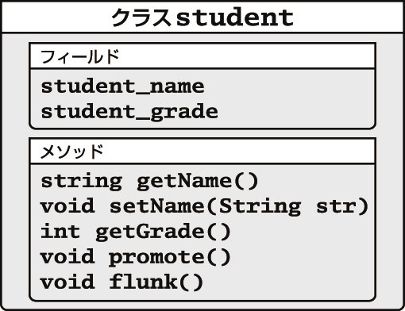
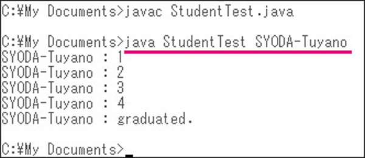
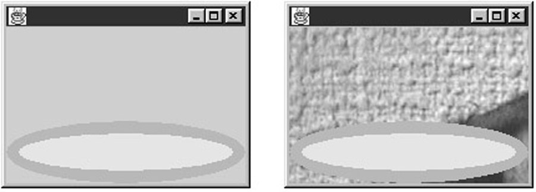

| プログラミングの基礎からしっかり学ぼう！ Javaレッスンブック | |
| 掌田 津耶乃 | |
| Wiz Publishing (2014) | |
はじめに
＿
今やプログラミングの世界では「オブジェクト指向」というキーワード抜きに物事を語れなくなってしまいました。またインターネットの普及により、インターネットとの親和性が重視されるようにもなりました。
こうした変化に伴い、一躍注目されるようになったのが「Java」です。Javaはインターネットの申し子とも言える言語ですし、当初からオブジェクト指向の考え方に基づいて設計されています。ほんのしばらく前までは「プログラミングの学習」といえばC言語が一般的でしたが、今では大学や専門学校などでプログラミングを教えるのに「Java」を選択するところが急増しているようです。
Javaは、一時の流行に終わる言語ではありません。意外に知られていませんが、Javaはもっとも洗練され、かつわかりやすい「オブジェクト指向言語」なのです。オブジェクト指向の何たるかを学ぶのに、Javaほど適したものはないと言えるでしょう。
そんな「初めてプログラミングを学ぶのに選択した言語が『Java』だった」という人のために、Javaを使ってプログラミングという世界そのものを勉強していくための教科書として執筆したのが本書です。本書ではJavaという言語の使い方に限定せず、プログラミングの世界特有の考え方や概念などにより多くのスペースを割いたつもりです。Javaを学ぶのと同時に、プログラミングというものがどのようなものなのか、その基礎からきちんと理解していこう、というのが本書の主旨です。
本書が、Javaという言語を通じて、これから新たにプログラミングの世界に入っていこうという人の一助となってくれれば幸いです。
2014年12月 掌田津耶乃
1 プログラミングとJavaの基礎知識
＿
まず初めに、プログラミング言語とJavaについての基本的知識を身につけることにしましょう。一口に「プログラミング」と言いますが、それは具体的にどのようなことなのでしょうか？ なぜ、プログラミングを学ぶのにJavaがよいのでしょうか？ そうした基本的疑問に答えていきましょう。
1-1 非構造化言語からオブジェクト指向まで
プログラミングについて学ぶ前に、そもそもプログラミングとプログラミング言語がどういうもので、どのように進化してきたのかについて説明しておきましょう。その流れを知ることにより、現在主流となりつつある「オブジェクト指向」というものの必然性について理解できるようになるでしょう。
1-1-1 プログラミング言語って何だろう？
では、これから皆さんと共に、「プログラミングの世界」というものについて少しずつ学んでいくことにしましょう。ここでは「Java（ジャバ）」と呼ばれる言語を使って学んでいきますが、その前に、プログラミングの世界がどのように推移し変化してきたのか、その流れをごくかいつまんで説明しておくことにします。
現在、プログラミングの世界では「オブジェクト指向」と呼ばれるものが注目されています。おそらく皆さんもどこかでちらっとその名前ぐらいは聞いたことがあることでしょう。このオブジェクト指向というものは、いきなりプログラミングの世界に彗星のごとく登場したわけではありません。それまでのプログラミング言語の進化に伴い、必然的に現れたものなのです。ですから、オブジェクト指向言語を学びはじめる前に、なぜそこに至ったのかを知っておくことは、オブジェクト指向を理解する上でも決して損にはならないはずです。既に、プログラミング言語に関する基礎的なことは知っている、という方は、この項はとばして先に進んでもかまいません。
皆さんは、これから「プログラミング言語」の勉強をしていくことになります。では、そんな皆さんに改めてお尋ねしましょう。「プログラミング言語」って、何でしょうか？ プログラムを作るための言語、と言えば、確かに間違いではありません。では、プログラミング言語がないと、プログラムは作れないんでしょうか？ そもそも、「プログラム」って何なのでしょう？
こうした疑問にきちんと答えられる人は、きっと皆さんの中にも少ないに違いありません。プログラミング言語を使わなくとも、プログラムを作ることは可能なはずです。皆さんが使っている様々なアプリケーションは、たいていハードディスクの中にファイルとして保存されていますね。そして、そのファイルの中には、ずらりとプログラムのデータ（コード、と呼びます）が書き込まれていることでしょう。ということは、ファイルを作成して、こうした実行するコードを直接書き込むようなことができれば、別にプログラミング言語など使わなくともプログラムは作れるはずですね。
が、現実問題として、そんなことをしてプログラムを作る人はいません。やはり、ほとんどすべてのプログラムは、プログラミング言語を使って作られています。これは確かなことでしょう。
1-1-2 プログラミング言語の必要性
では、なぜ「プログラミング言語」なるものが必要なのでしょう。これは一体、コンピュータにおいてどんな役割を果たすものなのでしょうか？コンピュータは、「CPU」と呼ばれるものによりすべての処理が行われます。これは既に皆さん御存じですね。CPUには、それぞれが理解できる命令が用意されており、それを実行することで様々な処理が行えます。とはいえ、それは皆さんが想像しているようなものでは、おそらくありません。
コンピュータの内部では、私たちが使っている言葉のようなものはまったく理解できません。コンピュータはただの機械であり、すべての命令は電気信号のON／OFFによって認識されます。よく、「コンピュータの内部は2進法で動いている」といわれますが、それはこういうことなのです。信号があれば1、なければ0。これしかコンピュータは理解できません。CPUには、いくつかの信号が入力されるときに「これとこれとこれがON、これとこれとこれがOFFならば、この命令と判断される」というような仕組みが組み込まれており、それら信号のON／OFF状態によって指定の命令が実行されます。
メモリにしても、モニタへの画面表示にしても、つまるところはすべてこの「ONとOFF」なのです。RAMチップの中にある特定の地点に電荷がかかっていればON、なければOFF。その組み合わせにより様々なデータを記憶したりしています。CPUに送った命令により、メモリの特定の場所のON／OFF状態を変更したり、隣にずらしたりすることで信号を変え、それによって様々な処理がなされているわけです。コンピュータでプログラムが実行される場合には、ディスクなどから特定のメモリにプログラムが読み込まれます。そして指定されたメモリの地点から、そこにある2進法の情報をCPUが暫時処理していくことでプログラムが実行されていきます。
パーソナルコンピュータはこの20年ほどの間に大きく進化しましたが、この「2進法の信号のやり取りによってプログラムが実行される」という根幹部分は、まったく変わっていないのです。というより、これこそがコンピュータの働きなのだといってもよいでしょう。図1-1は、メモリ（RAM）内には特定の地点に電荷があるかどうかによりONとOFFでデータが記憶されていて、その中から一定桁ごとにCPUにON/OFFデータが送られ、処理されていることを示しています。
図1-1
では、コンピュータに実行させたいプログラムを、私たちはどうやって作り、コンピュータに読み込ませればよいのでしょうか？
コンピュータが信号のON／OFF、2進法しか理解できないことはわかりました。ということは、本来であれば、実行させる命令を順番に「ON、OFF、ON、OFF、OFF、ON、ON...」というように入力していかなければいけないことになるでしょう。
もし、数千、数万行の2進数を1つの間違いもなく入力しなければいけないとしたらどうでしょう？ そもそも、そんなプログラムを私たち普通の人間が考えて設計できるでしょうか？ 答えは、否。おそらく、ごく単純なものであれば、可能かもしれません。しかし、どんなに天才的な人間でも、CPUが理解できる2進法の命令を直接記述して数万行にも及ぶコードを直接書いていくことはできないでしょう。それは、人間の能力の限界を遥かに超えた作業です。
私たち人間がプログラムを作成するためには、もう少し人間に理解しやすい形でプログラムを記述できるような仕組みが必要です。まあ、日本語や英語といった自然言語ほどではないにしろ、ある程度論理的な処理が記述可能な文法を持った言語が必要になります。
そして、その言語に基づいて記述されたものを、コンピュータが実行可能な「ON、OFF、OFF、ON...」という命令に翻訳していく仕組みがあればよいのです。
この「コンピュータの命令と、人間が理解できる命令の間を翻訳する仕組み」こそが、プログラミング言語なのです。
1-1-3 プログラミング言語の違い
プログラミング言語は、1つしかないわけではありません。たくさんの言語が登場し、現在も使われています。これら、たくさんのプログラミング言語はどこが違うのでしょうか？
まず、最大の違いは「文法」です。プログラミング言語は、人間がプログラムを記していくためのものですから、人間が理解しやすい文法である必要があります。そこで、どのような形で記述していけばプログラムを作りやすいか、その基本的な考え方の違いにより、いくつもの文法が考案されました。
皆さんがプログラミング言語といって思い出すのはどんなものでしょうか？ 「BASIC（ベーシック）」「C（シー）」そして「Java（ジャバ）」といった名前ぐらいは、耳にしたことがあるでしょう。これらは、いずれも「文法」という点から見た種別であると言えます。それぞれの言語には、それぞれ固有の文法があり、その文法の違いによって、記述する命令の書き方なども異なってきます。
人間がプログラミング言語の文法に従って記述したプログラムのことを「ソースコード」と呼びます。これに対し、CPUが直接理解し実行できるプログラムのことを「バイナリコード」と呼びます。言語の種類が異なれば、ソースコードはまったく異なります。
各言語は、その用途などにより、それに適した文法となっています。例えば、機能的には低いけれどわかりやすいもの、非常に難しくわかりにくいけれどハードウェアを高度に制御できるようなもの、数値計算に向いたもの、多量のデータ処理に適したもの、といった感じで、用途に合わせてそれぞれの言語は設計されています。ですから「どれが1番」というものではありません。
そして、プログラミング言語のもう1つの大きな違いは、「CPUが理解できる命令への翻訳の仕方」です。これには、大きく分けて2つの方式があります。それは「インタープリタ」と「コンパイラ」です。
インタープリタというのは、プログラム実行時に、人間が書いたソースコードの命令を1つずつ順番にCPUが理解できるバイナリコードの命令に翻訳しながら実行する方式です。これは、「プログラムの修正や変更が容易である」という利点を持っています。1行ずつその場で翻訳していきますから、実行している最中にソースコードを修正したりできますし、なにより「今、手許にある最新のソースコードが常に実行される」というメリットもあります。
反面、毎回実行する度に1つずつ翻訳していきますから、動作速度が遅くなります。また、翻訳して実行するためのプログラムがないと、せっかくのソースコードも動かすことができません。
これに対し、ソースコードを一括してCPUが実行できるバイナリコードに変換して保存するタイプのものを「コンパイラ」と呼びます。あらかじめ、すべてを翻訳して（これをコンパイルという）しまったファイルを作るわけですから、1つずつ翻訳しながら実行するインタープリタと比べ、圧倒的に実行速度が速いのが特徴です。
反面、すべてを一括翻訳しますから、コンパイルには時間がかかります。ソースコードの量が多くなるほど、コンパイルするのに長く待たされるようになります。また、プログラムの修正も面倒です。何か問題を発見したら、ソースコードを修正し、再度コンパイルし、できたファイルを実行しなければいけないのですから。
この他にも細かな違いはありますが、大別するなら「文法」と「インタープリタかコンパイラか」によってプログラミング言語は分けられていると考えてよいでしょう。例えば製品として流通しているプログラミング言語を呼ぶ際などには、この両者を合わせて「BASICインタープリタ」「Cコンパイラ」というように表現するのが一般的です。
図1-2は、インタープリタはプログラムリストのまま命令を持っており、実行時に1行ずつその場でCPUが理解できる命令に変換するのに対して、コンパイラはすべてのリストを一括して変換したファイルを作成することを表したものです。
図1-2
1-1-4 プログラミング言語とパソコンの歴史
では、プログラミング言語は、どのように発展してきたのでしょうか？ 最初に触れたように、現在は「オブジェクト指向」と呼ばれるものが使われているようですが、そこに至るまでどのような進化をしてきたのでしょう。そのごく簡単な流れについて触れておきましょう。
プログラミング言語の歴史は、パーソナルコンピュータの歴史といってもよいでしょう。パーソナルコンピュータの歴史は、1975年、米MITS社より「Altair 8800」と呼ばれるコンピュータキットが発売されたところから始まります。当初、それにはモニタはおろかキーボードすらついておらず、パネルについているたくさんのスイッチをON／OFFして実行するコードを入力するという、実に原始的なものでした。
やがて基本的な入出力装置が使えるようになるとほぼ同時に、「BASIC（ベーシック）」と呼ばれるプログラミング言語が、ビル・ゲイツという少年によって作られます。え、「Microsoft社の会長と同じ名前なのは偶然か？」ですって？ いえいえ、まさしく「あの」ビル・ゲイツ氏のことですよ。
やがて、1978年にApple Computer社から「Apple ][」と呼ばれるコンピュータが登場します。これにより、現在の「モニタとキーボード」を持ったパーソナルコンピュータの原形が確立されたといってもよいでしょう。また、このApple ][というコンピュータには、最初からBASIC言語が内蔵されていました。そしてこれ以降、「パソコンには最初からBASICが組み込まれている」という、BASIC全盛の時代が始まります。
もちろん、それ以前にもコンピュータはありましたしプログラミング言語もありました。それらは、大形コンピュータ（いわゆるメインフレームと呼ばれるもの）で、現在皆さんが使われているパーソナルコンピュータとはかなり違うものでした。ですから、現在の「パソコン」とは別のものと考えた方がよいでしょう。以下に、主なプログラミングの登場についてまとめました。
|
1956年 |
FORTRAN（IBMが大形機用に開発） |
|
1962年 |
Lisp（MITのマッカーシー氏により開発） |
|
1964年 |
BASIC（ダートマス大学のケメニー、カーツ両氏により開発） |
|
1971年 |
Pascal（スイス連邦工科大学のヴィルト氏により開発） |
|
1972年 |
Smalltalk（ゼロックス・パロアルト研究所により開発。最初のオブジェクト指向言語） |
|
1975年 |
C（AT&Tベル研究所のリッチー氏により開発） |
|
1970年代後半 |
〜パーソナルコンピュータの時代の始まり〜 |
|
1995年 |
Java（Sun Microsystems社により開発） |
|
1995年 |
JavaScript（Netscape Communications社により開発） |
|
1995年 |
PHP（The PHP Groupにより開発） |
|
1995年 |
Ruby（まつもとゆきひろ氏により開発） |
＿
1-1-5 BASICとGOTO問題
BASICは「Beginner's All-purpose Symbolic Instruction Code」の略で、1964年に、米ダートマス大学のケメニー教授とカーツ教授により開発されたものです。これは特にパソコン用に設計されたというわけではなく、もともとは大形コンピュータ用のものでした。その名の通り、BASICはビギナーに向けて設計されており、非常にシンプルでわかりやすい言語でした。このため、多くのパソコンがこれを標準搭載したのでしょう。
このBASICという言語は、当初「行番号」と呼ばれる番号によって命令の位置を指定し、状況に応じて指定の番号へとジャンプする、という形でプログラムが作成されました。例えば、次のような感じです。
100: x = 0
110: y = 0
200: x = x + 1
210: y = y + x
220: PRINT y
230: IF x < 10 THEN GOTO 200
300: PRINT "TOTAL " ; y
500: END
1つ1つの命令の前には番号が記され、一番若い番号の命令から順番に実行されていきます。そして最後まで実行するか、「END」という終了命令があるとプログラムを終了します。1つ1つの命令の意味などはわからないでしょうが、とてもシンプルなものですから、眺めているだけでなんとなくどんなことをしているのか想像できるんじゃないでしょうか？
この初期のBASICはとてもわかりやすかったのですが、様々な問題を抱えていました。その最大の問題は「GOTO」です。BASICでは、プログラムを制御するのに、必要に応じて「GOTO」という命令を使って特定の行にジャンプすることで処理の流れを変えていました。「GOTO 100」などとやれば、100番の命令にジャンプするわけですね。
これは実に単純でわかりやすいのですが、「ジャンプ元に戻れない」という欠点がありました。つまり、「行きっぱなし」なのです。このため、処理の流れはきちんとした1本道ではなく、あちこちにジャンプして実行するこまぎれの処理の塊となってしまいました。「ここで始まって、ここで終わる」という、きちっとした形がないのです。
ごく単純な処理であれば手早くソースコードを書けるのですが、複雑なものになってくると、どこで何をやっているのか次第に判然としなくなってきます。殊に、他人が書いたソースコードを後で手直ししようなどとなると、それは信じ難いまでに大変な作業であることに気づきます。なにしろ、どこで別の場所にジャンプするか、どこでプログラムが終了してしまうのか、すべてを追って調べていかないとわからないのですから。ある部分にバグがあると思って削除すると、実はまったく想像もしなかったところからその部分にジャンプするようになっていてさらにバグを引き起こしたりすることもあるでしょう。また、終了の処理などがいい加減だと、本来必要のない、ずっと後の方にある命令までどんどん実行していってしまうようなことも起こってしまいます。
こうした、こんがらがって何がなんだかわからなくなってしまったソースコードのことを「スパゲティ・コード」と呼んだりしました。まったく、初期のBASICのソースコードは、書いた本人でさえ後から見直すと理解できないという冗談のようなことが実際よくあったのです。
こうした問題と、パソコンに標準で組み込まれていたBASICがインタープリタであったということなどにより、開発者は次第に標準搭載のBASICを離れ、より高度な開発ができる言語を模索するようになりました。
1-1-6 構造化プログラミングとPascal
スパゲティ・コードを生む最大の要因は、初期のBASICが、プログラム全体の構造をしっかり組み立てて作成できるようになっていなかったことにあります。単に、処理を制御する文法を用意しただけでは、わかりやすいソースコードは作れなかったのです。あまりに自由にあちこちジャンプできてしまうので、プログラマがよっぽどしっかりと全体の構造を把握して、それらをきちんと整理しまとめるように書かないと、あっという間にスパゲティ・コードができてしまいました。
作成するプログラムが複雑なものになるにつれ、「如何にソースコードの構造をわかりやすくするか」を考えるようになってきました。そうして考えられたのが「構造化」という手法です。
構造化とは、プログラム全体を1つ1つの小さな処理に分割整理し、それらが階層的に整理された形でソースコードを構築していくという手法です。ジャンプしたら、必ずジャンプ元へと戻る。「行きっぱなし」は禁止。常にメインの処理の流れがあり、そこから分割された小さな処理を必要に応じて呼び出していく。呼び出したものは終了したら必ずメインの処理へと戻る。こうした「ソースコードを構造的に記述していく」ということにより、ソースコードを飛躍的に読みやすく、理解しやすくすることができるだろう、と考えたのです。
こうした「処理の一部分をひとまとめにして、メインの処理とは切り離して利用できるようにしたもの」を一般に「サブルーチン」と呼びます。これに対し、メインの処理部分を「メインルーチン」と呼んだりします。構造化プログラミングでは、メインルーチンから、必要に応じてサブルーチンを呼び出しながら処理が実行されていくようになっているのです。
この構造化プログラミングの考え方を非常に強く意識して作られたものとして、「Pascal（パスカル）」という言語があります。Pascalは、1971年にスイス連邦工科大学のヴィルト教授によって考案されたプログラミング言語で、主にプログラミングの教育を目的に考えて設計されています。
パソコン内蔵のBASICの限界が見えて以後、Pascalは一時期かなり広く使われるようになりました。廉価で高速なPascalのコンパイラ（コンパイルするためのプログラム）がいくつも登場したこともありますが、慣れてくると、Pascalのしっかりとした構造化の仕組みが大きな力となることがわかったからでしょう。
Pascalでは、サブルーチンに相当するものを「プロシージャ」と呼びます。1つ1つのプロシージャは非常に独立性が高く、プロシージャの途中で勝手に他のプロシージャの中にジャンプしてしまう、といったことはできなくなっています。そして、メインの処理の中から、必要に応じて他のプロシージャを呼び出しながら処理を実行します。
Pascalでは、使用する変数やプロシージャの宣言の形が厳格に決まっており、あらかじめ必要なものはすべて指定された形で宣言をしなければいけません。また、ほとんどすべての構文では「begin」と「end」という予約語でどこからどこまでがその構文に当てはまるものかを指定するなど、実に厳しく構造を記述するようになっています。「枠構造」と呼ばれるこのPascal特有の構造は、プログラミングというものを学ぶのに適したものと言えます。
Pascalを使って記述したソースコードがどんな感じのものになるか、ちょっと見てみましょう。
program Test;
var
＿x,i: Integer;
begin
＿x := 0;
＿for i := 1 to 10 do
＿begin
＿＿x := x + i;
＿＿writeln(x);
＿end;
＿writeln('TOTAL ', x);
end;
もちろん、1つ1つの予約語の意味はわからないでしょうが、最初の「var」というところに変数らしきものが宣言されていたり、構文の開始と終わりに「begin」と「end」があったりすることがおぼろげながらわかるでしょう。先ほどのBASICなどよりは、少し難しそうですが、しかし全体の構造がはっきりとしていて掴みやすそうに見えますね。
1-1-7 そしてCの時代へ
Pascalは、非常に厳格な教師のような言語でした。ほんのちょっとルーズな書き方をしただけで、シンタックスエラー（文法エラー）が起きました。ある程度プログラミングに慣れてくると、プログラマは自分なりのスタイルで書こうとするようになります。「それはここに書け、これはあっちに書け、あれはそっちに書くな！」とひっきりなしに怒鳴り続けるPascalは、正直いって煙たい存在でもありました。
構造化プログラミングの仕組みをきちんと持っており、しかもPascalほど厳格ではなくてもっと自由な書き方が許される言語。そういうものを求めるプログラマの間で次第に広まっていくのが「C（シー）」という言語です。
Cは、1975年に米AT&Tベル研究所のリッチー氏により開発された言語です。もともと、UNIX（ユニックス）と呼ばれるOSの開発用に作られたものですが、その後パソコン用に移植した製品が登場し、広く使われるようになりました。
Cは、Pascalなどに比べるとかなり「低水準」の言語です。数字や1文字だけのテキストを示すキャラクタといった値は扱えますが、テキストなどを扱う機能は持ってないのです。また入出力の機能も持っておらず、ファイルの読み書きさえできません。要するに、非常に原始的な機能しか備えていない言語だったのです。
が、「それじゃ何もできないじゃないか」というのは当たりません。C本体にはそれらは標準で用意されてはいませんが、そうした必要な機能をライブラリとして整備していきました。これはANSI（American National Standards Institute、米国規格協会）により標準化されています。
こうした仕組みにより、Cはその本体サイズを非常にコンパクトにまとめることができました。これが、多くのプラットフォームへの移植を容易にしたことは確かでしょう。ただし、テキストをちょっと扱うだけで、ライブラリの関数を呼び出さないといけない、という面倒な面もありました。
基本的な決めごとが少ないということは、それだけ自由な形でプログラムが書けるということにつながります。CはPascalと比較的似た文法構造を持っていますが、Pascalに比べ非常にプログラマに任された部分が大きく、柔軟な記述ができます。では、Cで書かれたソースコードがどんなものか、見てみましょう。
#include <stdio.h>
main() {
＿int x = 0;
＿for (int i = 1; i <= 10; i++) {
＿＿x += i;
＿＿printf("%d¥n", x);
＿}
＿printf("TOTAL %d¥n", x);
}
先のPascalのリストに比べ、ずいぶんと厳めしい単語が減っていますね。代りに、奇妙な記号類が増えています。最初に#includeというものがありますが、これで必要なライブラリを組み込んでいます。Cは何をするにも、まずライブラリの組み込みから始まります。
Pascalでは変数をまとめて宣言していましたが、Cでは「ここで宣言しなさい」という部分は決まっておらず、必要に応じてその場で宣言できます。また、beginとendの代りに、｛｝記号を使って構文の範囲を指定するようになっています。この他、「++」だの「+=」だの、なにやらわかりそうでよくわからない記号がありますが、こうした基礎的な演算機能はずいぶんと柔軟で強力なのです。
実行する処理全体は、「main()」というもの｛｝部分に記述されていることがわかります。これがサブルーチンに相当するものです。Cでは、すべてのプログラムは「関数」として記述するようになっています。これはメインルーチンも例外ではなく、「main」というメインルーチン用の関数として記述するのです。そういうところは、Pascal以上に構造化されているとも言えるでしょう。
1-1-8 構造化からオブジェクト指向へ
こうしてC全盛の時代が到来しました。しかし、Cもまた完璧な言語ではありません。コンピュータが進化し、ソフトウェアが発展するにつれ、さまざまな問題も浮かび上がってきました。
その最大のものは「構造化したぐらいでは収拾がつかないぐらいにプログラムが複雑化してきた」ということでしょう。特に「GUI（Graphic User Interface、ウィンドウやマウスを使った、皆さんにお馴染みのインターフェイスのこと）」が一般的になると、アプリケーションプログラムの開発難易度は飛躍的に高まりました。
プログラマは、何か作る度に、ウィンドウを作成したり、その表示を更新したり...といった処理を書かなければいけません。それは実に膨大な量のソースコードでした。
しかも、毎回プログラムを作る度に、それらほとんど同じような処理を書かないといけないのです。あちこちで、こうした機能への新たなライブラリ作りなどが行われましたが、それも限界があります。GUI利用のアプリケーションプログラムを作るには、本来の処理以外の部分で膨大な労力が必要となってしまうのです。
さらに、開発の規模が大きくなると、「どこで問題が発生したのか」が明確でなくなってきます。あるサブルーチンでエラーが発生したとしても、それ以前に別のところで呼び出されたサブルーチンで問題が発生しており、それがたまたま別の地点で明確なエラーにつながった...というような場合も考えられます。
大規模な開発ともなると、多くのプログラマがそれぞれ分担してソースコードを書いているのが普通ですから、そうなると他人の書いたまったく無関係なコードが回り回って自分のところでバグの発生を招いた...などという泣くに泣けないことだって起こってしまうでしょう。
問題は「プログラム開発の効率をいかにして向上させるか」でした。そのためにはどうすればよいでしょうか？
一度作成したものは、後で似たようなものを作るときに何度でも簡単に使いまわせるようにすればいい。そして、ウィンドウやメニューといった利用する対象をもっと整理し、独立したプログラムとして扱えるようになるといい。その対象を操作するのに必要なものはすべてそれ自身に揃っており、他のプログラムがどうなっているかとは関係なく、それを操作できる。そういう仕掛け...。
こうして誕生したのが「オブジェクト指向」という考え方です。そして、この概念を取り込んで作られたプログラミング言語が「オブジェクト指向プログラミング言語（Object-Oriented Programming Language、一般に略して「OOPL」と呼ばれる）」というものです。これは、そういう言語があるわけではなくて、オブジェクト指向のための仕組みをもった言語全般のことを示します。
オブジェクト指向では、「操作する対象」に重点をおいたプログラム設計がなされます。この対象のことを「オブジェクト」と呼びます。
オブジェクトには、その操作対象が必要とする様々なデータや、それを操作するためのサブルーチンに相当するものなどがすべて用意されており、それらを利用することでオブジェクトを操作できます。それぞれのオブジェクトは独立しており、再利用が容易に設計されています。
オブジェクト指向の導入により、開発の効率を飛躍的に高めることができるようになります。
一度作ったオブジェクトは、後で同じようなことをする際に何度でも使いまわせるため、プログラマは似たようなソースコードを何度も書く必要がなくなりました。
また、1つ1つのオブジェクトの独立性が高いため、トラブルが起きたら、そのオブジェクトだけを修正すれば問題を解決できるようになります。
オブジェクト指向の考え方は急速に広まり、多くの言語に影響を与えました。Pascalの世界では「Object Pascal」というものが誕生しました。これは現在、「Delphi」（Embarcadero社）という開発ツールで使われています。
また、Cの世界では「C++（シープラスプラス）」というものが生まれ、これは「Visual C++」（Microsoft社）「C++ Builder」（Embarcadero社）といった開発ツールで採用されています。BASICも、早い段階から構造化のための改良が行われており、「Visual Basic .net」（Microsoft社）という開発ツールでは本格的なオブジェクト指向にも対応しています。
また、プログラミング言語以外の部分でも、データベースや、最近では各種のビジネスモデルなどにも応用されるようになっています。オブジェクト指向の考え方を理解することは、単にプログラミングの勉強というだけでなく、この先の社会のあり方を理解する上で大きな力となってくれるはずです。
1-1-9 オブジェクト指向の3つの要素
オブジェクト指向言語は、その基本的な考え自体を理解するのは簡単なのですが、それがプログラミング言語で実際にどのような仕組みで機能しているかを正しく理解するためには多くの新しい概念を理解しなければいけません。ここでは、基本的な考え方だけ触れておくことにしましょう。
オブジェクト指向言語には、もっとも重要な要素として3つのものがあります。その言語がオブジェクト指向であるというには、最低その3つの概念が実装されていなければいけません。その3つの要素とは、次のようなものです。
・カプセル化（encapsulation）
・継承（inheritance）
・多義性（polymorphism）
最初の「カプセル化」は、オブジェクトの独立性に関するものです。オブジェクトには、そのオブジェクトに必要なデータ、機能だけしか用意されておらず、その内部で完結しています。そして、そのオブジェクトの内部がどのようになっており何が行われているかは、他のオブジェクトは一切関知しません。1つ1つのオブジェクトが他のオブジェクトと独立して扱えることがオブジェクト指向では重要なのです。
2番目の「継承」は、オブジェクトの再利用に関するものです。新たにオブジェクトを作成するとき、既にあるオブジェクトの機能をすべて受け継ぎ利用できるようにするのが「継承」です。継承により、新たなオブジェクトの作成は、継承の元に用意されていない新しい機能だけを組み込めば済むようになります。継承により、同じ機能を何度も作る必要はなくなるのです。
最後の「多義性」は、オブジェクトの振る舞いに関するものです。似たような役割を果たすいくつかのオブジェクトがあった場合、同じ機能でありながら異なる処理を用意できることです。
例えば、オブジェクトに「表示更新」という機能があったとしましょう。このとき、プログラマは「表示更新」という命令をオブジェクトに送ります。すると、それぞれのオブジェクトが、自分に適した形で表示を更新します。重要なのは、「プログラマは、各オブジェクトがどのような更新を行うか知らなくてよい」ということです。プログラマが知っていなければいけないのは、「オブジェクトの表示を最新のものにするには『画面更新』を呼べばいい」ということだけです。後は、それぞれのオブジェクトが、それぞれ適した形で処理を行います。
これら3つの要素は、それぞれが密接にリンクして機能します。例えば、作成したプログラムを、後でバージョンアップしいくつかの部分を強化したいと思ったとしましょう。その場合、プログラマは、「強化しよう」と思ったオブジェクトを「継承」して新しいオブジェクトを作ります。こうすれば、それまでの機能は自動的にすべて受け継がれるからです。プログラマは、単に新しい機能を追加するだけで済みます。
また、既にある機能を修正する場合も、同じ名前のサブルーチンを新たに組み込んでやるだけで済みます。「多義性」により、同じ機能でありながら他のオブジェクトとは異なる処理を組み込むことができるからです。
そして完成したオブジェクトは、プログラム全体で、それが利用されている部分を新しいものに入れ替えるだけで利用可能になります。「カプセル化」により、各オブジェクトは独立していますから、特定のオブジェクトだけを入れ替えることが可能なのです。
また、「多義性」により同じ命令、同じデータでありながら処理だけがまったく新しくなっているため、そのオブジェクトを操作するための命令の呼び出しなどを修正する必要は一切ありません。オブジェクトを入れ替えれば、同じ命令で新しい機能が自動的に呼び出されるようになるのです。
以上が、構造化以前からオブジェクト指向に至るまでの、プログラミング言語の流れです。オブジェクト指向の仕組みなど重要なものは改めて詳しく説明していくことにします。ここでは「構造化」と「オブジェクト指向」がどういうものか、なぜそれらが登場し、多くの人に受け入れられたのか、その基本的な意味合いだけしっかりと理解しておきましょう。
1-2 Javaの基礎知識
これから私たちが学んでいく「Java」という言語は、どのようなものなのでしょう。その特徴と、具体的にJavaを使うために必要な操作などについて、ここでまとめておきましょう。
1-2-1 Javaの誕生
プログラミング言語と、そしてオブジェクト指向というものがどのようないきさつで誕生したかわかってきたところで、これから皆さんが学んでいく「Java」という言語について考えてみることにしましょう。
Javaは、1995年に米Sun Microsystems社によって開発されたプログラミング言語です。もともと、Javaは「Oak（オーク）」と呼ばれる、家庭電化製品などの機器類のファームウェア開発を考えて作成されたものでした。それがインターネットの普及と共に方向を変え、まったく新しい形に生まれ変わって登場した、という経緯があります。
Javaという言語の特徴を整理するなら、以下のようになるでしょう。
・非常にわかりやすいオブジェクト指向言語である。
・仮想マシンというシステムを内包しており、プラットフォームに依存しないでプログラムが動く。
・インターネットとの親和性が高い。
他にも様々な利点がありますが、これらの利点が注目され、Javaは特にインターネットの世界を中心にして急速に広がっていきました。Javaでは、「アプレット」と呼ばれる、Webブラウザ内で動作する小さなプログラムを作成することができます。当初は、このアプレットのおかげで、「Java＝Web用言語」と思われていました。
しかし、JavaはWebの中でしか使えないような言語ではありません。当初、アプレットが注目されたのは、それぐらいしかJavaが活躍する場がなかったせいもあるでしょう。
しかし、その後Javaは拡大し、利用される範囲も広がっていきます。まず、サーバーサイドJava。サーバーにおける機能が整備されると共に、多くのアプリケーションサーバーはJavaをサポートするようになりました。そして現在、Javaが動かないWebサーバーはないといってもよいぐらいに浸透しています。
一般的なアプリケーションの開発にもJavaは利用可能です。例えば、Javaの開発ツールである「Eclipse」というソフトウェアは、そのかなりの部分がJava自身で書かれています。その他、チャットソフトなどインターネットを利用したソフトウェアの多くがJavaで開発されるようになりつつあります。
この他、まったくコンピュータとは違う世界でもJavaは使われるようになっています。現在、もっとも注目されているのはスマートフォンです。iPhoneと並んで広く利用されているAndroidスマートフォンのアプリは、すべてJavaで開発されています。このように、Javaの潜在的な需要は急激に膨れ上がりつつあるのです。そうした点からも、今、Javaを学ぶ利点は大きいように思えます。
もちろん、パーソナルコンピュータの世界では、本格ソフトウェア開発にはまだまだ他の言語が使われています。しかし、Javaによってプログラミングとオブジェクト指向言語の基本を理解すれば、そうした他の言語の習得にも大きな力となってくれるはずです。
1-2-2 オブジェクト指向としてのわかりやすさ
では、Javaという言語の特徴について、もう少し説明を続けることにしましょう。まずは、「オブジェクト指向言語としてのわかりやすさ」からです。
なぜ、皆さんと共にプログラミングを学習していく上で「Java」という言語を選んだのか、その最大の理由が、わかりやすいオブジェクト指向言語であるということなのです。
オブジェクト指向言語は、「理解するのに敷き居が高い言語」でもあります。オブジェクト指向では、単に文法や命令の使い方を覚えるだけではソースコードは書けません。まず、オブジェクト指向特有のさまざまな新しい概念を理解しなければなりません。今まで、処理の手続きを順番に記述することがプログラミングだと考えていた人には、これら概念の導入でまずつまづくことが多いものです。
さらに、用意されている膨大なオブジェクトの使い方を覚えなければいけません。オブジェクト指向言語では、あらゆる操作はオブジェクトを作成し、それを使って行います。今までのように「用意されたコマンドを呼び出せばおしまい」というのではないのです。このため、ほとんどのオブジェクト指向言語では、取りあえずプログラマが必要とするような機能類をあらかじめオブジェクトとして用意しています。その数は、数百から場合によっては数千にもなるでしょう。プログラムを作るためには、それらオブジェクトの使い方を学ばなければいけないのです。こうした点から、オブジェクト指向言語を使えるようになるまでには相当な労力が必要とされたのです。
Javaを設計した人々の頭のよい点は「Javaに新しいものを何も持ち込まなかった」という点にあるでしょう。既に、Javaが登場する前に、オブジェクト指向の概念や様々な機能は世に出ていました。Javaを設計する際、彼らはそうした様々な新しい概念や機能の中から、オブジェクト指向の実現に必要なものを絞り込み、便利ではあってもわかりにくくしてしまうような機能をばっさりと切り捨てました。そうすることで、非常にシンプルなオブジェクト指向言語にすることができました。
また、多くのオブジェクト指向言語は、もともとあった言語にオブジェクト指向の機能を付け加えています。つまり、「オブジェクト指向でないソースコードも書ける」のです。このため、オブジェクト指向言語を使っていながら、旧来と変わらぬコーディングをする人が多かったのです。また、両者の混在が、慣れないプログラマを混乱に陥れたことも事実です。
Javaは一から設計されたため、そうした「オブジェクト指向ではない部分」を一切持っていません。オブジェクト指向を使わないコードは一切書けないのです。これにより、プログラマはイヤでもオブジェクト指向なコーディングを行うようになります。
また、こうした「新しい言語」というのは、今まで使ってきたプログラミング言語の知識が活かせず、一からすべて覚え直しになってしまうため、他の言語のプログラマが移ってくるのは大変でした。Javaはこの点も考慮しています。既にコンピュータの世界でほぼ標準とも言える「C言語」の基本的な文法の多くをそのまま採用し、非常にCライクな形にまとめたのです。単にコピーしたのではなく、どんなに便利で強力な機能であっても、わかりにくいもの、オブジェクト指向とあわないものはすべてばっさりと切り落としました。
こうして、既存のさまざまな言語や概念から一番よい部分だけをピックアップし、もっともすっきりとした形でまとめたのが「Java」なのです。
1-2-3 仮想マシンの考え方
Javaの内部的な面での最大の特徴は、「仮想マシン」という概念でしょう。仮想マシンとは、文字通りハードウェア的な実体のない、ソフト的に作られたコンピュータのことです。Javaは、プラットフォームに依存することなく、あらゆる環境で同じプログラムが動くことを考えて設計されました。プラットフォームとは、ハードウェア（CPUなど）やOSのことを意味します。すなわち、CPUの種類やOSが違っても、すべて同じプログラムが動く、ということです。
Java以外のすべてのプログラミング言語は、コンパイルして作られたバイナリコードは、プラットフォームに依存します。CPUが理解できる形に命令を翻訳しているのですから、CPUが違えば動かないのは当たり前ですね。また、現在のGUIを使ったOSは、ウィンドウやメニューといった基本的なインターフェイスを作成する機能をOS内に持っており、各アプリケーションプログラムはそれをプログラム内から呼び出して動くようになっています。このため、OSが異なるとやはりプログラムは動かないのです。こうした中で、なぜJavaのプログラムだけがどのプラットフォームでも動くのでしょうか？ その秘密が「仮想マシン」なのです。
仮想マシンというと、パソコンの画面の中にバーチャルなコンピュータが現れるようなイメージで考えてしまうかもしれませんが、そんな大袈裟なものではありません。コンピュータの内部に、決まった命令セットを持ったCPU、メモリ空間、画面表示やネットワーク送受などのI/O関係といったものをもったシステムをソフトウェア的に作り出すものです。
仮想マシンは一種のエミュレータのような働きをします。仮想マシンのCPUに送られた命令は、そのコンピュータの（本物の）CPUの命令に変換され送られるようになっています。
Javaはコンパイラ言語ですが、このコンパイラは、Javaのソースコードを、仮想マシンのCPUが理解できる形に翻訳します。これを、通常のバイナリコードと区別する意味で「Javaバイトコード」と呼びます。
このJavaバイトコードは、パソコンのCPUは理解できません。あくまで、仮想マシンにあるCPUが理解できるものなのです。ですから、Javaのプログラムを実行する際には、この仮想マシンプログラムを実行し、その中でプログラムが動きます。つまり、コンパイラでありながら、インタープリタのように実行用のプログラムを必要とする、という一見すると奇妙な形になっているのです。
しかし、このおかげでJavaの仮想マシンさえインストールされていれば、どのようなCPUの、どのようなOSのパソコンであっても、まったく同じJavaのプログラムを動かすことができるようになっているのです。いえ、パソコンである必要さえありません。仮想マシンがあるなら、家電製品や通信機器などでも動かすことができます。
Javaのパソコン以外への拡大は、この仮想マシンによるところが大きいと言えるでしょう。図1-3は、Javaは各OSごとに仮想マシンを用意していて、Javaのプログラムはまず仮想OS内に仮想マシンを起動し、その中で動くことを示しています。
図1-3
1-2-4 インターネットとの親和性
Javaが当初多くの人から注目を集めた最大の要因は、やはり「インターネットとの親和性が高い」ということでしょう。
先に触れたように、Javaには「アプレット」と呼ばれる、Webブラウザ上で動作するプログラムを作るための仕組みが最初から用意されていました。これにより「Java＝インターネット」という図式が一般の間に浸透していったと言えるでしょう。
WebブラウザでJavaのプログラムが動くためには、いくつかの秘密があります。まず、Webブラウザ自身にJavaの仮想マシンが組み込まれているということ。Javaは発表当初、いち早くNetscape社とライセンス契約を行い、Netscape NavigatorをJava対応としました。その後、Microsoft社のInternet ExplorerにもJavaは搭載されます。この2大ブラウザがJava対応となったことで、Javaは一気に普及していったのです。
また、アプレットには、インターネット経由でダウンロードされたプログラムを安全に動かすための様々な仕掛けがされていました。まず、ダウンロードされたアプレットはメモリ内にのみ存在し、ファイルとして保存されません。ブラウザを終了すれば、アプレットのプログラムはそのマシンから消えてしまいます。万が一、ウイルスのような働きのアプレットを作ったものがあったとしても、それは決して残らないのです。
また、アプレットには「サンドボックス」という機能を制限された動作環境の中で動くようになっていました。サンドボックスでは、ローカルボリューム（ネットワーク上ではない、コンピュータに直接つながっているボリューム）のファイルを読み書きすることはできません。つまり、ユーザーのハードディスクの中には一切アクセスできないようになっているのです。こうした安全対策により、アプレットは広まっていったのです。他の言語でもネットワークを利用するプログラムを作成できましたが、Webブラウザの中で動くプログラムを、簡単に、しかも安全な形で手軽に作成できるものはありません。
こうしてアプレットによりJavaはインターネットの世界で広まっていきました。が、それだけしかインターネットでの利点がないわけではありません。当初からインターネットを重視していたJavaは、その後もインターネット関連での利用を意識した機能強化を推進していきます。
そして「サーブレット」と呼ばれる、サーバー上で動作するアプレット的なプログラムや、「RMI（Remote Method Invocation）」というネットワーク上のオブジェクト間で通信を行い分散オブジェクトを構築する機能、「JDBC（Java DataBase Connectivity）」といったJavaからデータベースにアクセスする基本仕様などを次々と発表していきます。
こうして、Javaはインターネット上でもっとも利用価値の高い開発言語としての地位を確立していったのです。
1-2-5 JavaのエディションとJDKについて
では、実際に私たちがこれから使うJavaについて説明をしましょう。Javaは、現在多くのコンピュータやサーバ、携帯端末などで利用できるようになっています。
一般のプログラミング言語のように、実行するコンピュータやOSが固定されているのならば1つのパッケージで澄みますが、これだけ実行環境が幅広くなると1つですべてを済ませるのは難しくなってきました。
現在、Javaは開発元のOracle社により、3つのエディションに整理されています。それは以下のようなものです。
▪Java Micro Edition（Java ME）
携帯電話やPalmなどの携帯端末など、非常に限られたハードウェアで動作するためのものです。機器に組み込んで使われるため、「組み込みJava」などと呼ばれます。機能を大幅に縮小軽量化し、少量のメモリで動作するのが特徴です。ただし、スマートフォンなどで使われているAndroidは、Java MEではなく、独自のJava環境を使っています。
▪Java Standard Edition（Java SE）
これがいわゆる「パソコン向けJava」です。Javaのもっとも基本となるエディションで、WindowsやLinux、Mac OSなど、主なパソコン用OS上で動作するように作られています。本書で使うのも、当然このエディションです。現在、Javaの開発を行っているOracle社のサイトからダウンロードできます。
▪Java Enterprise Edition（Java EE）
Webベースのシステム構築のために用意されたもので、「サーバ向けJava」ともいうべきものです。Enterprise JavaBeansやJavaServer Pagesといったサーバ利用のための技術を標準で用意している点がJava SEと大きく異なります。
3つのエディションは、「用意されているAPIの違い」と考えてもよいでしょう。基本的な文法や仕組みそのものに違いがあるわけではありません。ですから、ここではJava SEを使ってJavaを学んでいきますが、基本がわかれば、そこからJava MEやJava EEに移行していくことも難しくはありません。
また、エディションは3つありますが、いずれも「作るにはパソコンを使う」という点に違いはありません。
スマートフォンで動くJavaプログラムといっても、まさかスマートフォンで作るわけにはいきません。ですから、どのエディションであっても、まず「パソコンでJavaプログラミングをする」ということの基本を理解しなければいけない点は同じなのです。
Javaの開発実行環境は、Oracle社よりリリースされている「Java Development Kit（JDK）」というものが基本となります。これはJavaの開発および実行に必要なソフトウェア一式が用意されているもので、これだけでJavaのプログラミングが行えます。
また、多くのソフトウェア会社よりJavaの開発環境が市販されていますが、それらの大部分は、このJDKをベースにして各社の環境を構築しています。
このJDKは、現在までメジャーなバージョンアップを何度となく行ってきています。特に、Java 5（JDK 1.5）というバージョンでは非常に大きな改良が加えられており、現在利用されているJavaの多くはこのJava 5以降を使っています。本書では、JDKの最新バージョンである「Java 8（JDK 8）」というバージョンのWindows版をベースに説明を行います。
1-2-6 JDKのインストールと注意点
Javaを使うためには、まずJDKをインストールする必要があります。現在のJDKは専用インストーラの形になっており、ダブルクリックして起動し、決められた手順に従って設定をしていくだけで簡単にインストールが行えるようになっています。JDK 8ののインストーラでは、以下のような順番に設定を行います。
▪ようこそ
起動すると、すぐに「Java Se Development Kit 8 Update XXXのインストール・ウィザードにようこそ」と表示された画面が現れます（XXXは任意のバージョン番号）。そのまま「次 >」ボタンを押して次に進みます（図1-4）。
図1-4
▪インストールオプション
インストールする内容の選択とインストールする場所の設定を行うための画面が現れます。初期状態で、必要なものはすべてインストールされるようになっているため、特に理由がない限り設定の変更は不要です。そのまま次に進めばよいでしょう（図1-5）。
図1-5
▪インストールの実行
次に進むと同時に、自動的にインストール作業が開始されます。インストールには時間がかかるので、終了するまでしばらく待ちます（図1-6）。
図1-6
▪JREのセットアップ
しばらくすると「Javaセットアップ」ウインドウが新たに現れます。これは、「Java Environment（JRE）」というJavaの実行環境をインストールするためのインストーラです。通常、「Java」と言えば、このJREのことを指します。ウインドウでは、インストール先の設定が用意されます。特に理由がなければそのまま次に進みましょう（図1-7）。
図1-7
▪JREをインストール
次に進むとJREのインストールが自動的に開始されます。そのまま終了するまで待ちましょう（図1-8）。
図1-8
▪インストール完了
JREのインストールが完了するとウインドウが閉じられ、元のインストーラの画面に戻ってインストール完了した表示がされます。そのまま「閉じる」ボタンを押してインストーラを終了しましょう（図1-9）。
図1-9
インストールすると、以下の場所にファイル類が組み込まれます。
・インストールしたフォルダ
デフォルトではC:\Program Files\Java\jdk1.8.0_xxxにインストールされます。ここにJDKの一通りのファイルが組み込まれます。
・C:\Program Files\Java\jre8
「Java Runtime Environment（JRE）」と呼ばれるソフトウェアがここにインストールされます。JREは、Java実行環境です。JavaのプログラムをWindows上で実行したり、Webブラウザで最新のJavaを利用するのにJREは用いられます。
・コントロールパネル
Java2以降では、「Java」コントロールパネルが追加されます（図1-10）。これは、Javaのプログラム実行に使うJREのバージョンや、Webブラウザで実行されるアプレットなどのJava環境を管理することができます。
図1-10
以上でJDKのインストールは完了しました。これでJavaのプログラムを実行することはできるようになりました。しかし、Javaの開発を行うためには、もう少し作業を行う必要があります。それはパスの設定です。
1-2-7 環境変数PATHとCLASSPATHの設定
Java2以降では、Javaの環境は2つに分かれています。Javaのプログラムを実行するためのJREと、開発環境であるJDKです。JDK 8をインストールすると、この両者がインストールされます。
JREは、インストールすると後はコントロールパネルの設定などがあるだけで、基本的にすぐ使えるようになります。これに対し、JDKはパスの設定を行う必要があるのです。JDKに用意されている開発のためのソフトウェア類は、Windowsアプリケーションのようにマウスで操作できるような形のものではありません。基本的にコマンドプロンプトよりコマンド入力して実行するものなのです。このため、コマンドプロンプトからコマンドを呼び出せるようにパスを設定しておく必要があるのです。
一般に「パスの設定」と呼ぶのは、Windowsに用意されている環境変数「PATH」に検索する場所の情報を追記する作業です。Windowsでは、プログラムの実行を求められたとき、環境変数PATHにあるパス情報を検索し、そこからプログラムを探します。したがって、このPATHに、Javaのプログラムがある場所の情報を追加しておかなければ、コマンドを認識できないのです。
作業は比較的簡単です。以下にその手順を示します。
❶「システム」コントロールパネルを起動します。Windows 7以降は「システム」コントロールパネルの「システムの詳細設定」をクリックして開いてください（図1-11）。
図1-11
❷コントロールパネルの「詳細設定」タブ内にある「環境変数」ボタンをクリックして、環境変数のダイアログを呼び出します（図1-12）。
図1-12
❸システム環境変数のところにある「新規作成」ボタンをクリックし、現れたダイアログで以下のように入力してOKし、新しい環境変数を登録します（図1-13）。
・変数名：JAVA_HOME
・変数値：JDKのパス。「C:\Program Files\java\jdk1.8.0_xxx」といった、JDKのインストール場所のパスを記述する
＿
図1-13
❹システム環境変数から「path」という変数を探し、これを選択して「編集」ボタンで開いてください。もし見つからない場合は（現在のWindows環境では、pathがないということはまずないはずですが......）、「新規作成」ボタンで新たに作ってください（図1-14）。
図1-14
❺pathの変数値の末尾に、セミコロンを付け、そして「%JAVA_HOME%\bin」と追記します。「......;%JAVA_HOME%\bin」と記述するわけですね。そしてOKして変更を保存します。
❻システム環境変数が表示されているウインドウに戻り、そこに「classpath」という項目がないか確認してください。なければ、そのままウインドウを閉じて終了します。あった場合はpathと同様に、このclasspathを開いて末尾に「......;%JAVA_HOME%\lib」と追記してOKします。
CLASSPATHという環境変数は、Javaを実行するときに「クラス」と呼ばれるプログラムファイルがどこにあるのかを検索するのに利用されるものです。通常、これはWindowsでは使われていないので、そのまま設定する必要はありません。
しかし、最近のアプリケーションの中には、このCLASSPATHを使用しているものもあります。そうしたソフトウェアをインストールしている場合には、そのソフトで必要なパスがCLASSPATHに設定されてしまっているのです。このような場合には、上記の3のようにしてJavaの実行に必要なパスをCLASSPATHに付け加えておけば問題は解決します。
1-2-8 ソースコードのコンパイルとコードの実行
JDKには、Java利用に関する様々なツール類が用意されています。しかし、Javaを学ぶ上でもっとも重要なものは3つだけです。それらの役割と基本的な使い方についてまとめておきましょう。
▪Java.exe
Javaバイトコードを実行するためのものです。使い方はとても簡単です。コマンドプロンプトより「java 《ファイル名》」と実行します。このとき、Javaバイトコードの拡張子（.class）はつけません。
例えば、「Hello.class」というJavaバイトコードを実行したければ、「java Hello」となります。
▪Javac.exe
Javaのコンパイラです。JavaのソースコードをコンパイルしJavaバイトコードを作成するために使います。コンパイルは「javac 《ファイル名》」と実行します。問題がなければコンパイルを行い、再びプロンプト画面に戻ります。ソースコードファイルは、拡張子（.java）まですべて指定する必要があります。
例えば、「Hello.java」というソースコードファイルをコンパイルするのであれば、「javac Hello.java」となります。
▪AppletViewer.exe
アプレットを表示するための専用プログラムです。これは、「appletviewer 《HTMLファイル》」という形で実行します。アプレットはHTMLに埋め込んで使われるものなので、実行時にはそれを呼び出すタグを記述したHTMLファイルを指定します。
例えば「hello.html」というHTMLファイルにアプレットを表示するタグがあったとすると、「appletviewer hello.html」と実行します。このとき、アプレットタグ以外のタグはすべて無視されます。
これらのプログラムは、すべてコマンドプロンプトからコマンドとして実行します。まず「コマンドプロンプト」を開き、そして作業を行うフォルダに「cd」コマンドでカレントディレクトリを移動します。
カレントディレクトリとは、現在設定されているディレクトリのことで、Javaで作業をするには、まず「cd 《移動先のパス》」としてカレントディレクトリを作業場所に設定しなければいけません（※cdコマンドおよびパスについてわからない場合は、MS-DOSの解説書などで別途学習してください）。
また、コマンド実行時にもう1つ注意しなければいけないことは、「Javaでは大文字と小文字を別のものとして認識する」ということです。
ですから、例えば「Hello.java」というソースコードファイルをコンパイルするのに、「javac hello.java」などと書くと、きちんとファイルを認識してくれません。
1-2-9 Javaで利用されるファイルの種類について
最後に、Javaで使われるファイルの拡張子とその役割について、一通り整理しておくことにしましょう。Javaでは、以下のようなファイル類が利用されます。
▪Javaソースコードファイル（拡張子：java）
Javaのソースコードは、すべて「.java」という拡張子のプレーンなテキストファイルとして保存しなければいけません。Rich Textで保存したり、他の拡張子で保存したものはコンパイルすることはできません。
Windowsに付属するWorkpadやNotepadでソースコードを作成する場合には注意が必要です。WorkpadはデフォルトでRich Textフォーマットでファイルを保存してしまいますし、Notepadは自動的にTXT拡張子をファイルにつけてしまいます。もしソースコードファイルがうまくコンパイルできない場合には、これらの点について確認してみるとよいでしょう。
また、後に詳しく説明をしますが、Javaではプログラムは「クラス」と呼ばれる形で作成をします。
ソースコードのファイル名は、常にクラス名と同じものでなければいけません（正確にはpublicなクラス名）。これについては、実際にプログラミングを行うようになったところで改めて触れます。
▪Javaバイトコードファイル（拡張子：class）
コンパイルして作成されたJavaのプログラムです。Javaでは「クラス」という形でプログラムが作成されるため、このような拡張子となっています。バイトコードファイルは、勝手にファイル名を変更したりしてはいけません。
Javaでは、バイトコードファイルのファイル名は、そこに収められているクラスと同名でなければいけないことに決まっています。
したがって、ファイル名を変更したい場合は、ソースコードでクラス名を修正し、再度コンパイルしてバイトコードファイルを新たに作るようにします。
▪HTMLファイル（拡張子：HTM、HTML）
アプレットを作成する場合、それを表示するためのHTMLファイルを作成します。アプレットは単体では動きませんので、それを呼び出すHTMLファイルを作り、それをAppletViewerなどで呼び出して動かします。
▪Javaアーカイブ、Zipファイル（拡張子：JAR、ZIP）
Javaのプログラムの中には、必要なファイルを1つのアーカイブファイルにまとめてあるものもあります。こうした場合に用いられるのが、JavaアーカイブとZipです。ZipについてはJava以外の世界で広く使われていますから説明の要はないでしょう。Javaアーカイブは、Java独自のアーカイブファイルで、JARという拡張子で示されます。
また、特殊な情報を組み込んだJavaアーカイブファイルは、アプリケーション的な働きもするようになっています。通常のEXEファイルなどと同様に、ファイルをダブルクリックするだけで、そのJavaのプログラムが実行されるようになっているのです。
その他にもJavaで利用するものはありますが、以上の基本ファイルの役割だけ覚えていれば、Javaを学ぶのに支障はないでしょう。
2 プログラミング言語の基礎
＿
プログラミング言語のもっとも基礎となる要素は、値、変数、そして構文です。これらは比較的簡単な概念のものばかりで、ごく簡単な説明だけで使えるようになります。しかし、より深くプログラミング言語を理解するためには、これら基本的な要素についてしっかりと学ぶ必要があります。
2-1 値と変数について
ここからはプログラミング言語の文法などについて具体的に説明していくことにしましょう。まずは、プログラミング言語で使われている各種の値と変数ついてからです。これらはプログラミングのもっとも基礎となるものですから、しっかりとその働きを理解しておきましょう。
2-1-1 プログラミング言語を構成する要素
では、プログラミング言語のもっとも基礎的な部分から順番に説明をしていきましょう。その前に、あらかじめ理解しておいて欲しいことがあります。ここでは、プログラミングについて理解を深めるため、Javaを使っていくつかの小さなリストを挙げながら説明をしていきます。しかし、これをそのまま記述してコンパイルしても、プログラムは作れませんし、動作はしません。この章で挙げるリストは、Javaによる完全なソースコードではありません。あくまで、文法の実例として、理解を補助するためのものと考えてください。
さて、プログラミング言語は、「言語」というくらいですから、決められた文法に従って実行する処理を記述していきます。したがって、まず最初に言語で使われる要素と文法を理解しなければ、ソースコードを書くことはできません。
プログラミング言語にある要素とは、以下のようなものです。
▪キーワード
言語にあらかじめ登録されており、その役割が決められているもののことで、言語の文法的な構造を記述したりするために用意されています。その種類などによりいろいろと呼び方を分類しているものなどもありますが、ここでは「言語に予約されているもの」をひとまとめにしてキーワードと呼ぶことにします。
▪演算子
各種の演算を行うための記号類です。
▪値
さまざまなデータを示すものです。値をおさめる変数や定数などもこれに含まれます。
プログラミング言語というと非常に複雑そうに思えますが、その根本を考えると、実はこの3つの要素だけなのです。また、これらを組み合わせて作られるものとして、以下の2つがあります。
▪式
値を演算するための部分です。
▪文
1つの処理を実行するための部分です。Javaでは、1つ1つの文は；（カンマ）記号で区切られます。
要するに、式は計算を行い、文は何らかの処理を行う最小単位のようなものと考えればよいでしょう。これらを、さらにプログラミング言語に定められた文法に従って記述することでソースコードが出来上がっているのです。
もちろん、この中には様々な役割をもった要素が多数含まれていますから、これだけを「簡単に」覚えることができるわけではないでしょう。これらは、言語を構成するものの基本用語と考えてください。
2-1-2 ソースコード記述の基本ルール
プログラミング言語では、普通の文章ではほとんど気にすることのないような細かなことで問題を起こすことがあります。それは、文法エラーなど以前の問題です。プログラミング言語は、日本語などのような自然言語とは違い、かなりはっきりと記述のルールが決められています。
この基本的なルールは、ほとんどのプログラミング言語で共通するものといってもよいでしょう。まずはそれらについて説明をしておきましょう。
▪全角と半角
Javaでは、全角文字と半角文字は別の文字として認識されます。「Ａ」と「A」は異なる文字として扱われるのです。
また、言語に用意されているキーワードやリテラル、変数などといったものは、すべて半角のアルファベットで記述することになっています。後述しますが、文字リテラルとして全角文字のテキストを記述する場合以外は、基本的にソースコードはすべて半角英数字で書くと考えてください。これはJavaに限らず、多くのプログラミング言語で共通するルールです。
▪大文字と小文字
これは意外に重要なルールです。Javaでは、大文字と小文字は別の文字として認識されます。「A」と「a」は別の文字として扱われるのです。単にソースコード内だけでなく、ソースコードを保存するファイル名やコンパイルして作られるバイトコードのファイル名などにおいても、Javaはすべて大文字と小文字を異なるものとして考えます。
Windowsを使っていると、ファイル名やテキストの検索などほとんどの場合で大文字と小文字は同じ文字として扱われます。このため、つい大文字と小文字を間違えて書いてしまうことはよくあります。
プログラミング言語では、この「大文字と小文字」の扱いははっきりと2つに分かれています。Javaのように別の文字として扱われるものにはC言語などがあります。また両者を同じものとして使う言語としてはBASICなどがあります。
▪文の区切り
一般の文章の感覚では、文の区切りは「。」や改行になるでしょう。このため、プログラムのソースコードを書くときも「改行して終わり」と思ってしまうことが多いようです。
が、Javaでは、文の区切りは改行ではなく；記号です。つまり途中で改行しても、そこで終わりとはみなされないのです。これは慣れない内はよく間違えて、最後に；記号をつけ忘れて文法エラーを発生させてしまうことがよくあります。
文の区切りは、言語によってかなり違います。JavaやC言語では；記号で区切られますが、BASICなどでは改行によって区切られます。
これらは、プログラミング以前の暗黙のルールとして覚えておくようにしてください。Java以外のプログラミング言語でも、まず最初にこれらの点について確認してからプログラミングの学習を開始する必要があります。
2-1-3 変数・定数・リテラル
では、言語で使われる「値」についてから説明を始めましょう。値は、プログラミングの中心的な要素です。プログラミング言語は、様々な値を取り出し、演算していくものである、といっても過言ではないでしょう。
プログラミング言語で使われる値には、大別して3つのものがあります。それは「変数」「定数」「リテラル」です。まずは、この3つの値の役割について理解しておきましょう。
▪変数
様々な値を代入することのできるように確保されているメモリ内の場所のこと、と言えばよいでしょう。こういうと難しいもののように聞こえますが、プログラミング言語では、適当な名前の変数を宣言して、それに値を代入したり取り出したりするための仕組みが標準的に用意されています。また一般に、その変数がメモリ内のどこに位置しているかをプログラマが意識する必要はありません（言語によってはその場所を利用できるものもあります）。
変数は、必要に応じて作成したり、不要になったものがメモリ内から消去され破棄されたりします。各種の演算結果を変数に収めたり取り出したりすることでプログラミング言語では各種の処理を行っていくといってよいでしょう。
▪定数
決められた値に設定されており、値の取り出しはできるが変更のできない特殊な変数のことです。プログラミングの世界では様々な値を利用しますが、汎用的なものや非常に多用される決まった値などは、数字よりも決まった名前で呼び出せた方が便利なものです。例えば円周率を計算するとき、「3.14159」といった値を毎回書くよりも「pi」といった名前で値が用意されていた方がコーディングは遥かに楽になります。こうした、決められた値に設定され変更不可の値が定数です。
▪リテラル
「Literal」は日本語で言えば「文字通りの」という意味になります。適当な日本語訳が見当たらないため、一般に「リテラル」とカタカナ表記で使われます。リテラルは、ソースコードの中で数字やテキストを直接値として記述したもののことです。
これらは、使われる値に応じて様々な種類が用意されています。単に「変数」といっても、1つだけではないのです。また、定数については、その機能をサポートされていない言語もあります。Javaも、正確には定数はありません。ただし値の変更を制限した形の変数としてほぼ同様のことを行うことができます。
2-1-4 コメントについて
ソースコードの中で、唯一プログラムとは無関係の要素として記述できるのが「コメント」です。
コメントは、ソースコード中に何らかの説明文や注釈を記述しておきたい場合に用いられます。Javaでは、コメントの記述には2つの方法があります。
1つは、「//」という記号を使うものです。これを記述すると、Javaはそれ以後にある改行コードまでの部分をコメントとみなします。これは、文の後に注釈などを入れておくのに多用されます。
int x = 0; // 変数xを初期化
例えば、このようにして使います。//は改行されるまでの部分をコメントとみなしますから、書けるのは1行のテキストのみです。
もし複数行に渡るコメントを記述したければ、「/*」「*/」という記号を使います。Javaは、/*という記号を見つけると、その後*/記号を見つけるまでの部分をすべてコメントとして扱います。
/*
これは、複数行に渡る
コメントのサンプルです。
*/
例えば、このように記述すると、複数行のコメントを記述できるようになります。ただし、*/をつけ忘れたりすると、ソースコードの最後までをすべてコメントとみなしてしまいますので注意が必要です。
2-1-5 値とタイプについて
値を変数を使うとき、まず頭に入れておかなければいけないことは「変数にはタイプ（型）がある」ということです。タイプとは、その値がどういうものか（テキストか、整数か、実数か、オブジェクトか、といったこと）を示すものです。
多くの言語では、変数を利用する際に、それがどんなタイプの値をおさめるためのものかを宣言しなければならないようにできています。ですから変数を利用するためには、このタイプについて理解しておく必要があります。
先に触れたように、変数は値をメモリの決められた領域に収め、それを取り出したり変更したりして様々な処理を行います。そのためには、その変数にどれだけの大きさの値が収められているのか、そこに収められている値はどういう意味を持つものなのかがわからなければいけません。例えば、8 byteの大きさの値を収めていた変数に、10 byteの大きさの値が収められてしまったとしましょう。もしその言語が「この値は8 byteである」と思っていたら、新たに収めた値は最後の2 byte分を失ってしまうかもしれません。また、メモリのすぐ先に別の変数があったとしたら、その値の一部を書き換えてしまうかもしれません。
こうした問題を回避するには、1つ1つの変数に「これは○○byteの大きさでこれこれこういう意味の値が収めてある」ということを設定し、それ以外の値が収められないようにしておくのが一番です。こうして「タイプ」というものが考え出されました。
Javaでも、もちろんすべての変数にはタイプが設定されています。変数を利用する際には、必ずこのタイプを指定してあらかじめ使用宣言をしておくことになっています。
Javaに用意されているタイプは、大きく分けるなら3つに分類できるでしょう。それは以下のようなものです。
▪データ型
整数、実数といった数の値、テキストなど、Javaで利用可能なもっとも基本的な値を利用するためのタイプです。全部で8種類あります。
▪配列型
「配列」とは、複数の同じタイプの値をまとめて扱える特殊な変数のことです。
▪オブジェクト型（クラス型）
Javaでは、オブジェクトは「クラス」というものとして用意されています。このクラスを利用するためのものです。
これはJavaに限らず、多くのオブジェクト指向言語では標準的に用意されているものといってよいでしょう。言語によっては、データ型の種類や数は違ってきます。後述しますが、整数や実数関係のタイプは複数用意されているのが一般的ですから、その種類などは言語によって若干の違いがあるのです。
また、この他に構造化プログラミング言語では「構造体」と呼ばれる特別な変数を利用できるものもあります。構造体については本書では触れませんが、複数のタイプの異なる値をまとめて取り扱えるようにした特殊な値です。多くの言語ではこれが使えるのですが、Javaでは利用できません。必要がある場合には、クラスとして作成するのが一般的です。
2-1-6 データ型について
では、基本となるデータ型について、どのようなものがあるか確認しておきましょう。Javaでは、整数関係のものが4種類、実数関係が2種類、文字関係が2種類、計8種類のタイプが用意されています。これらは、Javaで用いられるもっとも基本的なデータ型であり、「基本データ型（primitive data type）と呼ばれています。
なぜ複数の種類が用意されているのかと言えば、それは「おさめる値の大きさの違い」によるものです。
先に、コンピュータの内部ではすべてが2進数で扱われているといったことを覚えているでしょうか？ この1つの2進法によるON／OFFを「1 bit（ビット）」と呼びます。これがコンピュータにおけるデータの最小単位となります。1 bitは、「0か1か」しかおさめることができないということになります。
コンピュータでは、この1 bitの値が8つ集まった、8桁の値が、値のもっとも基本となるデータサイズとして利用されています。この8 bitの値を「1 byte（バイト）」と呼びます。1 byteは8桁の2進数ですから、10進数に換算すれば2の8乗＝256の値をおさめることができることになります。
もし、「300」といった値を変数で利用しようと思ったなら、1 byteのデータサイズでは足りなくなります。300は2進数にすると9桁の値になってしまいますから、1 byteでは1桁足りなくなってしまうわけです。
図2-1は、変数は型ごとに大きさが決まっていることを示しています。例えばbyte型に「300」を収めようとすると1bit分足りなくなってしまいます。
図2-1
このように、より大きな桁数の値を利用するためには、よりデータサイズの大きな変数がなければいけません。しかし、だからといって100 byteといった大きさの変数だけしか用意されていなかったら、ちょっとした計算でも多くのメモリを消費してしまいます。また、値の演算は、コンピュータの内部では値の1つ1つのbitを照らし合わせて計算を行っているはずですから、桁数が多くなればそれだけ演算に時間がかかってしまうようになります。
以上のようなことから、複数の異なるデータサイズのタイプを用意し、必要に応じて最適なものをプログラマが利用できるようにしてあるのです。
▪整数型
Javaでは、おさめる値の大きさによって4種類の整数型が用意されています。それぞれデータサイズと値の範囲は以下のようになります。
|
型 |
サイズ |
値の範囲 |
|
byte |
8bit |
-128 〜 127 |
|
short |
16bit |
32,768 〜 32,767 |
|
int |
32bit |
-2,147,483,648 〜 2,147,483,647 |
|
long |
64bit |
-9,223,372,037,854,775,808 〜 9,223,372,037,854,775,807 |
＿
▪浮動小数型
プログラミング言語の世界では、実数（小数で表現される値）は、「浮動小数」と呼ばれる形で表わされます（浮動小数については後述します）。この浮動小数を扱うものとしては、Javaには2種類のタイプが用意されています（各タイプの概要を下に示します）。「float」は一般に「単精度」と呼ばれるもので、「double」は一般に「倍精度」と呼ばれるものです。両者の違いは、値に割り当てられるメモリ量の違いです。doubleの方がfloatの2倍のメモリを使用するため、より幅広い範囲を、より高い精度で表わすことができます。
|
型 |
サイズ |
値の範囲 |
|
float |
32 bit |
±1.40239846×10の-45乗 〜 ±3.40282347×10の38乗 |
|
double |
64 bit |
±4.940655645841246544×10の-324乗 〜 ±1.79769313486231570×10の308乗 |
＿
▪キャラクタ型
キャラクタとは、1文字だけのテキストのことです。「char」型と呼ばれるものがそれです。通常、多くのプログラミング言語では、char型は「1 byte文字をおさめるもの」とされています。一般に英語など半角アルファベットの文字は1 byteのデータサイズで、日本語などは2 byteと倍のデータサイズになっています。このため、日本語はchar型では完全な形で利用できないことが多いものです。
しかしJavaはその内部でテキストをユニコード（Unicode）として扱っているため、文字はすべて2 byteであり、英語と日本語でデータサイズは異なりません。このため、char型もサイズは2 byte（16 bit）となっています。
また、char型の値は、そのままint型の整数と同じ感覚で利用することも可能になっています。charの値は、そのままそのキャラクタの文字コードを示す整数として扱えるのです。例えば、「'a'」というchar値は、そのままint型の整数「97」として扱うこともできます。
これは「暗示的キャスト」と呼ばれる機能によって、このようなことが可能になっています。キャスト機能については、後に改めて説明をします。
▪boolean型
「ブーリアン」と読みます。これは一般に「真偽値」と呼ばれるもので、二者択一の値を示すのに用いられます。boolean型では、値は「true」「false」というあらかじめ用意された2つのリテラルのいずれかとなります。それ以外の値はおさめることができません。
これらがJavaに用意されている基本のデータ型です。これだけでは、まだよくわからない点があるかもしれません。「浮動小数というのはどういうものか？」「なぜ普通のテキストを扱うデータ型がないのか？」といった疑問は、皆さんの頭にも既に浮かんでいることでしょう。それらについてはこれから触れていくことにします。
2-1-7 リテラルについて
リテラルは、値そのものをソースコードの文や式の中で記述するためのものです。記述方法は、値のタイプごとにいくつかの書き方が用意されています。まず、それらについて整理しておきましょう。
▪数字のリテラル
数字をそのまま記述します。「123」「1.23」「-100」という具合です。
▪テキストのリテラル
テキストの両側にダブルクォート（"）記号をつけます。例えば、ABCというテキストを使いたければ、「"ABC"」というように、前後に"記号を付けて書きます。
▪キャラクタのリテラル
キャラクタの値をリテラルとして記述する場合には、文字の両側にシングルクォート（'）をつけます。例えば「A」という文字をキャラクタとして記述したければ、「'A'」とします。キャラクタは1文字だけの文字データなので、2文字以上を書くことはできません。
▪真偽値のリテラル
真偽値（boolean）の値は「true」「false」という、Javaにあらかじめ用意されているリテラルを使って記述します。
この中で注意しなければならないのは、数字リテラルです。変数のタイプを説明した際に、数字には多くのタイプが用意されていることがわかったことでしょう。では、数字をリテラルとして記述した場合、それらはどのタイプとして扱われるのでしょうか？
整数の場合、Javaはそのリテラルをint型の値として扱います。いわば、int型が整数のもっとも標準的なタイプであるといってもよいでしょう。もし、そのリテラルがintで扱いきれないほど大きなものであった場合には、long型として扱われます。
小数を含む数や、longでも扱いきれないほど大きな数は、double型の浮動小数の値として扱われます。
2-1-8 数字リテラルの記述方法
数字リテラルは、通常は単に使いたい数字を記すだけでよいのですが、その他にもJavaには特殊な表わし方ができるようになっています。ここで、それら数字リテラルの記述方法について整理しておきましょう。
▪整数をlong型として認識させる
通常、普通に数字を記述するとそればint型と認識されますが、longとして扱いたいような場合には、数字の末尾に「L（大文字でも小文字でも可）」と記述します。例えば「123L」といった形です。
▪実数をfloat型として認識させる
同様に、小数を含む数はdouble型として認識されますが、floatとして扱いたい場合には、数字の末尾に「F（またはf）」と記述します。「123.45F」といった形です。
▪指数表現で実数を記述する
浮動小数の値は「○○×10の●乗」という形で記述することもできます。この場合には、仮数となる小数の後に「E（またはe）」をつけて指数を記述します。例えば、「1.2345e2」といった形です。
▪16進数で整数を記述する
通常、数字リテラルはすべて10進数ですが、16進数として記述することも可能です。16進数とは、0〜9とA〜Fの16の文字で表わします。最初に「0X（または0x）」と記述すると、それは16進数として扱われます。例えば「0x120A」といった形となります。
▪8進数で整数を記述する
Javaでは8進数として数字リテラルを記述することもできます。これには最初に「0」をつけて記述します。例えば「0123」という具合です。ただし、8進数は0〜7の数字だけでできていますから、それ以外の数字を使ってはいけません。
これらは、数字リテラルの記述方法の1つとして覚えておくと色々と役立つことがあります。まあ、覚えていなくとも問題が起きることはありませんが、プログラミング言語によってはこうした様々な表記をサポートしているのだということは知っておくとよいでしょう。特に、指数表記や16進数の表記などは、多くの言語で同様の記述方法がサポートされています。
2-1-9 文字コードとエスケープシーケンス
コンピュータで利用されているすべての文字（数字も含め）は、「文字コード」というもので識別されています。文字コードというのは、1つ1つの文字を番号で整理したもので、コンピュータの内部では、このコード番号により文字を識別しているわけです。
英語圏で多用される「ASCII（アスキー）」や、日本語における「JIS（ジス）」「シフトJIS」といったものは、すべて文字コードの名前です。またJavaで使われている「Unicode（ユニコード）」も文字コードの1つです。どのように番号付けして整理しているかによって、いくつかの種類の文字コードがあるのです。文字コードが違うと、同じ番号でも示す文字が違ってきますから、いわゆる「文字化け」という現象が起きたりします。
忘れてはならないのは、「文字コードには、文字以外のものも含まれている」ということです。例えば、改行を示すコードや、タブを示すコードなどです。こうしたものは、テキストの並びを制御するためのものとして一般に「制御コード」と呼ばれています。
テキストやキャラクタといった文字関係のリテラルでは、こうした制御コードなどの特殊な文字コードを入力する必要が生ずることがあります。こうした場合のために、プログラミングの中には「エスケープシーケンス」と呼ばれる特種なリテラルが用意されているものがあります。
エスケープシーケンスとは、一般的なテキストのリテラルではなく、特殊な役割を果たすものとして認識される特別なリテラルのことです。これには、以下のようなものがあります。
|
エスケープシーケンス |
役割 |
|
¥n |
改行コード |
|
¥t |
タブコード |
|
¥b |
バックスペース |
|
¥r |
キャリッジリターン |
|
¥f |
フォームフィード（改ページ） |
|
¥¥ |
バックスペース（＼） |
|
¥' |
シングルクォート（'） |
|
¥" |
ダブルクォート（"） |
＿
基本的に、すべて「¥」記号の後に記号が来るようになっています。また、日本のWindowsシステムで日本語フォントを使って表示した場合、これは￥記号として表示されますが、英語圏のWindowsではバックスラッシュ記号となります。同じコード番号でも、英語圏と日本語圏で割り当てる文字が異なるためにこのような違いが起こります。しかしJavaの内部ではユニコードで英語日本語に関係なく同じコードが使われますから、「¥¥」となっていてもきちんとバックスラッシュが表示されます。
これらエスケープシーケンスは、テキストリテラルの中に普通の文字と混じって記述することができます。例えば「"ABC¥nXYZ"」というように記述すれば、途中で改行したテキストをリテラルとして記述できます。
エスケープシーケンスは、Javaだけでなく、C言語など多くの言語でサポートされています。
2-1-10 変数宣言と値の代入
値をソースコードの中で利用する場合は、変数を宣言し、そこに必要な値を代入して使います。実際、プログラム内で行うほとんどの演算は、リテラルではなく変数を使って行われるといってもよいでしょう。
Javaでは、変数を使う場合にはあらかじめ変数の宣言を行います。これは、
《タイプ》《変数名》;
という形で記述します。また、同じ型の変数を複数使う場合には、それぞれの変数名をカンマで区切り続けて記述することも可能です。
int X;
double a,b,c;
例えば、このように記述すれば、int型の変数「X」、double型の変数「a」「b」「c」が使えるようになります。
変数への値の代入は、イコール記号（=）を使って行います。イコールは、Javaでは「右辺の値を左辺に代入する」という働きをします。右辺は、リテラルである必要はありません。変数や式でも、その他のものであっても、値を示すものであればどんなものでもかまいません。
int x,y;
x = 123;
y = 456;
また、Javaでは変数の宣言と値の代入をまとめて記述することもできます。これは、変数宣言の際に、変数名の後にそのままイコールを記述して代入する値を記しておきます。
int x = 100;
char a = 'x';
double d = 1.23e-5;
例えば、こんな具合です。変数を使う場合には、必ず何らかの値を入れてから利用をするわけですから、宣言する際に一緒に値の代入までしてしまった方がわかりやすいかもしれません。
変数名は、半角の英数字またはアンダースコア（_）からなるひと続きの単語である必要があります。間にスペースの入った2単語以上の名前はつけることができません。また、最初の1文字だけは数字以外のものである必要があります。例えば、このような形です。
○＿a, Windows_Me, data1
×＿Windows Me（2単語に渡るもの）, 1data Javaの内部では文字コードはユニコードが使われていますから、実を言えば日本語などの文字も変数名として使うのは不可能ではありません。しかし、アルファベットのみで済ませるのが一般的です。特別な理由がない限りは英数字だけの名前にしておくべきでしょう。
もう1つ忘れてはならないのは、「Javaでは大文字と小文字は別の文字である」ということです。ですから「int a,A;」などというように宣言すると、aとAは異なる変数として扱われます。
2-1-11 変数の特質
変数には、この他にもいくつか理解しておきたい特質があります。それらについて、ここで簡単に整理しておきましょう。
▪変数の初期化について
変数は、宣言されただけではまだ使うことはできません。そこに値を代入し、初めてその変数を式などで値として使えるようになる、と考えてください。もし、宣言しただけで何も値を代入していない変数を式の中などで使うと、それはエラーになります。
変数が「値を保持するためメモリ内に確保された場所」であることは既に説明しました。変数の宣言は、「メモリ内の場所」を割り当てる働きをします。しかし、割り当てられただけでそこにはまだ何もありません。ですから、まず最初に値を代入するということを忘れないでください。
また、このことはオブジェクトの中で使われている変数については若干異なります。これらについては改めて触れることにします。
▪タイプにあわない値の代入
変数には、基本的に指定されたタイプの値しか代入することができません。タイプの異なるものをそのまま代入しようとすると、通常はエラーになります。ただし、Javaでは「より範囲の大きなタイプ」に代入する場合には、エラーは起きずそのまま値が代入できるようになっています。例えば、intの値をlongに代入するとか、floatの値をdoubleに代入するというような場合です。逆に、同じ整数どうしであっても、longの値をintに代入するというように「範囲の小さなものへの代入」はやはりそのままではエラーになります。
また、これは浮動小数と整数の間でも同様のことが行われます。intの変数にdoubleをそのまま代入するとエラーになりますが、doubleの変数にintを代入すると、doubleの方がより範囲が大きいので、そのままdoubleの値としておさめることができます。
もし、タイプの異なる値を代入する必要が生じた場合には、「キャスト（型変換）」と呼ばれる処理をしなければいけません。キャストすることにより、タイプの異なる変数間でも値のやり取りが可能になります（キャストについては、改めて説明します）。
▪変数の消滅
作成された変数は、いつなくなるのでしょうか？ 変数はメモリ上に確保されているわけですが、これはいつ破棄されるのでしょうか？ また、破棄するタイミングをプログラマ自身が管理する必要があるのでしょうか？
Javaでは、変数は「それが宣言された構文内」でのみ有効となります。まだ説明していませんが、Javaには様々な制御のための構文や、「メソッド」「クラス」といったプログラムのかたまりを示す仕組みが用意されています。変数は、それが宣言された構文の中でのみ使うことができ、その構文を抜けると使えなくなります。
これは基本的なデータ型の変数だけでなく、オブジェクトについても言えることです。多くのオブジェクト指向言語では、オブジェクトはプログラマ自身が管理しなければいけないことが多いものです。すなわち、生成したオブジェクトは、プログラマ自身がコード内で破棄する処理をしておく必要があるのです。しかし、Javaでは「オブジェクトの破棄」をプログラマが管理する必要はありません（変数およびオブジェクトの有効範囲については、改めて説明します）。
▪変数のアドレス
メモリの中は、「アドレス」と呼ばれるものでその位置を管理していできるようになっています。アドレスは通常16進数の値で指定します。
いくつかの言語では、変数のアドレスを取得し、これにより変数を操作することができるようになっています。例えば、特定のアドレス部分にある値を書き換えたりすることで、変数の値を変更したりできるのです。特に、現在広く使われているC言語ではこうした作業は頻繁に行われます。アドレスを示す値を収めた変数を「ポインタ」と呼び、このポインタを使って様々な操作が行われます。
しかし、Javaではこのように変数のアドレスを取り出したり、特定のアドレスを指定してその値を書き換えるような操作は行うことができません。ポインタを使った操作では、プログラマのちょっとしたミスが大きなトラブルの要因となってしまいます。Javaでは、ポインタ操作をなくすことでプログラムをより堅牢なものにしているのです。
▪byteとshortについて
Javaでは4つの整数型が用意されています。これらはメモリの割当量がそれぞれ違いますから、それぞれに適したものを使えばよいのだ、と考えることでしょう。したがって、100に満たない数字しか使わないならbyteでいいし、1万に満たないものであればshortで十分、と考えるかもしれません。
しかし、実はこれはJavaにおいては間違いです。Javaは、自身の持つ仮想マシンによってコードを実行しますが、この仮想マシンはデータ幅が32bitとして設計されています（32bit版JDKの場合）。つまり、JDKの仮想マシンは32bitマシン、ということになります。それに加え、この仮想マシンのCPUに用意されている命令セットには、longとintに関する演算命令しかないのです。すなわち、byteとshortは、内部では常にintに変換されて処理されていることになります。
したがって、byteやshortは、そうしたタイプで値が得られるような特殊な状況にのみ使うもので、一般的な整数をおさめる変数としては、intかlongのいずれかを使うと考えてください。
Javaは、オブジェクト指向言語の中では、変数に関する扱いが非常にわかりやすい部類に入るでしょう。宣言し、初期値を代入すれば、後はそう扱いに気を使うことはありません。せいぜい、代入するタイプをきちんと確認しておくくらいです。
このことは、いずれオブジェクトを使った変数を利用するようになるとはっきりと感じるようになるでしょう。
2-1-12 演算子について
リテラルや変数といった値を使って演算を行うために、プログラミング言語には「演算子」と呼ばれるものが用意されています。これは要するに、「＋」や「×」といった計算のための記号のことです。
ただし、プログラミング言語に用意されている演算子は、単純な四則演算などよりも種類が豊富でやや複雑です。
演算子には「二項演算子」と「単項演算子」があります。二項演算子というのは、演算子の両側に値があり、その2つの値に対して演算を行います。単項演算子は、演算子の左右どちらかにのみ値があり、その値に対して演算を行います。
また、演算子で演算をする値のことを「オペランド」と呼びます。単項演算子は1つのオペランドを持ち、二項演算子は2つのオペランドを持つ、というわけです。
一般的な計算などで私たちは「＋」や「×」といった記号を使いますが、これらはすべて二項演算子であることがわかることでしょう。単項演算子は、私たちにはあまりなじみがないかもしれません。しかし、使い方さえわかればそう難しいものではありません。
では、Javaに用意されている主な演算子についてまとめておきましょう。
▪基本の演算子
いわゆる四則演算のためのものです。これらはすべて二項演算子で、以下のようなものが揃っています（AとBは二項の値を示す）。
|
A + B |
AとBを足す |
|
A - B |
AからBを引く |
|
A * B |
AとBをかける |
|
A / B |
AをBで割る |
|
A % B |
AをBで割った余りを得る |
＿
▪代入演算子
二項演算子で、右辺の値を左辺に代入します。これは単に同じ値を代入するものだけでなく、左辺の値に右辺の値を演算して代入するものも用意されています。
|
A = B |
AにBを代入する（AはBの値と等しくなる） |
|
A += B |
AにBを加算する（A = A + Bに同じ） |
|
A -= B |
AからBを引き算する（A = A - Bに同じ） |
|
A *= B |
AにBを乗算する（A = A * Bに同じ） |
|
A /= B |
AをBで割算する（A = A / Bに同じ） |
|
A %= B |
AをBの剰余にする（A = A % Bに同じ） |
＿
▪インクリメント／デクリメント演算子
プログラミング言語では、「1足す」「1引く」といった処理が頻繁に行われます。そのため、1だけを加算／引算するための演算子が用意されています。これは単項演算子で、どちらかに値を記述します。
|
A++または ++A |
Aを1加算する |
|
A--または --A |
Aを1引算する |
＿
▪比較演算子
2つの値を比較するためのものです。二項演算子で、比較結果はbooleanで表わされます。すなわち、比較が正しければtrue、正しくなければfalseとなります。
|
A == B |
AとBは等しい |
|
A != B |
AとBは等しくない |
|
A < B |
AはB未満である |
|
A > B |
AはBより大きい |
|
A <= B |
AはBと等しいか小さい |
|
A >= B |
AはBと等しいか大きい |
＿
▪論理演算子
論理演算子は、2つのboolean値を示す式を比較し、その論理値（booleanの値）を演算した結果を得るためのものです。一般に多用される論理演算は、「AND」「OR」「NOT」と呼ばれるものです。
ANDは「〜かつ〜である」という意味で、左辺と右辺の両方がtrueならばtrue、それ以外はfalseとなります。ORは「〜または〜である」という意味で、左右のどちらか一方でもtrueであればtrue、そうでなければfalseとなります。またNOTは反対の状態を示すもので、trueならばfalse、falseならばtrueとなります。
Javaに用意されている論理演算子には、以下のようなものがあります。
|
A & B |
AとBのANDを得る（両者がtrueのみtrue） |
|
A && B |
AとBのANDを得る（両者がtrueのみtrue） |
|
A | B |
AとBのORを得る（どちらかがtrueならばtrue） |
|
A || B |
AとBのORを得る（どちらかがtrueならばtrue） |
|
A ^ B |
AとBの排他的論理和を得る（両者が異なるときtrue） |
|
!A |
AのNOTを得る（trueならfalse、falseならtrue） |
＿
これらの演算子の多くは、ほとんどの言語で共通するものといってよいでしょう。割算の剰余（%）や代入演算子（==）、論理演算子などは、言語によって異なるものもあります。
基本の演算子は比較的なじみがあるでしょうが、それ以外のものは皆さんにはなじみのないものばかりかもしれません。また、比較演算子や論理演算子などは、どのような状況のときに使うのか、どういう結果が得られるのか、今ひとつ理解できないかもしれません。
これら演算子の具体的な使い方は、いずれ実際に様々な式を組み立てるようになれば自ずとわかってくるはずので、ここではどのような種類のものが用意されているか理解しておけばよいでしょう。
この他、文字列の演算子についても触れておきましょう。Javaでは、複数の文字列を1つにつなげるためのものとして「+」演算子が用意されてます。これは、左右の辺にある文字列を1つにつなげるものです。
"ABC" + "DEF"
例えば、このようにすれば、"ABCDEF"という文字列を得ることができます。文字リテラルと変数などの値をつなげてテキストを用意するなど、文字列の操作を行う際には常に使われる演算子です。
また、代入演算子の「+=」も文字列で使うことができます。文字列は基本データ型として用意されていませんので、まだ文字列の変数などについては説明をしていませんが、変数の末尾に文字列を付け加えるような場合に代入演算子は用いられます。
X += "XYZ";
また、このようにすることで、文字列が収められている変数Xの末尾に「XYZ」という文字列を付け足すことができます。
2-1-13 演算子の特質
演算子についても、いくつか理解しておかなければいけない注意点があります。それらについて、ここでまとめておきましょう。
▪演算結果のタイプについて
演算子を使った式の結果は、基本的にその式で使われている値と同じタイプで得られます。ただし例外的に、Javaではbyteやshortを演算すると結果はint型になります。また、二項演算子などで両者のタイプが異なるような場合には、より大きな範囲のタイプへと変換して演算が行われます。例えば、doubleとfloatの値では、floatの値がdoubleに変換されて演算され、結果もdoubleで得られます。
この辺りは、変数における「タイプにあわない値の代入」とほぼ同じ感覚で考えてよいでしょう。
▪インクリメント／デクリメント演算子の問題
プログラミング言語特有の演算というのをもっとも意識させられるのが、「++」「--」でしょう。単項演算子であるという点も特異ですが、演算子の左右どちら側にも値を記述できるという点が特徴的です。これは、どちらに書いても同じというわけではありません。
単に「x++;」というように変数の値を1増やすだけならば、「x++;」でも「++x;」でも違いはありません。が、式の中でこれらが使われると、値の位置によって働きが違ってきます。
「++x」というように演算子の右辺に値がある場合、その値を使う前に1を加算します。これに対し、「x++」というように演算子の左辺に値がある場合には、値を使った後で1を加算します。すなわち、x++の場合には、それが使われたときにはxの値はまだ増えていないのです。
この違いを理解しておかないと、計算結果が予想していなかったものになってしまう場合があります。同じような計算を、両者について行ってみるとそれがわかるでしょう。
int x,y;
x = 0;
y = ++x * 10;
このような処理が実行されると、変数xは「1」となり、変数yには「10」が収められます。「++x」が評価されたとき、xの値は既に1増えて「1」になっていますから、それに10が乗算され、「10」になるわけです。
int x,y;
x = 0;
y = x++ * 10;
このようにすると結果は違ってきます。この処理が終わったとき、変数xは「1」ですが、変数yは「0」となります。yへの代入の式で「x++」が評価されたとき、xはまだ0のまま取り出され、その後で1が加算されます。
したがって、その後の「* 10」が評価されたときには、既に取り出されているxの値「0」に対して10の乗算が行われるのです。
▪&と&&の違いについて
論理演算子についても、わかりにくいものがあります。「&」と「&&」、「|」と「||」というように、同じ働きをするものが2つずつ用意されていますが、これらはどのように違うのでしょうか？
図2-2では、＆＆は1つ目がfalseであるとわかった時点で、2つ目を評価することなくfalseを返していることを示しています。
図2-2
これらは演算子の両側を常に評価するかどうかという点が異なります。例えば、
A == 0 & B == 0
このような式があったとしましょう。この場合、まず左辺にある「A == 0」が成立するか評価し、次に「B == 0」が評価されます。そして両方がtrueである（すなわち成立する）場合にはtrueを、それ以外の場合にはfalseを得ます。重要なのは、常に左右両方の式が評価されるということです。
A == 0 && B == 0
これに対し、&&を使った場合には、まず左辺の「A == 0」が評価されます。そしてこれが成立するならば右辺へと進みますが、もし成立しない（すなわちfalseである）ならば、右辺を評価することなくfalseを得て先に進むのです。ANDは両側がtrueの場合のみtrueとなりますから、左辺がfalseであれば、その段階で結果がfalseであることはわかります。ですから、右辺を評価しなくとも既に結果はわかっているのです。
|と||も同様です。|は、左右の両辺を評価し、どちらか一方でもtrueであればtrueを得ます。しかし||は、左辺がtrueであるとわかった時点でtrueを得、右辺は評価しません。
▪排他的論理和とは？
論理演算子には、なじみのない言葉が登場しています。「排他的論理和」というものです。これは、両者の値が異なるような論理和のことです。
すなわち、右辺と左辺のどちらか一方がtrueで他方がfalseであるならばtrueとなります。そして両方がtrue、または両方がfalseの場合にはfalseとなります。
▪累乗演算子はない？
今まで紹介してきた演算子を見て、「累乗の演算子はないのだろうか？」と思った人もいるかもしれません。変数を二乗したり三乗したりといった演算のための演算子は用意されていないのでしょうか？ プログラミング言語の中には累乗演算子をもったものも多くありますが、Javaには用意されていません。
Javaで累乗計算を行う場合には、「java.lang.Math」というクラスライブラリに含まれている「pow」というものを使います。例えば、「2の三乗」が得たければ、「Math.pow(2, 3)」というようにして得ることができます。
Mathおよびライブラリの数値関数については、改めて説明をします。ここでは「累乗計算などは、数値関数のために用意されているライブラリの機能を使う」ということだけ知っておいてください。
以上のように、インクリメント／デクリメント演算子や論理演算子などは、その働きをよく理解しておかないと正しい演算が行えないこともありますので注意が必要です。
2-1-14 条件演算子について
これら基本的な演算子の他にも、Javaには特別な働きをする演算子がいくつか用意されています。その1つが「条件演算子」です。
条件演算子の考え方を図2-3に示します。設定された式が正しいか否かによって、2つの値のどちらが代入されることになります。

図2-3
これは、三項演算子という非常に珍しい形をしています。演算子2つが組みとなっており、オペランド（演算で使う値）が3つあるのです。条件演算子は、以下のような形で記述します。
《条件となる式》 ? 《値1》 : 《値2》
条件演算子では、まず左辺にある条件となる式をチェックします。これは論理値として結果が得られるものである必要があります。そしてこの結果がtrueであれば《値1》を、falseならば《値2》を得ることができます。
この条件演算子を使えば、必要に応じて適した値を代入することができます。
x = x > 0 ? 1 : 0;
例えば、このようにすると変数xが正の数ならば1に、そうでなければ0に値が設定されます。また、設定する値として条件演算子を使った式を組み込んでいけば、さらに複雑な条件で値を設定することも可能となります。
x = x > 0 ? 1 : x == 0 ? 0 : -1;
これは、変数xの値が正の数であれば1、0ならば0、負の数であれば-1に値が設定されます。x > 0がfalseであった場合、さらにx == 0が評価され、それによって0か-1が返されるようになっているのです。
非常に便利な演算子ですが、やや式の働きがわかりにくくなる感は否めないでしょう。特に、上記のように複数のものを組み合わせたり、式の途中に組み込まれたりすると、慣れない内は意味がわかりにくいかもしれません。
プログラミング言語には、一般に「条件分岐」と呼ばれる構文が用意されています。これは条件に応じて異なる処理を実行するためのもので、Javaにももちろん用意されています。ですから条件演算子を知らなくとも、条件分岐構文を使えば同様の処理を行うことは可能ですので、最初からこれらまで覚える必要はありません。ある程度の基本的な文法などが理解できたところで、「覚えればさらに便利になる」というオプション的な機能として考えておくとよいでしょう。
2-1-15 ビット演算子の基本
この他に、特殊な演算を行うものとして「ビット演算子」というものがあります。これは、整数の値のビットを直接操作するためのものです。
図2-4はAND, OR, XOR, NOTの考え方を示したものです。それぞれ2進法の各桁の値を変更するものと考えるとわかりやすいでしょう。
図2-4
既に説明してあるように、コンピュータの内部ではすべての値は2進数の値で扱われています。例えば「int x = 3;」という場合、この変数xの値は
00000000000000000000000000000011
という状態でメモリに記憶されているわけです（int型は32 bitですから、32桁の2進数として表現することができます）。2進数では各桁が1 bitとなるわけですから、この値は下位2 bitがONで、それ以外がOFFという状態になっている、ということになります。
この、各ビットのON／OFF状態を操作するためにあるのが、ビット演算子です。ビット演算子は二項演算子で、左辺に元となる値が、右辺に操作の際に参照する値が置かれます。
ビット演算は、コンピュータの世界になじみのない人にはわかりにくいものですから、それぞれ働きを説明しながら紹介していきましょう。
▪&（AND）
これは各ビットごとにANDを得る演算子です。ANDとは、指定のビットが左辺と右辺共に1ならば1に、それ以外は0にするというものです。
例えば、「x & 0x000F」とすると、xの下位4 bitをONに、それ以外をOFFにします。0x000Fは、2進数にすると「0000000000001111」ですから、xの下位4 bitがONであれば、これらはONのままとなり、その他はすべてOFFとなるわけです。このように、特定のビットだけを残して他をすべてOFFにするような場合にANDはよく用いられます。
▪|（OR）
各ビットごとにORを得る演算子です。ORは、指定のビットが左辺と右辺のどちらかが1であれば1に、双方共に0であれば0にします。
例えば、「x| 8」とすると、右から4桁目のビットをONにすることができます。8は、2進数にすると「1000」となりますから、この4桁目のみがONに変更されるのです。このように、特定のビットをONにするのにORはよく使われます。
▪^（XOR）
これはビットごとにXORを得る演算子です。XORというのは、先に登場した排他的論理和に相当するもので、各ビットの値が同じであればビットをOFFに、異なっていればONにします。
例えば、「x ^ y」とすると、変数xとyの各ビットのXORが得られます。
▪~（NOT）
これは単項演算子です。NOTは、文字通りビットを反転させます。例えば、「~0」とすれば、すべてのビットがONの値が得られます。
以上の4つが、ビット演算子のもっとも基本となるものといってよいでしょう。これら4つの演算子を実際に使ってみると、ビット演算というのがどういうものなのかわかってきます。
なぜ、このようなビット演算というものがあるのか、どういう場合に使うのか、と疑問に思う人は多いかもしれません。ビット演算は、1つの整数で多くのON／OFF状態を表現できるようにするのに多用されます。
int型の整数は32桁のビットからなっています。ということは、32個のON／OFF情報をそこにおさめることができるということです。Javaにはbooleanというタイプもありますが、ある関連性の深い情報について32個ものboolean型変数を用意するより、1つのint型変数で済ますことができれば遥かに効率的でしょう。
実際、コンピュータの内部では、さまざまなところでこの考え方が用いられています。例えば、フォントのスタイル設定などの情報をプログラム的に持たせる場合を考えてみましょう。ボールド、イタリック、アンダーライン、シャドウといったもののON／OFF状態を4つの変数で設定するより、1つの整数ですべて設定できるようになっていたほうが遥かに便利です。
そこで、「右より1 bit目がボールド、2 bit目がイタリック、3 bit目がアンダーライン、4 bit目がシャドウ」といったルールを作っておきます。こうすれば、ある文字をボールドでイタリックにしたければ、スタイルの値を「3」にすればよいことになります（3は0011となるため）。
このように、ビット単位で値を操作するような処理が、コンピュータの内部では多用されています。ビット演算子は、そうした操作の際に役立つものなのです。
こうしたビット演算子は、すべての言語に用意されているわけではありません。Javaのビット演算子と同等のものは、C言語にも用意されています。
2-1-16 ビットシフトのための演算子
ビット演算子は、この他に「ビットシフト」と呼ばれる操作を行うためのものがあります。ビットシフトとは、各ビットの状態をそのまま左右に移動する操作です。では、ビットシフトを行う演算子を紹介していきましょう。図2-5は、ビットシフトで2進数の各ビットを左右に移動していることを示しています。
図2-5
▪<<（左シフト）
ビットを左へ指定したビット数だけシフトします。例えば、「x == 4」の場合、「x = x << 1」とすれば、xの値は「8」となり、「x = x << 2」ならばxは「16」となります。
4は2進数にすると「0100」ですから、1つ左にシフトすると「1000」となり、値は8となるのです。このように左シフトは、2の累乗値を得る働きをします。
▪>> >>>（右シフト）
ビットを右へ指定したビット数だけシフトするためのものです。右シフトには、2つの種類があります。「>>」は算術的シフトといって、符号ビットをそのまま拡張してシフトします。つまり、「>>>」は論理的シフトと言い、シフトして空いたビットを0で埋めます。
Javaで使われている整数の値というのは、負の数から正の数まで含まれています。このような整数型を「符号付き整数」と呼びます。符号付き整数には「符号ビット」というものがあり、それにより正負を判断しています。この符号ビットは、もっとも左端のビットが用いられます。
左シフトの<<や、右シフトの>>は、この符号ビットを拡張してシフト演算を行います。このため、シフト演算をしても正負は変化しません。これに対し、>>>の論理的シフトはすべてシフトを行い、空いたビットに0を設定します。
この違いは、負の数を扱った場合に明らかになります。例えば「x == 8」の場合、「x = x >> 1」「x = x >>> 1」の値はどちらも「4」となります。しかし「x == -8」の場合、「x = x >> 1」は「-4」ですが、「x = x >>> 1」は「2147483644」となります。
ビットシフト演算は、特定のビットを操作する場合などに利用されます。例えば先に「右から4つ目のビットをONにする」というのに「x| 8」といった操作をしていました。8は2進数で「1000」ですから、4つ目の桁だけONにできました。
しかし、桁数が増えてくると、いくつをORすればいいのかわからなくなってきます。例えば、「右から10桁目のビットをONにする」となったら、一体いくつをORすればよいのでしょうか？ すぐに計算できる人はそう多くないでしょう。
こういう場合に、ビットシフト演算は役立ちます。
x = x | (1 << 9);
このようにすれば、右から10桁目をONにすることができます。「1 << 9」により、1を9左にシフトします。これで、右から10桁目が1の値が得られたわけです。そして、その値とxのORをとれば、10桁目だけONにすることができます。
また、もっと単純な理由として、速度のためにビットシフトを使うこともあります。ビットシフトは、一般の算術演算に比べて演算速度が速いのです。このため、2の累乗計算などはビットシフトが多用されます。
以上で主なビット演算子は説明しましたが、この他にもビット演算と値の代入をまとめて行う演算子も用意されています。それらは、以下のようなものです。
&= , |= , ^= , <<= , >>= , >>>=
これらはいずれも、左辺と右辺のビット演算を行った結果をそのまま左辺へ代入します。例えば「x &= y」ならば、「x = x & y」と同じ働きをします。ビット演算の補助的演算子として合わせて覚えておくとよいでしょう。
ビット演算は、整数の構造がよく理解できていないとわからないかもしれません。特に、算術的シフトと論理的シフトの違いなどは、なぜそうなるのか理解に苦しむことでしょう。整数の構造については後に改めて説明をすることにします。
2-1-17 演算子の優先順位
演算子は、1つの式の中で複数用いられることも多くあります。その場合、どの演算子から処理されていくかを知っておくことは重要です。演算子には、優先順位というのが決まっており、それに従って演算が行われていくからです。
演算子の優先順位は、以下のようになっています。
|
. [] () |
.はオブジェクトの指定で用いる。[]は配列指定 |
|
++ -- ! 〜 new（キャスト） |
インクリメント／デクリメント、NOT。newはオブジェクト生成。（キャスト）は型変換指定 |
|
* / % |
算術演算の乗算と除算 |
|
+ - |
算術演算の加算と減算 |
|
<< >> >>> |
ビットシフト |
|
< > <= >= instanceof |
比較演算。instanceofはオブジェクト比較 |
|
== != |
等価／非等価 |
|
& |
AND |
|
^ |
XOR |
|
| |
OR |
|
&& |
論理演算AND |
|
|| |
論理演算OR |
|
?: |
条件演算子 |
|
代入演算子 |
代入演算子全般 |
＿
ここに挙げたものの中には、まだ説明していないものもいくつかあります。オブジェクト関係のものについては、オブジェクトのところで改めて取り上げます。また配列やキャストについては、後にそれぞれの項を設けて説明します。
ここに挙げたのはJavaの優先順位ですが、ほとんどのプログラミング言語では、ほぼこれと同じような形で優先順位が決められています。オブジェクト関係のものなどは言語によってかなり異なりますが、それ以外のものについては多くの言語でほぼ同じになっていると考えてよいでしょう。
優先順位が不明確であるような場合は、（）を用いることで式を明確にすることができます。（）はもっとも優先順位の高いところに位置していますから、よくわからなくなったら、優先的に処理して欲しい部分を（）で括るよう心掛けてください。そうすれば、優先順位に関係する問題の発生を抑えることができます。
2-2 制御構文について
値と変数に並んでプログラミングのもっとも基本となるのが、構文です。特に、文の実行を制御するための「制御構文」と呼ばれるものは、ソースコードを作成していく上で不可欠の要素と言えます。ここでは、制御構文がどのようなものかについて説明していくことにしましょう。
2-2-1 制御構文の種類について
ここでは、プログラミング言語で多用される制御構文について説明をします。制御構文には、大きく分けて2つの種類があります。まずは、それらについて簡単に整理しておきましょう。
▪条件分岐
条件として設定されている式を調べ、その結果によって実行する文を変更する働きをするのが「条件分岐」です。この条件分岐には2つのものがあります。
「論理値による条件分岐（if構文）」は、」条件に論理値（true/falseで値が得られる）の式を用い、二者択一で条件分岐をするものです。これは構文で使うキーワードから「if構文」と一般に呼ばれています。条件分岐のもっとも基本的な形と言えます。
「数値による条件分岐（switch構文）」は、論理値ではなく整数値を用いて、その値に応じて多者択一できるような条件分岐もあります。Javaでは用いられるキーワードから「switch構文」と一般に呼ばれます。言語によっては、このキーワードはかなり違いがあります。
▪繰り返し構文
決められた文を繰り返し実行させるためのものです。これは、繰り返しを終了する方法の違いから、プログラミング言語によって様々に記述の仕方が違ってくることが多いようです。この繰り返しも、1つだけでなくいくつかのものが用意されているのが一般的です。その主な違いは、繰り返しの脱出方法の違いによるものです。これは大別するなら2つに分けられます。
「数値による繰り返し（for構文）」は、あらかじめ用意した変数の値を調べ、その数値によって繰り返しを続けるか終了するかを決めるものです。Javaでは「for」というキーワードを使うため、「for構文」と呼ばれます。
「論理値による繰り返し（while構文）」は、」true/falseで結果を得られる条件式を用意し、この結果によって繰り返しを続けるかどうか決めるものです。Javaでは「while」というキーワードを使うため、「while構文」と呼ばれます。
プログラミング言語によって、これら構文の形やキーワードはかなり違いがあります。ifなどは比較的多くの言語で共通して用いられていますが、それ以外のものはかなり違ってきます。
ただし構文の働きとしては、どのプログラミング言語も上記の4つが標準的に用意されています。繰り返しなどは、1つだけでなく複数のものが用意されていることもあります。Javaも、論理値による繰り返しは2つの構文を持っています。
2-2-2 ifによる条件分岐
では、もっとも基本となる「if構文」から説明をしていきましょう。図2-6はifの後にある条件をチェックし、正しければその後のブロックを、そうでなければelse以降のブロックを実行することを示しています。
図2-6
if構文は、あらかじめboolean値で結果を得ることのできる論理値の式を条件式として用意し、この結果がtrueである場合とfalseである場合で実行する処理を変更します。では、その基本形を挙げておきましょう。
if ( 条件となる式 )
＿trueのときに実行する処理
＿［else falseのときに実行する処理］
構文は大きく3つの部分からなります。ifキーワードの後にある（）部分が、条件となる式を記述する部分です。そしてその後に、正しいときに実行する処理を記述するための文を記述します。
単に式が成立するときに何かを実行するだけならば、これで終わりです。もし、成立しないときに異なる処理を実行させたければ、この後にelseキーワードを置き、実行する文を記述します。そして構文の終わりには；記号をつけます。
通常、こうした条件分岐では、1つの文だけ記述して済むことはあまり多くありません。条件によって複数の文を実行することの方が多いでしょう。このような場合には、実行する処理を「ブロック」と呼ばれる形で記します。
ブロックとは、｛｝記号で括って表現されたものです。この中にはいくつの文を書いても構いません。
では、if構文を用いた簡単な例を挙げておきましょう。ここにx,y,zという3つのint型変数があるとして、xとyの値を比較し、xが大きい場合にはxを、そうでない場合にはyを変数zに代入するような処理を考えてみましょう。
if (x > y) z = x; else z = y;
これがその例です。条件となる式に「x > y」を設定し、正しいときにz = xを、そうでないときにz = yを実行しています。
条件分岐によって実行する文が1つだけならば、このように非常に単純な形で記述できます。
if (x > y) {
＿z = x;
}
else {
＿z = y;
}
もし、2つ以上の文を実行する場合は、ブロックを使って記述する必要があります。ここでは1つの文しか実行していませんが、ブロックを使った形で記述しなおせば、このようになるでしょう。
このように、1つしか文を実行しなくともブロックを使って記述することはできます。ですから、通常はこうした構文で実行する文はブロックを使って書くのが基本だ、と考えておけばよいでしょう。
また、elseはオプションですから、記述しないで使うこともできます。この場合は、単純に if (○○) { ... } というだけですみます。反対に、elseだけのif構文というのは記述できません。このようなものが必要となった場合には、！を用いて条件のNOTを調べて実行するような形でifを記述するとよいでしょう。
2-2-3 構文とブロックの記述スタイル
既に説明したように、Javaでは文の区切りは改行ではなく；記号を用います。ですから、書き方も自由に記述できます。先の例では｛の後で改行をしていますが、もちろんそうしなければいけない必然性はありません。
int z;
if (x > y)
＿{ z = x; }
else
＿{ z = y; }
例えば、このように記述しても先の例とまったく同じ働きをします。改行は、あくまで見やすさのためのものであり、文の構造上は大きな意味はありません。
一般に多用される書き方というのは、自ずといくつかのスタイルに決まってきます。ソースコードの可読性を高め、見やすく把握しやすい形で記述することを考えると、だいたい同じような形に落ち着くのでしょう。
もっとも書き方に個性が現れるのがブロック部分です。一般に｛や｝記号は1行とって記述します。例えば、このような形です。
if (○○) {
＿××
} else {
＿××
}
if (○○)
{
＿××
}
else
{
＿××
}
だいたい、上に挙げた2つの書き方をすることが多いでしょう。後者は行数が長くなり冗長になりがちですので、ここでは前者の書き方で統一します。
また、上の例でもわかるように、構文内で実行する文は、タブや半角スペースなどを使って右にずらして書くのが慣例です。これを「インデント」と呼びます。インデントされたソースコードは、その構文の構造が一目でわかるため、全体の構造が非常に把握しやすくなります。
ブロックの改行の仕方とインデントは、「これだ」という決まりはありません。ただし、見やすくするためには、どのような書き方でもよいですから、自分なりの書き方のルールを決め、統一して書くように心掛けましょう。
2-2-4 switchによる複数分岐
次に、整数の値を使って複数分岐を行う「switch構文」というものについて説明をしましょう。switch構文は、分岐のための値を設定する部分と、実行する文をまとめたブロックからなります。ブロック内は、「ラベル」と呼ばれるものによって区切られ、このラベルを元にジャンプするような仕組みになっています。図2-7は、switch構文でその後にある式の値を調べ、そのcase部分へとジャンプし、そこからbreakまでを実行することを示しています。
図2-7
switch構文の基本形を以下に示します。
switch (チェックする値) {
case 値1 :
＿......実行する命令......
case 値2 :
＿......実行する命令......
＿
＿......略......
＿
［default :
＿......実行する命令......］
}
まず（）内にチェックのための変数などの値が置かれます。その後にあるブロック内は、「case 値:」というラベルと、その後に実行する文が必要なだけ並べられた形をしています。このcase部分がラベルです。ラベルは、：記号によって終わるように決められています。
caseラベルに指定できるのは、1つの値のみです。複数の値を記すことはできません。また、指定できるのはlong以外の整数型の値のみです。また、最後にあるdefault:というラベルはオプションで用意されているもので、すべてのcaseに当てはまらない場合に実行する文を記述するためのものです。
switch構文では、（）に指定されている値をチェックし、後のブロック内でその値のcaseラベルを検索します。そして同じ値のラベルが見つかれば、そこにジャンプします。
重要なのは、switchは「単にラベルへジャンプするだけの働きしかない」ということです。したがって、ジャンプしたラベルの後にある文を実行した後、自動的にブロックから抜けるわけではありません。もしその後にさらに文が続いていれば、それらも実行していきます。
ですから、通常は各caseラベルで実行する文の末尾に「break」というキーワードを記述するのが一般的です。これは、現在実行中の構文から抜け出す働きをするものです。
このbreakがどのような働きをするのか、確認してみましょう。変数xの値に応じて、変数yに異なる値を代入するサンプルを考えてみます。
switch (x) {
case 1:
＿y = a;
case 2:
＿y = b;
default:
＿y = c;
}
まず、breakを使わずに記述したものです。この場合、変数xが1，2，3のとき、それぞれ変数yにはa，b，cのどの変数の値が収められるでしょうか？
正解は、どの場合もすべて「c」です。例えば、変数xが1の場合を考えてみましょう。このとき、switch文では「case 1:」のラベルへとジャンプし、その後にある「y = a;」を実行します。しかし、それでブロックの外へ抜け出るわけではありません。その後、case 2:ラベルの後にある「y = b;」を実行し、さらに「default:」ラベルの後にある「y = c;」を実行してブロックを抜けます。結果的に、xの値がいくつであっても、すべて「y = c;」になってしまうのです。
では、breakを利用した場合にはどうなるのでしょうか？
switch (x) {
case 1:
＿y = a;
＿break;
case 2:
＿y = b;
＿break;
default:
＿y = c;
}
このようにすると、xの値が1のときはyはaに、2の場合はbに、それ以外はcになります。caseラベルへジャンプして、その後にある文を実行した後、breakによってブロックの外へと抜け出すので、常にジャンプしたラベル後にある文だけが実行されるようになるのです。
switch構文の働きからすると、すべてのcaseラベルでは必ず最後にbreakを用意するのが基本であるといってよいでしょう。breakがないswitchは非常に稀であると言えます。
また、switch構文でもう1つ覚えておきたいのは「値」です。これはlong以外の整数値である必要がありますが、実はchar型の値も使うことができます。
先に説明したように、char型はそのままint型整数として扱うことができます。このため、switchでcharを指定すると、Javaはそれをint型整数として扱うため、エラーにはならないのです。
2-2-5 ifの連結による複数分岐
switch文は、いくつもの細かな分岐をわけることができますが、整数値で分けなければならないという欠点があります。単純に「いくつのときはこの処理を行う」というように切り分けられるならばよいのですが、もっと複雑な切り分けが必要となったときには使えません。
このような場合には、ifを連続して記述することで複数の分岐を行わせることができます。
if (《条件1》)
＿{ ......実行するブロック...... }
else if (《条件2》)
＿{ ......実行するブロック...... }
else if (《条件3》)
＿{ ......実行するブロック...... }
＿
＿......必要なだけ繰り返す......
＿
else { ......すべての条件に符合しない場合の処理...... }
このように、elseの後にさらにif構文を続けて記述していくことで、いくつものifを連結していけるのです。非常に興味深いのは、文を区切る；記号は、途中には1つもない、ということです。すなわち、この長い文は、これだけでたった1文なのです！
また、この連結を見ればわかるように、いくつifを連結していっても、全体のifの構造は複雑化しません。これは、elseのブロックの中に次のif文があるわけではないからです。といっても、これだけではどういうことをいっているのかよくわからないことでしょう。例えば、このようなif文をBASIC言語で書いたらどのようになるか、見てみましょう。BASICでは、if文はこのように書きます。
IF 《条件》 THEN
＿......正しいときの命令......
ELSE
＿......そうでないときの命令......
END IF
このBASICのIFで、同じように複数のIFを連結したらどのようになるか、考えてみましょう。
IF 《条件1》 THEN
＿......実行する命令......
ELSE
＿IF《条件2》 THEN
＿＿......実行する命令......
＿ELSE
＿＿IF《条件3》 THEN
＿＿＿......実行する命令......
＿＿ELSE
＿＿＿......実行する命令......
＿＿END IF
＿END IF
END IF
見ればわかるように、IF文のELSE部分に次のIFが組み込まれ、そのELSE部分に次のIFが組み込まれ...というような形となり、非常に複雑な構造になってしまっていることがわかります。最後に「END IF」が3つも続いているのを見れば、その入れ子構造がはっきりすることでしょう。
このように、Javaの「無限に連結していけるif」というのは、すべての言語で使えるものではなく、Javaという言語の長所の1つと考えてもよいでしょう。
ちなみに、最近のBASICでは、このような問題を解消するため「ELSEIF」というキーワードを新たに用意しているものもあります。
IF 《条件1》 THEN
＿......実行する命令......
ELSEIF《条件1》 THEN
＿......実行する命令......
END IF
このようにして、Javaなどと同じようにifを連結していけるようにしているのです。ifの連結は、条件を毎回設定していきますので、単なる数字で分岐するswitchより遥かに柔軟な扱いができます。
どちらかというと、複数分岐はこちらが基本で、1つの整数の値だけで分岐できる特殊な状況のときだけswitchを使う、というぐらいに考えた方がよいかもしれません。
2-2-6 カウンタを使った繰り返し
次に、繰り返し構文について説明しましょう。もっとも多用されるのは、forを用いた繰り返しです。図2-8では、for構文で（）で変数の初期化、繰り返し条件、繰り返しの変化をまとめて指定し、繰り返し条件が成立しなくなるまでブロック内を繰り返し実行することを示しています。
図2-8
これは、変数を使って値を調べながら繰り返しを実行する仕組みになっています。
for (初期化 ; 繰り返し条件 ; 繰り返し処理) {
＿......実行する文......
}
これが、for構文の基本形です。ここでは複数の文が実行されることを考えて、実行部分をブロックで書いてありますが、if構文などと同様に、1つの文しか実行しないのであればブロックを使わなくとも構いません。
for構文の特徴は、その後にある（）内に3つの文が記述されることです。
1つ目は、for構文に入った際に一度だけ実行されます。構文実行のための初期化処理といってよいでしょう。
2つ目が繰り返しを行うかどうかチェックするためのもので、ここにはbooleanで結果の得られる式が設定されます。これがtrueである間は繰り返しを続け、falseになったら抜け出すのです。
そして3つ目が、繰り返しの際に実行する処理です。これにより、繰り返しを行うごとに何らかの処理を自動実行させることができます。
for構文を開始すると、Javaはまず（）内の1つ目の文を実行してから構文へと進みます。そして2つ目の式をチェックし、これがtrueであればその後のブロック内の文を実行していきます。そしてすべての実行を終えたら、（）内3つ目の文を実行し、再び繰り返しの冒頭に戻って2つ目の式をチェックします。以下、これを2つ目の式がfalseとなるまで繰り返し続けます。
一般に、これらの部分では、繰り返し確認用の変数を1つ用意して、それを用いた形で記述します。例えば、このような形です。
for (int i = 0; i <= 10; i++) {
＿......実行する文......
}
この場合、Javaはまず最初にint型変数iを初期化して0を代入してから構文へと進みます。そしてi <= 10であるならば繰り返しのブロックを実行し、終わったところでi++を実行します。
このようにすると、繰り返しを行うごとに変数iの値は1ずつ増えていき、10以上になったところで繰り返しを抜け出します。すなわち、指定した回数だけ繰り返すことができるのです。
このように、（）内で繰り返しの回数をチェックするために利用される変数のことを一般に「カウンタ」と呼びます。カウンタは繰り返すごとに値が変化しますので、現在何回目を繰り返しているかを調べたりするのに利用できます。
int x = 0;
for (int i = 1; i <= 10; i++) {
＿x += i;
}
例えば、このようにすれば1〜10の合計が変数xに得られます。また、3つ目の項目に「i--」などを入れれば、繰り返すごとにカウンタが減っていくようなfor構文を作ることも可能です。
2-2-7 カウンタ利用の暗黙のルール
カウンタは、ごく普通の変数と何ら変わるものではありませんが、よりソースコードをわかりやすくするため、いくつかの「暗黙のルール」に従って記述されます。それらについて、ここで整理しておきます。
▪カウンタは（）内で宣言する
カウンタは、通常（）内で宣言して使うのが一般的です。後述しますが、変数は宣言された構文内でのみ有効で、それを抜けると自動的に消去されます。（）部分で宣言することで、for構文内でのみカウンタが利用できるようになります。
もちろん、forの前に宣言されている変数を使ってもよいのですが、そうするとforを抜けた後も変数は保持されることになります。万が一、それが他の場所で過って利用されてしまうこともあるかもしれません。
カウンタは、そのfor内でしか使う必要のないものですから、必要な部分でのみ利用可能な形で用意した方がわかりやすくなります。
▪カウンタの変数名は i から始まる1文字のアルファベットを使う
カウンタとして使う変数は、一般に「i」から始め、j，k，l...という変数名を使用します。これは昔のプログラミング言語で使われていた習慣がそのまま現在まで続いているものです。今は、特にそうしなければいけない理由などないのですが、慣習として未だにこの命名ルールが用いられています。
単純なforならばどんな名前でもよいのですが、いくつものforが組み合わせられているようなソースコードになると、「iならば一番外側のforである」というように変数名でそのforのカウンタかすぐにわかりますから、この命名ルールは非常に有効と言えます。
▪カウンタをブロック内で書き換えない
カウンタは、特別な変数ではありません。したがって、その値も特に保護されているわけではありません。ですからブロック内でカウンタの値を操作すると、そのまま値を書き換えてしまいます。すると、本来考えていた繰り返しが行えなくなることがあります。
カウンタは、ブロック内で値を参照するだけにとどめ、特別な理由がない限り書き換えないようにしてください。
▪カウンタでは浮動小数は使わない
カウンタはどのようなタイプの変数でも構いませんが、一般に整数（int型）が用いられます。浮動小数型も使うことは可能ですが、まず利用することはありません。
浮動小数は誤差を含んだ値ですので、カウンタのように明確な値を要求されるものではあまり使うべきではありません。特別な理由がない限り、「カウンタはint型を使う」と考えてください（浮動小数の誤差については改めて説明します）。
これらは、単にJavaのみならず、ほとんどのプログラミング言語で共通するルールといってよいでしょう。そうしなければいけない理由はないのですが、多くのプログラマはこのルールに従ってカウンタを利用しています。
2-2-8 条件による繰り返し
単純に数字をカウントする方式の繰り返しは、繰り返しを開始する際にカウンタがいくつになったら抜け出すかがわかっていなければいけません。しかし時には、何回繰り返すかわからない繰り返しが必要となることもあります。このような場合のために、特定の条件によって繰り返しを行うものも用意されています。図2-9は、while構文では指定した条件が成立する間、ブロックを繰り返し続けることを示しています。
図2-9
Javaの場合、記述の仕方が微妙に異なる2種類のものが用意されています。それぞれ、最初に記述するキーワードから「while構文」「do構文」と呼ばれます。
while (条件となる式) {
＿......実行する文......
}
＿
do {
＿......実行する文......
} while (条件となる式)
どちらも働きとしては同じですので、do構文はwhile構文のアレンジの1つと考えてもよいでしょう。唯一の違いは、条件となる式がブロックの前にあるか、後にあるかだけです。また、ifやforと同様、実行する文が1つだけならばブロックにしなくとも問題ありません。
これらの構文は、（）内にboolean値で結果を得られる変数や式が用意されます。これがtrueである間は繰り返しを続け、falseになったら繰り返しを抜けます。
両者の違いは、条件式をチェックするタイミングです。前者のwhile構文では、繰り返しを行う際、まず最初に条件式をチェックしてからブロック部分を実行します。したがって、もしも最初から（）部分がfalseであれば、一度もブロック内を実行しないで先へと進むこともあります。
これに対し、do構文では繰り返しの際、ブロック部分を実行した後で条件式をチェックします。すなわち、最初から条件式がfalseであっても、必ず1度はブロック内が実行されることになります。
int x = 0;
int y = 5; // 終了値
int i = 10; // 開始値
while (i >= y) {
＿x += i;
＿i--;
}
int x = 0;
int y = 5;
int i = 10;
do {
＿x += i;
＿i--;
} while (i >= y)
同じような処理を並べてみると、その違いがよくわかります。ここでは、10〜5までの整数を加算していきます。この場合、どちらもxの結果は45となります。
それを確認したら、yの初期値をいろいろと変えてみましょう。もしyの値がiの初期値より大きかった場合、前者ではxは0となりますが、後者ではxは10となってしまいます。条件がfalseであっても1度だけ実行されてしまうためです。
2-2-9 制御構文の特質と補佐するものについて
制御構文には、使う上で知っておきたい特質のようなものがいくつかあります。また、Javaには制御構文の働きを補佐するものなども用意されています。これらについて、ここで整理しておきましょう。
▪制御構文のネストについて
制御構文の中で、さらに制御構文を使うことを「ネスト」と呼びます。例えば、for構文の繰り返しの中でさらに繰り返しを行う、というようなことです。
多くのプログラミング言語では、構文のネストには「いくつかでネストした状態で組み込める」ということが決められています。しかしJavaの場合、基本的にはそうした制限はありません。
ただし、ソースコードの読みやすさなどを考えると、あまり深くネストしたコードを書くのは推奨されないでしょう。
▪ネストされた構文内での変数
先に、構文内で宣言された変数は、その構文内でのみ使うことができると説明しました。では、ネストした状態で構文が書かれている場合、それぞれの構文内で宣言された変数はどのように扱われるのでしょう。
変数は、それが宣言された構文内でさらにネストした状態で構文が置かれている場合、そこでも使うことができます。反対に、ネストした状態で書かれている構文内で宣言されている変数は、外側の構文内では使えません。
原則は、「変数が置かれている構文内にさらに別の構文があった場合には、その中でも使える」ということです。
また、既に宣言されている変数を、構文内で再度宣言して使うことはできません。例えば、このようなことです。
for (int i = 0; i <= x; i++) {
＿for (int i = 0; i <= y; i++) {
＿＿......
このように、既に外側のforで宣言されているiを、さらに内側の構文で宣言して使うことはできません。
▪制御構文からの抜け出し
繰り返しの構文を実行中、途中で外へと抜け出るには、switchのところで登場した「break」というものを使います。breakは、実行中の構文から抜けるためのものですから、繰り返し構文やif構文など、他の構文でも使うことができます。
▪ラベル付きbreakについて
breakは、現在実行している構文の外側に抜け出すことしかできません。もし、ある構文内でさらに別の構文を使っているとき、一番外側まで抜け出したければどうすればよいのでしょう？
こうした場合のためにJavaに用意されているのが「ラベル付きbreak」というものです。これは、breakによって、あらかじめラベルをつけておいた構文の外側まで一度に抜け出す機能のことです。
outOfFor:
for (int i = 0; i <= x; i++) {
＿for (int j = 0; j <= y; j++) {
＿＿......
＿＿break outOfFor;
＿}
＿...《A》...
}
...《B》...
例えば、このようなコードがあったとしましょう。まず「outOfFor:」というラベルがあり、その後にfor構文が書かれています。その構文内には、さらにもう1つのfor構文がネストされた状態で組み込まれています。
この内側のfor構文内で普通のbreakを実行すると、処理はfor構文を抜け出し、《A》の行へと進みます。ところが、「break outOfFor;」を実行すると、JavaはoutOfFor:ラベルの次文へと抜け、《B》の行へと進むのです。
よく勘違いしてしまうのですが、上の例で言えば、outOfFor:ラベルの次文は、for構文の次の行となります。Javaでは、文は改行ではなく；記号で区切られるのだ、ということをよく思い出してください。for構文は、outOfFor:ラベルの次文にあるのではありません。
outOfFor: for (int i = 0; i <= x; i++) { ...... }
これが、ラベルのある文なのです。その次の行へと抜け出るのですから、ラベルの付いたfor構文の次へと処理は進むことになります。
▪continueについて
繰り返し構文では、途中で外へ抜け出す他に「次の繰り返しへと進む」という操作が必要な場合もあります。つまり、あるときに、それより先の文を実行しないで、そのまま次の繰り返しへと進みたいような場合です。
このようなときのために、Javaには「continue」というキーワードが用意されています。これを実行すると、そこで文の実行をやめ、次の繰り返しに進みます。
制御構文は、プログラミング言語によって比較的大きな違いのない要素と言えるでしょう。もちろん、言語によって用意されているキーワードなどは違いがありますが、その働きや使い方、特質などはほとんど共通しています。
Javaで制御構文の使い方をしっかり理解していれば、他の言語を使うことになっても戸惑うことはないでしょう。
2-3 配列とその他の基本的知識
今まで、変数と値、そして制御構文について一通り学んできました。しかし、まだ説明していないものがいくつか残っています。「配列」と呼ばれる特別な値や、その他の値と変数についてさらに深く理解するために知っておきたい事柄などについて、ここでまとめて整理しておきましょう。
2-3-1 配列について
今まで説明してきた変数は、すべて1つの値を収めるためのものでした。しかし、プログラミングの世界では、同じようなタイプの値を多量に操作する必要の生ずることがあります。このような場合のために用意されているのが「配列」と呼ばれるものです。図2-10は、配列は同じ値がいくつも並んで収められているようなもので、番号は0からふられており、X[0]とすれば最初の値が取り出されることを示しています。
図2-10
配列は、同じタイプの複数の値を1つの変数に収めることのできる特別な変数です。Javaでは、配列を使う場合、以下のようにして宣言をします。
《タイプ》 [] 《配列名》
（例）＿int[] data＿Double[] array このように、タイプの後に［］という記号を付けてるのが配列の特徴です。Javaでは、この他に配列名の後に［］を付けた形の宣言も利用することができます。例えば「int data[]」というような形です。
ですが、タイプの指定の後に［］を付けた方が、一般のint型変数と区別しやすいので、通常はタイプの後に［］をつける書き方が多く用いられます。
これで宣言がなされましたが、実際に配列を利用するには、この後で配列を実際に作成しなければいけません。これには大きく分けて2通りの方法があります。
▪値を代入して配列を作成する場合
｛｝記号内に、代入する値をカンマで区切って記述したものをイコールで代入します。それぞれの値は、配列で使用する値のタイプと同じものである必要があります。
代入すると、Javaは｛｝内にある要素の数だけの値を収めることのできる配列を作成し、順番にその値を代入します。
（例）＿int[] data = {10, 20, 30, 40, 50}; ▪値を代入せず、値の数だけを指定する場合
new演算子を使い、個数を指定して作成します。new演算子は、以下のような形で記述します。
これにより、［］で指定された数の要素を収めることのできる配列が作成されます。
new 《タイプ》 [《要素数》]
（例）＿int[] data = new int[10]; 重要なのは、「配列を作成する場合、要素数がいくつか明確になっていなければいけない」ということです。一度作成した配列は、その後で要素数を変更することはできません（要素数を変更する必要がある場合、配列の代りとなるものがJavaには用意されています）。
作成された配列では、それぞれの要素である値は通し番号を割り振られ整理されています。これは、「《配列名》[《要素番号》]」という形で指定することが可能です。
個々の要素の値を取り出したり、変更したりする場合には、このように要素番号を指定して行います。
int[] data = {10, 20, 30, 40, 50};
int x = int[0];
data[1] = 100;
例えば、このような具合です。ここでは2行目で最初の要素の値を変数xに代入していますし、3行目で2つ目の要素の値を100に変更しています。
上の例でもわかるように、配列の要素番号は、0から始まる整数で番号付けされています。ですから1番目が0、2番目が1...となるのです。new int[10]とした場合には、1〜10ではなく、0〜9の番号の要素を持った配列が作成されます。
もし、指定した番号が配列の要素数以上、あるいは負の数だった場合、Javaは「ArrayIndexOutOfBoundsException」と呼ばれるエラーを返します。また、まだ作成されていない配列の要素を取り出そうとした場合、「NullPointerException」と呼ばれるエラーが返されます。配列が0から始まることをつい忘れてしまうと、範囲外の要素を指定してしまったエラーを引き起こしてしまいがちです。
int n = 10;
int[] data = new int[n];
for (int i = 0; i <= n; i++) {
＿data[i] = i * 10;
}
例えば、このような処理を考えてみてください。dataという配列をnewで作成し、for構文を使ってその各要素に値を代入するコードです。一見すると問題なさそうに見えますが、これは範囲外のエラーを起こしてしまいます。
forの繰り返し条件を見ると「i <= n」となっていますね。ということは、これは0〜10まで繰り返すことになります。このため、最後の繰り返しでdata[10]の値を変更しようとしてしまい、エラーになるのです。正しくは「i < n」としなければいけません。
2-3-2 多次元の配列について
配列は各要素を整数で指定して取りだせるため、数列のようなものを整理するのに適しています。しかし、時には1つの数字ではなく、2つの数字で要素が指定できた方が便利な場合などもあります。例えば、何かの表のようなもののデータを配列で整理したい場合、縦と横の番号で値を取りだせれば、ずいぶんとプログラムも楽になることでしょう。
先に説明したように、1つの数値によって要素を指定できるような配列を「一次元配列」と呼びます。これに対し、2つ以上の数値で要素を指定するものを「多次元配列」と呼びます。2つの要素で指定できるものならば、「二次元配列」、3つならば「三次元配列」というわけですね。図2-11のように、二次元配列は、配列の各要素に配列が収められていると考えればイメージしやすいでしょう。
図2-11
言語によっては、こうした二次元、三次元の配列を標準でサポートしているものもあります。しかしながら、Javaではこうした多次元配列はサポートされていません。では、使えないのか？というと、そんなことはありません。「配列を要素に持った配列」を作ればよいのです。いうなれば、「配列の配列」です。
Javaの配列は、基本データ型だけでなく、各種のオブジェクトを要素に持ったものなども作ることができます。ですから、多次元配列はありませんが、実質的に多次元の配列と同等のものを作ることができるのです。
こうした「配列の配列」を作成する場合には、その次元数だけ［］を指定します。例えば、二次元配列として使えるような配列を作りたければ、このようになります。
int[][] data;
配列の作成や要素の指定などもまったく同様です。例えば10ずつの要素を持った配列を作成し、その（0,0）番目の要素に値を代入することを考えてみましょう。
int[][] data = new int[10][10];
data[0][0] = 100;
このようになります。要素番号の指定が2つに増えただけで、基本的な扱いは一次元配列の配列と変わりはありません。
では、｛｝で値を代入して配列を作成する場合はどのようになるのでしょうか？ 簡単な例を挙げておきましょう。
int[][] data = { {1, 2, 3}, {10,20,30}, {100, 200,
＿＿300} };
このように、｛｝で複数の値を記したものを要素として｛｝内に記述します。｛｝が入れ子になっているのがわかりますね。これで3×3の要素を持った配列が作成されることになります。
こうして指定されたものは、｛｝内にある各｛｝の番号が1つ目の［］に、その中の要素番号が2つ目の［］に指定されます。これは、Javaの多次元配列が「配列の配列」であることをよく思い出せば理解できるはずです。
例えば上の例では、各要素にどのような値が代入されているか、1次元目の要素を元に考えてみましょう。
sint[][] data = { {1, 2, 3}, {10,20,30}, {100, 200, 300} };の場合
＿
data[0] --- {1, 2, 3}
data[1] --- {10,20,30}
data[2] --- {100, 200, 300}
各要素として｛｝内の配列が収められていることがわかります。その配列内の要素番号として2番目の［］が指定されるのです。ですから、例えばdata[0][1]とすれば、{1, 2, 3}の1番の値、すなわち2が得られるということになります。
多次元配列が「配列の配列」であるということを考えるなら、それぞれの要素数が異なる配列というものも作成できることがわかるでしょう。例えば、このようなものです。
int[][] data = { {1}, {10,20}, {100, 200, 300} };
このようにすると、data[0]は1つ、data[1]は2つ、data[3]は3つの要素を持った配列が作成できます。これは非常に興味深い現象です。
一般に、多次元配列をサポートしている言語の場合、たいていは縦横の要素数を決めて配列を作成します。ですから、このような1次元目の番号によって2次元目の要素数が違うといったものは作成できません。配列の配列を利用するJava特有のものといってよいでしょう。
ただし、こうしたいびつな配列は、範囲外エラーを発生しやすいので注意が必要です。例えば、上の例でdata[0][1]などと呼び出すと、途端にエラーとなります。特別な理由がない限り、配列の大きさは揃えておくべきだと考えてください。
2-3-3 一般の言語の配列とJavaの配列の違い
では、配列の値というのは、メモリ内では一体どのようになっているのでしょう。まず、Java以外の、多くの言語で用いられている一般的な配列について考えてみます。
多くの場合、配列は、各要素の値を順番に収めることのできる連続したメモリ空間として割り当てられます。例えば、int型の配列で要素数が10であった場合、int型のサイズ（Javaならば32bit）の値10個分のメモリが確保され、そこに0番から順番に値が収められていきます。
1つ1つの値の大きさはすべて同じであり、割り当てられたメモリ内に他の情報は含まれていませんから、値のサイズ分だけメモリのアドレスを移動することで次の値のアドレスを取得したりすることも可能です。すなわち、割り当てられたメモリ内を直接操作するようなことができるのです。
では、Javaの場合はどうでしょうか？ 実を言えば、Javaの配列は、こうした一般的な配列とは大きく異なっています。Javaでは、配列は「オブジェクト」として扱われているのです。
オブジェクトについては次章で細かく説明しますが、一般の値とは大きく異なっています。オブジェクトは、単に値だけを持っているのではなく、それを利用する上で必要な各種の値や機能などを内包しています。
配列もオブジェクトですから、単に収める要素の値だけがメモリ内に割り付けられているわけではありません。配列オブジェクトを利用するために必要なさまざまな情報と共に、要素の値も記憶されています。このため、単純に「配列のアドレスをどれだけ移動するとどの値になるか」といった扱いはできないのです。
オブジェクトであるということは、他にも様々な特徴を持っていることになります。一般的な値とはかなり異なる性質をオブジェクトは持っているのです。詳細については次章で触れますので、ここでは「Javaでは配列はオブジェクトである」ということだけ頭に入れておくようにしてください。
2-3-4 文字列Stringと一般の文字列の違い
Javaの基本データ型を見て「なぜ文字列型がないのだろう」と疑問に思っていた人も多いことでしょう。Javaには、基本データ型に文字列というものはありません。では文字列は扱えないのかというとそういうわけではありません。「String」というものが用意されており、ちゃんと利用することができます。
このStringの使い方は、intやdoubleといった基本データ型とほぼ同じです。最初に「String 《変数名》」として宣言をし、イコールで文字列のリテラルなどを代入します。
String str = "ABC";
例えば、このような具合です。文字列リテラルと同様に、String変数どうしや文字列リテラルと＋記号で連結することもできます。
なぜ、わざわざStringだけを後回しにしたのでしょうか？ それは「Stringは、オブジェクトである」からです。上の例を見るとわかりますが、「string」ではなく「String」となっていますね？ 整数や実数の場合、IntやDoubleではなくint、doubleでした。Javaでは、宣言などの際に大文字で名前が始まるものは、データ型ではなくオブジェクトであると考えるとよいでしょう。
上に挙げた例のような書き方ではよくわかりませんが、Stringは次のような書き方もすることができます。こうすると、明らかに基本データ型とは異なるものであることが実感できるでしょう。
String str = new String("ABC");
これは、先の「ABC」を収めたstrを作成したのと同じことを、本来の記述の仕方で書いたものです。オブジェクトは通常、newという演算子を使って作成しますが、Stringについては非常に多用されるものなので、単に文字列リテラルを代入するだけで自動的に作成されるようになっているのです。
普段使っている分には、Stringは基本データ型の変数などとほとんど同じ感覚で扱うことができるようになっています。
オブジェクトについてはまだ詳しく学んでいませんからよくわからないでしょうが、一般のデータ型とは異なるものです。配列のところでどのような違いがあるか概略だけを示しましたが、文字列についてもその構造を見てみましょう。
文字列は、数値などの値とは明らかに異なる構造をしていることは想像がつきます。なぜなら、文字列はデータのサイズが決まっていないからです。例えば、1文字のデータサイズが1 byteであるとすると、「ABC」という文字列は3 byteとなりますし、「Hello」ならば5 byteとなります。となると、メモリの中でどれだけのサイズを割り付けれやればよいのかわかりません。
多くの言語では、文字列は主に2通りのやり方で記憶されます。それは以下のようなものです。
▪Pascal String
Pascal言語で用いられたことでこのように呼ばれます。これは、メモリを確保する際に、文字列が必要とするサイズ＋1 byteを確保し、先頭のbyteに文字数を示す数値を収めてから、それ以降に文字列の情報を保存する、というものです。
値を取り出す際、先頭のbyteで文字数がチェックできますから、その後のどこまでが文字数のために割り付けられたメモリ範囲かがわかります。
ただし、この方式では255文字以上の文字列を扱うことができないという欠点があります（1 byteでは0〜255までの数値しか扱えないため）。
▪null String
これは、主にC言語などで用いられます。メモリを確保する際に文字列のサイズ＋1 byteを確保する点は同じですが、記述の方式が違います。null Stringでは、まず文字列の情報をメモリに記憶していき、文字列が終わった次のbyteに「null（ヌル）」と呼ばれる、データがないことを示す特殊な記号を収めておくのです。
文字列を読み出す際には、指定されたアドレスから順に値を取り出していき、nullに出会ったら、そこで文字列は終わると判断します。
このように、言語によって文字列の扱いは若干違ってきます。また、C言語ではnull Stringの方式を用いていますが、実は文字列が基本データ型に含まれているわけではありません。char型配列として用いるようになっているのです。言語によってもっとも扱いの異なる値、それが文字列なのです。
Javaは、オブジェクトとして用意されていますから、上記のいずれの方式でもありません。上記のような方式であれば、メモリ内を直接調べることで、文字列の特定の部分を取り出したり変更したりといった操作が行えますが、Javaではこうした操作はできません。配列のところで触れたように、オブジェクトは単純にその値だけがメモリに割り付けられているのではないからです。
オブジェクトとはいっても、単に値を代入したり取り出したりするだけならば、Stringがオブジェクトであると意識することはまずありません。しかし、Stringを細かに操作するようになると、Stringがオブジェクトであることを理解していなければうまく処理が行えないような場合も出てきます。
Stringオブジェクトの問題については次章で説明します。ここでは「Stringはオブジェクトである」ということだけしっかりと理解しておいてください。
2-3-5 オーバーフローとアンダーフロー
この他、一般的な基本データ型について、補足しておきたいことを説明していきましょう。まずは「値の範囲」についてです。
既に値のタイプについて理解している皆さんならば、コンピュータで扱うことのできる値の範囲というのが、実はそれほど幅広くないのだ、ということに気づいたことでしょう。
例えば、整数型の値というのはもっとも多用するものですが、byteやshortでは、数百や数万で値の範囲を超えてしまいます。それほど大きな数は扱わないから...と思ってこうしたタイプを使っている内に、知らない内に値の範囲を超えてしまった、というようなこともあり得るのです。
では、もし値の範囲を超えてしまったらどうなるのでしょう。エラーが発生するのでしょうか？ あるいは、値のデータサイズを超えてしまい、メモリ内で隣接するデータを破壊するようなことになるのでしょうか？
実際には、Javaではそのどちらにもなりません。値がおかしくなったまま、エラーも起こさず計算を続けてしまうのです。
例えば、byte型の変数が127であったとき、そこにさらに1を加算したとしましょう。するとこの変数の値は「-128」となってしまいます。反対に、-128の値から1を除算すると、「127」になってしまいます。
これは、byte以外の整数でも同様で、値がプラスマイナスの限界を超えるとおかしくなってしまうのです。
このように、値が範囲の上限を超えてしまうことを「オーバーフロー」、下限を超えてしまうことを「アンダーフロー」と呼びます。
オーバーフローやアンダーフローは、発生してもそれだけではエラーにならないことが多いのです。このため、気づかないところで値がおかしくなってしまっても、その問題がどこで発生しているのか掴みにくくなります。
こうしたトラブルを予防する意味で、Javaでは特に大きな値を使うことがなくとも、整数では「int型」を使うのが一般的です。byteやshortは特殊な用途にのみ使うものであると考えた方がよいでしょう。
また、この問題は整数だけに限らず、実数を扱う浮動小数型でも発生します。後述しますが、浮動小数の値というのは仮数部と指数部に分かれており、指数部に関しては、オーバーフローが発生する可能性があるのです（詳細は次の浮動小数の説明にて）。とはいえ、それほどまでに大きな（あるいは小さな）桁の数値を扱うことは通常はないでしょうから、あまり神経質になることはないでしょう。
オーバーフロー／アンダーフローの問題は、Javaのみならず、すべての言語で常に念頭においておかねばならない問題です。
2-3-6 整数の構造について
ビット演算の説明の際に、算術的シフトと論理的シフトでなぜ負の数の場合のみ違いが生ずるのか、よくわからなかった人も多いことでしょう。ここで、整数の値がどのような構造になっているのか、簡単に説明をしておきましょう。
Javaで用いられているのは正と負の両方が使える「符号付き整数」というものである、ということは先に説明しました。正負の符号情報は通常一番左端のビットが用いられており、これが0ならば正の整数、1ならば負の整数を示します。
問題は、それ以外の部分です。正の整数の場合、数値がどのようにメモリに記憶されているかは想像できるでしょう。数値をそのまま2進数にした状態をイメージすればよいのです。
桁数があまり多いとわかりにくいので、Byte型（8 bit）で考えることにしましょう。例えば「10」というbyte値がメモリの中でどのようになっているか考えてみましょう。
00001010
これがその状態です。このうち、もっとも左端のビットが符号ビットとなり、左寄り2 bit目以降が数値を示すビットとなります。では、「-10」はどのようになるでしょうか？
10001010
このように考えた人は、勘違いをしています。実は負の数では正の数とは逆転した形でビットが用意されているのです。
11110101
これが「-10」のビットの状態です。負の整数では、符号以外の数値を2進数として表現したビットを反転させた状態で記憶されているのです。
このことがわかると、ビットシフトの違いの意味がわかってきます。例えば、「x == -15」の場合に、ビットシフトした状態を考えてみましょう。
x == -15の状態 → 11110000
x =>> 2の場合 → 11111100
x =>>> 2の場合 → 00111100
御覧のように、算術的シフト（>>）では符号ビットの値がそのまま拡張されるため、負の数のまま値が変化します。これに対し、論理的シフト（>>>）では、シフトした部分に0が入れられるため、負の数の値が崩れ正の数に変わっています。
通常、各ビットの値を調べて扱うような場合には負の数を利用することはないでしょうから、左右のシフトも<<と>>を使うのが一般的です。
符号ビットを使わず、それ以外のビットのみ利用するよう心がければ、符号ビットによる混乱は考えなくてよいでしょう。
また、整数の構造を知っていれば、先に触れた「オーバーフローとアンダーフローの問題」についてもより深く理解できるようになります。なぜ正の整数の範囲限界を超えると、もっとも小さな負の整数になってしまうのでしょうか？
それは「01111111」の次が「10000000」となってしまい、これは「01111111」の正負逆転した値に相当するからです。アンダーフローも同様で、もっとも小さな負の整数「10000000」よりさらに1を引くと「01111111」となってしまいます。
通常、整数の値を利用するだけならば、その値がメモリ内でどのように記憶されているかを知る必要はありません。しかし知っていればそれだけプログラムの動作の仕組みをより深く理解できるようになることを忘れないようにしましょう。
2-3-7 浮動小数の仕組みについて
プログラミング言語で値を扱うとき、もっとも困惑するのが「浮動小数」というものでしょう。実数を扱うものであることはわかりますが、なぜ「実数型」ではなく「浮動小数型」と呼ばれるのでしょう。
コンピュータでは、完全な実数を扱うことはできません。コンピュータで扱えるのは常に「有限の中の値」なのです。変数の型の説明を見ればわかるように、コンピュータの中では、値は決められたメモリに決められた大きさで割り付けられます。ですから、そこに収まりきれないぐらい大きな値は扱えないのです。
整数については、それでも「ここからここまで」ということさえはっきりしていれば、それほどまごつくことなく使うことができるでしょう。問題は小数です。
小数は、その範囲を決めるのが非常に難しいからです。例えば「0〜1まで」といっても、0.5、0.6といった桁数の小さなものから0.000000000000001といったものまですべて含まれてしまいます。「小数点以下○○桁まで」といった表現も可能ですが、「ここでは小数点以下20桁から25桁の値だけ必要なのだ」というようなとき、役に立たなくなってしまいます。もっと必要な桁数の範囲だけをうまく利用できるような方法はないものでしょうか？
いろいろと考えた末に、コンピュータの中で実数を扱う場合には、指数表記の考え方を利用することにしました。指数表記とは「1.23×10の4乗」といった、あの表記法です。
浮動小数では、実数の値を「符号」「指数」「仮数」に分けて考えます。仮数とは、指数表記で表わした際の小数部分の値のことです。例えば、「123.45」といった値が浮動小数でどう扱われるか考えてみましょう。
123.45
＿↓
1.2345×10の2乗
すなわち、「符号＝プラス」「指数＝2」「仮数＝1.2345」となるわけです。このように、仮数と指数を分けて管理することで、非常に幅広い値を比較的正確に扱うことができるようになったのです。
例えば、非常に小さな数を扱う場合を考えてみましょう。0.00000...と何桁もゼロが続くような小数でも、仮数と指数に分解してみるとこうなります。
0.00000000012345
＿↓
1.2345×10の-10乗
このように、非常にすっきりとした形で表現できます。また、longでさえ扱えないぐらいに大きな数字を扱う場合でも、この表記方式は非常に有効です。
1234500000000000000000000000000
＿↓
1.2345×10の30乗
やはり単純な形で整理されます。このように、仮数と指数によって実数を扱うようにしたのが「浮動小数」なのです。
この方式では、指数の値によって小数点の位置が変化します。すなわち「小数点」が「浮動」するのです。このため、浮動小数と呼ばれるようになりました。
この浮動小数の値のデータ構造については、IEEE（The Institute of Electrtical and Electronics Engineers、米国電気電子技術者協会）により、「IEEE 754」として規格化されています。Javaの浮動小数は、この規格に従っています。
IEEE 754では、単精度（float）と倍精度（double）の浮動小数のデータ構造を以下のように規定しています。
|
符号部 |
指数部 |
仮数部 |
|
|
float(32 bit) |
0bit |
1〜8bit(計8bit) |
9〜31bit(計23bit) |
|
double(64 bit) |
0bit |
1〜11bit(計11bit) |
12〜63bit(計52bit) |
＿
最初のビットを0 bitとして数えていますので、folatは0〜31、doubleは0〜63 bitになります。
...まあ、Javaのプログラムを作成する際に、こうしたデータの構造についてまで意識することはないでしょう。ただし、「仮数の幅がどれだけあるか」についてはおおよそ知っておくべきです。
なぜなら、仮数にどれだけのデータサイズを割り当てられるかによって、その実数の誤差がどれだけ小さいものにできるかが決まってくるからです。
floatでは、仮数部は23 bitとなっていますから、10進法に換算して考えると、約7桁ほどの精度であることがわかります。
また、doubleは仮数部は52 bitありますから、これも10進法にして考えると約16桁程度であることになります。それ以上に桁数の多い値は、途中で切り捨てられてしまうため、正しく表わすことはできないのです。
また、仮数部は切り捨てられても若干の誤差が出る程度ですが、指数部はそういうわけにはいきません。万が一、オーバーフローすると、数値の桁が大きく変わってしまうことになるので注意が必要です。
2-3-8 浮動小数の誤差問題
浮動小数の値がどのような構造になっているのかわかれば、この値が、実数を正確に表せるわけではなく、常にわずかな誤差を含んでしまうことがわかることでしょう。浮動小数は「だいたいの値」を示すものなのです。
Javaでは実数の値を浮動小数の値として扱いますが、前述したように浮動小数内では、仮数と指数の組み合わせの形に変換されます。重要なのは、内部では10進数の値のまま置かれているのではなく、2進数の値に変換されているということです。例として、単純な計算でも誤差が表れることを示しておきましょう。
float x = 0.1;
float y = 0;
for (int i = 0; i < 10; i++) {
＿y += x;
}
このようなコードを実行した場合を考えてください。ここでは、float型変数のyに、for構文で0.1を10回加算しています。一般的には、浮動小数はdoubleを使うことが多いでしょうが、ここでは、後にメモリ内の状態を調べますので、データサイズの小さいfloatを利用することにします。
ごく当たり前に考えれば、yの値は「1」になるはずです。しかし実際には、上記のコードを終えた時点でのyの値は、
1.0000001
となってしまいます。1にはならないのです。
これがfloat特有の問題ではないことを確認するために、doubleについてもまったく同様のことを行ってみます。すると結果は次のようになりました。
0.9999999999999999
やはり正確な1にはなりません。浮動小数に誤差が含まれていることがよくわかります。一体、どこでこのような誤差が生じているのでしょうか？
試しに、上記のコード（floatで繰り返すもの）で繰り返し回数を1回から10回まで変えて、どのように結果が変化していくかを調べたところ、以下のようになることがわかりました。
0.1
0.2
0.3
0.4
0.5
0.6
0.70000005
0.8000001
0.9000001
1.0000001
0.7のところで、いきなり誤差が現れているかのように思えます。同じことをdoubleについても行ってみましょう。その結果は、以下のような形になります。
0.1
0.2
0.30000000000000004
0.4
0.5
0.6
0.7
0.7999999999999999
0.8999999999999999
0.9999999999999999
かなり不思議な結果に思えるかもしれません。floatでは途中で本来の結果よりわずかに大きくなってしまったかと思えば、doubleでは後半になって本来の値よりもわずかに小さな値になってしまっています。
これらの誤差の原因は、浮動小数が正しい10進数の小数を扱えないことにあります。10進数の小数を2進数の値に変換したり戻す際に、このような誤差が生じてしまうのです。
実際に、実数の値を浮動小数に収めた場合、そのメモリ内の状態がどのようになっているか確かめてみましょう。ここではサイズの小さいfloat型について、0.1から1.0まで、またわかりやすい例として0.5きざみの値や2の倍数値もいくつか挙げておきます。
0.0：0
0.1：0 01111011 10011001100110011001101
0.2：0 01111100 10011001100110011001101
0.3：0 01111101 00110011001100110011010
0.4：0 01111101 10011001100110011001101
0.5：0 01111110 00000000000000000000000
0.6：0 01111110 00110011001100110011010
0.7：0 01111110 01100110011001100110011
0.8：0 01111110 10011001100110011001101
0.9：0 01111110 11001100110011001100110
1.0：0 01111111 00000000000000000000000
1.5：0 01111111 10000000000000000000000
2.0：0 10000000 00000000000000000000000
2.5：0 10000000 01000000000000000000000
3.0：0 10000000 10000000000000000000000
3.5：0 10000000 11000000000000000000000
4.0：0 10000001 00000000000000000000000
5.0：0 10000001 01000000000000000000000
6.0：0 10000001 10000000000000000000000
7.0：0 10000001 11000000000000000000000
8.0：0 10000010 00000000000000000000000
16.：0 10000011 00000000000000000000000
32.：0 10000100 00000000000000000000000
64.：0 10000101 00000000000000000000000
これだけでは10進数の値が2進数になる際の正確な法則を理解することはできないでしょうが、少なくとも2進数の実数が10進数とはかなり違ったものであることはわかったのではないでしょうか？
2進数の世界では、当たり前ですが10進数における2がキリのよい数字となります。0.5きざみの変化を見ると、2.0、4.0、8.0...といった2の倍数で指数の値が変化していることが見てとれます。
では、0.1の場合はどうでしょうか？ 見ればわかるように、仮数部は循環小数の形になっています。すなわち、0.1は、2進数の実数では割り切れない数字なのです。10進数の世界で3分の1が0.33333...と割り切れないように、2進数では0.1は有限の桁の値として正確に表現することはできないのです。
では、先ほどfloat型で0.1を加算した際に数値がおかしくなった1.0（0.1 * 10）について、実際の1.0とどのように違っているのか、比べてみましょう。
1.0：0 01111111 00000000000000000000000
0.1 * 10：0 01111111 00000000000000000000001
御覧のように、両者は等しい値になっていません。このために、正しく1.0の値を得ることができなかったのです。
実際のプログラム内では、常にこうした誤差が表に現れるというわけではありません。例えば上記のような場合でも、得られた値を文字列にキャスト（変換）して画面に表示したりする場合には、キャスト時に微細な誤差を四捨五入してしまい、1.0として表示します。ですから、浮動小数を使っていても誤差の存在に気づかないことは多いのです。
以上、2進数では循環小数となる値、あるいは桁数が多いために切り捨てられる端数などが生ずることで、浮動小数の値には必ず誤差が含まれてしまう、ということが理解できたでしょうか？ ここで挙げたような浮動小数の細かな仕組みまで理解しておく必要はありませんが、「なぜ誤差が生ずるのか」という基本原理だけは、プログラミングを学ぶ上で知っておきたいものです。
2-3-9 明示的キャストと暗示的キャスト
タイプの異なる値を使うとき、常に考えなければいけないのが「キャスト（型変換）」です。キャストという名前については今まで何度か登場しましたが、ここで改めてその働きについて説明をしておきましょう。
プログラミング言語では、いくつものデータ型が用意されていました。Javaにも、整数だけで4つ、浮動小数が2つのものが用意されていました。これら異なるタイプの値は、原則としてそのままでは一緒に計算したり、変数とはタイプの異なる値を代入したりはできません。
しかし、まったく行えないのでは困ります。そこで考え出されたのが「キャスト」というものです。キャストは、値の前に、変換したいタイプを（）で括って記述したものです。例えば、このような具合です。
int x = ○○;
long y = ××;
x = (int)y;
このように記述します。このように変数yの前に (int) と記述することで、yはint型の値に変換されて扱われます。
これらは、すべての値の間で行えるわけではありません。例えば、Stringの文字列を数値として扱ったり、数値をStringとして扱ったりする場合は、こうしたキャストで変換することはできません。このような場合には、変換のための専用の機能を使うようになっています。
また、基本データ型に限らず、オブジェクトでもキャストは行われます。あるオブジェクトを別の種類のオブジェクトとして扱いたいような場合、オブジェクトをキャストして使うことはよくあることなのです。
では、これらの異なるタイプの値で計算を行う場合、値はどのようにやりとりされるのかを考えてみましょう。
int x = 123;
double y = x * 0.1;
例えば、このような処理を行ったとしましょう。この場合、yにはどのような値が収められるでしょうか？ 誰でもすぐに計算できることでしょう、「12.3」という浮動小数の値が収められるはずです。
では、今度はその反対のことをさせてみましょう。
double x = 12.3;
int y = x * 10;
このような処理を実行させた場合、変数yにはどんな値が収められるでしょうか？ ほとんどの人は、「123」だと思うことでしょう。が、実はそうではありません。というより、そもそも上の処理は、Javaでは実行することができないのです。コンパイルをするとエラーが発生し、コンパイルそのものが行えません。
なぜこのようなことが起きるのでしょうか？ それが「キャスト」の問題なのです。
まず、前者ではなぜ問題なく実行できるのかを考えてみましょう。ここでは、最初に123をint型の変数xに収め、それに0.1をかけた値をdouble型の変数yに収めています。ここで、本来ならば「変だ」と感じるべきだったのです。変数xは、int型の値です。したがって、「異なるタイプのものどうしを扱うことはできない」というJavaの基本規則からするならば、この計算はエラーになってよいはずです。
しかし、実際にはそうはなりませんでした。なぜ問題が起きなかったのか？ それは、double y = x * 0.1を実行する際に、Javaがxをdoubleにキャストする必要があることを認識して自動的に行ってくれていたからです。このようなJavaが自動的に行うものを「暗示的キャスト」と呼びます。
これに対し、先に挙げたように値の前に（）でタイプを指定するものを「明示的キャスト」と呼びます。明示的とは、すなわちプログラマがキャストすることを明示しておかなければいけないということです。
明示的キャストと暗示的キャストはどのように分けられているのでしょうか？ それは「より大きなサイズのタイプへとキャストされるときは暗示的、小さなサイズのタイプへとキャストされる場合には明示的」というのが基本的考え方です。なぜこのようになっているのかというと、より小さなサイズのタイプへのキャストはデータの欠損を生ずる可能性があるからです。
例えば、Javaに用意されているもっともデータサイズの小さな整数はbyteです。これはわずか8 bit（-128 〜 127）しかサイズがありません。これに対し、例えばintならば32 bitのデータサイズを持っています。
もし、byte値をint型の変数に収めたとしても、データの欠損が生ずることはないでしょう。しかし、int型の値をbyte型変数に収めようとすると、そうはいきません。もし収めるint型の値がbyteでは扱いきれないぐらい大きな値だった場合、正しい値を収めることができなくなります。
こうした場合は、プログラマ自身が「この値はキャストしても問題ない」ということを確認した上でキャストした方が安全と言えます。そこで、これらはすべてプログラマが明示的にキャストしなければ使えないようになっているのです。
では、明示的キャストを記述して、先ほどのエラーを起こした2行を書き直してみましょう。
double x = 12.3;
int y = (int)x * 10;
これで、コンパイルは問題なく行えるようになります。しかし、実は問題はまだ解決していません。これを実行すると、変数yには「120」という値が収められてしまうのです。
なぜそうなるのかと言えば、キャストの優先順位が、四則演算よりも高いものになっているためです。
すなわち、(int)x 10という式は、まず(int)xが評価され、「12」というint値として値が取り出されます。そして、これに対して「 10」が実行されるのです。
したがって、120という値になってしまいます。正しい結果を得るためには、すべての計算を行った後に得られた結果だけをintにキャストするようにしなければいけません。
double x = 12.3;
int y = (int)(x * 10);
これが正しい方法です。ここではまず最初にx * 10が演算され、その結果に対して(int)のキャストが行われます。したがって、1.23 * 10 = 123の結果をintとしてyに代入されるようになります。
このように明示的キャストを行う場合は、「どこからどこまでの演算によって得られた値に対してキャストを行うか」ということをしっかり把握しておく必要があります。この「キャストする範囲」の問題は、慣れない内はつい間違えてしまいがちですのでよく理解しておくようにしてください。
3 オブジェクト指向の基本
＿
プログラミングの世界で、近年もっとも重要視されているのが「オブジェクト指向」という考え方です。今や、プログラミングはこの概念抜きには語れなくなっています。この章では、オブジェクト指向という概念がどのようなものか、その基本的考え方について説明していきます。
3-1 オブジェクト指向の基本概念
「オブジェクト指向言語は難しい」といわれます。それは、オブジェクト指向の基本的な概念が、今までの手続き記述的なプログラミングとは大きく違う部分を持っているからでしょう。まずはオブジェクト指向のもっとも重要で基本的な考え方について理解し、Javaのプログラミングの基礎を身につけていきましょう。
3-1-1 オブジェクト指向とJava
「オブジェクト指向プログラミング言語（Object-Oriented Progiramming Language）」は、略して「OOPL」と呼ばれます。そういう文法の言語があるわけではなく、オブジェクト指向に基づいて設計されたプログラミング言語全般のことを呼びます。
第1章で、初期BASICの手続き記述的なプログラミングから構造化、そしてオブジェクト指向へという進化の流れを説明しました。現在のプログラミング言語は、どれも多かれ少なかれオブジェクト指向という考え方に影響を受けているといってもよいでしょう。これから先、プログラミングを行うのであれば、この考え方をしっかりと身につけておく必要があります。
本書でプログラミングを学ぶために「Java」という言語を選んだのも、まさにそれが理由です。Javaは、これこそオブジェクト指向の申し子といってもよいような言語です。現在、広く使われているC++やObject Pascalといったものは、言語仕様にオブジェクト指向的な使い方をするための機能を後付けした形で作られているのがほとんどと言えます。これに対し、Javaは最初からオブジェクト指向の考え方を取り入れて設計されたものです。
Java以前にもオブジェクト指向の言語はありました。オブジェクト指向言語の元祖は、72年に米ゼロックス社のパロアルト研究所（PARC）で開発された「Smalltalk（スモールトーク）」と呼ばれる言語に端を発します。この言語が与えたインパクトは大きく、その後いくつものオブジェクト指向言語が誕生するようになりました。しかしその多くは、当時一般に広く使われていた言語とは文法も考え方も大きく異なったものが多く、「特殊なもの」という目で見られていた感があるでしょう。
Javaがオブジェクト指向言語としてすぐれているのは、なんといってもその「シンプルさ」にあります。Javaを設計する段階で、オブジェクト指向の考え方の中でもわかりにくい概念などは大きく削られました。また、基本的な文法に広く使われているC言語の文法を取り入れることで、比較的多くのプログラマがすんなりと入っていけるようにしています。
このような点から、Javaは「オブジェクト指向言語の入門的言語」としても注目されているといってよいでしょう。
3-1-2 オブジェクトとクラス
オブジェクト指向言語は、「すべてのものをオブジェクトとして扱う」という考え方に基づいて設計された言語です。では、オブジェクトとは一体なんでしょうか？ そこから説明していきましょう。
オブジェクトとは、「それ自身に必要なものがすべて自身の中に含まれており完結したものとして扱うことが可能な対象」ということができるでしょう。プログラミング言語に限っていうならば、このような性質を持ったコードのかたまり（あるいはそれに基づいて作成されたメモリ上のコード）のこと、といってもよいでしょう。オブジェクト指向の世界では、すべてのものはオブジェクトとして存在し扱われます。プログラミングで利用する様々な値や部品として扱われるものなども、すべてオブジェクトとして用意されています。
...しかし、Javaにおいては「8つの基本データ型」という、オブジェクトではないものが存在することを私たちは既に知っています。先に値のメモリ内の構造について説明したことを覚えているでしょうか？ メモリ内の構造を見る限り、これらの基本データ型は値としてのデータだけしか持っておらず、オブジェクトとしての性質を備えていないことは明らかです。これはどういうことでしょう？
実を言えば、そこがJavaのJavaらしいところです。本来、オブジェクト指向では「すべてがオブジェクトであり、オブジェクトでないものは存在しない」というような徹底した考えが基本でした。しかし、ごく単純な数字などでさえ、「まず0という整数のオブジェクトを生成して...」などと考えなければならないのは正直いって面倒でたまりません。そこでJavaでは、「8つの基本データ型」という例外を用意し、非常に多用する値については、オブジェクトでなくてもよいことにしてしまったのです。
しかしながら、それ以外のものについては、Javaではすべてオブジェクトとして取り扱われます。様々なプログラム上用いられる部品などの類いもそうですし、Javaのプログラム自身もオブジェクトとして作成されるのです。「プログラム自身も？」そうです、Javaでは私たちが実際に作るプログラムも、すべてオブジェクトとして扱われるのです。
Javaでは、すべてのプログラムは「クラス」と呼ばれるものの集まりとして作成されます。クラスというのは、プログラムを構成する最小単位となるものであると同時に、オブジェクトのテンプレートのような役割を果たすものです。
Javaでは、プログラミングをするというのは「クラスを定義する」ということなのです。そうして定義されたクラスをオブジェクトとして生成し、操作することでプログラムは動きます。
小さなプログラムであれば、1つのクラスだけで完結しているものもあるでしょう。また巨大なプログラムになると、たくさんの小さなクラスが寄せ集まって構成されていることもあります。いずれにせよ、Javaではクラス以外の要素によってプログラムが作られることはありません。
この「クラス」という言葉と概念は、Javaに限らず多くのオブジェクト指向言語で採用されています。オブジェクト指向言語は、文法的なものはそれぞれ異なってはいますが、こうしたオブジェクト指向に関する用語や概念の多くは、ほとんどの言語で共通しています。
では、このクラスというものがどのように定義されるのか見てみましょう。
［《アクセス修飾子》］class 《クラス名》［extends《クラス》］［implements《インターフェイス》］
{
＿......ここにクラスの定義が記述される......
}
▪［《アクセス修飾子》］
これはオプションで、常に記述しなければいけないものではありません。ここには、クラスのアクセス制限に関する修飾子が入ります。これにより、このクラスが外部のプログラムからどの程度利用可能かを設定します。アクセス修飾子については、改めて説明をします。
▪class 《クラス名》
これが、このクラスの名前です。クラス名は、このように「class」の後に続けて記述します。クラス名は、英数字またはアンダースコアキャラクタによるひと続きの単語である必要があります（ただし1文字目に数字は使えない）。
▪［extends《クラス》］
オプションです。このクラスを、他のクラスを継承して作成する場合にのみ用いられます。「継承」については、改めて説明をします。
▪［implements《インターフェイス》］
オプションです。このクラスで「インターフェイス」と呼ばれるものを使って他のクラスの機能を利用する場合にのみ用いられます。インターフェイスというのは、「多重継承」と呼ばれる機能に相当するものとして用意されているものです。インターフェイスについては、改めて説明をします。
▪｛ ...定義部分... ｝
（）の後に記述されるブロック文が、このクラスの実装部分、すなわち実際に実行する処理などを記述する部分となります。
これが、Javaにおけるクラス定義の基本形です。オプションであるアクセス修飾子や継承・インターフェイスの設定を省略し、もっとも単純な形で整理すれば、クラスの定義は「class 《クラス名》」というものの後にブロックで処理を記述したものとなります。
例えば、「Abc」というクラスの定義であれば、
class Abc { ...... }
このような形で記述されることになります。この基本形に、必要に応じて様々なものを追加していくことでクラスは定義されます。
3-1-3 メソッドの定義
では、クラスの中に実装されるものについて考えてみましょう。クラスがオブジェクトとしての性質を備えるためには、大別して2つのものが必要となります。
1つは、そのオブジェクトに対し何らかの処理を行わせるためのものです。オブジェクトの状況を変更したり必要な値などを返してもらったりするものです。
もう1つは現在のオブジェクトの状況や性質などを示す「値」です。オブジェクトは、さまざまな性質を値として保持する必要の生ずることがあります。またオブジェクトを操作する上で多用される値などもあるでしょう。こうしたものが一通りオブジェクト自身に備わっていなければならないでしょう。
Javaでは、これら2つを「メソッド」と「フィールド」として用意しています。メソッドは、そのオブジェクトで処理を実行するためのもので、フィールドはオブジェクトに備わる各種の値のことです。
では、まずメソッドについて説明をしましょう。メソッドは、クラス定義のブロック内に、以下のような形で記述されます。
［《アクセス修飾子》］《返値タイプ》《メソッド名》 (［《引数》］)
{
＿......ここにクラスの定義が記述される......
}
▪［《アクセス修飾子》］
これはオプションで、常に記述しなければいけないものではありません。クラス定義の場合と同様に、アクセス制限のための修飾子が入ります。
▪《返値タイプ》
メソッドの中には、実行後なんらかの値を呼び出し元に返すものがあります。ここでは、どのような値が返されるのか、そのタイプを記します。
これはオプションではなく、常に記述しなければいけません。何の値も返さない場合には、記述しないのではなく「void」というものを記述します。
▪《メソッド名》
これが、このメソッドの名前です。メソッド名はクラス名と同様に、英数字またはアンダースコアキャラクタによるひと続きの単語である必要があります（ただし1文字目に数字は使えない）。
▪(［《引数》］)
メソッド名の後に（）で記されるのは「引数」と呼ばれるものの定義です。「パラメータ」とも呼ばれます。
これはオプションで、必要に応じて記述されます。引数とは、それが呼び出される際に必要な値を受け渡すのに利用されるものです。引数の詳細については、改めて触れます。
▪｛ ...定義部分... ｝
このブロック内に、実際の処理が記述されます。
メソッド定義は、クラス定義にとても似た形をしているのに気づいたことでしょう。返値のタイプ指定と、引数と呼ばれるものがある点が異なりますが、基本的な形はほぼ同じです。
クラスのブロック文内に、このようなメソッド定義が必要なだけ記述された形でクラスは定義されるのです。図3-1はクラスとメソッドの構造を示し、クラス定義の中にメソッドの定義が必要なだけ並んでいる形をしているのがわかります。
図3-1
メソッドの中では変数を宣言し、使用することができますが、これらの変数はメソッド終了と共に破棄され消滅します。つまり、メソッド内で宣言された変数は、そのメソッド内でしか使えないのです。
変数が利用できる有効範囲のことを「スコープ」と呼びます。メソッド内で作成された変数のスコープは、そのメソッド内である、というように使います。
3-1-4 引数について
メソッドの定義を実際に行うためには、いくつか理解しておかなければいけないことがあります。それは「引数の記述」と「返値の記述」です。アクセス修飾子などは今すぐ理解しなくともとりあえずメソッドを定義することはできますが、この2点だけは知っておかなければメソッドを書けません。図3-2は、メソッドを呼び出すと（）に指定された引数の値が引数の変数に受け渡され、これらの変数はそのままメソッドの中で利用できることを示しています。

図3-2
まずは「引数」からです。引数は、このメソッドで必要とする値を受け渡すためのものです。メソッドには、単純に「これを実行せよ」と命令するだけですむものもありますが、用意された値を使って処理を行わせるようなものもあります。こうした場合に引数は利用されます。
引数は、メソッド名の後に続く（）内に、値のタイプと代入する変数名を続けて記述することで指定します。例えば、int型の値1つを引数とする、返値を持たないメソッド「Abc」があったとしましょう。その場合、このメソッドは以下のような形で定義されることになります。
void Abc (int x) { ...... }
ここでは、（）内に「int x」として引数が定義されています。このメソッドを他から呼び出すと、xという変数にint型の値が収めて受け渡されます。プログラマは、この変数xを用いてメソッド内で必要な処理を行います。
引数に設定された変数（ここでは「x」）は、基本的には一般の変数と何ら変わるところはありません。ごく普通に値を取り出すことができますし、値を変更することもできます。ただし、引数として渡された値を失うことになりますから、引数の変数自体の値を変更することはまずありません。
このように、引数（パラメータ）に設定されている変数のことを「パラメータ変数」と呼びます。パラメータ変数のスコープは、そのメソッドで宣言された変数と同じく、メソッド内となります。
また、ここでは1つの値だけが設定されていますが、複数の値を引数に指定することも可能です。この場合には、各引数の宣言をカンマで区切って記述します。
void Abc (int x, int y) { ...... }
例えばこのようにすれば、2つのint型の値がそれぞれ変数x,yに受け渡されます。Javaでは、メソッドは0または1以上の引数を持つことができます。
この「引数」という考え方は、ほとんどすべての言語でサポートされています。ただし、機能的にまったく同じであるわけではありません。言語によっては、引数の値の変更を禁じているものもあります。また、引数の最大数が限られている言語も多くあります。引数の扱いに関しては、Javaは比較的自由度の高い言語であると言えるでしょう。
3-1-5 返値について
次に、「返値の記述」についてです。返値は、先に触れましたが、メソッドで必要な処理を行った後、呼び出し元に返す値のことです。いわば、引数の反対の役割を果たすものと言えるでしょう。図3-3は、返値が設定されているメソッドが最後にreturnで値を返すと、その値がメソッド呼び出し元では値として得られるようになることを示しています。
図3-3
返値を必要とする場合は、メソッド定義の際にメソッド名の前にそのタイプを指定します。そして実際に値を返す場合には、「return」というものを使って値を返します。
例えば、整数の値を返す引数を持たないメソッド「Xyz」を考えてみると、このようになるでしょう。
int Xyz () {
＿......必要な処理。返す値をint型変数xに代入すると仮定......
＿return x;
}
この「return x」により、メソッドは変数xの値をメソッドの呼び出し元へと返します。同時に、このメソッドを抜け、この時点でメソッドの処理を終えます。
当たり前のことですが、返される値のタイプは、メソッド冒頭で設定されたものと同じでなければいけません。ここではint型として指定されていますから、変数xはint型である必要があります。
返値を利用する場合、「returnした時点でメソッドを抜ける」という点は非常に重要です。なぜなら、return以降に何らかの処理が記述されていたとしても、それらは実行されないからです。
ですから、返値を必要とする場合には、どの時点でreturnを実行するかをよく考える必要があります。特別な事情がない限り、必要な処理をすべて終えた後でメソッドの最後にreturnするべきでしょう。
制御構文などの途中でreturnを行うような書き方は、あまり推奨できるものとは言えません。
int Xyz () {
＿for (...) {
＿＿......必要な処理......
＿＿if (...) {
＿＿＿......必要な処理......
＿＿＿return x;
＿＿}
＿}
}
例えば、このような構造のメソッドを考えてみてください。制御構文の中で条件を確認し、それによってreturnを実行しています。このような構造になると、場合によってはreturnしないままメソッドを終了してしまう可能性があります。これは問題です。
int Xyz () {
＿for (...) {
＿＿......必要な処理......
＿＿if (...) {
＿＿＿......必要な処理......
＿＿＿x = ○○;
＿＿}
＿}
＿return x;
}
このように制御構文内では返す値を収める変数xの値を設定する処理だけにとどめ、すべての構文を抜けた後にreturnするようにすれば、問題はなくなります。
また、この「return」は、返値を持たないメソッドでも用いられることがあります。returnは値を返すと同時に、「メソッドを抜ける」という働きをします。このため、処理の途中でメソッドを終える場合にreturnを利用するのです。
void Xyz () {
＿for (...) {
＿＿......必要な処理......
＿＿if (...) {
＿＿＿......必要な処理......
＿＿＿return;
＿＿}
＿}
}
先の例と同様に、forの途中で条件を調べ、returnをしています。voidのメソッドでは、このように値を持たないreturnが使われます。このようにすると、条件に応じてメソッドの処理を途中でやめてしまうことができます。値を返さないメソッドでは、こうした処理を書いても返値の問題が生ずることはありません。
引数と返値の特性については、いずれ改めて取り上げる予定です。ここでは、これらの基本的な使い方についてだけしっかりと理解してください。
3-1-6 フィールドの定義
次は、クラスを構成するもう1つの要素である「フィールド」についてです。フィールドは、先に触れたようにオブジェクトで必要とする各種の値を保持するものとして用意されます。要するに、変数の一種と考えてもよいでしょう。
フィールドは、クラス定義のブロック内に以下のような形で記述されます。
［《アクセス修飾子》］《タイプ》《フィールド名》［=《代入文》］
▪［《アクセス修飾子》］
オプションです。必要に応じてアクセス制限のための修飾子が入ります。
▪《タイプ》
フィールドのタイプを示します。
▪《フィールド名》
フィールド名を記します。
▪［=《代入文》］
同時に初期値を代入することも可能です。その場合には、変数への代入と同様にイコールで値を代入します。
冒頭にアクセス修飾子がある点を除けば、既に説明した「変数の宣言」とまったく同じであることがわかります。実を言えば、フィールドはごく普通の変数と何ら違いはないものなのです。
通常、変数は一時的に値を保存するのに用いられます。ですから、処理の過程で一時的に値を収めるような変数は、メソッドの中で宣言されるものです。
これに対し、クラス定義部分（すなわちメソッド外）で宣言された変数は、そのオブジェクトが生成された際に作られ、オブジェクト自身が破棄されるまで常に値を保持し続けます。このような変数が「フィールド」と呼ばれているものなのです。
フィールドの中には、外部から存在が隠蔽されているものや、定数のように値の変更が一切できないものもあります。
しかし、だからといって変数とは異なる性質を持っているわけではありません。これらの特性は、フィールドに設定されたアクセス制限によるもので、基本的な宣言や使い方は変数と何ら変わるところはありません。
3-1-7 クラス定義の実際
では、実際にクラスを定義してみることにしましょう。例として、「生徒」というクラスを定義してみることにします。図3-4はStudentクラスの基本構造を示し、2つのフィールドと5つのメソッドによって構成されていることがわかります。

図3-4
「生徒」クラスには、名前と学年があります。そしてそれらを外部から調べたり、変更したりすることができるようになっています。
では、この「生徒」クラスに必要なフィールドとメソッドを考えてみましょう。
フィールド
・名前：氏名を示すString値
・学年：学年を示すint値
メソッド
・名前を返すもの
・名前を変更するもの
・学年を返すもの
・進級させるもの
・放校／退学させるもの
単純化するために、名前は氏名を分けずに1つにまとめておくことにします。また学年は、オブジェクトを作った段階では「1」に設定され、進級メソッドが呼び出されるごとに1ずつ増えることにします。
そして4を超えてしまったら、卒業を示すものとして「0」に設定することにします。また放校／退学した場合は「-1」に設定することにしましょう。
では、この「生徒」クラスがどのようなものになるのか考えてみましょう。ここではアクセス修飾子など、まだ説明していないものについてはすべて省き、もっとも単純化された形で考えることにします。
class Student {
＿
＿String student_name;
＿int student_grade = 1;
＿
＿String getName () {
＿＿return student_name;
＿}
＿
＿void setName (String str) {
＿＿student_name = str;
＿}
＿
＿int getGrade () {
＿＿return student_grade;
＿}
＿
＿void promote () {
＿＿if (student_grade > 0) {
＿＿＿student_grade++;
＿＿＿if (student_grade > 4)
＿＿＿＿student_grade = 0;
＿＿}
＿}
＿
＿void flunk () {
＿＿if (student_grade > 0)
＿＿＿student_grade = -1;
＿}
＿
}
これが「生徒」クラスの定義です。クラス名は「Student」としておきました。ここでは、以下のようなフィールドとメソッドが定義されています。先に考えたものと比較してみるとよくわかるでしょう。
フィールド
・String student_name：生徒の名前を示すもの
・int student_grade：生徒の学年を示すもの
メソッド
・String getName ()：生徒の名前を返す
・void setName (String str)：生徒の名前を設定する
・int getGrade ()：生徒の学年を返す
・void promote ()：生徒を進級させる
・void flunk ()：生徒を放校／退学させる
このクラス定義を見ると、Studentクラスの特性がわかってきます。
まず、名前はオブジェクト生成時点では空のままですが、学年は「1」に初期化されています。また、名前は値の取り出しと変更が可能ですが、学年については変更はできません。代りに「promote（進級）」「flunk（放校／退学）」というメソッドにより、間接的に変更されるようになっています。
もちろん、これはもっとも基礎的なクラス定義ですから、このままでは問題も生ずるでしょう。プログラマによっては名前を設定するのをうっかり忘れたままStudentオブジェクトを使ってしまうかもしれませんし、メソッドを使わず外部からフィールドを書き換えてしまうようなプログラマもいるかもしれません。
こうした問題を解決し、問題を起こさない安全なオブジェクトにするためにはもっと深く考える必要があるでしょう。
クラスの定義については、まだまだ理解しなければいけないことがあります。それらについては、今後少しずつ説明をしていくことにします。ここではクラス定義がどのようなものか、その基礎についてだけしっかりと把握しておけばよいでしょう。
メソッドとフィールドという考え方は、他のオブジェクト指向言語の多くでも用いられています。ただし、用語としては必ずしもこれらが用いられているわけではありません。またJavaにおいても「フィールド」という用語より、「クラス変数」「インスタンス変数」と呼ばれることが多いでしょう（クラス変数、インスタンス変数については、改めて説明をします）。
3-1-8 クラスとメソッドの命名規則
クラスとメソッドを作成するとき、頭を悩ませるのは、「どのような名前にするか」でしょう。これらは基本的に、英数字を組み合わせたひと続きの単語であればどのようなものでもよいのですが、なるべくわかりやすいものにしておく必要があります。
そこでJavaでは、これらの命名に関するいくつかの基本ルールのようなものが考えられています。
▪クラスは大文字で、メソッドは小文字で始める
もっとも基本となるのは、それがクラスであることが一目でわかるようにするということです。そのため、Javaではクラスは大文字で始まる名前とし、メソッドやフィールドは小文字で始まるものとするのが一般的です。
また、2文字目以降は、基本的に小文字で揃えます。例えば「hello」という名前のクラスならば「Hello」とするのが一般的で、「HELLO」「hello」という名前をつけることはありません。
▪複数の単語を使って命名する場合は、各単語の1文字目だけを大文字にする
Javaでは、いくつかの単語を組み合わせた名前を使うことがあります。もちろん、Javaでは複数単語の名前をクラスやメソッドにつけることはできません。そこで、それらをすべてひと続きの単語とした名前を使います。
例えば、StudentのGradeフィールドを取り出す（getする）ためのメソッドなどは、「getstudentgrade」という名前にするのです。
ただし、このままでは非常に読みにくく、また意味もわかりにくくなります。そこで、各単語の1文字目だけを大文字にし、「getStudentGrade」といった形にします。メソッドですから、最初の1文字目だけは小文字のままにしておきます。
▪クラス名とソースコードファイル名は同じでなければいけない
Javaのソースコードは.javaという拡張子のファイルとして保存することは既に説明しました。このとき、ファイル名はクラス名と同じでなければいけません。正確には「そのファイルに記述されいているpublicなクラス」と同じでなければいけません。
Javaでは、1つのソースコードファイルに1つのクラスしか記述できないわけではありませんが、publicなクラスは1つしか書けません（publicについては、アクセス修飾子のところで説明します）。
▪フィールドにアクセスするメソッドは「set〜」「get〜」「is〜」とする
メソッドの中には、オブジェクト内のフィールドの値を取り出したり変更したりするようなものもあります。こうしたものは、操作する対象がわかりやすいように、以下のような形で命名をします。このように統一することにより、メソッドの役割が明確になります。
・set《フィールド》：フィールドの値を変更する
・get《フィールド》：フィールドの値を返す
・is《フィールド》：値を返すものでフィールドがbooleanの場合
これらは、守らなければエラーになったりプログラムが動かなくなったりするわけではなく、マナーのようなものといってもよいでしょう。しかし、単に「マナーだから...」と思ってこれらを無視して使っていると、いずれ困ることになります。Javaでは、「JavaBeans（ジャバビーンズ）」と呼ばれるコンポーネント技術（プログラムを汎用的な独立した部品として再利用するための技術）が用意されており、これを使うことでプログラムの再利用が簡単に行えるようになっています。
このJavaBeansの技術を利用するためには、プログラムが再利用できるように、汎用的な形で作成されてなければいけません。そのための「デザインシグネーチャ（命名規則）」として、上に挙げたようなものがそのまま採用されているのです。
すなわち、上の基本ルールを守らずに作成されたプログラムは、JavaBeans技術を使ってコンポーネントにしようとした場合、書き直しを余儀無くされるでしょう。
JavaBeansやコンポーネント技術は比較的高度なものですから、当面の間は直接利用するまでには至らないかもしれません。しかし、初めからこうしたデザインシグネーチャの基本に従った形でコードを作成する習性を身につけておけば、先に進んでも安心と言えます。
3-1-9 インスタンスについて
作成されたクラスは、そのままでは何の働きもしません。オブジェクト指向言語では、「命令を記述しておけば、それを順番に実行していく」というような形でプログラムが動くわけではありません。クラスにメソッドを用意してあっても、それらは呼び出されない限り実行されないのです。では、こうして作成されたクラスはどのように使い、動かせばよいのでしょうか？
「クラスはオブジェクトのテンプレートである」と先に言いました。定義したクラス自体がオブジェクトであるわけではないのです。これはあくまで設計図であり、これを元に実際のオブジェクトを生成し、それを操作して、初めて作成したクラスは利用できるようになります。
このように、クラスを元に作成されたオブジェクトのことを「インスタンス（instance）」と呼びます。また、インスタンスを生成することを「インスタンシエーション（instanciation）」と呼んだりします。
インスタンスの作成は、変数の利用と似ています。まず使用するインスタンスを宣言し、それからインスタンシエーションしてオブジェクトを作成します。
Javaでは、「new」という演算子を用います。これは、以下のような形で用いられます。
《クラス名》《インスタンス名》;＿//インスタンスの宣言
《インスタンス名》= new 《クラス名》(［《引数》］);＿//インスタンシエーション
インスタンスの宣言では、使用するクラス名と、作成するインスタンス名を続けて記述します。これは、変数を宣言するのにタイプと変数名を続けて記述するのとほぼ同じ感覚で考えてよいでしょう。
また、クラスによっては作成時に引数を使ってフィールドを設定することのできるようなものもあります。こうした場合には（）にて引数を指定します。
これらは、変数の場合と同様に1行にまとめて行うことも可能です。例えば、先に作成した「Student」クラスを利用することを考えてみましょう。
Student s;
s = new Student ();
あるいは、
Student s = new Student ();
このようにすれば、Studentクラスのインスタンス「s」が作成されます。newは、メモリ内にインスタンスのための領域を確保し、そこにクラスを複製する形で新しいインスタンスを作成します。
インスタンスはメモリ内に存在するものですから、その中の値（すなわちフィールド）を変更したり操作することができます。
インスタンスはメモリに独立して存在していますから、これを操作しても元のクラスに影響を与えることはありません。また、インスタンスは1つのクラスからいくつでも作り出すことができます。
インスタンスの考え方は、オブジェクト指向言語のもっとも基本となる概念の1つと言えます。Javaに限らず、すべてのオブジェクト指向言語では、インスタンシエーションによってインスタンスを生成し、それを操作することでオブジェクトを利用します。
それらの関係をわかりやすく図示したものが図3-5です。クラスはいわば設計図や料理のレシピのようなもので、それ自体を食べることはできませんが、レシピを元に実際に料理を作ってはじめて食べることができます（＝インスタンス）。つまり、レシピは1つでも、料理はいくらでも作ることができるのです。
図3-5
3-1-10 インスタンスの操作について
ではStudentクラスのインスタンスを作り、それに名前を設定してから1学年進級させる、といった処理を行わせるにはどうすればよいか考えてみましょう。
Student s;
s = new Student ();
s.setName("YAMADA Taro");＿// 名前を設定
s.promote();＿// 進級する
int g = s.getGrade();＿// 学年を調べる
これがそのためのコードです。Studentクラスには、名前を設定する「setName」、進級させる「promote」というメソッドがありました。
インスタンス生成後、それらのメソッドを呼び出すことで、名前の変更と進級を行っています。また、最後に学年をint型変数gに収め、きちんと進級できているか確認するようにしてみました。インスタンスを操作するということは、その内部にあるフィールドやメソッドを呼び出すことと考えてよいでしょう。
Javaでは、インスタンス内にあるフィールド／メソッドを呼び出す際には、次のように記述をします。
▼フィールドの指定
《クラス／インスタンス》.《フィールド》
▼メソッドの指定
《クラス／インスタンス》.《メソッド》(［《引数》］)
見ればわかるように、インスタンスとフィールド／メソッド名をピリオドでつなげて記述をします。インスタンスだけでなく、クラスを指定する場合もあります。メソッドの中には、インスタンスを生成せずに直接操作することの可能なものもあるからです（これについては、改めて触れます）。
オブジェクト指向言語では何かの処理を行う場合、常に「何に対して」「何を行うか」を考えなければいけません。同じStudentクラスのインスタンスがいくつもある場合、どのインスタンスに対して名前の変更を行えばよいのかわからなければ処理のしようがありません。ですから、このように操作する対象のインスタンスと、実行するメソッドをセットにして記述するようになっているのです。
では、呼び出した2つのメソッドと、それがクラス内でどのように定義されていたかを比較してみましょう。
s.setName("YAMADA Taro");
メソッド定義：void setName (String str) { ...... }
＿
s.promote();
メソッド定義：void promote () { ...... }
＿
int g = s.getGrade();
メソッド定義：int getGrade () { ...... }
このように比較すると、定義されたメソッドが実際に外部から呼び出される場合にどのように記述されるかがよくわかります。特に、引数が必要な場合、指定されたタイプの値が（）内に記述されていることに気がつくでしょう。
例えばここではsetNameの際に "YAMADA Taro" という文字列リテラルが指定されています。このように呼び出すと、呼び出されたsetNameメソッドでは、引数のString変数strに "YAMADA Taro" という文字列が収められるのです。
また返値を持つメソッドでは、その値を変数に代入するような形で記述すればよいことがわかります。
getGradeメソッドが呼び出されると、必要な処理を行った後、現在のstudent_gradeフィールドの値がreturnされるようになっていました。ここではその値がint gに代入されるように記述されています。
値を返すメソッドでは、このように返値をどのように処理するかを考えて文を組み立てる必要があります。
3-1-11 アプリケーションクラスとmainメソッド
クラスの定義と、それをインスタンシエーションして利用するための基本は理解できました。では、「クラスをインスタンス化して利用するコード」はどこに書けばよいのでしょう？ これもクラスの中にメソッドとして書くのでしょうか？ そうすると、そのメソッドを呼び出すコードは、どこに...？
こうした「Javaのプログラムはどこからスタートするのか？」について、密かに頭を悩ませていた人は多いことでしょう。
殊に、例として作成したStudentクラスの定義は、どうみても「ここからプログラムがスタートするのだ」ということがわかるような仕組みになっているようには見えません。ですから、余計にわけがわからなくなってしまったかもしれません。
Javaでは、すべてのメソッドがプログラマによって新たに作成されるというわけではありません。実を言えば、Javaにはあらかじめたくさんの汎用的なクラスが用意されており、あらかじめ「こういう状況のときにはこのメソッドが呼び出される」というように働きの決められたメソッド類も多数あるのです。
その1つに、「プログラムを実行したら自動的に呼び出されるメソッド」と定義されているものがあります。それは「main」メソッドと呼ばれるものです。あるクラスをJavaコマンドで実行すると、Javaはそのクラスにあるmainメソッドを検索し、それを自動的に実行するのです。
もしクラスにmainメソッドが見つからなかった場合、Javaは「このクラスは実行できる形で作られていない」と判断し、エラーを返します。
言い換えれば、「Javaでアプリケーションとして利用できるクラスは、必ずmainメソッドを持っている」といってもよいでしょう。
このmainメソッドは、以下のような形で記述します。
public static void main (String[] args) { ...... }
mainメソッドは、必ず「public」「static」という2つのアクセス修飾子を持っています。アクセス修飾子については改めて触れますが、これは端的に言えば、「このメソッドは外部から利用可能で、クラスにただ1つしか存在しない（インスタンスごとに異なるものを持てない）ものである」ということを示しています。
このようにインスタンスに属さず、クラスに固有のメソッドを「クラスメソッド」と呼びます。
同様に、クラスに固有のフィールドというのもあり、これは「クラスフィールド」と呼ばれます。これに対し、インスタンスごとに異なるものを持てる（すなわちクラス固有ではなくインスタンスごとに自由に扱える）ものを「インスタンスメソッド」「インスタンスフィールド」と呼んだりします。
これらの「クラスメソッド」「インスタンスメソッド」といったものの詳細については、改めて触れます。ここでは「mainメソッドはpublic staticを記述する」ということだけ覚えておくようにしてください。
また、パラメータにはString配列が設定されています。これは、クラス実行時に引数が渡された場合のためのものです。Javaでは、「java 《クラス名》」という形でJavaコマンドを実行してプログラムを起動しますが、この際に引数を合わせて記述することができるようになっているのです。これらの引数が、このargsというString配列に順番に収められ渡されます。
3-1-12 System.out.printlnでテキストを出力する
では、ここで実際に簡単なアプリケーションクラスを作成してみましょう。ごく単純な例として、コマンドプロンプトの画面にテキストを表示するものを作ってみます。Helloクラスをコンパイルして実行すると、プロンプト画面に「Hello Java World」と表示されます（図3-6）。
図3-6
class Hello {
＿
＿public static void main (String[] args) {
＿＿System.out.println("Hello Java World.");＿}
＿
}
これは、「Hello Java World」というテキストを出力する「Hello」クラスです。これを「Hello.java」という名前のファイルとして保存します。Javaのソースコードファイルは、クラスと同じ名前でなければいけないことを思い出してください。
保存したらコマンドプロンプトを起動し、cdコマンドでカレントディレクトリを移動してから、「javac Hello.java」を実行してコンパイルをします。これで「Hello.class」というJavaバイトコードファイルが作成されます。
完成したら、コマンドプロンプトより「java Hello」を実行してみましょう。「Hello Java World」とテキストが書き出され、プログラムが終了します。この「Hello」クラスが、アプリケーションとして実行されていることがわかることでしょう。
ここでは、テキストを出力するためのものとして「System.out.println」というメソッドを用いています。これは、これから先も多用するものですのでここで使い方を覚えておきましょう。
System.out.println (《出力するテキスト》);
このように、単純に引数としてテキストを指定すればそれがコマンドプロンプトに出力されます。テキストはリテラルであっても、変数やメソッドからの返値などでも構いません。
このprintlnというメソッドは、少々奇妙な形をしているように見えます。先にメソッドの記述は「《クラス／インスタンス》.《メソッド》」と記述すると説明しましたが、ここでは「System」「out」「println」という3つの要素からなっています。これはなぜでしょうか？
この疑問は、それぞれがどのようなものを示しているのか知れば解消されるでしょう。
・System：システムに関する機能をまとめたクラス
・out：出力のためのクラス（PrintStream）のインスタンスが保管されているフィールド
・println：outインスタンスにあるメソッド
Systemクラスには、汎用的で便利な機能がいろいろとまとめてあります。その1つとして「out」というフィールドが用意されています。このoutフィールドは、「PrintStream」というテキストを出力するための専用クラスのインスタンスが設定されています。
Javaでは、このようにあるクラスやインスタンスの中にさらに別のインスタンスが組み込まれていたりすることがあります。そのような場合には、この例のようにいくつもの要素をピリオドでつなげた形で記述することで指定できるようになっています。
また、Javaには「パッケージ」と呼ばれる仕組みも用意されており、様々なクラスが階層的に整理され、利用可能な状態になっています。これらを利用する際にも、その階層構造を指定するのにピリオドで各要素を指定していく書き方をします。
メソッド利用の基本は「《クラス／インスタンス》.《メソッド》」ですが、使用するクラス／インスタンスを指定するのに、「○○.××.△△....」というようにいくつもの要素を記述する場合もあるのだ、ということは知っておいてください。パッケージやSystemクラスについては、ここで詳細を理解する必要はありません。
3-1-13 printlnの不思議とオーバーロード
では、簡単な応用として、1から任意の整数までの合計を計算して表示するコードを考えてみましょう。先のようにmainメソッドの中で処理を実行するようにしてみます。
public static void main (String[] args) {
＿int x = 0;
＿int y = 100;
＿for (int i = 1; i <= y; i++)
＿＿x += i;
＿System.out.println(x);
}
これがそのコードです。変数xとyを初期化し、for構文で1からyまで繰り返し、xに加算していきます。そして最後にprintlnで結果を出力します。mainを修正したHelloを再度コンパイルして実行すると、0〜100までの合計が計算され表示されます（図3-7）。
図3-7
一見すると何の問題もないように見えますし、事実コンパイルも実行もまったくエラーなどは起こらずに行うことができます。しかしよく見ると、どこか奇妙な点がありませんか？ そうです、printlnの引数に、int型の変数xがそのまま設定されているのです。
intからlongやdoubleなどであれば、暗示的キャストにより自動的に型の変換が行われました。しかし、printlnの引数はStringだったはずですね。Stringには、intなどの数値との間にキャストの機能はありません。例えば、普通の処理の中で「String a = (String)x」というように記述しても、intなどの数値をStringにキャストすることはできません。Stringと基本データ型の間では、これらキャスト機能は使えないのです。
では、なぜこのようなことが可能なのでしょうか？ それを解明するために、Javaの開発元であるOracle社が配付しているJava APIのリファレンスドキュメントで、「PrintStream」というクラスを調べてみました。すると、非常に面白いことがわかります。このPrintStreamクラスの中には、printlnメソッドが1つだけではなく、多数含まれていたのです。
PrintStreamにあるprintlnメソッドをざっと書き記してみましょう。
・println()
・println(boolean)
・println(char)
・println(char[])
・println(double)
・println(float)
・println(int)
・println(long)
・println(Object)
・println(String)
このように、引数として指定するタイプの異なるprintlnが10種類も用意されていたのです。
Javaでは、このようにまったく同じ名前のメソッドを多数持つことができます。これらのメソッドが呼び出されると、Javaはその引数を調べ、どのメソッドが呼び出されているのかを検索し、実行します。
このように、同一名のメソッドを複数持てることを「オーバーロード」と呼びます。このオーバーロードの機能により、Javaは非常に柔軟なメソッドを構築できるようになっているのです。
先に、「オブジェクト指向のもっとも重要な3要素」として、以下のものを挙げたことを覚えているでしょうか？
・カプセル化（encapsulation）
・継承（inheritance）
・多義性（polymorphism）
オーバーロードは、この「多義性」を実現するものの1つです。多義性とは、ある1つの要素が様々な形で利用可能であることです。Javaではこのように同じ名前のメソッドを多数用意し、それらから最適のものを選びだすようになっていることで、メソッド利用に柔軟さを持たせています。このオーバーロードは、オブジェクト指向言語の基本を支える重要な機能といってよいでしょう。
なお、Javaにはオーバーロードの他に「オーバーライド」と呼ばれるものがあり、多義性はこの2つによって実現されています。オーバーライドについては、改めて説明します。
3-1-14 基本データ型とString間の変換
printlnは、基本データ型の値をStringにキャストしているのではなく、オーバーロードによって幅広い引数が利用できるようになっていました。しかし、すべてのメソッドでこのような処理がなされているわけではありません。先へと進む前に、Stringと基本データ型の間での値の変換について説明をしておきましょう。
Stringを基本データ型の値に変換したり、あるいはその逆の処理を行う場合には、Javaに用意されているクラスの機能を利用します。例として、Stringをintに変換し、再び元に戻すような処理を考えてみましょう。
String str = "123";
int x = Integer.parseInt(str);＿// Stringをintに変換
x *= 2;
str = Integer.toString(x);＿// intをStringに変換
これは、Stringの変数strをintに変換して2倍にし、それを再びStringに変換して元のstrに収めるという処理です。Stringとintの間で値を変換してやりとりしていることがわかります。
ここでは、「parseInt」というメソッドでStringをintに変換し、次に「toString」というメソッドでintをStringに変換しています。これらのメソッドは、次のような形で定義されています。
public static int parseInt(String s)
public static String toString(int i)
見ればわかるように、それぞれ引数に変換したいStringやintを収めて呼び出せば、変換された値が返されるようになっています。使い方そのものはとても簡単です。
問題は、これらが収められている「Integer」というクラスです。これは「int型の値をオブジェクトとして扱うためのクラス」なのです。
オブジェクト指向言語ではすべてをオブジェクトで扱うのが基本ですが、Javaでは例外的に基本データ型だけはオブジェクトではなく、ただの値として利用できるようになっていました。しかし、場合によっては基本データ型の値をオブジェクトとして利用した場合もあります。また基本データ型を操作するためのメソッドなどが必要となることもあるでしょう。
このような場合を考え、Javaでは基本データ型をオブジェクトとして使うためのクラスを用意しました。それが「ラッパークラス（lapper class）」と呼ばれるものです。基本データ型の値を「ラップ（包む）」し、オブジェクトとして使えるようにするため、このように呼ばれます。ここで利用した「Integer」は、int型の値のためのラッパークラスです。この中にはint型の値を利用するためのさまざまなメソッド類が収められています。これらの中は「Integer....」とIntegerクラスを指定して直接利用することもできるものもありますし、Integerインスタンスを作成して操作できるものもあります。例えば、
Integer num = new Integer(100);
このように実行すると、100というint型の値を持ったIntegerインスタンスが作成されます。こうしてインスタンスを作成し、そのメソッドを呼び出して操作をすることもできるのです。
ここでは、わざわざインスタンスを作るのではなく、Integerクラスのメソッドから直接呼び出して使っています。「parseInt」「toString」は、先に登場した「クラスメソッド」と呼ばれるものです。クラスメソッドはインスタンスを作成せず、クラスから直接利用することができます。定義部分を見ると、mainと同じ「public static」の指定がされていることに気づいたことでしょう。
こうしたラッパークラスは、intだけではなく、基本データ型すべてに用意されています。intだけは例外的に名前がタイプ名と異なっていますが、他はタイプ名の1文字目が大文字になった名前のクラスとして用意されています。例えば、doubleのラッパークラスならば「Double」という具合です。
また、先のコード例では単純にメソッドで変換を行っていますが、実を言えばこれだけでは完全なコードではありません。なぜならば、Stringをintに変換する際、引数のStringが数字として解析不能な文字列である可能性があるからです。
例えば、"123" というような文字列ならば数字に変換できるでしょうが、"Hello" などといった文字列が入っていた場合、これは数字に変換しようがありません。
こうした点を考えれば、「例外処理」と呼ばれるエラーのための対処を行っておく必要があります。ただし例外処理についてはまだ説明していませんから、ここでは省略をしました（例外処理については、この章の最後に触れる予定です）。
3-1-15 実行時の引数で値を渡す
アプリケーションクラス作成をもう一歩進めて、利用者から受け渡した値を元に処理を行うようにしてみましょう。mainメソッドでは、String配列が引数として受け渡されていました、先に、「これはクラス実行時に引数として値が渡された場合のためのものである」と説明しました。これがどういう働きをするのか、実際に確認をしてみることにします。
先に作成した「1〜任意の整数までの合計を計算する」というコードを修正し、起動時に渡した引数の値を元に計算を行うようにしてみます。
public static void main (String[] args) {
＿int x = 0;
＿int y = 100;
＿if (args.length > 0)
＿＿y = Integer.parseInt(args[0]);
＿for (int i = 1; i <= y; i++)
＿＿x += i;
＿System.out.println("1 ~ " + y + " total: " + x); }
これがそのmainメソッドです。これは実行時に整数を引数として渡すと、1〜その値までの合計を計算して出力します。引数の指定がないと1〜100までの合計を計算します。
これで任意の数までの合計を得たい場合には、「java Test 123」というように、クラス名の後に数字を記述して実行します。すると1〜123までの合計が計算されるようになります。
こうして実行時に指定された引数は、各引数ごとにargsの配列に収められて渡されます。「java Test 123」ならば、"123" がargs[0]に収めて渡されることになります。
注意しなければいけないのは、これらはすべてString値であるということです。例え123という数字を指定してあったとしても、それは "123" というStringとして収められます。図3-8は「java Test 123」というようにjavaコマンド実行時に数字を引数として指定すると、その数字までの合計が計算され表示されることを示しています。
図3-8
以上のことから、args[0]の値を取り出し、Integer.parseIntして計算をすれば、基本的には問題はないように思えます。しかし、単純にargs[0]を取り出すだけでは問題があります。それは引数がない場合、例外が発生するということです。
引数のString配列argsは、常に同じ数の要素をもったものとして作られるわけではありません。実行時に渡された引数により、ダイナミックに要素の数が決まります。「java Test 123」ならば1つの要素、「java Test 123 456」とすれば2つの要素を持ったものとして作成され、「java Test」ならば要素数0の配列となります。したがって、「要素の数が0ではないかどうか」を確認してからでなければargs[0]の値を取り出すことはできません。もし要素の数より大きな数字を指定して配列を呼び出すと、ArrayIndexOutOfBoundsExceptionという例外が発生してしまいます。
このチェックを行っているのが、「if (args.length > 0)」というif構文です。「length」は、配列オブジェクトのフィールドで、要素の数を示すものです。
先に配列について説明をした際、「配列はオブジェクトである」といったことを覚えているでしょうか？ オブジェクトですから、その中にメソッドやフィールドなどがあってもおかしくはありません。
この例で使っている「length」というのも、その1つです。これは配列全体の要素数ですから、args.lengthという形で記述します。args[0].lengthというように特定の要素を指定してはいけません。
要素の数がわかり、1以上の引数が配列に渡されていることが確認できれば、それをInteger.parseIntして計算すればよいだけです。コードの他の部分については、説明の要はないでしょう。
3-2 クラスの仕組みと働き
オブジェクト指向の基本は「クラス」です。クラスを作り、そのインスタンスを利用するようになって、初めてオブジェクト指向プログラミングと呼べると言えます。既にクラスの基本的な作成については理解しましたが、クラスを自由に扱うためには、その性質や働きについて知る必要があります。ここでは、こうしたクラスに関する知識を身につけていきます。
3-2-1 インスタンスを作成する
オブジェクト指向言語では、クラスを元にインスタンスを作成し、それを操作することで様々な処理が行われるのが基本でした。では、実際にクラスのインスタンスを利用したコードを作成してみることにしましょう。
先に作成した「Student」クラスを使って、ごく簡単な例を作成します。
class StudentTest {
＿
＿public static void main (String[] args) {
＿＿Student s = new Student();
＿＿if (args.length > 0)
＿＿＿s.setName(args[0]);
＿＿else
＿＿＿s.setName("no name");
＿
＿＿for (int i = 1; i <= 5; i++) {
＿＿＿int x = s.getGrade();
＿＿＿String str = "";
＿＿＿switch (x) {
＿＿＿case -1:
＿＿＿＿str = "flunked...";
＿＿＿＿break;
＿＿＿case 0:
＿＿＿＿str = "graduated.";
＿＿＿＿break;
＿＿＿default:
＿＿＿＿str = Integer.toString(x);
＿＿＿}
＿
＿＿＿System.out.println(s.getName() + " : " + str);＿＿＿s.promote();
＿＿＿//if (i == 3) s.flunk();＿// 落第させる場合
＿＿}
＿}
＿
}
これはStudentクラスを使って生徒を1人作り、5回進級させて名前と学年を書き出していくというサンプルクラスです。「StudentTest.java」というファイル名で、Student.javaと同じ階層に保存し、コンパイルします。先に作成したStudent.classファイルが見つからないと動作しないので注意してください。
これは、作成する生徒の名前を引数として指定して実行します。例えば「java StudentTest SYODA-Tuyano」といった具合です。実行すると、コマンドプロンプトには以下のように出力されます。
SYODA-Tuyano : 1
SYODA-Tuyano : 2
SYODA-Tuyano : 3
SYODA-Tuyano : 4
SYODA-Tuyano : graduated.
図3-9では、「java StudentTest SYODA-Tuyano」と実行すると1〜4年まで進級し、卒業する処理結果が表示されていくのがわかります。

図3-9
もし引数で名前を指定しなかった場合には、「no name : ...」として出力されます。ここでは生徒を作成してからforで繰り返し進級を行わせています。1〜4まで順調に進級し、その後は卒業生となっていることが確認できるでしょう。
コードの終わり付近にコメント文で「if (i == 3) s.flunk();」というものがあります。これは3回進級した後で落第させるためのものです。これをコメントからはずして再度コンパイルして実行し、どのように結果が変化するか確認してみるとよいでしょう。
このコードでは、newを使ってStudentインスタンスを作成し、それに対して様々なメソッド呼び出しを行っています。
Student s = new Student();
これがインスタンスを生成している部分です。クラスからインスタンスを生成するには、このようにnew演算子を使うのが基本です。見ればわかるように、インスタンスも基本データ型と同じようにイコールで代入することができます。
newが実行されると、Javaはその場に指定されたクラスがないか検索します。検索する対象の場は、「パッケージ」と呼ばれるものが指定されていた場合には同一パッケージ内を、そうでなければカレントディレクトリとなります。
パッケージについては改めて触れますので、ここでは「使用するクラスは同じディレクトリ内に置く」と考えてください。
3-2-2 参照と値について
オブジェクト（インスタンス）と基本データ型は、似ているようで大きく異なる部分があります。それは、変数に代入されるものが何であるかということです。
基本データ型の場合、イコールで変数に代入をすると、その値がそのまま複製され設定されます。インスタンスの場合、イコールでオブジェクトそのものが新たに作成され代入されるわけではありません。オブジェクトは確かに設定されますが、その実体が新しく作られて変数に組み込まれているのではないのです。
これは実際に目で見て確認しないと理解しにくいので、簡単な例を挙げながら説明をしましょう。まず、基本データ型を2つ作成し、変更するコードを考えてみます。
public static void main (String[] args) {
＿int x1 = 100;
＿int x2 = x1;
＿System.out.println(x1);
＿x2 = 0;
＿System.out.println(x1);
}
2つのint型変数x1,x2を用意し、x1に100を代入してから、そのx1をx2に代入しています。そしてx1の値を出力した後、そしてx2の値を変更し、再度x1の値を出力します。変更しているのはx2ですから、x1の値はまったく変化していません。出力結果は、「100」「100」と、同じ数字が書き出されることになります。
これにより、x2にx1を代入しても、両者は完全に独立したものとして機能していることがわかります。
x2 = x1では、x1の値がそのまま複製され、x2に設定されています。念を押さなくとも、これは当たり前のこととして理解できるでしょう。
では、オブジェクトの場合にはどうでしょうか？ まったく同じことを、Studentインスタンスを使って行ってみます。
public static void main (String[] args) {
＿Student s1 = new Student();
＿Student s2 = s1;
＿System.out.println(s1.getGrade());
＿s2.flunk();
＿System.out.println(s1.getGrade());
}
図3-10では、Studentインスタンスをs1に代入し、s1をs2に代入してs1を操作するとs2の値も変わり、s1とs2が同じものを示していることがわかります。
図3-10
インスタンスs1を作成し、それをs2に代入します。そしてs1の学年を出力し、s2を落第させてから再度s1の学年を出力します。
操作を行っているのはs2のほうであり、s1は一切何もしていません。ですから結果は「1」「1」となるはずです。
しかし実際には、「1」「-1」と表示されます。s2を操作しているのに、s1が変化しているのです。いえ、「両方が同じように変化している」といったほうがより正確でしょうか。コードを修正して、s1とs2の両方の学年を出力してみれば、そのことがよくわかります。
このことから推測できるのは、「s2 = s1」によってインスタンスがs2に複製されているのではなく、まったく同一のインスタンスがs2に設定されているということです。すなわち、s1もs2も同じインスタンスを示しているのです。
これは一見、奇妙なことのように思えます。2つの変数が存在するのに、それが別々のものではないというのはあり得ないように思えるかもしれません。ここで、先に「イコールでオブジェクトそのものが新たに代入されるわけではない」といったことを思い出してください。
オブジェクトの場合、イコールで代入されるのはオブジェクトそのものではなく、「参照」と呼ばれるものなのです。参照とは、インスタンスがメモリ上のどこにあるかを示す値です。
newが実行されると、Javaはメモリ内にインスタンスを作成し、その「参照」をイコールにより変数へ代入します。実体ではなく、オブジェクトを識別する情報だけが渡されるのです。
したがって、「s2 = s1」では、オブジェクトではなく、オブジェクトを示す参照の値が複製され代入されることになります。まったく同じ参照が代入されるわけですから、s2にはs1が示すのと同じオブジェクトを示す参照の値が設定されます。
すなわち、両者は同じものを示すようになるのです。もし、両者を別々のオブジェクトとして扱いたいのであれば、
Student s1 = new Student();
Student s2 = new Student();
このようにして、それぞれインスタンスを作成しなければいけません。
このように、すべてのオブジェクトでは、イコールにより「参照」が設定されます。これが基本データ型とのもっとも大きな違いといってよいでしょう。
しかし、すべてのオブジェクトがそのような働きをしているとなると、場合によってはかなり面倒なことになってしまいそうです。例えば、Stringです。
Stringがすべて参照で渡されるとなると、うっかりStringを変数にコピーすることもできません。他の変数に代入したテキストを操作することで代入元の変数まで変わってしまったりしたら大変です。
そこで、実際にStringがどのように変化するか、確認してみることにします。
public static void main (String[] args) {
＿String str1 = "ABC";
＿String str2 = str1;
＿System.out.println(str1);
＿str2 += "XYZ";
＿System.out.println(str1);
}
図3-11では、Stringをstr1に代入してstr1をstr2に代入し、その後str2を変更しても、str1は変わらないことがわかります。
図3-11
str1に "ABC" という文字列を代入した後、str2にstr1を代入します。そしてstr2に「XYZ」を追加してから、str1がどう変化するかを再度確認しています。
これを実行すると、結果は「ABC」「ABC」となります。すなわち、str2を操作しても、str1は変更されないのです。
この結果からすると、Stringではイコールで代入する際、参照ではなく、実体を複製しているようにも思えます。一体、Stringは参照なのでしょうか、そうじゃないのでしょうか？
答えは、「イコールでは参照が渡されるが、代入によって参照元の文字列リテラルが変わることはない」と言えばよいでしょうか。ちょっとわかりにくいでしょうが、str2 += "XYZ";は、str2が参照していた文字列リテラルを"ABCXYZ"に変更するわけではありません。str2と"XYZ"を付け足した新しい文字列リテラルを作成し、その参照をstr2に再設定しているのです。
つまり、代入の操作によって、それまで参照されていた文字列リテラルに影響が出ることはありません。値の代入などに関しては、Stringは基本データ型と同じ感覚で扱うことができると考えてよいでしょう。
同様に、「配列」もオブジェクトでしたから、どう変化するか調べてみるとよいでしょう。結果から言えば、配列は一般のオブジェクトと同様、イコールで参照が渡されます。したがって、独立した配列を必要とする場合は、新たにnewする必要があります。
なぜ、基本データ型とオブジェクトでこのように違いがあるのでしょうか？ それは、オブジェクトがデータサイズも大きく、生成に時間がかかるからです。基本データ型はどれも数Byte程度の大きさであり、作成も操作も非常に単純です。
しかしオブジェクトは非常に複雑であり、代入する度に新たに作成していたのでは、速度とメモリを大きく消費してしまうことになります。このため、オブジェクトは参照によって値を受け渡すようになっているのです。
3-2-3 継承について
オブジェクトの性質についてほぼわかってきたところで、次に「既にあるクラスを利用して新たにクラスを定義する」場合について考えてみることにしましょう。
先にStudentクラスを作成したときには、すべての機能をメソッドとして用意しました。しかし複雑なクラスになってくると、新たなクラスを作る度に全機能を組み込んでいくのは大変です。
もし、既にあるクラスで似たような機能を持ったものがあったら、それをうまく利用できれば、新しいクラスの作成は非常に楽になります。
プログラムが高度化複雑化してくると、こうした「資源の再利用」が簡単に行えるということは非常に重要です。そこでオブジェクト指向言語では、「継承」という概念を考案しました。
継承とは、文字通り「受け継ぐ」ことです。あるクラスを継承して新たなクラスを定義したとしましょう。すると、その新しいクラスでは、継承元であるクラスに用意されていたすべてのメソッド、フィールドが使えるようになります（ただし、アクセス制限されたものは除く）。したがって、新たに必要とする機能だけを組み込めば、新しいクラスを定義することができるのです。
実際に、簡単な継承を行ってみましょう。先に作成したStudentクラスと、それを利用したStudentTestクラスを考えてみましょう。StudentTestクラスでは、Studentインスタンスを作成し、その学年を調べてから、それに応じて学年や卒業／退学などのテキストを書き出していました。こういう処理は、やはりStudentクラス自身に用意されていた方がよいはずです。
そこで、Studentクラスを継承した新しいクラスを用意し、現在の生徒の状況を教えてくれる機能を追加してみることにしましょう。
class ImprovedStudent extends Student {
＿
＿String getState () {
＿＿String str;
＿＿switch (getGrade()) {
＿＿case -1:
＿＿＿str = "flunked...";
＿＿＿break;
＿＿case 0:
＿＿＿str = "graduated.";
＿＿＿break;
＿＿default:
＿＿＿str = "in college.";
＿＿}
＿＿return str;
＿}
}
これが、Studentクラスを継承して作った「ImprovedStudent」クラスです。クラスを継承して新しいクラスを作成する場合には、クラス定義の際に「extends」というものを使用します。これは、
《クラス名》 extends 《継承するクラス名》
このように、クラス名の後に続けて記述します。ここでは「extends Student」と記述していますので、このクラスがStudentクラスを継承して作成されていることがわかります。
Javaでは、このように継承して作られたものを「サブクラス（または、子クラス）」と呼び、継承元であるクラスを「スーパークラス（または、親クラス）」と呼びます。ここでは、ImprovedStudentはStudentのサブクラスであり、StudentはImprovedStudentのスーパークラスである、ということができます。
このImprovedStudentクラスでは、「getState」というメソッドが1つだけ用意されています。ここでは、getGradeメソッドで学年を調べ、それに応じて変数strに現在の状況の文字列を収めてからそれをreturnしています。
このクラス自身にはgetGradeメソッドはないにも関わらず、それが機能していることに注目してください。このImprovedStudentクラスのインスタンスでgetGradeが呼び出された場合を考えてみましょう。Javaはまず、このImproved-Studentインスタンス自身の中にgetGradeメソッドがないか検索をします。通常ならば、ここで見つからなければ例外が発生し、エラーとなります。
しかし、継承を使ってクラスが作られている場合は違います。クラス内にメソッドがないことがわかると、次にextendsされているStudentクラスの中を検索し、getGradeを探すのです。ここでメソッドを発見すると、Javaはそれを実行します。図3-12では、継承して作られたクラスでは呼び出されたメソッドがそのクラスに見つからないとスーパークラスに移動し、そこにあるメソッドを実行することを示しています。
図3-12
スーパークラスがさらに他のクラスを継承してあった場合には、そのスーパークラスを検索します。それがさらに他のものを継承してあった場合にはさらにそのスーパークラスへ...というように、いくつでも遡って検索をしていくことができます。
また、ここで呼び出している「getGrade」では、クラス／インスタンスの指定がないことに気づいたでしょうか？ これは、呼び出しているgetGradeが、自分自身のメソッドであるからです。Javaでは、そのインスタンス自身の中にあるメソッドやフィールドを利用するときには、インスタンスの指定を省略することができます。省略しないで書く場合は、「this.getGrade()」となります。thisは、インスタンス自身を示すキーワードです。
では、このImprovedStudentクラスを使った簡単なテストクラスを作ってみましょう。先のStudentTestクラスと同じようなことを行わせてみます。
class ImprovedStudentTest {
＿
＿public static void main (String[] args) {
＿＿ImprovedStudent s = new ImprovedStudent();＿＿if (args.length > 0)
＿＿＿s.setName(args[0]);
＿＿else
＿＿＿s.setName("no name");
＿
＿＿for (int i = 1; i <= 5; i++) {
＿＿＿int x = s.getGrade();
＿＿＿System.out.println(s.getName() + " : " + s.getState());＿＿＿s.promote();
＿＿}
＿}
＿
}
図3-13では、ImprovedStudentを利用すると、getNameではStudentの、getGradeではImprovedStudentのメソッドが呼び出されていることがわかります。
図3-13
これを「java ImprovedStudentTest SYODA-Tuyano」というようにして実行すると、コマンドプロンプトには以下のように出力されます。
SYODA-Tuyano : in college.
SYODA-Tuyano : in college.
SYODA-Tuyano : in college.
SYODA-Tuyano : in college.
SYODA-Tuyano : graduated.
きちんと引数で指定された名前が使用されていることがわかります。Improved-Studentクラスにはそんな処理はありませんが、スーパークラスのStudentにsetNameがあるため名前の設定がされているのです。また、getGrade、getState、promoteといったメソッドがすべて問題なく動作していることもわかります。
3-2-4 オーバーライドについて
継承して作成したクラスでは、スーパークラスのすべての機能が利用できることはわかりました。しかし、場合によっては、スーパークラスにあるメソッドを変更したい場合もあります。
このような場合、Javaでは同じ名前のメソッドをサブクラスに記述して対応します。このようにすると、サブクラスのインスタンスを作成した場合、まずサブクラスに新しく定義したメソッドが呼び出されるようになります。
このように、継承したクラスで同じ名前のメソッドを定義することで、その機能を上書きして変更することを「オーバーライド」と呼びます。同名メソッドを複数持つ「オーバーロード」と呼び名が似ているので混同しないように注意してください。
では、オーバーライドを使って、先のImprovedStudentクラスを修正してみます。例として、名前を収めるフィールドを2つに増やしてファーストネーム／セカンドネームを別々に保存できるようにしてみます。それに合わせ、setNameとgetNameを修正してみましょう。
class ImprovedStudent extends Student {
＿
＿String student_name1;
＿String student_name2;
＿
＿String getState () {
＿＿String str;
＿＿switch (getGrade()) {
＿＿case -1:
＿＿＿str = "flunked...";
＿＿＿break;
＿＿case 0:
＿＿＿str = "graduated.";
＿＿＿break;
＿＿default:
＿＿＿str = "in college.";
＿＿}
＿＿return str;
＿}
＿
@Override
＿String getName () {
＿＿return student_name1 + " - " + student_name2;＿}
＿
@Override
＿void setName (String str) {
＿＿student_name1 = str;
＿＿student_name2 = "";
＿}
＿
＿void setName (String str, String str2) {
＿＿this.setName(str);
＿＿student_name2 = str2;
＿}
＿
}
ここでは名前を記憶するのに、student_name1とstudent_name2という2つのフィールドを用意してみました。また、この修正されたImprovedStudentクラスでは、2つのsetNameがあります。引数を1つしか持たないものと、2つ持ったものです。どちらを使っても、名前を設定できます。
スーパークラスであるStudentには引数を1つしかもたないメソッドがありますから、これをオーバーライドして機能修正し、それとは別に2つの引数で指定するものも新たに用意しておきました。オーバーライドとオーバーロードの併用により柔軟なメソッドの作成ができることがよくわかりますね。
メソッドをオーバーライドする場合は、そのメソッドの前に「@Override」というものを記述します。これは、「アノテーション」と呼ばれるものです。これにより、コンパイル時に「このメソッドはスーパークラスにある同じメソッドをオーバーライドするものだ」ということを知らせるのです。ただし、これは「そうしたほうがより安全にプログラムが書ける」というものであって、省略してもプログラムそのものは問題なく動きます。
メソッドをオーバーライドする場合、注意しなければいけないのは「メソッドの定義をまったく同じ形で行わなければいけない」ということです。例えば同じ名前のメソッドをオーバーライドするのに、スーパークラス側ではvoidだったがサブクラスではintを返すようになっていた、などということがあってはいけません。
また引数についてもまったく同じ形にしておく必要があります。もし違う形にしてしまうと、それはオーバーライドされたメソッドではなく、オーバーロードにより新たに追加されたメソッドと見なされてしまいます。
オーバーライドされたメソッドがあると、そのメソッドが呼び出された場合、サブクラス側のメソッドが先に呼び出されるようになります。特に、外部からこのImprovedStudentインスタンスのsetNameを呼び出す場合、このsetNameを飛び越えて、スーパークラスであるStudentのsetNameを実行させることはできません。スーパークラスのsetNameは、サブクラスのsetNameによって完全に覆われてしまい、アクセスできなくなるのです。これがオーバーライドの特徴です。
ただし、サブクラスであるImprovedStudentクラス内のメソッドからスーパークラスのメソッドを呼び出すような必要が生じることはあるでしょう。このような場合には「super」というものを使うことで呼び出すことができます。
例えば、単に「setName」あるいは「this.setName」とすればImprovedStudentインスタンスのメソッドが呼ばれますが、「super.setName」とすればスーパークラスのsetNameを呼び出すことができます。
3-2-5 フィールドのオーバーライドと予想される混乱
オーバーライドはメソッドに限らず、フィールドについても行えます。先のImprovedStudentでは、新たに2つのフィールドを用意して、それぞれに名前の情報をおさめるメソッドを新たに用意しました。
しかし、考えてみればスーパークラスのStudentに既に名前をおさめるフィールドと1つの名前だけのsetNameメソッドはあるのですから、それをうまく利用した形でImprovedStudentを作ることだってできるはずです。そのほうがより簡潔でいいんじゃないか？と思うかもしれません。
そこで、先に修正したImprovedStudentをもう少し違う形で書いてみましょう。
class ImprovedStudent extends Student {
＿
＿//String student_name;＿// とりあえず使わない
＿String student_name2;
＿
＿String getState () {
＿＿String str;
＿＿switch (getGrade()) {
＿＿case -1:
＿＿＿str = "flunked...";
＿＿＿break;
＿＿case 0:
＿＿＿str = "graduated.";
＿＿＿break;
＿＿default:
＿＿＿str = "in college.";
＿＿}
＿＿return str;
＿}
＿
＠Override
＿String getName () {
＿＿return student_name + " - " + student_name2;＿}
＿
＠Override
＿void setName (String str) {
＿＿super.setName(str);＿// スーパークラスに送る
＿＿student_name2 = "";
＿}
＿
＿void setName (String str, String str2) {
＿＿this.setName(str);
＿＿student_name2 = str2;
＿}
＿
}
新ImprovedStudentでは「String student_name2」というフィールド1つだけを新たに用意しました。これが名前を収める2つ目のフィールドとなります。1つ目のフィールドはそのままスーパークラスにあるものを利用しようというわけです。
名前を返すgetNameメソッドは、オーバーライドして新たに作成をしています。ここでは、student_nameとstudent_name2をつなげて返すよう処理を変更しています。
最大のポイントは、setNameメソッドです。まず、スーパークラスにあった引数1つだけのsetNameをオーバーライドしています。ここで最初に行っているのは、以下のような処理です。
super.setName(str);
先に述べたように、「super....」とすることで、自身ではなくスーパークラスにあるメソッドを呼び出すことができます。これにより、まずスーパークラスのsetNameを使って名前の設定を行っています。
このことは、実は非常に重要です。もし、単に「setName(str)」あるいは「this.setName(str)」としてしまったら、このsetNameそのものをまた呼び出してしまいます。そしてその中でsetNameが実行され、またこのsetName自身が呼び出され...というように、無限に繰り返し自分自身のsetNameが呼び出されてしまうことになります。
これを防ぐため、super.setName(str)として自身を飛び越え、スーパークラスのメソッドを呼び出しているのです。あるメソッドから、オーバーライドされているスーパークラスのメソッドを呼び出すときには、このように「そのメソッド自身を呼んでしまう」ということのないよう注意が必要です。
そして、もう1つのsetNameメソッドでは、最初にthis.setNameを呼び出して名前の設定をした後、2つ目の名前の設定を行っています。ここでは、this.setNameしても、このメソッド自身が呼ばれることはありません。オーバーロードされているもう1つのメソッドが呼ばれるだけなので、先のように無限の繰り返しに陥る心配はないのです。このように、メソッドのオーバーライドを用いれば、比較的簡単に本来の機能を変更することができます。
オーバーライドで忘れてはならないことは、「フィールドもオーバーライドするとスーパークラスのものが隠される」ということです。サブクラスでスーパークラスと同名のフィールドを用意すると、それが使われるようになります。
ただし、この場合に忘れてはならないのはオーバーライドされたフィールドだけでなく、スーパークラスにある同名のフィールドも機能しているということです。
新ImprovedStudentクラスのコードで、3行目にコメントとして書いてある「//String student_name;」のコメントをはずしてみてください。そしてsetName (String str, String str2)のメソッドを使い、2つの文字列を引数に設定して名前を設定してみましょう。
すると、getNameしても1つ目の名前が得られず、2つ目の名前だけしか取りだせないことがわかります。例えば、setName("SYODA", "Tuyano") とすれば、getNameで「SDYOA - Tuyano」と得られるはずですが、「 - Tuyano」としか帰ってこないのです。先のコメントを外した文を再びコメントに戻して再コンパイルすれば、この問題は起こりません。
図3-14は、ImprovedStudent側にStudentと同じstudent_nameフィールドを持たせると1つ目の名前情報が正しく得られなくなるので、名前を2つ指定できるようImprovedStudentTestを修正したものを実行したところです。
図3-14
なぜこのようなことが起こるのでしょうか？ それは、setNameとgetNameで取り出すフィールドが異なっていることに原因があります。
setNameでは、まずsuper.setName(str)をしてから student_name2 = str2 を実行しています。重要なのは、「super.setNameでは、スーパークラスのstudent_nameフィールドが用いられている」ということです。そしてgetNameでは、「return student_name + " - " + student_name2」としています。
この場合のstudent_nameは、スーパークラスではなくこのクラス（this)のstudent_nameです。つまり、両者のstudent_nameは、同じものではないのです。
したがって、正しくは、このreturn文は以下のように記述しなければならなかったのです。
return super.getName() + " - " + student_name2;
このようにすれば、問題なく名前は返されるようになります。
もちろん、実際問題としてこのような設計をすることはあまりないでしょう。先に作成したソースコードのようにsetNameもgetNameもすべてImplevedStudent内で完結するように設計するか、スーパークラスをもっとわかりやすく定義しなおすかするはずです。
ここでは、「フィールドをオーバーライドしても、スーパークラスのフィールドは生きている」ということだけ理解しておくようにしてください。
3-2-6 コンストラクタについて
では、実際にオブジェクトがnewによって生成される場合、どのような処理がなされるのか考えてみましょう。
先の例でStudentクラスを使った場合、「new Student()」というように引数をまったく持たない形でインスタンスを生成していました。
しかし、クラスの中にはnewする際に引数を指定できるものもあります。このようなクラスは、newする際に必要な処理が用意されているように思えます。こうした処理はどのように記述すればよいのでしょう。
Javaには、インスタンスの作成を要求されたときに呼び出される専用のメソッドが用意されています。それは「コンストラクタ」と呼ばれるものです。これは、通常のメソッドは違う形で定義されています。以下のような形です。
［《アクセス修飾子》］《コンストラクタ名》(［《引数》］) { ...... }
一見してすぐに気づくことは、「返値の指定がない」ということです。コンストラクタは、返値指定を持たないメソッドです。
また、コンストラクタでもアクセス修飾子を使用できますが、そもそもコンストラクタは外部からインスタンスを作成するためのものですから、基本的に、「public」以外使わないと考えてよいでしょう。外部から呼び出すことのできないコンストラクタに意味はありません。
この他、コンストラクタには次のような特徴があります。
・コンストラクタ名はクラス名と同一でなければいけない。
・コンストラクタはnewによりインスタンスが生成されるとき、自動的に呼び出される。
・コンストラクタをメソッドとして呼び出すことはできない。
・コンストラクタは、オーバーロードすることで引数の異なるものを複数持つことができる。
newが実行されると、Javaはそのクラスのコンストラクタを呼び出してオブジェクト生成の処理を行うようになっています。コンストラクタを経由せずにnewでインスタンスを作ることはできません。
では、実際にコンストラクタをクラス内で定義してみましょう。先のImprovedStudentクラスで、名前を引数に指定してnewできるよう、コンストラクタを追加してみましょう。
class ImprovedStudent extends Student {
＿
＿String student_name2;
＿
＿public ImprovedStudent() {
＿＿super();
＿}
＿
＿public ImprovedStudent (String str) {
＿＿this();
＿＿setName(str);
＿}
＿
＿public ImprovedStudent (String str, String str2) {
＿＿this();
＿＿setName(str, str2);
＿}
＿
＿......その他のメソッドは略......
＿
}
ここでは、3つのコンストラクタメソッドを追加しました。行っていることはどちらも比較的簡単です。まず、デフォルトコンストラクタに相当する引数を持たないコンストラクタでは、「super();」というものを実行しています。
ここで用いられている「super()」は、スーパークラスにnewの処理を渡し、インスタンスを作成してもらうためのものです。superはスーパークラスを示すキーワードですが、通常は「super.setName」というようにインスタンス名の代りとして用いられます。
しかしコンストラクタの場合は、メソッドとして呼び出すことができません。そこでコンストラクタに限っては、「super()」という形で記述します。
このようにすると、スーパークラスのコンストラクタが呼び出されるようになります。コンストラクタを作成する場合は、このようにまずsuper()でスーパークラスにインスタンスを作ってもらい、それに対して必要な処理を行う形で定義をしていきます。
残る2つの引数を持ったコンストラクタでは、まず「this()」というものを実行しています。これはsuper()から想像がつく通り、自身にnewの処理を渡しているものです。コンストラクタの中から自身のコンストラクタを呼び出すのは奇妙なことのように思えるでしょう。
しかし、このように引数の異なるタイプのコンストラクタであれば、オーバーロードされている別のメソッドを呼び出すので、このコンストラクタそのものを呼び出すことにはなりませんから問題は起きないのです。そして、インスタンス生成が済んだその後に、setNameにより名前を変更して処理を終えています。
通常、コンストラクタをオーバーロードする場合には、このようにまずもっとも基本的な形（通常は引数を持たないもの）のコンストラクタをnewにより呼び出してインスタンスを作成し、それに対して処理を追加していくのが基本です。
このようにすれば、すべてのコンストラクタは最終的に皆同じコンストラクタによりインスタンシエーションされることになります。こうすることで後から修正する場合などもわかりやすくなりますし、なにより安全です。
複数のコンストラクタのインスタンシエーションの処理がそれぞれまったく別のものになっているというのは、あまり勧められるやり方とは言えません。
さて、以上でImprovedStudentへのコンストラクタは追加できました。ImprovedStudentインスタンスを作成するとき、「new ImprovedStudent ("SYODA")」というように名前を引数に指定してインスタンスを作ることができるようになったことになります。
しかし、先のコードをよく見ている内に、ちょっとした疑問を持った人もいるかもしれません。「ImprovedStudentのスーパークラスであるStudentには、コンストラクタはあっただろうか？」という疑問です。確かに、Studentクラスを作った際には、コンストラクタというものはまったく作っていませんでした。にも関わらず、Studentクラスは問題なくインスタンスを生成できました。
このImprovedStudentクラスでも、コンストラクタはsuper()でスーパークラスにインスタンス生成を任せています。しかし、Studentクラスにはそもそもコンストラクタがないのです。なぜ問題が起きないのでしょう。
Javaでは、コンストラクタを持たないクラスでも常に「引数を持たないコンストラクタ」が存在します。デフォルトコンストラクタと呼ばれるもので、これによりすべてのクラスは必ずインスタンス生成が行えるようになっています。デフォルトコンストラクタはインスタンスを生成し、すべてのフィールドを初期化します。
まったくコンストラクタを持たないクラスがnewされたとき、Javaはデフォルトコンストラクタを生成し、それによってインスタンスを作成します。このため、Studentクラスの場合も問題なくインスタンスが作れたのです。
デフォルトコンストラクタがなぜ可能かということは、「暗黙の継承」と呼ばれるものを知ることでより深い理解が得られるでしょう。暗黙の継承については、改めて説明します。
3-2-7 オブジェクトの消滅
ここまでのコードを眺めていると、オブジェクトの生成は行っていますが、その消去の処理がまったく書かれていないことに気づきます。オブジェクトは、消去の処理は必要ないのでしょうか？ そして、作成したオブジェクトは、いつ消滅するのでしょう。
Javaでは、プログラマが生成したオブジェクトを破棄する処理を記述する必要はありません。オブジェクト指向言語の中には、プログラマがオブジェクトの生成と破棄の処理をきちんと記述しなければいけないものもあります。
特に、既にあったプログラミング言語に後からオブジェクト指向の機能を追加したものは、多くがそうした形になっているようです。しかしJavaではオブジェクトはすべて作りっぱなしでよいのです。
Javaには「ガーベジコレクタ」と呼ばれる機能があります。これは、使用済みになったオブジェクトを自動的に破棄する仕組みです。
Javaのプログラムを実行すると、このガーベジコレクタが動作します。そして常にメモリ内にあるオブジェクトを検索し、それが他から参照されていないかをチェックしていきます。そしてすべてのところから参照されていないことがわかると、そのオブジェクトをメモリから消し、破棄します。
今まで作成したStudentやImprovedStudentクラスは、単にmainメソッドから呼び出しているだけでしたが、プログラムが複雑になると様々なところからオブジェクトが参照されるようになります。特に、この先ウィンドウやメニューといったGUIを利用したプログラムを作るようになると、想像以上に多くのインスタンスが作成され相互に参照しあうようになります。
あるメソッドの中からオブジェクトが参照されたとき、そのメソッドを終了した時点で、呼び出したオブジェクトは参照されなくなります。
また、インスタンスのフィールドとして参照されているオブジェクトは、そのインスタンスが参照されなくなり、他からそのフィールドが参照されることがなくなった時点で、やはり参照されないと判断されます。このようにして、ガーベジコレクタはオブジェクトが参照されているかどうかを確認していき、まったく参照されなくなったと判断したものは、適当なタイミングで消去していきます。
オブジェクトの破棄は、オブジェクト指向のプログラムを作る上で非常に重要な問題の1つです。自分の定義したクラスでオブジェクトが不要になったとしても、それがメモリ内に存在するすべてのインスタンスで不要になっているかどうかはわからないからです。
オブジェクト指向言語ではいくつものクラスを継承し、クラス内から別のクラスをnewして動作しています。ですから、まったくこちらの気づかないところで不要と思われていたオブジェクトが参照されていることもあるかもしれません。
もしオブジェクトをメモリから消去した後でオブジェクトを参照した場合、指定されたメモリ空間には何も存在しません。Javaではこのように「オブジェクトが存在しない」という状態は「null」と表現されます（インスタンス作成前の状態もやはりnullです）。null判断された場合、多くは例外が発生しエラーとなります。
Javaでは参照を使ってオブジェクトを識別していますが、言語によっては、メモリ内のアドレスや「ポインタ」と呼ばれるアドレスを値とする変数によって管理されているものもあります。こうした場合、オブジェクトが破棄されたことに気づかず、指定のアドレスにオブジェクトを検索し、そのまま大きなエラーにつながることもあります。
オブジェクトを作るのは簡単ですが、破棄は非常にデリケートな問題なのです。Javaは、この問題から解放された数少ない言語の1つと言えるでしょう。
また、この「オブジェクトの消滅」について理解できると、なぜmainメソッドを終了するとプログラムが終了するのか、アプリケーションの起動と終了についても理解できるようになります。
アプリケーションクラスが実行されると、Javaはそのクラスのインスタンスを読み込み、mainを実行します。この時点では、アプリケーションクラスのインスタンスが存在するだけです。すべてのオブジェクトは、このmain内にて生成されたり、ここから呼び出されたメソッドなどにより作られます。
すべての処理が終わり、mainメソッドが終了すると、main内で生成されたり呼び出されたものはすべて参照されなくなったと判断されます。また自身も、すべてのものから参照されなくなったと判断されます。これにより、すべてのオブジェクトはどこからも参照されなくなり、すべてが破棄され、プログラムは終了するのです。
main終了時点でも、まだ他にオブジェクトが存在し、何らかの処理が実行中であれば、プログラムは終了しません。まだそのような状況は想像しにくいでしょうが、この先GUIを利用するようになると、mainからウィンドウなどを生成し表示するようになります。そのようなプログラムでは、main後も多くのインスタンスが表示され参照され続けたりします。こうした場合、それらすべてが参照されなくなり呼び出されなくなってから終了となります。
いずれにしても、「すべての処理が終了し、すべてのオブジェクトが参照されなくなった」というときにJavaは終了する、ということは理解しておきましょう。
3-2-8 インターフェイスとimplementsについて
ここまでのクラスの定義を見ると、クラスを継承して新たにクラスを作る場合、常に1つのクラスだけしか継承できないことに気づきます。あるクラスからサブクラスは多数作ることができますが、スーパークラスは常に1つしかありません。複数のクラスを継承したクラスは作ることができないのです。
こうした継承を「単一継承」と呼びます。単一継承は、継承による機能の受け渡しや継承構造を把握するのが比較的簡単です。常に1つのスーパークラスしか持っていませんから、あるクラスに機能がない場合には、スーパークラスを、そこになければさらにそのスーパークラスを...という具合に、常に1つのスーパークラスだけを追い掛けていけばよいことになります。
しかし、場合によっては複数のクラスの機能を利用したいと思うこともあるでしょう。例えば、Javaには「スレッド」と呼ばれる機能があります。
スレッドとは、プログラムの実行処理のことです。Javaではメインプログラムのスレッドだけですべての処理が行われていきます。スレッド機能を実装したクラスは、新たにスレッドを作り、メインプログラムと平行して自身の処理を行うことができるようにします。つまり、同時に複数の処理を行う、平行処理ができるようになるのです。
もし、あるクラスを継承して作られたクラスでスレッド機能を利用しようとしたら、どうすればよいでしょう。同時に2つのクラスを継承することはできません。ですから、スレッドのクラスと別のクラスの機能を同時に利用することはできなくなってしまいます。
しかし現実問題として、このようなことはあり得ることです。もし、同時に複数のクラスを継承することができたなら、こうした問題は解決します。このように、複数のクラスを継承することを「多重継承」と呼びます。
多重継承では、必要な機能を持ったクラスすべてを継承することができますから、単一継承に比べ格段に強力なクラス作成が行えます。
しかし、継承構造はそれに比例して難しくなることも覚悟しなければいけません。もし何かの機能を検索する必要が生じたとき、複数あるスーパークラスのどれから探し出せばよいのでしょうか？ もし複数のスーパークラスにまったく同じ機能があった場合、どれが呼び出されるのでしょうか？ こうした問題をすべて正しく理解しておかなければ多重継承を使いこなすことはできないでしょう。
プログラミング言語の中には、多重継承をサポートしているものもあります。しかしJavaはサポートしていません。機能の強力さより、それによって生ずる複雑さを嫌ったためでしょう。
その代りに、Javaは多重継承の代役となる機能を用意しました。それは「インターフェイス」というものを使った機能です。
Javaでは、汎用的な機能をクラスとして用意する場合、それを「インターフェイス」と呼ばれるクラスとして作成することができます。
このインターフェイスは、一般のクラスのように継承して新たなクラスを作るものではありません。インターフェイスは、継承とは別に、ある機能をクラスに実装する場合に用いられます。
例えば、先に挙げたスレッド機能は、「Runnable」というインターフェイスとして用意されています。インターフェイスの機能を使いたい場合には、「implements」というものを使ってクラス定義を行います。
class ○○ extends ×× implements Runnable
例えば、このような形でクラスを定義すると、○○クラスは、××クラスを継承し、さらにRunnableの機能を利用可能にします。すなわち、スーパークラスとimplementsしたインターフェイスの複数の機能を利用可能となるのです。
また、インターフェイスは継承するわけではありませんから、スーパークラスはextendsされたもののみです。継承自体は単一継承のままですから、継承構造も複雑化せず、混乱も起きません。
非常に便利なインターフェイスですが、このクラスは通常のクラスとは違う形になっているので注意が必要です。主な特徴をまとめると、以下のようになるでしょう。
・インターフェイスをimplementsしたクラスでは、必ずインターフェイスに用意されているすべてのメソッドを実装しなければいけない。
・普通のクラスをそのままインターフェイスとして使うことはできない。インターフェイス専用の形でクラス定義されたものでなければいけない。
要するに、今まで作成してきたような普通のクラスとは違う形のクラスなのだ、ということだけ理解しておいてください。
インターフェイスの利用は、実際にその必要が生じてからでないと理解しにくいことでしょう。現時点では、インターフェイスというものがあるということ、implementsによりそれを利用することで多重継承に近いことを実現できるということだけ知っておけば十分です。具体的なインターフェイスがどのようなコードになっているかなどは、改めて触れる予定です。
3-2-9 抽象クラスとabstructについて
インターフェイスと同様、やや特殊な働きをするクラスに「抽象クラス」というものもあります。抽象クラスとは、文字通りクラスをもっとも抽象化した枠組みだけしか持たないクラスのことです。
様々な機能のクラスというのは、継承構造の流れを遡っていくといずれは具体的な動作を持たない非常に抽象的な形に辿り着くことになります。要するに、具体的な動作を持たず、「こういうものを用意したクラスをベースにする」という単なる基本構造の記述だけの状態にまで抽象化されるわけです。
こうした「具体的なクラスのベースになる枠組みだけをまとめたクラス」に用いられるのが抽象クラスです。
抽象クラスは「abstruct」という修飾子をつけて定義されます。内部で定義されるメソッドは「抽象メソッド」と呼ばれるものに限定され、やはりabstruct修飾子をつけて定義されます。抽象メソッドでは、具体的な処理を持たないのが一般的です。
public abstruct 《クラス》{
＿
＿public abstruct void 《メソッド》 () { }
＿
＿......抽象メソッド定義が続く......
＿
}
抽象クラスの基本的な形を整理するとこのようになるでしょう。抽象クラスでも、抽象メソッドでない一般のメソッドをおくことは可能ですが、抽象クラスの性質を考えればこれは特別な事情がない限り使うことはないでしょう。
抽象クラスのもう1つの大きな特徴として「インスタンスを作れない」ということが挙げられます。
これは、具体的なクラスのベースとなるために用意されるものですから、そのままインスタンシエーションして使えないのです。利用の際には抽象クラスを継承したサブクラスを定義し、それを利用します。
作成したサブクラスでは、抽象クラスに用意されている抽象メソッドすべてを実装していなければいけません。すなわち、ある抽象クラスを元にしたサブクラスが複数存在するとき、それらはすべて抽象クラスにあった抽象メソッドと同じものを持っていることが保証されるのです。
この特徴は、インターフェイスに似ています。どちらも利用するクラスでは、それらの内部に定義してあるメソッドを持つことが保証されます。
ただし、違いもあります。インターフェイスはimplementsにより実装されますから継承とは別にいくつでも持たせることができます。それに対し抽象クラスは常にextendsして使わなければいけません。
本書では抽象クラスの具体的なプログラミングについて触れる予定はありません。ここでは抽象クラスがどういうものか、その基礎知識だけ頭に入れておいてください。
3-3 オブジェクトについての更なる考察
既に皆さんは、オブジェクトについて一通りのことは身についたことでしょう。ここでは、オブジェクトというのが具体的にどういう構造をしており、どのような特性があるのか、そうした細かな働きについてさらに考えを進め、オブジェクトをより深く理解していくことにします。
3-3-1 オブジェクトのメモリ構造
まずは、「そもそもオブジェクトとはどういう構造になっているのか」を知りたい人のために、実際の構造から説明をしておきましょう。
オブジェクトは基本データ型とは違うと説明してきました。確かにフィールドやメソッドなどがあることを考えれば、基本データ型とは大きく構造が違うような気がします。
しかし、例えばStringなどは、普通の値とほとんど違いがないようにも思えます。オブジェクトというのは、そうした単純なものでも基本データ型と大きく違っているのでしょうか？
Javaでは、オブジェクトはクラスファイルからメモリ内にロードされて作成されます。クラスファイルは、そのクラスによって大きさも内容もすべて異なります。が、実を言えば、一見するとまったく違うように見えるクラスファイルも、すべて決められたフォーマットに従って構築されているのです。
Javaのクラスファイルがメモリ内でどのような構造になっているか整理すると、次のようになります。
マジックナンバー（4 byte）
マイナーバージョン（2 byte）
メジャーバージョン（2 byte）
定数プール
＿＿定数プールエントリー数（2 byte）
＿＿定数プールエントリー
＿＿＿＿タグ（1 byte）
＿＿＿＿エントリーデータ（不定長）
＿＿......必要なだけ定数プールエントリーが並ぶ......
アクセスフラグ（2 byte）
this_class（2 byte）
super_class（2 byte）
インターフェイス
＿＿インターフェイス数（2 byte）
＿＿インターフェイス（2 byte）
＿＿......必要なだけインターフェイスが並ぶ......
フィールド
＿＿フィールド数（2 byte）
＿＿フィールド（2 byte）
＿＿＿＿アクセスフラグ（2 byte）
＿＿＿＿フィールド名定数プールエントリー番号（2 byte）
＿＿＿＿ディスクリプタ定数プールエントリー番号（2 byte）
＿＿＿＿属性リスト
＿＿......必要なだけフィールドが並ぶ......
メソッド
＿＿メソッド数（2 byte）
＿＿メソッド
＿＿＿＿アクセスフラグ（2 byte）
＿＿＿＿メソッド名定数プールエントリー番号（2 byte）
＿＿＿＿ディスクリプタ定数プールエントリー番号（2 byte）
＿＿＿＿属性リスト
＿＿......必要なだけメソッドが並ぶ......
属性リスト
＿＿属性数（2 byte）
＿＿＿属性
＿＿＿＿属性定数プールエントリー番号（2 byte）
＿＿＿＿データバイト長（4 byte）
＿＿＿＿属性データ（不定長）
＿＿......必要なだけ属性が並ぶ......
▪マジックナンバー
「CA FE BA BE」（16進数）という4 byteのデータのことです。オブジェクトは常にこの4 byteで始まります。
▪マイナーバージョン／メジャーバージョン
バージョン番号です。Javaの仮想マシンでは、その仮想マシンがサポートするバージョンの範囲がそれぞれ決まっています。
クラスファイルをメモリにロードする際、このバージョン番号をチェックして利用可能かを判断します。
▪定数プール
クラスで使用される定数がまとめられているところです。コード内のリテラルや、フィールドやメソッドの参照などもここに整理されます。
▪アクセスフラグ
アクセス制限に関するフラグです。publicかどうかなどはここでチェックされます。
▪this_class／super_class
自身とスーパークラスの参照を示すものです。各参照はコンスタントプールに整理されていて、そのエントリーが収めてあります。
▪インターフェイス
「インターフェイス」と呼ばれるものに関する情報が整理されています。
▪フィールド
フィールドに関する情報が整理されています。
▪メソッド
メソッドに関する情報が整理されています。
▪属性リスト
れぞれに用意されている属性に関する情報が整理されています。属性リストはクラスのみならず、各フィールドとメソッドにもあります。
図3-15では、オブジェクトの中にはマジックナンバーやバージョンといったオブジェクトの情報の他、定数、フィールド、メソッドなどをまとめて整理するための領域が設けられていることを示しています。
図3-15
インターフェイスや属性など、よくわからないものもあるでしょうが、クラスというのがどのような構造になっているのか、その概略はつかめるでしょう。定数やフィールド、メソッドなどがそれぞれ配列のように整理されていることがわかります。
この構造は、どのようなクラスであっても変わりません。例えばStringクラスのインスタンスであっても、こうした構造を持っています。
例えフィールドやメソッドがまったくない小さなクラスであったとしても、マジックナンバーやバージョンナンバーなど様々な情報が用意されています。基本データ型とはまったく異なる構造であることがわかるでしょう。
次に、Javaのプログラムが実行される際の流れについて考えてみましょう。これは、大きく分けて3つの段階に考えることができます。それは「クラスの読み込み」「インスタンスの生成」そして「処理の実行」です。
それぞれの段階で、Java仮想マシンが実際にどのようなことを行っているのか、簡単に整理しておきます。
図3-16では、あるクラスのインスタンスが作成され実行されると、クラスがメソッドエリアに読み込まれ、これを元にヒープにインスタンスが作成されることを示します。そしてJavaスタックと呼ばれる領域を確保し、その中にフレームを作成して処理が実行されるのです。
図3-16
▪クラスの読み込み
Javaではクラスを使用する場合、まずそのクラスがメモリ内に読み込まれます。Javaには「クラスローダ」と呼ばれるものがあり、これによってクラスがメモリに読み込まれるのです。
Java仮想マシンのメモリ内には、「メソッドエリア」と「ヒープ」という2つの領域が用意されています。クラスはすべてメソッドエリアの中に置かれます。いわばメソッドエリアは、利用可能な部品の置き場所のようなものと言えます。
▪インスタンスの生成
new演算子が実行されると、読み込まれているクラスを元にメモリ内にインスタンスのための領域を確保し、そこにクラスを複製する形でインスタンスを作成します。そして作成されたインスタンスを示す参照を変数に設定します。
newによって作られたインスタンスは、すべてヒープ内に作成されます。すなわち、ヒープは一時的にオブジェクトを生成するための専用領域と考えてよいでしょう。
▪処理の実行
インスタンスが作成され、処理が呼び出されると、Java仮想マシンは「スレッド」と呼ばれるものを生成して実行をします。スレッドとは、実行する処理の最小単位のようなものと考えてください。アプリケーションを実行した場合にはmainメソッドが呼び出されますが、この一番基本となるスレッドは「メインスレッド」と呼ばれるものとして作成されます。Javaではこの他に処理が実行されれば、必要に応じてスレッドが生成されます。
スレッドが実行されると、Java仮想マシンはメモリ内に「Javaスタック」と呼ばれる領域を確保します。Javaスタックは、各スレッドが実際に処理を行うための専用領域といってよいでしょう。スレッドごとに1つずつ、Javaスタックは割り当てられます。
Javaスタック内には、メソッドごとに「フレーム」と呼ばれる作業領域が割り当てられます。そしてこの中に、ローカル変数や処理に必要な情報などが置かれます。メソッド内から別のメソッドを呼び出したりすると、その都度、新しいフレームが割り当てられていきます。
以上のように、オブジェクトの生成から実行に至るまでには、非常に細かな単位でメモリ内に領域が確保され、必要なデータが置かれていきます。それらは必要に応じてダイナミックに作成／削除されます。
注目すべきは、クラスとインスタンス、そして処理のための領域は明確に分けられて管理されているということです。今までコードを作成する中で、クラスの中にはインスタンスを作成せずに中のメソッドを呼び出せたりできるものもあることを知りました。こうした違いは、私たちはついあまりたいした違いではないように思ってしまいがちですが、メモリ内では明確に区分されていることがわかります。クラスとインスタンスは、明らかに扱いが異なっているのです。
以上、オブジェクトの構造から実際の処理に至るまで、Java仮想マシンがどのように扱っているのかをごくかいつまんで説明しました。クラスの構造がどうなっているか、あるいは実際の処理の過程がどのように行われているのか、ここですべてを理解する必要はありません。
しかし実際にメモリ内でどのようにオブジェクトが扱われているのかある程度わかっていると、Javaの様々な挙動などに関する説明が理解しやすくなります。
3-3-3 オブジェクトの比較
オブジェクトを扱う場合、もっとも注意しなければいけないのは「オブジェクトの比較」です。基本データ型では2つの値が等しいものかどうかは==によってチェックできました。しかし、オブジェクトについてはこれは通用しません。
例えば、2つのまったく同じ（と思える）オブジェクトを作成し、比較するコードを考えてみましょう。
public static void main (String[] args) {
＿ImprovedStudent s1 = new ImprovedStudent("Tuyano");＿ImprovedStudent s2 = new ImprovedStudent("Tuyano");＿
＿if (s1 == s2)
＿＿System.out.println("Equal.");＿else
＿＿System.out.println("Not equal."); }
先に作成したImprovedStudentクラスを利用したコードです。ここでは2つのImprovedStudentインスタンスs1,s2を作成しています。どちらも "Tuyano" という名前で作成しており、それ以外の操作は一切していません。したがって、両者はまったく同じオブジェクトであるように思えます。
しかし、これを実行すると「Not equal.」と出力されます。s1 == s2 は成立しないと判断されるのです。すなわち、両者は等しくはないのです。図3-17では、2つの同じ引数のImprovedStudentを作って比較するプログラムを実行すると、なぜか「Not equal.」と表示されています。
図3-17
既に私たちは、どんなに単純なものであってもオブジェクトにはさまざまな情報が組み込まれていることを知っています。
したがって、用意されているフィールドの値が同じものであっても、オブジェクト自体が等しいわけではないことがわかっています。==によって等しいと判断されるのは、両者が同じオブジェクトを参照している場合のみです。
ImprovedStudent s1 = new ImprovedStudent("Tuyano");
ImprovedStudent s2 = s1;
もし、このようになっていれば、s1 == s2 は成立します。s1もs2も同じオブジェクトを参照しているのですから当たり前です。
では、異なるオブジェクトどうしが同等のものかどうか比較したい場合にはどのようにすればよいのでしょうか？ これには「equals」というメソッドを利用するのが一般的です。例として、2つのStringオブジェクトを比較してみましょう。
public static void main (String[] args) {
＿String str1 = new String("Hello");＿String str2 = new String("Hello");＿if (s1.equals(s2))
＿＿System.out.println("Equal.");＿else
＿＿System.out.println("Not equal."); }
このコードを実行してみると、結果は「Equal.」と出力されます。new Stringによって作成された2つのオブジェクトは、まったく問題なく比較されていることがわかります。このequalsメソッドは、
《インスタンス1》.equals(《インスタンス2》)
このように記述して使います。そして両者が等しいと判断されればtrueを、そうでなければfalseを返します。2つのインスタンスは、どちらのequalsを使っても結果に違いはありません。
オブジェクトどうしを比較する場合には、==ではなく、このequalsメソッドを使うのが基本であると考えてください。
3-3-4 文字列の比較について
様々な要素を持っているオブジェクトであれば、このことは比較的納得しやすいでしょう。しかし、注意しなければならないのがStringです。まず、2つのStringリテラルを比較する例を考えてみましょう。
public static void main (String[] args) {
＿String str1 = "Hello";
＿String str2 = "Hello";
＿if (str1 == str2)
＿＿System.out.println("Equal.");＿else
＿＿System.out.println("Not equal."); }
これを実行してみると、「Equal.」と出力されます。すなわち、str1 == str2 は成立すると判断されるのです。Stringはオブジェクトのはずですが、どうやらJavaでは、普通に文字列リテラルを代入して作られたStringは==で等しいかどうか判断することができるようにも思えます。
では、次の場合はどうなるでしょうか？
public static void main (String[] args) {
＿String str1 = new String("Hello");＿String str2 = new String("Hello");＿if (str1 == str2)
＿＿System.out.println("Equal.");＿else
＿＿System.out.println("Not equal."); }
今度は、「Not equal.」と出力されます。この場合は、str1 == str2 は成立しないのです。文字列リテラルの代入によって作られたStringと、new Stringで作られたものは同じものであるように思っていましたが、このように結果は異なってしまいました。こうしたことを考えると、やはり2つのStringを比較するのに==を使うべきではないと言えます。一般のオブジェクト比較と同様、equalsメソッドを利用しなければいけません。
しかし、なぜこのように文字列リテラルの代入とnew Stringで==による比較が異なるのでしょう。これを理解するには、先に挙げたオブジェクトの内部構造を思い出す必要があります。
オブジェクトの内部構造をざっと整理したとき、その中に「定数プール」というものがあったことを覚えているでしょうか？ これはオブジェクトで使用する定数を一時的にプールするためのものです。
文字列リテラルを使って代入により文字列を変数に設定した場合、文字列リテラルは定数プールにプールされるのです。そして同じ文字列リテラルを使用する際に、この定数プールにあるリテラルが参照されます。つまり、同じ文字列リテラルを複数設定したとき、それらは定数プールにある同じリテラルを参照しているのです。したがって、==で等しいと判断されるのは当たり前なのです。
これに対し、new Stringは新たにオブジェクトを生成します。ですから、例え同じ文字列リテラルを値として設定されていたとしても、別のオブジェクトとして扱われるのです。
文字列は、このようにリテラルとnew Stringでオブジェクト内部の扱いが違っているという不思議な性質があります。定数プールについて理解する必要はないでしょうが、「リテラルとnew Stringは違う」ということは頭に入れておきましょう。
3-3-5 equalsメソッドによる比較の問題
では、equalsメソッドを使って、先ほど問題のあったImprovedStudentインスタンスの比較を行ってみることにしましょう。2つのインスタンスを作成し、それをequalsで比較してみます。
public static void main (String[] args) {
＿ImprovedStudent s1 = new ImprovedStudent("Tuyano");＿ImprovedStudent s2 = new ImprovedStudent("Tuyano");＿if (s1.equals(s2))
＿＿System.out.println("Equal.");＿else
＿＿System.out.println("Not equal."); }
これを実行してみると、意外な結果になります。「Not equal.」と出力されるのです。equalsメソッドを使っても、両者は等しいものとは判断されないのです。
この問題は、デフォルトで用意されているequalsメソッドに原因があります。Javaにデフォルトで用意されているequalsメソッドを調べてみると、以下のようなものであることがわかりました。
public boolean equals(Object obj) {
＿＿＿return (this == obj);
}
要するに、両者を == で比較しているだけです。これでは正しく判断されないのは当たり前です。
Stringインスタンスで2つが正しく比較されたのは、Stringに用意されているequalsがきちんと両者を比較できるように考えて作られているからです。
Javaに標準で用意されているクラス類は、すべてそれぞれの中に、そのクラス用に調整されたequalsメソッドを持っています。ですから、equalsで問題なく比較が行えたのです。
ImprovedStudentクラスは、自身にはequalsメソッドを持っていません。またスーパークラスであるStudentクラスにもありません。ですから、先のデフォルトのequalsメソッドにより、こちらが望むものとは違う結果が得られてしまったのです。
では、正しい結果が得られるようにequalsを実装してみましょう。Improved-StudentクラスはStudentクラスを継承しているのですから、Studentクラスにequalsを用意しておくのがよいでしょう。
public boolean equals (Student s) {
＿return (this.getName().equals(s.getName()) & this.getGrade() == s.getGrade()); }
2つの生徒が同じかどうかは、学年と名前で判断することにしました。ここでは、this.getName().equals(s.getName()) と this.getGrade() == s.getGrade() の両方が成立するかどうかチェックした結果を返すようにしてあります。
this.getName().equals(s.getName())というのがわかりにくいかもしれません。これは、2つの文が1つにまとまっていると考えるとよいでしょう。
this.getName()でStringインスタンスが返されます。そのStringのequalsを呼び出しているわけです。このように、メソッドで得られるインスタンスのメソッドを呼び出すような場合、ひとまとめにして記述することが可能です。
Studentクラスにこのメソッドを追加して先ほどのコードを再度実行してみると、今度はきちんと「Equal.」と出力されるようになります。スーパークラスに用意しておけば、サブクラスのImprovedStudentでもきちんと動作するのですから、オブジェクト指向のすばらしさを感じることができます。
3-3-6 暗黙の継承について
equalsメソッドによるオブジェクトの比較を行いましたが、このときにどこか奇妙に感じた人もいることでしょう。「Studentクラスにequalsが実装されていない場合にもequalsメソッドが呼び出せたのはなぜだろう？」という疑問です。
Studentは何のクラスも継承していないのに、なぜequalsというメソッドがエラーにもならず実行されたのでしょうか？ そもそも「デフォルトのequals」というのは、どこから呼び出されたのでしょうか？
この不思議な現象は、実は既に私たちは経験をしています。それは「デフォルトコンストラクタ」というものです。まったくコンストラクタを持っていないStudentクラスでも、newで問題なくインスタンスが作成できました。さらに、Studentクラスは何も継承をしないで作られているのに、super()でスーパークラスのコンストラクタを呼び出すことができました。
この不思議な現象は、「暗黙の継承」と呼ばれる働きによるものです。Javaでは、extendsで何かのクラスを継承しないで定義されたクラスは、すべて「Object」というクラスを継承して作られたサブクラスであると自動的に判断されるのです。このObjectクラスというのは、すべてのオブジェクトを扱うのに必要な機能を持ったもので、全オブジェクトの基礎となるクラスです。
すなわち、デフォルトコンストラクタやデフォルトのequalsメソッドは、このObjectクラスの中に用意されていたものが呼び出されていたのだ、と考えることができます。
このObjectクラスは、Javaに用意されている標準的なライブラリの「java.lang」というパッケージに用意されています（パッケージおよび標準ライブラリについては、改めて説明します）。
3-3-7 アクセス修飾子について
クラス定義で唯一細かな説明を後回しにしていたのが「アクセス修飾子」です。既にpubicについては何度か使っていますが、それ以外のものについては説明をしていません。
アクセス修飾子は、対象がどのような範囲のものから利用可能であるかを示すものです。これはクラス・メソッド・フィールドそれぞれで利用することが可能です。Javaに用意されているアクセス修飾子には、以下のようなものがあります。
・public：すべてのものからアクセス可能。もっとも自由度が高い。
・protected：同一パッケージおよびサブクラスからアクセス可能。パッケージ以外からは見えない。
・（デフォルト）：パッケージ内からアクセス可能。アクセス修飾子がないとき、これに設定される。
・private：クラス内だけでしかアクセスできない。クラス外からは見えない。
以上が、アクセス修飾子の基本です。アクセス制限の基本的考え方は、「クラス内での利用」「サブクラスからの利用」「パッケージ内からの利用」という3つの範囲で、どこまでを許可するかということです。
例えば、単に「同じパッケージで利用可能」であればデフォルトのままでよいですが、その他に（同一パッケージではない）サブクラスでも利用可能にしたければprotectedにする必要があります（パッケージについては次に説明します）。
また、当然ですがこれらアクセス修飾子は上記の内の1つしか設定できません。同時に複数のものを設定するとエラーとなります。
この他にもクラスやメソッドなどを定義する際に用いられる修飾子はあります。それらについてもここでまとめておきましょう。
・final：継承して変更をすることができない。クラスであればサブクラスが作れない。フィールドやメソッドであれば、サブクラスで変更ができない。
・static：そのクラスでただ1つしか持てない。インスタンスごとに持てず、クラスに属するものとして扱われる。クラス変数、クラスメソッドを作るのに使う。
・abstruct：インスタンスを作れない。抽象クラス、抽象メソッドと呼ばれるものを作るのに用いられる。
これらは、実際にそれらを使う状況に遭遇しなければ、役割がうまく理解できないかもしれません。staticについては、既にmainメソッドで登場しました。
これらのものは、それぞれ特別なクラスやメソッドを作る際に利用されるものです。こうしたものを作成するときがきたら改めて説明することにして、ここでは「こうしたものがある」ということだけ覚えておいてください。
3-3-8 パッケージについて
アクセス修飾子を考えるとき、「パッケージ」というものが重要な役割を果たしていることを知りました。今までも何度かその言葉だけは登場してきましたが、ここでその働きについて理解しておくことにしましょう。
パッケージとは、クラスをその種類や役割ごとにジャンル分けし、階層的に整理してまとめたものです。Javaでは非常に多くのクラスを使用しますから、それらが単に名前だけで未整理に区別されていたのでは混乱します。
また、他人が作成したクラスなどが自分で使っているのとまったく同じ名前だった、というようなこともあるでしょう。こうしたとき、単に名前だけでクラスを見分けるのでは問題が生じます。そこで考え出されたのがパッケージです。
パッケージにより、常にユニークな名前のクラスやフィールドを提供できることができます。例えば、「abc」という会社が開発した「xyz」というプログラムで利用するすべてのクラスをパッケージ化したいと思ったとしましょう。
このような場合、「abc.xyz」というパッケージを用意し、そこにすべてのクラスをまとめておきます。もし、このパッケージの中に「Main」というクラスがあったとしたら、それは「abc.xyz.Main」というように指定することができます。このクラスを実際にnewするならば、
abc.xyz.Main m = new abc.xyz.Main ();
このように記述すればよいことになります。
またパッケージは、同時にアクセス制限に新しい範囲を提供します。既にアクセス演算子については説明しましたが、これによりパッケージが異なるとアクセスできなくなるように設定できることを知りました。必要に応じてパッケージを作り分けておくことで、不必要なアクセスを禁ずることができるようになります。
パッケージは、なるべく他の人間と重複することのない名前で階層化するのが望ましいと言えます。そのため、Javaの開発元であるSun Microsystemsでは、会社や個人のURLを逆に並べた形で作成されることを推奨しています。
例えば会社のURLが「abc.co.jp」であれば、「jp.co.abc」というパッケージがこの会社のパッケージとなり、その中に必要に応じてさらに細かなパッケージ分けをして整理していく、というわけです。
実際にパッケージを指定してプログラムを作成する場合には、ソースコードの一番最初に「package」というもので指定をします。例えば「abc.xyz.Main」クラスの定義ならば、
package abc.xyz;
としてクラス定義を記述します。package宣言は、コメント文を除けば常にソースコードの冒頭になければいけません。
Javaに標準で用意されているクラス類も、すべてパッケージの形で整理されています。例えば、先に暗黙の継承について触れたとき、「すべてのクラスはjava.lang. Objectクラスを継承して作られる」ということを説明しました。これはすなわち、java.langというパッケージにあるObjectクラスのことだったわけです。
パッケージ定義されたクラスは、実際にJavaのクラスが置かれている場所に、パッケージと同じ階層構造で配置しておきます。例えばabc.xyz.Mainクラスならば、「abc」フォルダ内の「xyz」フォルダに配置する必要があります。そうしなければ、正しくクラスを得ることができません。
ただし、Javaではzipやjarといったアーカイブファイルの形でクラスをまとめることもできます。Javaに標準で用意されているクラス類はアーカイブファイルになっていますので、実際にパッケージと同じ階層のフォルダは置かれていません。
では、パッケージを指定しなかった場合にはどうなるのでしょう。今まで作成したクラスは、すべてパッケージを指定していませんでした。
このような場合、Javaは「デフォルトパッケージ」というものに含まれるものであると判断します。デフォルトパッケージとは、Javaが自動的に用意する仮のパッケージです。カレントディレクトリにあるパッケージ指定のないクラスは、すべてこのデフォルトパッケージに含まれているものとして扱われます。
パッケージを使うとき、注意しなければいけないのは「パッケージの構造と継承構造はまったく別である」ということです。Javaでは、同一パッケージにあるクラスしか継承できないというわけではありません。あるクラスを継承して作られたサブクラスが、常にスーパークラスと同じパッケージであるとは限らないのです。
アクセス修飾子をつけずデフォルトでクラスなどを定義した場合、パッケージが異なると、サブクラスなのにスーパークラスを呼び出せない、というような事態に遭遇してしまうことがあります。パッケージによるアクセス制限が、逆に足枷となってしまうのです。
例えば、先にStudentクラスを継承してImprovedStudentクラスを定義しました。これは、両者がパッケージを指定しなかったので、どちらもデフォルトパッケージにあるものとして扱われたために問題が生じなかったのです。
では、Studentクラスの定義部分で、パッケージを宣言したらどうのようになるか、試してみましょう。
package student;
Studentクラス定義の冒頭に上の一文を入れて再コンパイルします。そして作成されたStudent.classファイルは、カレントディレクトリに「student」というフォルダを作成し、その中に移動します。次に、これを継承したImprovedStudentクラスの定義部分を、このように修正します。
class ImprovedStudent extends student.Student { ...
extendsの指定が変更されているのがわかりますか？ 以上で必要な修正はすべて終わりました。しかし、ImprovedStudentコンパイルをすると、以下のようなエラーが多数現れます。
ファイル "ImprovedStudent.java"; ライン 1
エラー: student.Student にアクセスできない。他のパッケージにあるパブリッククラスやインターフェースのみがアクセスできる
Studentをパッケージ指定をすると、ImprovedStudentコンパイル時に図3-18のようなエラーメッセージが多数出力されます。
図3-18
パッケージが異なるため、例えスーパークラスといえどもStudentクラスにアクセスができなくなってしまったのです。
この問題を解消するには、Studentクラスの定義をpublicにし、なおかつ用意されているすべてのメソッドをpublicに変更する必要があります。Studentクラスをpublicに修正して再度コンパイルをしてみるとよいでしょう。
このように、パッケージを利用する場合には、関連するクラスやサブクラスが同一パッケージにあるかどうか、ない場合にはアクセス修飾子がどのようになっているかを常に確認する必要があります。
3-3-9 クラスフィールドとクラスメソッド
メソッド修飾子の中で比較的身近なのは「static」でしょう。mainメソッドでこれは既に利用をしています。staticは、そのクラスに唯一のものであることを示す修飾子です。この「唯一である」とはどういうことでしょうか？
そのクラスを継承していくつものインスタンスを作成した場合、それぞれのインスタンス内にあるメソッドやフィールドはインスタンスごとに独立しています。すなわち、異なるものが設定されていると言えます。static宣言されると、これらはすべて同一のもの（すなわちすべて1つのもの）となります。
言い換えるならば、staticされたメソッドやフィールドは、インスタンスではなくクラスに属するものであると言えます。既に触れたように、こうしたメソッドやフィールドを「クラスメソッド」「クラスフィールド」と呼びます。これに対し、通常のインスタンスに属するものを「インスタンスメソッド」「インスタンスフィールド」と呼びます。
クラスメソッドやクラスフィールドの特徴は、インスタンスを作成せずに呼び出せることです。インスタンスを作らないで呼び出せるというのは奇妙に思えますが、実は既に私たちはこうしたものを使っています。Integer.parseIntやInteger.toStringメソッドなどがこれに当たります。これらのメソッドはインスタンスを作成しないで呼び出すことができました。
また、アプリケーションで使っているmainメソッドもstaticです。すなわち、これはアプリケーションクラスのインスタンスを作らずに実行されていることになります。
staticメソッドを作成するときに注意しなければいけないのは「メソッド内からは、staticなメソッドやフィールドしか利用できない」ということです。非staticなフィールドやメソッドは、インスタンスが作成されて初めて利用可能になります。これに対しstaticなフィールド／メソッドはクラスが作成された時点で処理されます。先に、クラスが呼び出され実行されるまでの流れについて説明したことを思い出してください。クラスはまずメソッドエリアにロードされます。この際にstaticなフィールドは初期化されることになります。
また、staticなフィールドを作成する場合、注意すべきは「フィールドをいつ初期化するか」という問題です。staticはインスタンスごとに値を設定できませんから、クラス内で値が定義されていなければいけません。
staticフィールドは、最初に宣言する際に値の代入を行うか、あるいはstaticの後にブロックを配置して、その中で処理を行います。例えば、
static int x,y,z;
static {
＿x = 100;
＿y = 200;
＿z = 300;
}
このようにすると、3つのstatic変数を初期化することができます。
クラスフィールドは、定数のように値を変更することのできないフィールドを作成するときにも利用されます。この場合は、インスタンスからフィールドが変更できないようにfinalと合わせて「static final」として宣言をします。
Javaには「定数」というものはありませんが、このようにアクセス制限を利用することで、定数に相当するものを作ることが可能です。
3-3-10 なぜmainからthisを呼び出せないか
今までごく当たり前のようにmainメソッドを使ってきましたが、mainメソッドもstaticであることを忘れてはいけません。それを忘れると、意外なところでつまづいてしまいます。
例えば、先に作成した、アプリケーション実行時に引数として渡した数字を元に合計を計算して出力するクラスを考えてみましょう。計算の処理に汎用性をもたせるために、合計を計算する部分をメソッドの形で切り離し、それを呼び出して計算するようなコードを考えてみます。
class Test {
＿
＿public static void main (String[] args) {
＿＿int n;
＿＿if (args.length > 0)
＿＿＿n = Integer.parseInt(args[0]);
＿＿else
＿＿＿n = 100;
＿＿n = this.calc(n);
＿＿System.out.println(n);
＿}
＿
＿public int calc (int x) {
＿＿int y = 0;
＿＿for (int i = 0; i <= x; i++)
＿＿＿y += i;
＿＿return y;
＿}
}
それほど難しいものではありません。0から任意の整数までの合計を計算する処理は、calcというメソッドに切り離しました。そして引数としてint値を渡すと、0〜引数の値までの合計を計算し、それを返します。mainメソッドではargs[0]から数字を取り出し、それを元にthis.calcを呼び出して計算をした後、結果をprintlnで出力します。
問題はないように思えますが、このクラスはコンパイル時に図3-19のようなエラーが現れてしまいます。「staticでないthisをstaticコンテキストから参照することはできない」というエラーメッセージです（Java2の場合）。どうもthisで引っ掛かっているようです。thisは、単に自分自身を示すものですから問題なさそうな気もしますが、一体なぜこんなエラーが出てしまうのでしょう。
図3-19
ここで、「mainはstaticである」ということを思い出してください。staticなメソッドでは、staticなメソッドとフィールドしか利用することができませんでした。つまり、mainメソッドからはcalcメソッドは利用できないのです。
当然、thisも使えません。thisは自身のインスタンスを示すもので、インスタンスの中から呼び出すためのものです。クラスのメソッドでは使えないのです。
この問題を回避するもっとも簡単な方法は2つあります。1つは、calcメソッドをstaticにし、「this.calc(n)」を「calc(n)」に修正すること。これですべてクラスメソッド内だけで処理が行われますから問題はなくなります。そしてもう1つの方法は、このTestクラスのインスタンスを作ってcalcを呼び出すという方法です。
TestのmainメソッドからTest自身のインスタンスを作るというのは奇妙なことに思えるでしょうが、Javaでは自身のメソッドから自身のインスタンスを作り、それを操作することができます。クラスとインスタンスは別のものであることをよく思い出してください。
public static void main (String[] args) {
＿int n;
＿if (args.length > 0)
＿＿n = Integer.parseInt(args[0]);
＿else
＿＿n = 100;
＿n = new Test().calc(n);
＿System.out.println(n);
}
例えば、このようにしてnew Test().calc(n)という形で呼び出すようにすれば、このクラスは問題なくコンパイルし、実行できるようになります。
コードの形としては、単に1つのメソッドを利用するために自身のインスタンスを作るというのは非常に無駄が多くよい方法とは言えませんが、「mainから非staticなメソッド／フィールドは使えない」「自身の中から自身のインスタンスを作り利用できる」ということをここでよく理解しておいてください。
3-3-11 インスタンスのキャストについて
インスタンスを操作するようになってくると、インスタンスを別のクラスのインスタンスとして使いたい、という思うことがあります。
もちろん、まったく無関係のクラスのインスタンスにするということは考えられませんが、継承関係にあるクラスのものとして扱いたいと思うことはあるはずです。
例えば、ここではStudentクラスを継承してImprovedStudentクラスを定義しました。このとき、StudentのインスタンスをImprovedStudentとして使いたかったり、反対にImprovedStudentのインスタンスをStudentとして扱いたいと思うことがあるかもしれません。
このような場合、Javaではインスタンスをキャストして他のクラスのインスタンスとして扱うことができます。このとき、重要になるのはキャストする方向です。スーパークラスに対してキャストするか、サブクラスにキャストするか、です。
先に値のキャストを行ったとき、「キャストには明示的と暗示的がある」と説明しました。これは、インスタンスのキャストにおいても言えることです。サブクラスからスーパークラスへキャストする場合、そのキャストは暗示的に行われます。プログラマがキャストの処理を記述する必要はありません。しかし反対にサブクラスにキャストする場合、明示的にそれを記述しておく必要があります。
明示的キャストは、基本データ型と同様で、キャストするクラス名を（）でインスタンスの前に記述します。では実際に簡単な例を行ってみましょう。
public static void main (String[] args) {
＿Student s1 = new ImprovedStudent();
＿ImprovedStudent s2 = new Student();
}
このように記述してコンパイルすると、Javaは2つ目の ImprovedStudent s2 = new Student() 文でエラーとなります。1つ目のnewは問題ありませんが、2つ目は問題が発生するのです。
public static void main (String[] args) {
＿Student s1 = new ImprovedStudent();
＿ImprovedStudent s2 = (ImprovedStudent)(new Student()); }
そこで、このように修正をするとエラーは起きなくなり、コンパイルし、問題なく実行できるようになります。
なぜ、このように明示的と暗示的が分けられているのでしょうか？ それはお互いの関係を考えればすぐに理解できます。すべてのImprovedStudentインスタンスはStudentクラスの一種と考えることができますが、すべてのStudentインスタンスがImprovedStudentとは限らないからです。
ここでは、ImprovedStudentクラスしか継承したものはありませんが、その他に、Studentを継承したクラスがいくつかあった場合、そのインスタンスがImprovedStudentインスタンスである保証はありません。しかしサブクラスのインスタンスは、すべてスーパークラスのインスタンスの一種ということができます。
勘違いしてはいけないことは、キャストによりそのオブジェクトの構造がキャストしたクラスに改変されてしまうわけではない、ということです。
すなわち、キャストしたオブジェクトとして認識されるだけで、オブジェクト自体は変わってはいないのです。
それを確認するために、以下のような形でStudentインスタンスのgetNameを出力させてみましょう。
Student s1 = new ImprovedStudent("SYODA","Tuyano");
System.out.println(s1.getName());
s1はImprovedStudentのインスタンスとして作成されていますが、Studentにキャストされています。このs1をgetNameすると、「SYODA - Tuyano」という名前が出力されます。ImprovedStudentではセカンドネームを自身のフィールドに、ファーストネームをStudentに渡して処理してもらっています。
すなわち、もしs1のオブジェクト構造がStudentになっているとしたらセカンドネームのフィールドは存在しないはずです。
しかし実際は、ファーストネームとセカンドネームの2つが組み合わせられた値が返されてきます。これはImprovedStudentのgetNameメソッドが呼び出されていることを示します。
3-3-12 instanceofによるインスタンスの識別
インスタンスの種類を調べる必要の生ずることがあります。「このインスタンスは、このクラスのものだろうか」というように、それが何のクラスのインスタンスかを調べたいというような場合です。このような場合、Javaでは「instanceof」という演算子を使います。これは一般的な二項演算子で、
《インスタンス》 instanceof 《クラス》
このように使います。《インスタンス》が《クラス》のインスタンスであると判断されればtrue、そうでなければfalseとなります。
このinstanceofによるインスタンスの識別は非常に簡単で便利ですが、1つだけ注意しておかなければいけないことがあります。それは「スーパークラスと比較するとtrueの結果が得られる」ということです。
例として、StudentとImprovedStudentのインスタンスを作り、それぞれのinstanceofを調べて出力させてみます。
public static void main (String[] args) {
＿Student s1 = new Student();
＿ImprovedStudent s2 = new ImprovedStudent();＿
＿if (s1 instanceof Student)
＿＿System.out.println("s1 is Student.");＿else
＿＿System.out.println("s1 is NOT Student.");＿
＿if (s1 instanceof ImprovedStudent)
＿＿System.out.println("s1 is ImprovedStudent.");＿else
＿＿System.out.println("s1 is NOT ImprovedStudent.");＿
＿if (s2 instanceof Student)
＿＿System.out.println("s2 is Student.");＿else
＿＿System.out.println("s2 is NOT Student.");＿
＿if (s2 instanceof ImprovedStudent)
＿＿System.out.println("s2 is ImprovedStudent.");＿else
＿＿System.out.println("s2 is NOT ImprovedStudent."); }
行っていることは単純です。Studentのインスタンスs1とImprovedStudentのインスタンスs2を作り、両者に対しそれぞれStudentかImprovedStudentかを確認して出力しているだけです。
このコードを実行すると、以下のように出力されることがわかるでしょう。
s1 is Student.
s1 is NOT ImprovedStudent.
s2 is Student.
s2 is ImprovedStudent.
図3-20では、instanceofでインスタンスを調べています。ImprovedStudentはStudentとして判断されますが、逆はあり得ません。
図3-20
注目すべきはs2（ImprovedStudentインスタンス）の結果です。s2はStudentでもあり、ImprovedStudentでもあると判断されます。このことは、先の「インスタンスの暗示的キャスト」を思い出せば理解できます。すなわち、暗示的キャスト可能な関係の場合、instanceofの結果はtrueとなるのです。
では、スーパークラスがサブクラスとして識別できるかどうかはinstanceofではチェックできないのでしょうか？ 結論を出す前に、もう少し実験をしてみましょう。Student s1をnewする部分を、
Student s1 = new ImprovedStudent();
このように修正してみます。StudentはImprovedStudentのスーパークラスですから、暗示的キャストによりこのようなことが可能です。そしてコードを実行してみると、s1に関する結果は以下のように出力されます。
s1 is Student.
s1 is ImprovedStudent.
すなわち、s1がStudentであっても、ImprovedStudentとしての機能を備えていると確認できればinstanceofでtrueと判断されるのです。
ここではImprovedStudentインスタンスをStudentとして設定していますから、s1はStudentでありながらImprovedStudentとしての機能を備えていることになります。そのため、結果はtrueとなったのです。
このようにinstanceofは「このクラスそのもののインスタンスか」を調べるのではなく、「このクラスのインスタンスとして扱えるものか」を調べるものであると考えることができます。特に明示的キャストが必要な場合、instanceofを使うことで安全にキャストを行うことができます。
3-3-13 パラメータ変数で渡される値について
変数と値については前章で詳しく説明しましたが、まだ取り上げていない変数がありました。それは「パラメータ変数」です。
パラメータ変数は、そのメソッドが呼び出された際に初期化され、そのメソッドが終了するまで有効となります。メソッド終了と共に変数は破棄され、使用できなくなります。
先に、オブジェクトを変数に代入する場合には参照が渡されるということを説明しました。一般的な変数についてはその通りですが、メソッド間で受け渡される引数の場合はどうなるのでしょうか？ 引数にオブジェクトを設定したり、反対にオブジェクトを返すような場合、やはり渡されるのは参照なのか、それともオブジェクト本体が複製されて渡されるのでしょうか？
実際に簡単な例を作って、動作を確認してみることにします。
class StudentTest {
＿
＿public static void main(String[] args) {
＿＿new StudentTest().doTest();
＿}
＿
＿public void doTest() {
＿＿ImprovedStudent s = new ImprovedStudent("Tuyano");＿＿System.out.println(s.getName());
＿＿testMethod(s);
＿＿System.out.println(s.getName());
＿}
＿
＿void testMethod(ImprovedStudent s2) {
＿＿s2.setName("NOBODY");
＿}
＿
}
図3-21では、引数で渡される値を操作すると、元のオブジェクトが変化していることがわかります。
図3-21
ここでは、doTestメソッドでImprovedStudentインスタンスを作成しています。そしてgetNameを出力した後、testMethodを実行してから再度getNameを出力しています。testMethodでは、引数で渡されたインスタンスをsetNameして変更しています。
もし、引数で渡されるのが複製されたオブジェクトであれば、2つのprintlnの結果は変化しないはずです。しかし同一のオブジェクトならば、printlnは違ったものになります。
実際に確かめてみると、1つ目は「Tuyano」、2つ目は「NOBODY」と出力されます。これにより、オブジェクトを引数として渡した場合も参照だけが渡されていることがわかります。
では、Stringはどうでしょうか？ Stringは基本データ型ではなくオブジェクトですから、やはり参照が渡されるのでしょうか？ これも、先の2つのメソッドを修正して確認してみることにします。
public void doTest () {
＿String str = new String("ABC");＿System.out.println(str);
＿testMethod(str);
＿System.out.println(str);
}
＿
void testMethod (String str2) {
＿str2 = "XYZ";
}
これを実行すると、出力結果は「ABC」「ABC」となります。参照が渡されるのならば、「ABC」「XYZ」となるはずです。Stringは、引数として渡す場合にも参照ではなく値そのものが渡されているようにも思えます。
しかし、何か忘れてはいないでしょうか？ そうです、「代入により、それまで参照されていた元のオブジェクトに影響がでることはない」はずです。この場合、str2 = "XYZ";によってパラメータ変数str2に新たな文字列リテラルの参照が設定された、と考えるべきです。したがって、これによりstrの参照する文字列リテラルに影響が出ることはありません。
3-3-14 配列のクラスについて
前章で「配列もオブジェクトである」ということを説明しました。確かにオブジェクトなのですが、では何のクラスのインスタンスかと問われると、考え込んでしまうことでしょう。
Javaには「Array」というクラスが用意されていますが、これは配列をダイナミック（動的、あらかじめ設計してあるのではなくその場でリアルタイムに処理すること）に生成するための機能などを用意したもので、配列そのものではありません。配列がArrayクラスのインスタンスとして作成されるわけではないのです。
Javaの仮想マシンにおいては、配列のクラスはオンデマンド（その場で要求に応じて）で自動生成されます。配列を生成する要求があると、Javaの仮想マシンはその配列のためのクラスが既にメモリ内に存在するか調べ、もしなかった場合にはその場で自動生成し、それを元にインスタンスを作成して渡します。これが、私たちが実際に使っている配列なのです。
すべての配列クラスは、java.lang.Objectクラスより派生するサブクラスのインスタンスとして作成されます。そう、「暗黙の継承」でスーパークラスに設定される、あのObjectクラスです。
したがって、Objectクラスに用意されているものはそのまま配列で使用することが可能です。この他、lengthのように配列クラスにデフォルトで用意されるものもいくつかあります。
では実際にどのような配列のクラスが生成されているのか、確認をしてみることにします。
public static void main (String[] args) {
＿int[] num = new int[0];
＿System.out.println(num.getClass());
＿double[] num2 = new double[0];
＿System.out.println(num2.getClass());
}
これは、int[]、double[]という2種類の配列を作成し、そのクラスを出力するものです。「getClass」メソッドはそのインスタンスのクラスを返す働きをします。これを実行すると、以下のような結果が出力されます。
class [I
class [D
図3-22では、getClassで使用する配列のクラス名を出力してみると、class [I、class [Dといった奇妙なクラス名が書き出されるのがわかります。
図3-22
printlnでは得られたクラスはtoStringされたString値として出力されます。両者のクラスは、それぞれ [I 、 [D というクラスとして作成されていることがわかります。何度か調べれば、配列クラスは[記号と配列の要素の頭文字を組み合わせた形で作成されていることがわかってくるでしょう。long[] ならば [L となりますし、 int[][] ならば [[I となるようです。
Javaには、このような記号を使った名前のクラスは作成できませんから、これは一般的なクラスではないことがわかるでしょう。
3-3-15 例外について
ここまでの中で、何度か「例外」というものが登場しました。何かの問題が生じたとき、「例外が発生する」という形でエラーの発生を説明してきました。
例外（Exception）とは、オブジェクト指向の考え方に沿って考え出されたエラー発生の仕組みです。
従来のプログラミング言語では、プログラム実行中に何かの問題が生ずると、エラーが発生してプログラムが終了するか、場合によっては暴走するかしてしまいました。ある程度プログラミング言語が進化してくると、こうした問題発生対する仕組みを考えるようになりました。
Javaのようなオブジェクト指向言語では、問題が現在実行されているオブジェクトやメソッド内でだけ発生するわけではありません。継承のずっと上流を遡ったクラスでエラーが起きているかもしれませんし、現在実行しているのとはまったく無関係なところで問題が発生することも考えられます。
問題の処理のためには、どのオブジェクトでどのような問題が発生したのかをうまく把握して処理できるような仕組みが必要となります。そこで考え出されたのが例外というものです。
例外は、オブジェクトの1つです。Javaには、例外のベースとなる「java.lang. Throwable」と呼ばれるクラスがあり、そのサブクラスの「java.lang.Exception」というクラスが例外の基本クラスとして用意されています。
例外が発生する可能性を持つクラスでは、発生する例外の種類に合わせ、Exceptionクラスを継承したクラスを用意してあります。そして問題が発生すると、それに対応するExceptionクラスのサブクラスのインスタンスを発生させます。
この例外インスタンスは、try構文という構文を使うことで捉えることができます。この構文は、以下のような形をしています。
try {
＿
＿......例外が発生する可能性のある処理......
＿
} catch (《Exception》) {
＿
＿......例外発生時の処理......
＿
}
tryの後にあるブロック内で例外が発生すると、その時点で処理は中断され、catch部分へとジャンプします。このとき、発生したExceptionのインスタンスが（）内の引数に渡されます。ここで例外発生時の処理を行えばよいのです。
当然ですが、catchのブロック内では、例外を発生させる可能性のあるコードを書いてはいけません。
もしcatchすることがなかった場合、Exceptionインスタンスはそのままスーパークラスへと送られていき、最終的にcatchされなければエラーとして判断されプログラムは中断されます。
では、簡単な例外処理の例を挙げておきましょう。先に、実行時の引数の値を使って数字の合計を計算するコードを作成しました。このようなものです。
public static void main (String[] args) {
＿int x = 0;
＿int y = 100;
＿if (args.length > 0)
＿＿y = Integer.parseInt(args[0]);
＿for (int i = 1; i <= y; i++)
＿＿x += i;
＿System.out.println("1 ~ " + y + " total: " + x); }
これは、このままでは問題があります。もし引数に数字以外として認識できないものが指定されていると、エラーになってしまうのです。例えば、「ABC」といったものを引数に指定して実行すると、コマンドプロンプトには、以下のようなエラーメッセージが出力されます（図3-23）。
Exception Occurred:
java.lang.NumberFormatException: abc
＿at java.lang.Integer.parseInt(Integer.java)
図3-23
メッセージからすると、Integer.parseIntの際にint値に変換できなかったことでエラーが発生していることがわかります。そこで、この部分で発生した例外をcatchするようにコードを修正してみます。
public static void main (String[] args) {
＿int x = 0;
＿int y = 100;
＿if (args.length > 0)
＿＿try {
＿＿＿y = Integer.parseInt(args[0]);
＿＿} catch (Exception e) {
＿＿＿System.out.println(e.toString());
＿＿};
＿for (int i = 1; i <= y; i++)
＿＿x += i;
＿System.out.println("1 ~ " + y + " total: " + x); }
これでよいでしょう。例外が発生すると、catch文では「e.toString()」というものを実行してそのまま先へ進むようになっています。Exceptionクラスに用意されているtoStringメソッドは、発生した例外を文字列として返す働きをします。
通常、toStringでは、発生した例外のクラス名と例外発生の要因となった対象が得られるようです。
これで、先ほどと同様に「ABC」と引数に指定して実行すると、今度は以下のように出力されます。
java.lang.NumberFormatException: abc
1 ~ 100 total: 5050
発生した例外に関する情報を出力した後、初期値として設定されている1〜100までの合計を計算して出力しています。例外の発生によってプログラムが中断することなく、最後まで処理されていることがわかるでしょう。
ここでは、catchする引数にはExceptionが設定されていますが、JavaにはExceptionを継承して作られた例外クラスが多数存在しています。ですから、例外の種類に応じて細かな処理を行いたければ、instanceofでどの例外かを確認し、処理するようにするとよいでしょう。
4 グラフィックユーザーインターフェイスの作成
＿
Javaには、ウィンドウやメニューといったグラフィックユーザーインターフェイス（GUI）を構築するためのライブラリが用意されています。ここでは、それらを利用したGUI作成と、その利用のための基本的な考え方や使い方について説明をします。
4-1 AWTによるGUIの基本
JavaのGUI構築のもっとも基本となるのが「Abstruct Window Toolkit（AWT）」と呼ばれるライブラリパッケージです。このAWTがどのようにして機能しているのか、その基本的な仕組みをここで理解していきましょう。
4-1-1 JavaのGUI機能とクラスライブラリ
Javaは、基本的にはGraphic User Interface（GUI）をベースとしたプログラムの開発を考えて設計された言語です。既に触れたように、Javaにはサーバー向けのJava EEや組み込み機器向けのJava MEなどもありますから一概に言えませんが、皆さんが使用しているパソコン向けのJava SEに関して言えば、GUIを使うのが基本であると考えてよいでしょう。
今まで、コンソール画面にテキスト結果を出力するようなプログラムをいくつか作成しましたが、こうしたもののほうが例外的であると言えます。
今までJavaの基本的な文法を使ってプログラムを作成してきましたが、JavaにはGUI構築のための文法が別途用意されているわけではありません。文法的には、GUIもCLI（Command Line Interface）も違いがあるわけではありません。違うのは、使用する「クラス」です。
Javaには、プログラム作成を支援するためのクラスが多数付属しています。これらは一般に「クラスライブラリ」と呼ばれています。Javaではすべてのプログラムはクラスとして作成されますから、このように呼ばれるのでしょう。
既に、私たちはクラスライブラリの一部を使っています。テキスト出力に使ったSystem.out.printlnや、intとStringの相互変換に用いたIntegerクラスなども、クラスライブラリの1つだったのです。
クラスライブラリにはGUIに関するものだけでなく、それ以外にも多数のものが用意されていますが、GUIに関するものとしては「AWT」「Swing」「JavaFX」という3種類のライブラリが付属しています。
これらのライブラリでは、ウィンドウやボタン類などのように、実際に画面に表示し、様々に組み合わせてGUIを構築するための部品となるクラスが多数用意されています。こうした部品を「コンポーネント」と呼びます。また、コンポーネントの中には、自身の中に別のコンポーネントを組み込むことのできるものもあります。これらは「コンテナ」と呼ばれます。
こうしたコンポーネントやコンテナと、それらを利用する上で必要な各種のクラスが集まって、これらのライブラリを構成しています。
では、両者にどうような違いがあるか、ここで整理しておきましょう。
▪Abstruct Window Toolkit（AWT）
Java誕生当初より用意されているGUIライブラリで、JavaのGUIのもっとも基本となるものです。基本的なGUI部品は一通り揃っていますが、あまり高度なものはありません。一般的なアプリケーションに必要な最小限のものと考えてよいでしょう。
Java開発当初はJavaの実行速度が遅かったことなどもあって、GUIの表示や操作があまり遅くならないよう、直接OSのAPIを利用してコンポーネントの表示が行われています。このため、表示するルック＆フィールはすべて使用しているOSそのままとなります。このようなネイティブのコードを底辺に持つコンポーネント部品をJavaでは「重量（ヘビーウェイト）コンポーネント」と呼ばれます。
重量コンポーネントは、内部にOS固有のコードを引きずっています。すべてをJavaで構築されたプログラムを「pure Java（ピュア・ジャバ）」と呼びますが、そういう意味ではpure Javaではありません。その辺りで「Javaらしくない」といわれることもあります。
▪Swing
Javaに標準搭載されているもう1つのGUIライブラリです。AWTの欠点である「機能的に弱い」「pure Javaでない」といった問題を解消する意味で新たに作成されました。非常に多くのクラスからなっており、AWTよりも複雑で高度な部品を揃えています。また完全にpure Javaであり、すべてのOSで完全に同じGUIを提供します。ベースにネイティブなコードを持っていないことから「軽量（ライトウェイト）コンポーネント」と呼ばれます。
MVC（Model-View-Control）と呼ばれる考え方により、ルック＆フィールやコンポーネントモデルを切り離し、自由にアレンジすることが可能で、新たなルック＆フィールや動作のコンポーネントを比較的簡単に作成できます。
ただし、こうした大幅な強化により、かなり複雑になり利用が難しくなった感は否定できません。またすべてJavaで作ったことで、動作速度がAWTよりかなり遅いという欠点があります。
▪JavaFX
3つの中でもっとも新しいGUIライブラリです。もともとはJava SEとは別のライブラリとして開発配布されていましたが、Java 8より標準ライブラリとして組み込まれました。
AWTやSwingは、GUIのコードをすべてJavaのプログラムとして作成しますが、そうしたアプローチでは行動な表現を構築するのが難しくなります。そこでJavaFXでは、XMLファイルでGUIのデザインを作成し、これをレンダリングして表示するような仕組みを導入しています。また、AWTやSwingでは「GUI = ボタンやメニューなどのインターフェイス」と捉えていましたが、JavaFXではより幅広い「マルチメディア表現全般」への対応を重視し、アニメーションや動画などの処理まで考えています。
Javaの開発元であるOracleでは、Swingの後継としてJavaFXを考えている面があり、Java 8以降はおそらくこのJavaFXが使われるようになっていくでしょう。
現時点で、もっとも広く使われているのは「Swing」です。が、Swingは今後、JavaFXへ置き換わることが考えられるため、今からSwing一辺倒でいくのは得策ではありません。といって、JavaFXが広く使われるようになるのはもう少し先でしょう。
ここでは、GUIのコーディングもですが、「JavaにおけるGUIの考え方」について学んでいくことが大切であると考えます。そこで、すべてのGUIのベースとなっている「AWT」について学ぶことにします。
SwingやJavaFXは、（もちろん内容はAWTとはまったく違いますが）基本的な考え方などの点でAWTと共通する部分がたくさんあります。またAWTの基本的な考え方は、Java EEやAndroidといったJava SEとはまったく関係のない分野でも応用されています。こうしたことから、AWTという仕組みを学ぶことは、今後AWT以外のものを利用するようになったとしても決して無駄にはならない、と言えるでしょう。
4-1-2 Javaのクラスライブラリについて
ここで、Javaに標準で付属するクラスライブラリについて簡単にまとめておきましょう。Javaのクラスライブラリは、大別すると3つのものに分類できます。基本APIのためのもの、Swingのためのもの、その他のユーティリティ的なものの3つです。
これらのクラスライブラリは、その用途別にパッケージ化され整理されています。以下に、各パッケージの主な働きを整理しておきます。
▪java.applet
Webブラウザで動くアプレットのための機能がまとめてあります。
▪java.awt
AWTのためのパッケージです。基本コンポーネントはjava.awtにあり、さらにその中にいくつものパッケージが組み込まれています。
▪java.beans
「JavaBeans」というコンポーネント技術のための機能をまとめてあります。
▪java.io
Javaの入出力関係に関するものです。ファイルアクセスやネットワーク経由などによりデータのやり取りをするための機能がまとめてあります。
▪java.lang
Javaの言語としてのもっとも基本的な機能を提供するパッケージです。これらは非常に多用されるものであるため、特にパッケージの指定などをしなくともデフォルトで利用可能になっています。
▪java.math
数値計算のためのパッケージです。関数類をクラスとしてまとめたものが入っています。
▪java.net
ネットワーク関係の機能をまとめたものです。URL利用のためのものや「ソケット」と呼ばれるネットワーク機能を利用するためのものがまとめてあります。
▪java.rmi
「Remote Method Invocation（RMI）」という、ネットワーク上の異なるコンピュータに分散されたオブジェクト間での通信を行うための機能を提供するためのものです。
▪java.security
Javaのセキュリティのための機能をまとめたものです。クラスやインターフェイスのセキュリティを確保するためのフレームワークを提供します。
▪java.sql
「Structured Query Language（SQL）」と呼ばれるデータベース照会言語をJavaで利用するためのものです。
▪java.text
数値フォーマットなどやテキストハンドリングのためのユーティリティ的な機能を提供するパッケージです。
▪java.time
Java 8より新たに追加されたもので、Javaにおける時間の扱いに関するクラスがまとめられています。
▪java.util
「コレクション」や「リスト」と呼ばれる特殊なデータや、Javaアーカイブ、Zipなどのアーカイブを利用するためのユーティリティパッケージです。
▪javax.accessibility
一般的なマウス操作以外に、Swingコンポーネントにアクセスするための手段を提供します。障害者向けに独自なアクセス手段などを構築するのに多用されます。
▪javax.annotation
アノテーションに関する機能を提供するものです。アノテーションとは、前にオーバーライドのところで登場した「@Override」のようなものです。
▪javax.imageio
Image IOという、イメージ処理に関する機能を提供するものです。グラフィック関連の機能は長所AWTパッケージ内にありましたが、それとは別に新しく用意されたものです。
▪javax.jws
これは「Java Web Start」という、ネットワーク経由でJavaアプリケーションをインストールする機能に関するものです。
▪javax.management
これは「Java Management Extensions API」というソフトウェアの管理機能に関するものです。
▪javax.naming
「Java Naming and Directory Interface（(JNDI）」と呼ばれるネーミングサービスのものです。オブジェクトのネーミングのためのディレクトリ機能を提供します。
▪javax.net
java.netと同様、ネットワークに関するものです。
▪javax.print
印刷機能に関するものです。
▪javax.rmi
「RMI-IIOP（Internet inter-ORB protocol）」と呼ばれる、CORBA準拠のオブジェクト間通信プロトコルのためのパッケージです。
▪javax.script
Java仮想マシン上でスクリプト言語を使うためのものです。
▪javax.security
セキュリティに関する機能がまとめられています。
▪javax.sound
サウンド関係のパッケージです。MIDI機能やオーディオクリップのための機能などをまとめてあります。
▪javax.sql
先にjava.sqlもありましたが、SQLに関する機能が用意されています。
▪javax.swing
「Swing」のためのパッケージ群です。javax.swingに基本コンポーネントがあり、その他は、それを補助するための機能などがジャンル別にまとめられてます。
▪javax.transaction
「ORB（Object Request Broker）」という、オブジェクト間通信機能における例外オブジェクトを提供するものです。
▪javax.xml
xmlデータの扱いに関する機能を提供するものです。
▪org.omg.CORBA
「CORBA（Common Object Request Broker Architecture）」と呼ばれるオブジェクト間通信利用のための機能を提供するパッケージ群です。
パッケージの構成を見ると、javaで始まるもの、javaxで始まるもの、org.omgで始まるものの3つに分類できることがわかります。
このうち、javaで始まるものが「基本APIパッケージ」と呼ぶべきもので、プログラムを作る上でもっとも基本的な機能がまとめられています。
javaxは主にSwing関係を中心にまとめてあります。またorg.omgはCORBAのためのものです。
現在のJavaでは非常にたくさんのパッケージが標準で用意されており、標準パッケージの役割を理解するだけでも大変になってきています。しかし、そのうちの多くはRMIやORBといった分散オブジェクトのためのものであったり、セキュリティ関係など、すぐに理解しなければならないというものではありません。
まず、最初に目を通しておくべきは、javaで始まるものです。java.lang、java.math、そしてAWTの基本コンポーネントであるjava.awtあたりがもっとも重要といってよいでしょう。
4-1-3 パッケージ利用の基本とimport
AWT利用のためには、java.awtパッケージを使うことになります。ここで、パッケージ利用の基本について理解しておきましょう。
Javaでは、クラスを利用する際にはそのクラス名を記述してインスタンスを生成したりメソッドを呼び出したりしました。パッケージの場合、デフォルトではクラス名だけで呼び出すことができません。パッケージは階層的に整理されており、パッケージが異なれば同名のクラスを持つことができます。
このことは、逆に言えば「クラス名だけではどのパッケージのクラスを利用するのか判別できない」ということです。
このため、使用するクラスのある場所をパッケージから指定する必要があります。例えば、java.awt.Buttonというクラスのインスタンスを作りたければ、
java.awt.Button b1 = new java.awt.Button();
このように記述すればよいことになります。
しかし、クラスを利用する度に毎回このような書き方をするのでは、コード作成が非常に面倒になります。そこでJavaでは、多用するクラスについては、それをあらかじめクラスの検索先として宣言しておけば、クラス名だけで呼び出せるような機能を用意しました。それは「import」というものです。もし、あるパッケージのクラスを使用したければ、このようにimportを記述します。
import 《パッケージ.クラス》;
このようにすると、Javaはクラスを検索する際にimportされたクラスをクラス名だけで探し出せるようになります。例えば、先のjava.awt.Buttonならば、
import java.awt.Button;
とすれば、インスタンス生成も「Button b1 = new Button()」とするだけで行えるようになります。importすることにより、コードがずいぶんとわかりやすく簡潔になることが理解できるでしょう。
また、特定のパッケージのクラスをいくつも利用する場合は、ワイルドカード（*）を使ってそのパッケージの全クラスをimportすることができます。例えば、
import java.awt.*;
このように記述すると、java.awtパッケージにある全クラスが名前だけで利用可能となります。このimport文は、クラス定義の前に記述します。もしpackage文があるならば、その後にimportが続き、その後にクラスの実際の定義が記述されるということになります。
importは、指定したクラスをプログラム的に取り込むわけではありません。単に、コンパイラがクラスを検索する際にimportされたクラスを探すようになるというだけのことです。importしてもしなくとも、出来上がるバイトコードに違いはありません。
4-1-4 Frameを使ったアプリケーションクラスを作る
では、実際にAWTを使ったGUIアプリケーションのプログラムを作ってみましょう。まず最初に覚えるべきクラスは「Frame」です。これは、ウィンドウの土台となるべきクラスです。AWTを利用するプログラムでは、多くのウィンドウは、このFrameクラスを継承して作られています。
既に、クラスの継承と、プログラムを実行するためのmainメソッドの書き方は理解していますから、Frameを継承して利用するクラスを作成するのはそれほど難しくはないはずです。では、単にウィンドウを表示をするだけのごく単純な「MyFrame」クラスを作ってみましょう。
import java.awt.*;
＿
public class MyFrame extends Frame {＿
＿
＿public static void main (String[] args) {
＿＿MyFrame mf = new MyFrame();
＿＿mf.setSize(300,200);
＿＿mf.setVisible(true);
＿}
＿
}
コンパイルしたら、「java MyFrame」として実行してみてください。画面左上に、真っ白で何も表示されないウィンドウが現れます。これがMyFrameクラスのウィンドウです（図4-1）。
図4-1
このウィンドウは、マウスでドラッグすれば移動したり大きさを変えたりできますし、タイトルバーにあるウィンドウの最大化やアイコン化のボックスもクリックすれば問題なく動きます。ところが、クローズボックスをクリックしても、ウィンドウは閉じませんし、プログラムは終了しません。
実は、まだこのクラスには、プログラム終了のための処理が記述されていません。ですから、クローズボックスをクリックしても機能しないのです。コマンドプロンプトのウィンドウをアクティブにし、Controlキー＋「C」キーを押してください。これでJavaコマンドの実行が強制中断され、ウィンドウが消えてプログラムが終了します。
プログラムの終了問題は後に考えるとして、まずはコードの中身を見てみましょう。ウィンドウを作成しているにしては、実に簡単なコードしか記述されていないように思えます。ここで行っているのは、newにより自身のインスタンスを作成し、その「setSize」「setVisible」というメソッドを呼び出すことです。setSizeは、そのインスタンスの大きさを設定するメソッドで、2つのパラメータにそれぞれ縦横のドット数を指定し、
《インスタンス》.setSize(《横幅》,《縦幅》);
このように実行します。これにより、作成したインスタンスの大きさが調整されます。
次のshowは、インスタンスを表示するものです。Frame継承クラスのインスタンスは、作っただけでは画面には表示されません。setVisibleメソッドを呼び出し、引数に「true」を設定することで、このコンポーネントが画面に表示されます。falseにすると非表示となります。
このように、Frameのインスタンスを作成し、それをshowすれば、とりあえずウィンドウを表示することができます。しかし、その他の操作は何一つ行えません。ウィンドウの最大化とアイコン化が機能するのを不思議に思う人もいるでしょうが、それはAWTが重量コンポーネントだからです。OSが提供するAPIを利用してウィンドウを作成し、その中にコンポーネントの描画を行うため、ウィンドウ自体は何もコードを用意しなくとも機能するのです。
4-1-5 ウィンドウを閉じて終了する
このままのウィンドウさえ閉じられない状態ではちょっと問題があります。せめてクローズボックスでウィンドウが閉じられるように修正をしておきましょう。これには、コンストラクタをオーバーライドし、ウィンドウのイベントを処理するための機能を組み込んでやらなければいけません。
import java.awt.*;
import java.awt.event.*;
＿
public class MyFrame extends Frame {＿
＿
＿public static void main (String[] args) {
＿＿MyFrame mf = new MyFrame();
＿＿mf.setSize(300,200);
＿＿mf.setVisible(true);
＿}
＿
＿public MyFrame () {
＿＿super();
＿＿addWindowListener(new WindowAdapter() {
＿＿＿public void windowClosing(WindowEvent e) {
＿＿＿＿System.exit(0);
＿＿＿}});
＿}
}
これがその修正です。コンパイルして実行してみてください。今度はクローズボックスでウィンドウが閉じ、プログラムが自動的に終了するようになります。
ここでは「ウィンドウリスナー」というクラスを用意し、これを組み込んでいます。まず、AWTのイベント関係の機能がまとめられているパッケージjava.awt.eventをimportしておきます。そしてオーバーライドされたコンストラクタで、以下のような処理を記述します。
addWindowListener(new WindowAdapter() {
＿public void windowClosing(WindowEvent e) {
＿＿System.exit(0);
＿}});
なにやら複雑そうに見えますが、この4行に渡るものが「addWindowListener」というメソッドです。つまり、これで1文なのです。
ここで使われている「WindowAdapter」というのがどういうクラスなのか、addWindowListenerメソッドは何をしているものなのか、この中にあるwindowClosingメソッドやSystem.exit(0)は一体なんなのか、わからないことがいきなり出てきて戸惑っていることでしょう。
Javaのイベント処理は「代理イベントシステム」と呼ばれる独特の形をしており、上のコードを理解するためにはそれらについて学ばなければいけません。イベントシステムの詳細については改めて説明をする予定ですので、ここでは「上のように追記すれば、ウィンドウを閉じて終了できる」ということだけ理解しておいてください。詳細は、ここで理解する必要はありません。
ここではAWTコンポーネントについてさらに説明を進めることにします。
4-1-6 なぜFrameを継承しなければいけないのか
なんとかウィンドウを表示させることはできるようになりましたが、ここで素朴な疑問を抱く人もいるかもしれません。「なぜ、Frameを継承したクラスとしてプログラムを作らないといけないのか、mainからFrameのインスタンスを作って表示するだけでもよいのではないか」という疑問です。
JavaではFrameクラスでウィンドウを表示します。ということは、mainからnew Frameしてインスタンスを作り、それに一通りの操作をすれば、別に問題なくウィンドウを作れそうです。実際に可能かどうか試してみましょう。
import java.awt.*;
＿
public class MyFrame {＿
＿
＿public static void main (String[] args) {
＿＿Frame f = new Frame();
＿＿f.setSize(300,200);
＿＿mf.setVisible(true);
＿}
}
問題を簡潔にするため、先に組み込んだ「クローズウィンドウの処理」は省いてあります。これをコンパイルして実行してみましょう。これでも問題なくウィンドウが表示され、ウィンドウをドラッグしたりリサイズしたりできました。どうやら機能的には問題ないようです。なぜ、これではいけないのでしょう。
この方法でも確かにウィンドウは作成できますが、ウィンドウに様々な機能を追加していくのは難しいことがわかるでしょう。例えば、このウィンドウに様々な処理をさせるためのメソッドなどが必要なとき、どうやって追加すればいいのでしょう？ オブジェクト指向では、そのインスタンスにあるメソッドを呼び出すことで、オブジェクトを操作するのが基本でした。Frame自体に機能がないものを、Frameのインスタンスだけに用意するわけにはいきません。
従来の非オブジェクト指向な考え方では、何かを作るためには、部品を作る命令を実行し、次に何かの操作をしたらサブルーチンを呼び出す仕掛けを考え...というように、行う作業を順番に考えてコード化していきました。しかしオブジェクト指向の場合、何かを作る場合には、それに必要な機能を考え、それらを持ったクラスを定義することで実現していくのが基本です。何かを作るとき、既にあるオブジェクトを作って付け足して完成させていくのではなく、すべての機能を持ったオブジェクトをどう設計するか、という形で考えるようにしましょう。
4-1-7 コンポーネントを組み込む
では、このMyFrameウィンドウに、AWTのコンポーネント部品を組み込んでみましょう。もっとも単純なものとして、テキストを表示する「java.awt.Label」という部品を組み込んでみることにします。
先ほど作成したMyFrameクラスのコンストラクタを、以下のように修正してください。
public MyFrame () {
＿super();
＿Label l1 = new Label("Welcome to Java World.");＿this.add(l1,BorderLayout.CENTER);
＿
＿addWindowListener(new WindowAdapter() {
＿＿void windowClosing(WindowEvent e) {
＿＿＿System.exit(0);
＿＿}});
}
これをコンパイルし、実行してみましょう。ウィンドウの中央左寄りに「Welcome to Java World」というテキストが表示されるようになります（図4-2）。
図4-2
このテキストは、ウィンドウの大きさを変更すると、自動的に中央に表示されるよう位置が調整されることがわかります。これは、Javaに用意されている「レイアウトマネージャ」と呼ばれるものによる働きです。レイアウトマネージャについては後述しますが、組み込まれているコンポーネントの位置や大きさの自動調整機能を提供するものです。AWTのコンテナには、すべてデフォルトでレイアウトマネージャが組み込まれています。
では、Labelを組み込んでいる部分を見てみましょう。
Label l1 = new Label("Welcome to Java World.");
this.add(l1,BorderLayout.CENTER);
この2行がそのための部分です。まず、Labelのインスタンスを作成しています。引数には、表示するテキストを指定しています。Labelのコンストラクタでは、何も引数を持たないものだけでなく、いくつかの引数を持った形のものが数種類オーバーロードして用意されています。これはLabelに限らず、ほとんどのAWTやSwingコンポーネントで言えることです。
2行目の「add」というメソッドが、コンポーネントをコンテナに組み込んでいる部分です。これは2つの引数を持っており、
《コンテナ》.add(《コンポーネント》,《場所の指定》);
このように記述されています。コンテナによっては、2番目の引数を持たず、単に組み込むコンポーネントのインスタンスを引数にするだけのものもあります。
このMyFrameはFrameクラスを継承しています。Frameクラスの場合は、デフォルトで「BorderLayout」という種類のレイアウトマネージャが組み込まれています。このBorderLayoutは、全体を5つのエリアに分け、それぞれにコンポーネントを組み込んでいくというスタイルのものです。ですから、どの部分に組み込むのかを指定しなければいけません。
組み込む場所を示す値は、BorderLayoutクラスにフィールドとして用意されています。ここで設定している「BorderLayout.CENTER」もその1つで、中央のエリアを示すフィールドです。
このように、コンポーネントの組み込みはaddメソッドを用いますが、どのように組み込むかは、コンテナ自身ではなく、コンテナに設定されているレイアウトマネージャによって違ってくることになります。ですから、コンポーネントを利用する際には、まず「このコンテナはどのレイアウトマネージャが設定されているか」を確認しておく必要があります。
また、コードを見ればわかりますが、コンポーネントは組み込んだ後でshowする必要はありません。Frameなどウィンドウを示すコンポーネントは単に生成しただけでは表示されませんが、コンテナに組み込まれたものは、addした時点で表示されるようになります。言い換えれば、インスタンスを作成しても、addしていなければウィンドウには表示はされません。
4-1-8 レイアウトマネージャについて
ここで、AWTの画面表示を統括している「レイアウトマネージャ」について簡単に説明をしておきましょう。Javaでは、さまざまな環境下で同じプログラムが正常に動作することを考えて設計されています。ですから、各コンポーネントの形状やルック＆フィール、ウィンドウの大きさなどによって部品の一部が表示しきれなくなってしまったりするのは極力避けたいのです。
そこで、コンポーネントの配置や形状、大きさなどを、現在の表示の状況に応じて自動的に調整する仕組みを用意しました。それがレイアウトマネージャと呼ばれるものです。
レイアウトマネージャは、もちろんクラスの形でjava.awtパッケージ内に用意されています。これは1種類だけでなく、レイアウトの方式の違いによって数種類のものがあります。
それぞれのコンテナにはデフォルトで用途にもっとも適したものと思われるレイアウトマネージャクラスのインスタンスが組み込まれており、必要に応じて他のレイアウトマネージャのインスタンスに変更したりすることが可能になっているのです。
用意されているレイアウトマネージャとその働きについて、ここで整理しておきましょう。
▪BorderLayout
図4-3
ウィンドウ関係のコンテナ（Frameなど）に標準で組み込まれているものです。コンテナ全体を上下左右と中央の5ケ所に分け、それぞれにコンポーネントを組み込めます。各配置場所は、addメソッドで組み込む際に第2引数で指定します。
場所の指定は、BorderLayoutクラス内にあるフィールド「CENTER」「NORTH」「SOUTH」「EAST」「WEST」のいずれかで指定します。また、文字列リテラルを使って "Center" と記述して場所を指定する方法もあります。
▪FlowLayout
図4-4
矩形領域を提供するクラス（Panelなど）やアプレット（java.applet.Applet）で標準装備されているものです。これは組み込んだコンポーネントを左上から順番に横一列で並べていくというものです。もし一列で収まらなかった場合には、自動的に改行して複数列にして並べます。
組み込む際には、場所の指定は必要なく、addメソッドは1つの引数を指定するだけで済みます。先のBorderLayoutとFlowLayoutが、もっとも多用されるレイアウトマネージャといってよいでしょう。
▪CardLayout
レイアウトマネージャの中では特殊な働きをするものです。これは、複数のコンポーネントを一面に表示するためのものではありません。カードを重ねたようにしてコンポーネントを重ね合わせ、常に一番上の1つだけが表示されるようにするためのものです。
組み込みは1つの引数のみを指定するaddで行います。組み込まれたコンポーネントは、組み込んだ順番に重ね合わせれ整理されます。そしてCardLayoutクラスに用意されているfirst、last、next、previousといったメソッドを用いて、表示するカード（コンポーネント）に移動して利用します。
▪GridLayout
図4-5
コンテナ全体を縦横いくつかに分け、格子状となった領域にコンポーネントを組み込んでいくものです。縦横の格子の数や、各間隔などを細かく設定できます。ただし、組み込みは左上から横方向に順番に行われ、途中の升目を開けたまま先の升目にコンポーネントを組み込むことはできません。
組み込みは、1つの引数のみのaddで行います。
▪GridBagLayout
図4-6
GridLayoutをさらに強化し、自由なレイアウトを可能にしたものです。コンポーネントを組み込む際、その位置や大きさ、周囲の余白などを細かに指定することができます。
そのためにGridBagConstraintsという専用のクラスを用意し、このクラスを利用して様々な設定を行ってから組み込みをします。
addで組み込む際には、あらかじめGridBagConstraintsを指定してから行うか、第2引数でGridBagConstraintsを指定します。
レイアウトマネージャをコンテナに新たに組み込みたい場合には、そのクラスのインスタンスを作成し、それを「setLayout」というメソッドで組み込みます。例えば、先のMyFrameでFlowLayoutを使いたければ、コンストラクタにて、
setLayout(new FlowLayout());
このような処理を追加すればよいのです。
また、レイアウトマネージャを一切使わないことも可能です。この場合は、setLayoutメソッドで null を引数に指定します。レイアウトマネージャを使わない場合には、addしたコンポーネントの位置や大きさの調整を行う必要があります。
現段階では、各レイアウトマネージャの表示方式の違いについてのみ理解しておいてください。それぞれの具体的な実装と利用については、今後必要が生じたらその都度説明をしていくことにします。
4-2 AWTの主なコンポーネント
AWTにはさまざまなコンポーネントが用意されています。単にウィンドウに表示するものだけでなく、各種のコンポーネントを組み込むコンテナやメニュー関係など、幅広いものがあります。これらのコンポーネントについて、ごくかいつまんでまとめておくことにしましょう。
4-2-1 ウィンドウ内に配置するためのコンポーネント
AWTには非常に多くのクラスがありますが、それらすべてがコンポーネントというわけではありません。コンポーネントを利用する上で必要な各種のオブジェクトを提供するものも多くあり、コンポーネント自体はそれほど多いというわけではありません。
コンポーネント類は、大別するなら3つのものに分類できるでしょう。一般的なウィンドウ内などに配置するコンポーネント、コンポーネントを収めるためのコンテナ、そしてメニュー関係です。この他、これらコンポーネントの土台（スーパークラス）としての役割を果たすコンポーネントもあります。
ここで、AWTに用意されているコンポーネントにはどのようなものがあるか、簡単に整理しておきましょう。まずは、ウィンドウ内に配置して使う、もっとも一般的なコンポーネントからです。
▪Button
図4-7
いわゆる「ボタン」です。マウスでクリックして様々な処理を実行させるのに用います。コンストラクタは、引数を持たないものと、ボタンに表示するテキストを引数で渡すものが用意されています。ボタンに表示するテキストは、用意されているメソッドで取り出したり変更したりすることができます。
［コンストラクタ］
・new Button ()
・new Button (《String》)
《String》は、表示テキストを指定する。
［主なメソッド］
・String getLabel()
・void setLabel(《String》)
表示テキストを得たり、変更したりするためのもの。
▪Checkbox

図4-8
チェックボックスのコンポーネントです。マウスでクリックし、チェックをON／OFFできます。また、このCheckboxは複数項目から1つを選ぶラジオボタンを兼ねています。「CheckboxGroup」と呼ばれるクラスを利用することで、ラジオボタンとして利用できます。
コンストラクタは複数用意されています。引数を持たないもの、表示するテキストをStringで引数に指定するものなどはButtonと同様です。その他、チェックのON／OFF状態をbooleanで指定するものや、ラジオボタンとして使う場合に使用するCheckboxGroupインスタンスを指定するものなどが用意されています。
主なメソッドとしては、Buttonと同様、表示するテキストを操作するものや、チェックのON／OFF状態を操作するためのもの、所属するCheckboxGroupに関するものなどがあります。
［コンストラクタ］
・new Checkbox ()
・new Checkbox (《String》)
・new Checkbox (《String》,《boolean》)
・new Checkbox (《String》,《boolean》,《CheckboxGroup》)・new Checkbox (《String》,《CheckboxGroup》,《boolean》)
《String》は、表示テキストを指定する。
《boolean》はON／OFF状態を指定する。《CheckboxGroup》はラジオボタンとして使う際、使用するCheckboxGroupインスタンスを指定する。
［主なメソッド］
・String getLabel()
・void setLabel(《String》)
表示テキストを得たり、変更したりするためのもの。
・boolean getState()
・void setState(《boolean》)
ON／OFF状態を得たり、変更したりするためのもの。
・CheckboxGroup getCheckboxGroup()
・void setCheckboxGroup(《CheckboxGroup》)
所属するCheckboxGroupを調べたり変更したりするためのもの。
▪Choice
図4-9
ポップアップメニューのコンポーネントです。といっても、Windowsにおける右ボタンクリックのメニューのようにいきなりその場に現れるのではなく、1項目だけ表示された状態で画面に配置され、クリックするとプルダウンして選択項目が現れるようになっています。ですから、これはWindowsの「コンボボックス」に相当するものと考えた方がよいでしょう。
Windows以外のプラットフォームではコンボボックスと呼ばないものもありますが、ここではコンボボックスで通すことにします。
このChoiceは、引数を持たないデフォルトのコンストラクタのみ用意されています。これでまずインスタンスを生成し、その後に表示する項目を組み込んでいきます。項目の組み込みには、コンテナへのコンポーネント組み込みと同じくaddメソッドや、addItemメソッドが用意されています。組み込んだ項目は、組み込み順にインデックス番号を付けされ管理されます。このインデックス番号順に各項目のテキストがコンボボックスに表示されます。
他、特定の項目の番号やテキストを取り出したり、現在選択されている項目を調べるメソッド、組み込んである項目を削除するメソッドなど多数の機能が組み込まれています。
［コンストラクタ］
・new Choice()
［主なメソッド］
・void add(《String》)
・void addItem(《String》)
・void insert(《String》,《int》)
add/addItemは、引数のテキストを持つ項目を追加する。insertは、新たな項目を指定されたインデックス番号の位置に挿入する。
・void remove(《String》)
・void remove(《int》)
・void removeAll()
removeは、指定されたテキストあるいはインデックス番号の項目を削除する。removeAllはすべての項目を削除する。
・int getItemCount()
組み込まれている項目の数を得るためのもの。
・String getSelectedItem()
・int getSelectedIndex()
現在選択されている項目のテキストおよびインデックス番号を返すもの。
・void select(《int》)
・void select(《String》)
項目のインデックス番号またはテキストを指定して、特定の項目を選択した状態にする。
▪Label
図4-10
テキストを表示するためのコンポーネントです。1行のテキストのみ表示することができます。テキストは初期状態ではコンポーネントの中に左寄せで表示されます。これはメソッドなどにより変更可能で、文字寄せ設定のためのフィールドがLabel内に用意されています。
コンストラクタは、引数を持たないものの他、表示するテキストを指定するもの、テキストと文字寄せの方式を指定するものなどが用意されています。また主なメソッドとして、表示されたテキストや文字寄せを調べたり変更するためのものなどがあります。
［コンストラクタ］
・new Label()
・new Label(《String》)
・new Label(《String》,《int》)
《String》は表示テキストを指定する。《int》は文字寄せを指定する。設定値には、Labelに用意されているフィールド「LEFT」「CENTER」「RIGHT」のいずれかを設定する。
［主なメソッド］
・String getText()
・void setText(《String》)
表示テキストを得たり、変更するためのもの。
・int getAlignment()
・void setAlignment(《int》)
表示テキストの文字寄せを得たり変更するためのもの。引数の《int》にはLabelに用意されているフィールド「LEFT」「CENTER」「RIGHT」を用いる。
▪List
図4-11
複数のテキストを項目としてもつ一覧リストのコンポーネントです。テキストはスクロールリストと呼ばれる形で組み込まれ、各項目ごとに改行された状態で一覧表示されます。また表示しきれない場合にはスクロールバーが現れ、これによりスクロールして表示されます。
Listに相当するものはWindowsのウィンドウなどでも多用されますからわかることでしょう。コンボボックスに似た働きをしますが、こちらは同時に複数の項目を選択させることもできる点などが異なっています。
コンストラクタは引数を持たないものと、表示する行数を指定するもの、複数行の指定に関する設定を行うものなど3種類が用意されています。またChoiceと同様、項目を追加削除したり、選択された項目を調べたりするメソッドが多数用意されています。
List独自のものとしては、選択の方式（複数選択が可能かなど）に関するメソッド、表示行（何行の項目が表示されているか）に関するメソッドなども用意されています。
［コンストラクタ］
・new List()
・new List(《int》)
・new List(《int》,《boolean》)
《int》は、表示する行数（項目数）を示す。《boolean》は、複数選択を許可するかどうかを示す。
［主なメソッド］
・void add(《String》)
・void addItem(《String》)
・void add(《String》,《int》)
・void addItem(《String》,《int》)
テキストを新たな項目として追加するためのもの。《int》の指定は、指定したスクロールリストの位置に組み込むためのもの。
・void replaceItem(《String》,《int》)
指定した位置にある項目を置き換えるためのもの。番号と、置き換えるテキストを引数として指定する。
・void remove(《String》)
・void remove(《int》)
・void removeAll()
項目を削除するためのもの。テキストや位置を示す番号を指定する。removeAllはすべての項目を削除する。
・int getSelectedIndex()
・int[] getSelectedIndexes()
・String getSelectedItem()
・String[] getSelectedItems()
現在選択されている項目を調べるためのもの。前者2つは選択されているるクロールリストの位置（番号）を返し、後者2つはそのテキストを返す。それぞれ2つずつあるのは、1つだけを返すものと、複数選択されていたらすべてを配列として返すものがあるため。1つだけ返すものは、複数項目が選択されていた場合、1番目のものだけを返す。
・void select(《int》)
・void deselect(《int》)
項目を選択／選択解除するためのもの。selectで選択し、deselectで解除する。いずれもスクロールリストの位置を示す番号で指定する。
・boolean isIndexSelected(《int》)
指定された位置の項目が選択されているかどうかを示すもの。
・boolean isMultipleMode()
・void setMultipleMode(《boolean》)
複数項目の選択に関するもの。isMultipleModeでは複数項目選択可能かどうかを返し、setMultipleModeでは設定を変更する。
・int getItemCount()
スクロールリストの項目数を返すもの。
・String getItem(《int》)
・String[] getItems()
指定された番号の項目のテキストを得るためのもの。前者は1つの項目だけを得るもので、後者は配列で番号を指定し、それらすべてのテキストをやはり配列で返すもの。
▪Scrollbar
図4-12
スクロールバーのコンポーネントです。ウィンドウなどに用意されているスクロールバーの部分だけの部品と考えればよいでしょう。これは、ある範囲内の数値の中から、決まった数値をアナログ的に選ぶのに用いられます。Scrollbarは、いくつかの操作する部品からなります。スクロールの把手部分を「バブル」と、上下の矢印部分を「ブロックアップ（ダウン）ガジェット」と呼びます。
またScrollbarでは、現在表示されている範囲を示す値もあり、この表示範囲に応じてバブル幅が調整されます。
他、Scrollbarには最大値や最小値、表示範囲、現在の値などを示す値を内包しており、これらの値を調べることで現在の状態を知ることができます。
引数を持たないコンストラクタで作成すると、初期状態では縦のスクロールバーが作成されます。その他、バーの方向（縦か横か）を示す値を引数に持ったものや、他に最初に設定される値、表示範囲、最大値、最小値など計5つのパラメータを持ったものなどが用意されています。
メソッドとしては、現在の値、表示範囲、最大値、最小値などを操作するもの、ブロックアップ（ダウン）ガジェットの変化量などに関するものなどが一通り用意されています。
他、スクロールバーの方向を示す値として「HORIZONTAL」「VERTICAL」といったフィールドがあります。
［コンストラクタ］
・new Scrollbar()
・new Scrollbar(《int》)
・new Scrollbar(《int1》,《int2》,《int3》,《int4》,《int5》)
2つ目の《int》は、スクロールバーの方向を示す。Scrollbarのフィールドで指定する。3つ目の《int》は左から順に、方向・現在の値・表示範囲・最小値・最大値をそれぞれ示す。
［主なメソッド］
・int getValue()
・void setValue(《int》)
・void setValues(《int1》,《int2》,《int3》,《int4》)
現在の値を得たり、変更するためのもの。2つ目の《int》は現在の値を示すもの。3つ目の4つの《int》は、それぞれ現在の値・表示範囲・最小値・最大値を示す。
・int getOrientation()
・void setOrientation(《int》)
スクロールバーの向きに関するもの。設定を変更する場合は、Scrollbarに用意されている「HORIZONTAL」「VERTICAL」というフィールドを使う。
・int getMinimum()
・void setMinimum(《int》)
最小値に関するもの。もっとも左または下にバブルがあるときの値が最小値。
・int getMaximum()
・void setMaximum(《int》)
最大値に関するもの。もっとも右または上にバブルがあるときの値が最大値。
・int getBlockIncrement()
・void setBlockIncrement(《int》)
スクロール部分をクリックした際に変化する数量に関するもの。
・int getUnitIncrement()
・void setUnitIncrement(《int》)
ブロックアップ（ダウン）ガジェットをクリックした際に変化する数量に関するもの。
・int getVisibleAmount()
・void setVisibleAmount(《int》)
表示範囲に関するもの。これを変更すると、それに合わせバブル幅が調整される。
▪Canvas
これは、ちょっと他のコンポーネントとは趣を異にしています。Canvasは、それ自体が何かの役割を果たすというものではなく、コンポーネントを新たに作成する際の土台となるものです。いわば「コンポーネントを作るための部品コンポーネント」と言えます。Canvasには何も表示されず、何の具体的な機能も用意されてはいません。
用意されているのはデフォルトコンストラクタと、コンポーネントの表示の際に利用される描画用メソッドのみです。
［コンストラクタ］
・new Canvas()
［主なメソッド］
・void paint(《Graphics》)
コンポーネントを描画する際に呼び出されるもの。Canvasに限らず、AWTのコンポーネントは画面に表示する必要が生じたとき、各種の表示用処理をすべて終えた後、最後にこのメソッドを呼び出すようになっている。これをオーバーライドすることで、独自の表示を用意することができる（AWTの表示システムについては改めて説明する）。
※以上のコンポーネントは、すべてjava.awt.Componentクラスを継承して作られており、各クラス内のメソッドの他、Componentクラスに用意されているコンポーネント利用のための基本的なメソッドが利用可能になっています。
▪TextField
図4-13
1行だけの編集可能なテキストを表示／入力するためのコンポーネントです。これは、テキスト編集用コンポーネントの土台となるTextComponentを継承して作られています。
1行だけのテキストですので、多量の文章の編集には向きません。ユーザーからデータを入力してもらうためのフィールドとして主に用いられます。
引数を持たないコンストラクタの他、列数を指定するもの、初期状態で入力されているテキストを指定するもの、その両者を指定するものなど4種類のコンストラクタが用意されています。
「列数」というと、表計算のように複数のカラムを作れるように思ってしまうかもしれませんが、TextFieldにおいては「列数＝文字数」と考えてください。
レイアウトマネージャなどによっては、初期状態でテキストが設定されていないと、横幅ゼロに近い状態でTextFieldを組み込んでしまうこともあります。
が、コンストラクト時に列数を指定しておけば、例え初期状態でテキストが空でも、指定の文字数分に相当するだけの横幅が保証されます（ただし、多くのフォントは等幅フォントではないので、確実に指定した文字数が表示されるわけではありません）。
スーパークラスであるTextComponentには、表示テキストに関する基本メソッドが用意されています。
TextFieldではこれらのメソッドが利用できる他、列数の設定や、「エコー文字」と呼ばれる文字（パスワードフィールドなどで入力文字の表示に用いられる特殊な文字）に関するメソッドなどが用意されています。
［コンストラクタ］
・new TextField()
・new TextField(《int》)
・new TextField(《String》)
・new TextField(《String》,《int》)
《int》は、列数を示す。《String》は、表示するテキストを示す。
［主なメソッド］
・char getEchoChar()
・void setEchoChar(《char》)
エコー文字のためのもの。設定にはStringではなくcharを用いる。
・boolean echoCharIsSet()
エコー文字が設定されているかどうかを示すもの。設定されていればtrueとなる。
・int getColumns()
・void setColumns(《int》)
列数（表示文字数）に関するもの。
▪TextArea
図4-14
これもTextFieldと同様、TextComponentをスーパークラスに持つコンポーネントです。TextAreaと異なり複数行のテキストを扱うことができます。テキストの折り返しなども設定でき、縦横にスクロールバーの表示設定なども持ってます。
またスクロールバー設定のためのフィールドとして「SCROLLBARS_NONE」「SCROLLBARS_BOTH」「SCROLLBARS_HORIZONTAL_ONLY」「SCROLLBARS_VERTICAL_ONLY」といったものが用意されています。
引数を持たないコンストラクタの他、列数（文字数）と行数、表示テキスト、スクロールバーの表示を引数で指定するものなど計5種類のコンストラクタを用意しています。またメソッドとしてはTextComponentにあるものの他、テキストの挿入や置換、スクロールバー表示、表示列数／行数の操作などが揃っています。
［コンストラクタ］
・new TextArea()
・new TextArea(《String》)
・new TextArea(《int1》,《int2》)
・new TextArea(《String》,《int1》,《int2》)
・new TextArea(《String》,《int1》,《int2》,《int3》)
2つ目の《String》は表示テキストを示す。3つ目の《int》は、それぞれ行数・列数を示す。4つ目の《String》は表示テキスト、《int》は行数・列数を示す。5つ目の《String》は表示テキスト、《int》は行数・列数・スクロール設定を示す。スクロール設定はTextAreaのフィールド「SCROLLBARS_NONE」「SCROLLBARS_BOTH」「SCROLLBARS_HORIZONTAL_ONLY」「SCROLLBARS_VERTICAL_ONLY」のいずれかを指定する。
［主なメソッド］
・int getColumns()
・void setColumns(《int》)
表示列数（文字数）に関するもの。
・int getRows()
・void setRows(《int》)
表示行数に関するもの。
・void insert(《String》,《int》)
・void append(《String》)
テキストを挿入するためのもの。insertでは、挿入するテキストと、挿入位置（文字数）を示す数値を指定する。appendは、引数のテキストを末尾に追加する。
・void replaceRange(《String》,《int1》,《int2》)
テキストを置換するためのもの。《String》が置き換えるテキスト、第2，3引数が、テキストを置き換える場所の開始位置と終了位置（文字数）を示す。
・int getScrollbarVisiblity()
スクロールバーの表示状態を得るためのもの。得られた値はTextAreaのフィールド「SCROLLBARS_NONE」「SCROLLBARS_BOTH」「SCROLLBARS_HORIZONTAL_ONLY」「SCROLLBARS_VERTICAL_ONLY」のいずれと等しいか調べることで表示状態がわかる。
※TextFieldとTextAreaは、java.awt.TextComponentクラスを継承して作られています。このため、スーパークラスのTextComponentに用意されているメソッド類が利用できます。またTextComponentはjava.awt.Componentを継承しており、そのメソッドも利用可能です。
4-2-2 AWTのコンテナについて
コンポーネントを組み込むベースとなるのがコンテナです。ウィンドウ関係のものなどは基本的にコンテナですし、アプレットもコンテナです。その他コンポーネントの配置の整理などのため、コンテナに組み込んで使うコンテナもあります。
コンテナの特徴は、それ自身で何かを行うというものではないという点でしょう。ウィンドウなどはウィンドウ特有の機能などが用意されてはいますが、基本的にコンテナは「それ自身を操作して何かを実行する」というものではありません。
▪Dialog
ウィンドウ関係のコンテナです。これはダイアログウィンドウを作成する際の土台となるものです。ウィンドウ関係のものとしては他にFrameがありますが、Frameとの最大の違いは「モーダルである」ということでしょう。
モーダルとは、そのウィンドウが表示されている間、その他のウィンドウへの切り替えを禁じ、他のウィンドウの処理を停止してしまうことです。
Windowsでも、警告のアラートなどは、画面に現れている間、アプリケーション本体の処理は停止され、アラートを閉じるまで他に切り替えることができなくなりますね。あの状態を「モーダルである」と考えるとよいでしょう。
反面、一般の書類ウィンドウのように、複数のウィンドウを開いて切り替えたりできる状態を「モーダレスである」と言います。
Dialogは、モーダルなウィンドウを作るための機能を提供します。もちろん、モーダレスな状態で表示することも可能です。
また、Dialogは「親フレーム」と呼ばれるものを指定して作成されます。親フレームとは、そのウィンドウがどのフレーム（Frame）に所属するものとして作成されるかを示すものです。
すなわちDialogは、それ単体で表示されるのではなく、親のFrameに属するものとして一時的に表示されるために用いられるもの、と考えるべきでしょう。
コンストラクタは数種類ありますが、いずれも親であるFrameインスタンスを指定しなければ生成できないようになっています。引数をまったくもたないコンストラクタを使うことはできません。
また、その用途から、Dialogのウィンドウのタイトルバーには、最大化やアイコン化、クローズのボックスなどが表示されません。標準で設定されいてるレイアウトマネージャはBorderLayoutになっています。
［コンストラクタ］
・new Dialog(《Frame》)
・new Dialog(《Frame》,《boolean》)
・new Dialog(《Frame》,《String》)
・new Dialog(《Frame》,《String》,《boolean》)
《Frame》は、親のFrameインスタンスを示す。《boolean》は、モーダル／モーダレスを示し、trueならばモーダルとなる。《String》は、タイトルとして表示するテキストを示す。
［主なメソッド］
・String getTitle()
・void setTitle(《String》)
ウィンドウのタイトルに関するもの。タイトルは、ダイアログウィンドウのタイトルバーに表示される。
・boolean isModal()
・void setModal(《boolean》)
ウィンドウがモーダルかモーダレスかに関するもの。isModalは、モーダルであればtrueを返す。setModalは引数にtrueを指定すればモーダルになる。
・boolean isResizable()
・void setResizable(《boolean》) ウィンドウがリサイズ可能かどうかに関するもの。isResizableでは、trueが返ればリサイズ可能であることを示す。setResizableではtrueに設定すればリサイズ可能となる。
・void setVisible(《boolean》);)
ダイアログウィンドウの表示を設定する。引数にtrueを指定すると表示、falseだと非表示となる。インスタンス作成した時点ではダイアログは非表示であり、setVisible(true);することで初めて画面に表示される。もしモーダルで設定されていた場合、表示すると親フレームの処理は一時中断される。ダイアログが非表示となるか破棄されると、停止していた処理は再開される。
▪Frame
これが、アプリケーションで使用するもっとも一般的なウィンドウです。特別な理由がない限り、ウィンドウはこのFrameを土台にして作成されます。タイトルバー、最大化やアイコン化、クローズ、リサイズのためのボックスなどを標準的に装備しており、必要に応じて使うことができます。
また、ウィンドウの切り替えや開閉時のイベントを用意しており、こうした際の処理をきめ細かに行うことが可能です。
標準でBorderLayoutのレイアウトマネージャが設定されています。コンストラクタは、引数をもたないものと、タイトルのテキストを指定するものが用意されています。
タイトルやアイコン化の際に表示するアイコンイメージに関するメソッド、さらにメニュー使用のため、メニューバーの設定に関するメソッドなどが用意されています。表示カーソルのための定数を多数フィールドとしてもっていますが、これらはJDK 1.1より他の形に置き換えられたため、現在は使われていません。
［コンストラクタ］
・new Frame()
・new Frame(《String》)
《String》は、タイトルとして設定するテキストを示す。
［主なメソッド］
・String getTitle()
・void setTitle(《String》)
ウィンドウのタイトルに関するもの。Dialogのメソッドと同じ働き。
・boolean isResizable()
・void setResizable(《boolean》)
ウィンドウがリサイズ可能かどうかに関するもの。Dialogのメソッドと同じ働き。
・MenuBar getMenuBar()
・void setMenuBar(《MenuBar》)
・void remove(《MenuComponent》)
メニューバーに関するもの。Frameには、java.awt.MenuBarクラスのインスタンスをメニューバーとして設定することができる。getMenuBarは現在設定されているMenuBarインスタンスを返し、setMenuBarは新たにMenuBarインスタンスを設定する。removeは設定されているMenuBarインスタンスを取り外し、メニューバーのない状態に戻す。（※メニュー関連については改めて説明）
▪Window
ウィンドウ関係の基本となるクラスです。Dialog、Frameのスーパークラスであり、基本的なウィンドウのための機能を一通り備えています。標準でBorder-Layoutのレイアウトマネージャが組み込まれています。
このWindowクラスは、「フレームをもたない、ウィンドウの内部表示部分のみのクラス」と言えばよいでしょうか。ウィンドウというのは、タイトルバーや周囲の枠、メニューバーなどがあり、その中に実際の表示エリアがあります。このタイトルバーや枠部分を「フレーム」と呼びます。Windowは、フレームとメニューバーのない状態のウィンドウです。
Windowは、フレームをもっていませんから、画面に表示するとただの真っ白い四角形のような状態になってしまいます。ですから、通常ウィンドウを必要とするときには、FrameかDialogを使い、Windowは使われません。
これは、例えば新しいウィンドウを定義するときなどに、その土台として利用するものと考えた方がよいでしょう。
コンストラクタは1つのみで、引数としてFrameを指定します。ウィンドウの基本的なイベントに関する処理などはここにまとめられており、FrameやDialogはそれを継承して使っています。
イベント処理については後にまとめて説明する予定ですが、ウィンドウ関係の基本的なイベント処理の機能はすべてここに用意されていると思ってよいでしょう。
［コンストラクタ］
・new Window(《Frame》)
《Frame》はこのウィンドウの親となるFrameインスタンスを示す。
［主なメソッド］
・void addWindowListener(《WindowListener》)
・void removeWindowListener(《WindowListener》)
ウィンドウのイベント処理を行うための専用クラス「WindowListener」に関するもの（※イベント処理については4-3にて説明）。
・void processEvent(AWTEvent e)
・void processWindowEvent(WindowEvent e)
ウィンドウで発生する各種のイベントに関するもの（イベント処理については4-3で説明）。
・boolean isShowing()
・void toFront()
・void toBack()
ウィンドウの表示状態に関するもの。isShowingは、ウィンドウが一番手前に表示されているかを示すもの。一番手前にあればtrueが得られる。toFront/toBackは、複数のウィンドウがあるとき、このウィンドウを一番手前または一番後ろに移動する。
▪Panel
これはウィンドウではなく、ウィンドウなどコンテナの中に組み込んで使うコンテナです。Panelは、コンポーネントの配置を手助けするために用いられます。
また、新たにコンテナを作成する際に、その土台として用いられたりします。標準でFlowLayoutのレイアウトマネージャが設定されています。
コンストラクタとして、引数をもたないものと、設定するレイアウトマネージャのインスタンスをもったものが用意されています。
メソッドは、このPanelに用意されているものはほとんどありません。Panelは、java.awt.Containerクラスを継承して作られており、ここにコンテナのための一通りのメソッドが用意されています。
［コンストラクタ］
・new Panel()
・new Panel(《LayoutManager》)
《LayoutManager》はレイアウトマネージャのインスタンスを示す。
▪ScrollPane
スクロールバーを表示するエリアとなるコンテナです。ScrollPane内に、自身より大きなコンポーネントが組み込まれると、縦横に表示されたスクロールバーによりスクロールして表示させることができるようになります。
スクロールバーの表示方式に関する設定をもっており、表示しきれなくなったら自動的に現れるようにしたり、スクロールするしないに関係なく常に表示させたりすることができます。また、その設定のための値をフィールドとしてもっています。
コンストラクタとして、引数をもたないものと、スクロールバーの表示方式を示すint値を引数に指定したもの2種類が用意されています。またメソッドとして、現在の表示位置に関するもの、スクロールバーの幅などに関するもの、スクロールバーの状態を示すオブジェクト「Adjustable」に関するものなど、多数が用意されています。
［コンストラクタ］
・new ScrollPane()
・new ScrollPane(《int》)
《int》はスクロールバーの表示方式を示すもの。通常、ScrollPaneに用意されているフィールド「SCROLLBARS_ALWAYS」「 SCROLLBARS_AS_NEEDED」「 SCROLLBARS_NEVER」のいずれかで指定する。
［主なメソッド］
・int getScrollbarDisplayPolicy()
スクロールバーの表示方式を得るためのもの。値はintで返されるので、ScrollPaneのフィールド「SCROLLBARS_ALWAYS」「 SCROLLBARS_AS_NEEDED」「 SCROLLBARS_NEVER」のいずれと等しいか調べることで表示方式が得られる。
・Point getScrollPosition()
・void setScrollPosition(《int1》,《int2》)
・void setScrollPosition(《Point》)
現在のスクロール位置に関するもの。getScrollPasitionは現在のスクロール位置を得るもので、値はjava.awt.Pointクラスのインスタンスとして返される。これは、縦横の2つの位置を示すint値からなるオブジェクト。またスクロール位置を設定するsetScrollPositionは2つあり、縦横のスクロール位置を示す2つのint値を引数に指定したものと、Pointインスタンスとして指定するものが用意されている。
・Dimension getViewportSize()
「ビューポート」とは、ScrollPaneで、組み込まれているコンポーネントが表示される部分を示すもの。これにより、実際に表示されるエリア（ビューポート）の大きさを得られる。値はjava.awt.Dimensionクラスのインスタンス。これは縦横の幅を示すint値からなるオブジェクト。
・int getHScrollbarHeight()
・int getVScrollbarWidth()
水兵／垂直スクロールバーの幅を得るためのもの。
・Adjustable getHAdjustable()
・Adjustable getVAdjustable()
スクロールバーの状態を示すjava.awt.Adjustableクラスのインスタンスを得るためのもの。このオブジェクトの状態を調べることで、スクロールバーの状態を知ることができる。
※これらコンテナは、すべてjava.awt.Containerクラスを継承して作られており、この他にContainerクラスに用意されているコンテナの基本的なメソッドが利用可能になっています。またContainerはコンポーネントの一種でjava.awt.Componentを継承して作られているため、Componentのメソッドも利用することができます。
4-2-3 コンポーネントの土台となるもの
コンポーネントおよびコンテナの概略についてざっと説明しましたが、これらのものは、すべて土台となるコンポーネントがあり、それを継承して作られていることに気づいたことでしょう。
AWTでは、コンポーネントやコンテナで共通する基本部分をもったコンポーネントが用意されており、すべてのコンポーネント／コンテナはそれらを継承しているのです。こうすることで、同じような機能をすべてのコンポーネントに用意しなくとも済むようになっています。
これらの土台となるコンポーネントは、それ自体のインスタンスを作って使うことはありません。これらを継承して作られたコンポーネントを使う際に間接的にメソッドが呼び出されるような形で利用されるものと言えます。
また、独自のコンポーネントを作成する場合にも、これらを継承して作られることがあります。
▪Component
コンポーネントの土台となるものです。コンポーネントに必要な機能を一通りもっています。コンストラクタは引数をもたないデフォルトコンストラクタのみ用意されています。
表示に関する主な機能はすべてここに用意されています。大きさや位置関係、表示の色、使用するフォントなどに関するメソッドがあります。
AWTのコンポーネントで必要なメソッドが見つからない場合は、このComponentに用意されていないか確認をしてみるとよいでしょう。
また、イベント関係のメソッドも多数用意されていますが、これらについてはここでは省略します（イベント関係は改めて説明します）。
［コンストラクタ］
・new Component()
［主なメソッド］
・String getName()
・void setName(《String》)
コンポーネントの名前に関するもの。
・Container getParent()
コンポーネントが組み込まれているコンテナを得るためのもの。
・boolean isShowing()
・boolean isVisible()
・void setVisible(《boolean》)
コンポーネントの表示に関するもの。isShowingは一番手前に表示されているかどうかを得る。isVisibleは表示／非表示の状態を得る。これはseVisibleで設定変更できる。
・boolean isEnabled()
・void setEnabled(《boolean》)
コンポーネントが利用可能状態かどうかに関するもの。isEnabledは利用可能ならばtrueを返す。これはsetEnabledで設定変更できる。
・Color getForeground()
・Color getBackground()
・void setBackground(《Color》)
・void setForeground(《Color》)
コンポーネントのバッグラウンド（背景色）とフォアグラウンド（前景色）の色に関するもの。AWTでは、色はjava.awt.Colorクラスのインスタンスとして扱われる。
・Font getFont()
・void setFont(《Font》)
・FontMetrics getFontMetrics(《Font》)
フォントに関するもの。フォントは、AWTではjava.awt.Fontクラスのインスタンスとして扱われる。またgetFontMetricsは、「フォントマトリックス」と呼ばれる、フォントの表示サイズに関する情報を得るためのもの。これはjava.awt.FontMetricsクラスのインスタンスで示される。
・Point getLocation()
・Point getLocationOnScreen()
・void setLocation(《int1》,《int2》)
・void setLocation(《Point》)
表示位置に関するもの。getLocationは、コンポーネントが組み込まれているコンテナ内の位置を、getLocationOnScreenは表示されているディスプレイ上での位置を得る。返値はjava.awt.Pointクラスのインスタンス。これは縦横2つの位置を示す値をもっている。また位置を設定するsetLocationは、縦横の位置をそれぞれintで指定するものと、Pointインスタンスで指定するものとが用意されている。
・Dimension getSize()
・void setSize(《int1》,《int2》)
・void setSize(《Dimension》)
大きさに関するもの。コンポーネントの大きさは、java.awt.Dimensionクラスのインスタンスとして扱われる。これは縦横幅の値をもったオブジェクト。大きさを設定するsetSizeは、縦横幅をint値で引数に指定するものと、Dimensionで指定するものがある。
・Rectangle getBounds()
・void setBounds(《int1》,《int2》,《int3》,《int4》)
・void setBounds(《Rectangle》)
配置領域に関するもの。コンポーネントがコンテナ内に配置されている領域を示す。位置と大きさを同時に指定するものといってよい。領域は、java.awt.Rectangleクラスのインスタンスとして扱われる。これは縦横の位置、縦横の幅の4つの値をもつオブジェクト。値を設定するsetBoundsでは、4つの値をint値で引数指定するものと、Rectangleインスタンスで設定するものがある。
・Dimension getPreferredSize()
・Dimension getMinimumSize()
・Dimension getMaximumSize()
コンポーネントの大きさに関し補足するもの。getMinimumSize/getMaximumSizeはコンポーネントのサイズ変更したとき、最大と最小の大きさを示す。getPreferredSizeは、コンポーネントの推奨サイズを示す。Javaでは、配置したコンポーネントはレイアウトマネージャなどにより大きさを調整したりされる。このようにJavaがコンポーネントの大きさとして算出した推奨サイズがPreferredSize。これらの値はすべてjava.awt.Dimensionクラスのインスタンスとして得られる。
・void repaint()
・void update(《Graphics》)
・void paint(《Graphics》)
コンポーネント描画に関するメソッド。このコンポーネントの表示を更新する必要が生じたとき、これらのメソッドを順次呼び出して描画処理を行う。これらをオーバーライドすることで、コンポーネントの表示をカスタマイズすることができる。
▪Container
ウィンドウやPanelなどコンテナ関係のスーパークラスとして用意されているものです。AWTコンテナはすべてこのContainerクラスを継承して作られています。コンストラクタは引数をもたないデフォルトコンストラクタのみ用意されています。
コンテナとしての基本的な機能として、コンポーネントを組み込んだり取り外したりするためのメソッド、レイアウトマネージャに関するもの、コンテナ自身や組み込みコンポーネントの描画に関するものなど多数のメソッドが用意されています。またContainer自身、java.awt.Componentを継承しているため、Componentにあるメソッドをすべて利用することができます。
［コンストラクタ］
・new Container()
［主なメソッド］
・Component add(《Component》)
・Component add(《Component》,《int》)
・void add(《Component》,《Object》)
・void add(《Component》,《Object》,《int》)
コンポーネントをコンテナに組み込むためのもの。使用するレイアウトマネージャなどとの兼ね合いで、複数のものが用意されている。
・void remove(《int》)
・void remove(《Component》)
・void removeAll()
組み込まれているコンポーネントを取り外すためのメソッド。インデックス番号で引数指定するものと、取り外すコンポーネントを指定するものがある。removeAllはすべてを取り外す。
・LayoutManager getLayout()
・void setLayout(《LayoutManager》)
レイアウトマネージャに関するもの。
・void validate()
コンテナとそれに含まれるすべてのコンポーネントを有効にする。コンテナ上に配置したコンポーネントなどすべてを更新したいときなどに用いる。
・void paint(《Graphics》)
・void update(《Graphics》)
・void repaint()
・void paintComponents(《Graphics》)
描画に関するメソッド。コンテナの表示を更新する必要が生じたとき、これらのメソッドを順次呼び出して描画処理を行う。これらをオーバーライドすることで、コンポーネントの表示をカスタマイズすることができる。コンポーネントと異なり、コンテナではpaintComponentsにより組み込まれているコンポーネント類に表示更新を行わせるものなども用意されている。
・int getComponentCount()
・Component getComponent(《int》)
・Component[] getComponents()
組み込まれているコンポーネントに関するもの。getComponentCountでは組み込まれたコンポーネントの総数を、getComponentは指定のインデックス番号のコンポーネントを、getComponentsは全コンポーネントを配列でそれぞれ返す。
・Component getComponentAt(《int1》,《int2》)
・Component getComponentAt(《Point》)
指定の地点にコンポーネントがあるかどうか調べるためのもの。縦横をint値で指定するものと、Pointインスタンスで指定するものがある。
※Containerはjava.awt.Componentクラスを継承しており、このクラスのメソッドを利用できます。
▪TextComponent
テキスト関係のコンポーネントであるTextField、TextAreaの土台となるのが、このTextComponentです。java.awt.Componentを継承して作られており、テキスト操作に関する基本的なメソッド類を多数備えています。TextFieldやTextAreaでテキスト関係の機能を調べる場合、たいていはこのTextComponentを調べた方がよいでしょう。
また、テキスト関係のイベントに関する機能も多数ありますが、これらについては省略します（イベント処理については後述します）。
［主なメソッド］
・String getText()
・void setText(《String》)
コンポーネントに含まれているテキストに関するもの。
・String getSelectedText()
現在選択されているテキストを得るためのもの。
・boolean isEditable()
・void setEditable(《boolean》)
テキストが編集可能かどうかを示すもの。編集可能であればtrueとなる。
・int getSelectionStart()
・void setSelectionStart(《int》)
選択されているテキストの選択開始位置に関するもの。選択された位置の文字数を示すint値で設定される。
・int getSelectionEnd()
・void setSelectionEnd(《int》)
選択されているテキストの選択終了位置に関するもの。開始位置と同様、int値で設定される。
・void select(《int》,《int》)
・void selectAll()
テキストを選択するためのもの。selectは選択開始位置と終了位置を示すint値を引数で指定する。selectAllはすべてを選択する。
・void setCaretPosition(《int》)
・int getCaretPosition()
キャレット（テキスト挿入位置を示すもの）の位置に関するもの。文字数を示すint値で設定される。
※TextComponentはjava.awt.Componentを継承しており、上記の他にComponentのメソッドも利用することができます。
4-2-4 メニュー関係のコンポーネント
これまで登場したコンポーネントは、すべてウィンドウに関するものでした。ウィンドウの中に組み込んだりして利用するものばかりでした。しかし、コンポーネントの中には、ウィンドウ以外のGUIを構築するものもあります。それは「メニュー」です。
メニューは、ウィンドウのコンテナとコンポーネントの仕組みと同じように、非常に階層的に構築されています。メニューバーがメニューの基本となり、ここにメニューが組み込まれていきます。そして各メニューにはさらにメニューアイテムが組み込まれていくのです（図4-15）。
図4-15
こうして作られたメニューバーをウィンドウのインスタンスに設定すると、そのウィンドウでメニューが表示され利用できるようになるのです。
メニュー関係は、組み込みや利用の仕方など、通常のウィンドウに配置するコンポーネントとは若干異なる部分もあります。イベント処理など具体的な利用方法についてはいずれ改めて触れるとして、ここでは各コンポーネントの概略のみまとめておくに止めます。
▪MenuBar
メニューバーのコンポーネントです。このメニューバーに、Menuインスタンスをaddして組み込むことでメニューを構築します。作成したMenuBarインスタンスは、FrameにsetMenuBarすることで画面に表示され、利用可能となります。またその働きからわかるように、コンテナとしての機能も持っています。
コンストラクタは引数を持たないデフォルトのもののみです。メソッドとして、メニューであるMenuインスタンスを組み込んだり取り外したりするためのもの、ショートカットに関するものなどが用意されています。またMenuBarは、java.awt.MenuComponentを継承して作られており、このクラスにあるメソッドを利用することができます。
［コンストラクタ］
・new MenuBar()
［主なメソッド］
・Menu add(《Menu》)
・void remove(《int》)
・void remove(《MenuComponent》)
Menuインスタンスを組み込んだり取り外したりするためのもの。removeは、組み込む位置を番号で指定するものとインスタンスで指定するものとがある。
・int getMenuCount()
組み込まれているMenuインスタンス数を返す。
・Menu getMenu(《int》)
整数で指定された位置のMenuインスタンスを返す。
・MenuItem getShortcutMenuItem(《MenuShortcut》)
・void deleteShortcut(《MenuShortcut》)
メニューのショートカットに関するもの。AWTでは、メニューのショートカットはjava.awt.MenuShortcutクラスのインスタンスとして扱われる。指定のMenuインスタンスに設定されているMenuShortcutインスタンスを得たり、削除したりする。
▪Menu
メニューバーにメニューとして組み込まれるのが、このMenuクラスのインスタンスです。メニューバーの構成要素の基本であり、このMenuインスタンスの中に、実際に選ぶメニューアイテムとなるMenuItemインスタンスを組み込んでメニューを作っていきます。
コンストラクタに、引数を持たないものの他、メニュー名として表示するStringを指定したもの、さらにティアオフ（ドラッグで切り離せる）可能かどうかを示すboolean値を指定するものなどが用意されています。またメソッドとして、MenuItemインスタンスやメニューの区切りの組み込みに関するもの、組み込んだMenuItem数に関するものなどが用意されています。
Menuクラスはjava.awt.MenuComponentを継承して作られているjava.awt.MenuItemクラスをさらに継承して作られているので、これらのクラスのメソッドも基本的に利用することができます。
［コンストラクタ］
・new Menu()
・new Menu(《String》)
・new Menu(《String》,《boolean》)
《String》は、メニュー名を示すテキスト。《boolean》は、ティアオフ可能かどうかを示す。ただしAWTの実装によっては、実際にティアオフできないこともある。
［主なメソッド］
・void add(《String》)
・MenuItem add(《MenuItem》)
・void insert(《MenuItem》,《int》)
・void insert(《String》,《int》)
・void remove(《int》)
・void remove(《MenuComponent》)
・void removeAll()
MenuインスタンスにMenuItemインスタンスを組み込んだり取り外したりするためのもの。addは、組み込むMenuItemに表示するテキストをStringで指定するものと、MenuItemインスタンスを指定するものがある。insertは、組み込む位置を示す整数をあわせて指定することで、特定の場所にMenuItemを組み込む。removeは指定の位置やインスタンスのMenuItemをメニューから取り外す。removeAllはすべてのMenuItemを取り外す。
・void addSeparator()
・void insertSeparator(《int》)
メニューアイテムの区切りとなる項目（セパレータ）に関するもの。addSeparatorはセパレータを追加する。insertSeparatorは指定の位置にセパレータを組み込む。
・boolean isTearOff()
ティアオフに関するもの。trueならばティアオフ可能に設定されている。
・int getItemCount()
組み込まれているMenuItem数を返すもの。
・MenuItem getItem(《int》)
指定された位置のMenuItemインスタンスを返すもの。
▪MenuItem
実際にメニューアイテムとして操作するのがこのMenuItemインスタンスです。Menuインスタンスに組み込まれることで、そのメニューに表示されるようになります。java.awt.MenuComponentを継承して作られています。
コンストラクタとして、デフォルトコンストラクタの他に、メニューアイテム名のStringを引数に持つもの、メニューアイテムのショートカットを示すMenuShortcutインスタンスを指定するものなどがあります。またメソッドとして、表示するテキストに関するもの、表示状態に関するもの、ショートカットに関するものなどが用意されています。
［コンストラクタ］
・new MenuItem()
・new MenuItem(《String》)
・new MenuItem(《String》,《MenuShortcut》)
《String》は、MenuItemのアイテム名として表示するテキスト。《MenuShortcut》は、設定するショートカットを示すインスタンス。
［主なメソッド］
・String getLabel()
・void setLabel(《String》)
メニューアイテム名として表示されているテキスト（ラベル）に関するもの。
・boolean isEnabled()
・void setEnabled(《boolean》)
メニューアイテムの使用可能状態に関するもの。isEnabledは、使用可能となっていればtrueを返す。setEnabledは、trueに設定すると使用可能状態となる。
・MenuShortcut getShortcut()
・void setShortcut(《MenuShortcut》)
・void deleteShortcut()
ショートカットに関するもの。ショートカットは、java.awt.MenuShortcutインスタンスとして扱われる。
▪MenuComponent
メニュー関連コンポーネントの土台となるものです。すべてのメニュー関連コンポーネントはこのクラスを継承して作られています。デフォルトコンストラクタのみを持っています。
メソッドとしては、コンポーネント名や、組み込まれている親コンテナに関するもの、表示フォントに関するものなどが用意されています。またイベント関連のものも多数ありますが、それらについては割愛します。
［コンストラクタ］
・new MenuComponent()
［主なメソッド］
・String getName()
・void setName(《String》)
コンポーネント名に関するもの。
・Font getFont()
・void setFont(《Font》)
メニューの表示フォントに関するもの。
・MenuContainer getParent()
このインスタンスが組み込まれている親コンテナのインスタンスを得るためのもの。
▪CheckboxMenuItem
チェックボックスのように選択することでチェックをON／OFFするメニューアイテムです。これはチェックの表示と選択によるON／OFFの切り替え機能を内包しており、コードを記述することなくチェックをON／OFFできます。java.awt.MenuItemを継承して作られています。
コンストラクタは引数を持たないものの他、メニューアイテム名として表示するStringを設定したもの、さらにON／OFF状態を示すboolean値を設定したものなどが用意されています。またメソッドとして、現在のON／OFF状態を示すものなどがあります。MenuItemを継承していますから、スーパークラスのメニュー関連の機能は一通り利用することができます。
［コンストラクタ］
・new CheckboxMenuItem()
・new CheckboxMenuItem(《String》)
・new CheckboxMenuItem(《String》,《boolean》)
《String》は、メニューアイテム名として表示するテキスト。《boolean》は、チェックのON／OFF状態を示す。
［主なメソッド］
・boolean getState()
・void setState(《boolean》)
現在のチェックのON／OFF状態に関するもの。
・Object[] getSelectedObjects()
現在選択されているインスタンス自身を長さ1の配列として返すもの。選択されていない（チェックがOFF）の場合はnull。
▪PopupMenu
これは、ポップアップメニューとして使うためのコンポーネントです。メニュー関連としてはやや特殊なもので、MenuBarに組み込んで使いません。これは単独でインスタンスを作り、画面に表示します。java.awt.Menuを継承して作られており、Menuインスタンスと同様に、PopupMenuインスタンスにMenuItemインスタンスをaddしてポップアップメニューとして表示する項目を作成していきます。
また通常のメニューと異なり、作成したPopupMenuは、表示するコンテナ（Frameなど）にaddします。もちろん、addしてもそれだけでは画面には表示されません。必要なときにshowすることで画面に現れます。
デフォルトのコンストラクタの他、メニュー名となるテキストを引数に持つものが用意されています。また、ポップアップメニューを表示するメソッドも用意されており、その他スーパークラスであるMenuクラスにある機能が一通り利用できます。
［コンストラクタ］
・new PopupMenu()
・new PopupMenu(《String》)
《String》は、ポップアップメニュー名として表示するテキスト。
［主なメソッド］
・void show(《Component》,《int》《int》)
PopupMenuを表示する。表示場所の基準となるコンポーネントと、縦横の相対位置を指定する。
4-2-5 コンポーネント組み込みの例
以上、AWTに用意されているコンポーネントについてざっと説明をしてきました。これらのコンポーネントは、土台となるFrameなどに組み込んで使います。単純に組み込んでもよいですし、多数のコンポーネントが必要となる場合は、Panelなどコンテナを利用し、その中にコンポーネントを配置していくことでレイアウトを作成していきます。
これらの作業は、単純にコンポーネントのインスタンスを作ってはコンテナにaddしていくという繰り返しですのでそう難しくはありません。実際にコンポーネントの組み込みの実例を挙げておくことにしましょう。
以下に示すのは、多数のコンポーネントをもつアプリケーション「MyFrame」のソースコードです。これには2つの切り替え式ラジオボタンとチェックボックス、3つのテキストフィールド、2つのボタン、そして2つのアイテムを持ったメニューが用意されています。
import java.awt.*;
import java.awt.event.*;
＿
public class MyFrame extends Frame {＿
＿
＿public static void main (String[] args) {
＿＿＿MyFrame mf = new MyFrame();
＿＿＿mf.setSize(300,200);
＿＿＿mf.setVisible(true);
＿
＿}
＿
＿public MyFrame () {
＿＿super();
＿
＿＿//3つのパネルの組み込み
＿＿Panel p1 = new Panel();
＿＿this.add(p1,BorderLayout.NORTH);
＿＿Panel p2 = new Panel();
＿＿this.add(p2,BorderLayout.CENTER);
＿＿Panel p3 = new Panel();
＿＿this.add(p3,BorderLayout.SOUTH);
＿
＿＿//p1へのチェックボックスの組み込み
＿＿CheckboxGroup cg1 = new CheckboxGroup();
＿＿Checkbox cb1 = new Checkbox("Check1",true,cg1);＿＿p1.add(cb1);
＿＿Checkbox cb2 = new Checkbox("Check2",false,cg1);＿＿p1.add(cb2);
＿＿Checkbox cb3 = new Checkbox("Check3",false);＿＿p1.add(cb3);
＿
＿＿//p2へのコンポーネントの組み込み
＿＿p2.setLayout(new GridLayout(3,2));
＿＿Label l1 = new Label("Field 1",Label.LEFT);＿＿p2.add(l1);
＿＿TextField t1 = new TextField();
＿＿p2.add(t1);
＿＿Label l2 = new Label("Field 2",Label.CENTER);＿＿p2.add(l2);
＿＿TextField t2 = new TextField();
＿＿p2.add(t2);
＿＿Label l3 = new Label("Field 3",Label.RIGHT);＿＿p2.add(l3);
＿＿TextField t3 = new TextField();
＿＿p2.add(t3);
＿
＿＿//p3へのボタンの組み込み
＿＿Button b1 = new Button("OK");
＿＿p3.add(b1);
＿＿Button b2 = new Button("Cancel");
＿＿p3.add(b2);
＿
＿＿//メニューの作成
＿＿Menu m1 = new Menu("Test");
＿＿MenuItem mi1 = new MenuItem("Item 1");＿＿m1.add(mi1);
＿＿MenuItem mi2 = new MenuItem("Item 2");＿＿m1.add(mi2);
＿＿m1.addSeparator();
＿＿CheckboxMenuItem mi3 = new CheckboxMenuItem("Item 3");＿＿m1.add(mi3);
＿
＿＿//メニューバーの組み込み
＿＿MenuBar mb1 = new MenuBar();
＿＿mb1.add(m1);
＿＿this.setMenuBar(mb1);
＿
＿＿//ウィンドウのクローズボックスの処理
＿＿addWindowListener(new WindowAdapter() {
＿＿＿public void windowClosing(WindowEvent e) {
＿＿＿＿System.exit(0);
＿＿＿}});
＿}
＿
}
図4-16はコンポーネントを一通り組み込んだ例です。AWTでこうした基本的なGUIは一通り作成できます。
図4-16
イベント処理はウィンドウのクローズボックスによる終了しか組み込んでいませんから、ボタンやメニューを選んでもまったく何の動作もしません。あくまで、コンポーネントの組み込み例として考えてください。
ここでは、いくつかの組み込みの基本例が見られます。まず、部品の配置を3つの場所にまとめるため、3つのPanelをFrameに組み込みます。
Panel p1 = new Panel();
this.add(p1,BorderLayout.NORTH);
Panel p2 = new Panel();
this.add(p2,BorderLayout.CENTER);
Panel p3 = new Panel();
this.add(p3,BorderLayout.SOUTH);
組み込みは、newでインスタンスを作成した後、addメソッドを実行するだけです。ここでは自身に組み込むのでthis.addとしていますが、インスタンス自身の指定は省略できますので、thisを省略し単にaddとしても問題ありません。
thisはFrameを継承していますから、初期状態でのレイアウトマネージャはBorderLayoutです。したがって、addする際には、組み込むコンポーネントと組み込み場所を示すint値を指定します。この値はBorderLayout.NORTHのように、BorderLayoutクラスのフィールドを使って指定するのが基本です。
これらの組み込みが済んだら、次に各Panelにコンポーネントを組み込んでいきます。まず、ラジオボタンとチェックボックスの組み込みを行っています。
CheckboxGroup cg1 = new CheckboxGroup();
Checkbox cb1 = new Checkbox("Check1",true,cg1);
p1.add(cb1);
Checkbox cb2 = new Checkbox("Check2",false,cg1);
p1.add(cb2);
Checkbox cb3 = new Checkbox("Check3",false);
p1.add(cb3);
これらは1つ目のPanelインスタンスであるp1に対してaddします。ですから、p1.addとなっているわけです。PanelはFlowLayoutですから、addした順番にコンポーネントを並べてレイアウトします。したがって、組み込む場所などを指定する必要はありません。
また、ここでは3つ作成したCheckboxインスタンスの内、1つ目と2つ目をラジオボタンとして使うようにしています。ラジオボタンは、複数の項目から1つだけを選択する、排他的論理和式のボタン群です。このようなものを作成する場合には、java.awt.CheckboxGroupというクラスを利用します。
CheckboxGroupは、設定されているコンポーネント群の中で常に1つだけを選択状態にする処理を行うためのクラスです。Checkboxを作成する際、3つ目の引数としてCheckboxGroupインスタンスを指定すると、そのCheckboxインスタンスはCheckboxGroupに設定されます。
そして設定されているコンポーネントの内1つがクリックされONになると、CheckboxGroupインスタンスはそれ以外の項目をすべてOFFにし、選択されたものだけが常にONとなるように選択状態を調整します。
すなわち、CheckboxGroupを設定しておけば、プログラマはCheckboxのON／OFF状態を処理するコードを一切書くことなく、ラジオボタンのグループを作成できるというわけです。
次に、2つ目のPanelインスタンスにLabelとTextFieldを組み込みます。これは、LabelとTextFieldが組みになった状態で、縦に3列並んだ形で表示されるようにしたいと考えています。そのためには、FlowLayoutでは問題があります。これは横一列に可能な限り並べてしまいますから。
そこで、GridLayoutを使い、縦3×横2のグリッドをレイアウトに設定することにします。
p2.setLayout(new GridLayout(3,2));
これがそのための処理です。newでGridLayoutを作成し、それをsetLayoutでレイアウトマネージャに設定しています。Javaでは、このように引数部分に直接newでインスタンス生成の処理を書き込んでしまうこともできます。
レイアウトマネージャを修正した後、LabelとTextFieldをaddしています。これらの処理については説明の要はないでしょう。
コンポーネント類の組み込みが済んだら、次にメニューの組み込みを行っています。まず、2つのMenuItemと1つのCheckboxMenuItemをもったMenuインスタンスを作成します。
Menu m1 = new Menu("Test");
MenuItem mi1 = new MenuItem("Item 1");
m1.add(mi1);
MenuItem mi2 = new MenuItem("Item 2");
m1.add(mi2);
m1.addSeparator();
CheckboxMenuItem mi3 = new CheckboxMenuItem("Item 3");
m1.add(mi3);
まずMenuインスタンスm1を作成し、次にMenuItemインスタンスを作ってはそれをm1にaddしていきます。そしてaddSeparatorでセパレータを組み込んだ後、CheckboxMenuItemインスタンスを作り、m1.addして作業終了です。
CheckboxMenuItemも、インスタンス生成と組み込みに関しては通常のMenuItemと変わりないことがわかります。
Menuに組み込めば、CheckboxMenuItemはメニューを選ぶ度に自動的にチェックがON／OFFされるようになります。そのための処理を用意する必要はありません。
メニューに関しても、基本的に「コンテナにaddして組み込んでいく」という点は通常のコンポーネントの組み込みとさほど違いはありません。ただしメニューの場合は、addだけでなくinsertなどを使って特定の場所に割り込ませて組み込むことなどもできます。ウィンドウの配置と違い、メニューの場合は常に組み込まれた順番（すなわちメニューに表示される順番）が重要となります。
MenuBar mb1 = new MenuBar();
mb1.add(m1);
this.setMenuBar(mb1);
最後にMenuBarインスタンスを作成し、そこにMenuインスタンスをaddしてメニューバーを完成させてから、this.setmenuBarでメニューバーを自身に設定して完成です。
ざっと全体の流れを説明しましたが、AWTのコンポーネント組み込みは、基本的な手順さえ知っていれば、機械的な作業の繰り返しでできてしまうことがわかったことでしょう。コンポーネント数が増えるとコード自体は長くなりますが、そのほとんどが同じ処理の繰り返しですから難しいことはまったくありません。
4-3 イベントシステムについて
GUIを利用したプログラムでは、ユーザーが行った操作に応じて処理を呼び出し実行するような仕組みを用意する必要があります。こうした処理を行うのがイベントシステムと呼ばれるものです。Javaのイベントシステムは、Java登場の当初から大きく変更されました。ここでは初期のシステムから現在の方式まで、順を追って説明していきます。
4-3-1 イベントシステムの考え方
今まで作成したAWT利用のプログラムは、単にコンポーネントを組み込んで表示するだけのものでした。実際にそれらを操作したときの処理についてはまったく触れていません。ここでは、この「コンポーネントを操作したときの処理」について説明をしていきましょう。
GUIを使ったプログラムは、それ以前のコマンド入力式によるものとかなり違う構造になっています。その最大の違いは「ユーザーからの入力を常に待ち続ける構造になっている」ということでしょう。
コマンド入力式の場合は、その仕組みは比較的単純でした。プログラムを実行したら、ユーザーからの入力待ち状態でプログラムを一時停止します。そしてユーザーが何かを入力したら、それがどんなコマンドかをチェックし、それに応じてサブルーチンを呼び出せばよかったのです。多くのプログラミング言語には、ユーザーからキーボード入力を受けるための命令が用意されており、それを実行すれば何かのコマンドが入力されるまでプログラムはずっと待ち続けるようになっていました。入力待ちの間は外部から何かの信号が送られてもそれらはすべて受け付けませんし、それが当然のようになっていました。
しかしGUIを利用したプログラムでは、こんな単純なことでは済みません。コマンド入力式の場合は「キーボードからタイプする」という作業をひたすら待ち続ければよかったのですが、GUIの場合はそれだけでは済みません。ウィンドウを表示したものでは、ウィンドウをドラッグして動かしたり、リサイズしたり、クローズボックスをクリックしたりといったマウス操作を行うでしょう。またキーボードから文字を入力するにしても、複数のフィールドなどがあればどのフィールドが選択されていてどんなキーが押されたかによって処理が異なることでしょう。またウィンドウ内にボタン類があれば、それらをクリックした処理も必要でしょう。もちろん、メニューがあれば、その処理も必要となります。さらに、他のプログラムが起動しているならば、それらのウィンドウに切り替えられた処理も...というように、膨大な種類の操作に対する処理が必要となります。
プログラムは常にマウスの動きやボタンのクリック、キーボードのタイプ、その他の各種機器からの入出力状況をチェックし続けなければいけません。その種類は膨大なものになります。そして、どんな入力デバイスから何を操作しようとしたかに応じて適確な処理が必要となるのです。
こうした煩雑な処理を行う上で考えだされたのが「イベント」という概念です。イベントとは、各種の操作や処理の要求などを示す信号のようなものです。すべての操作やGUI操作に必要な処理には、それぞれ異なるイベントが割り付けられています。何かの操作が行われたり、処理の実行要求が生じたりすると、システムはそれらに対応するイベントを発生させます。
図4-17は、GUIのプログラムでは常にイベントループと呼ばれるものが動いていて、ユーザーが各種の操作をするとイベントが発生し、それがイベントループ内で検出されることを示しています。発生したイベントに応じて、必要なサブルーチンなどを呼び出すような仕組みになっています。
図4-17
プログラマは、自身が作成するプログラムの中で「イベントループ」と呼ばれるものを用意します。イベントループとは、イベントが発生したかどうかをチェックするためのループ（繰り返し）です。プログラムが実行されるとこのイベントループに入り、プログラムはひたすらイベントループの中を繰り返し続けます。
ユーザーが何かの操作を行うと、システムはそれに対応するイベントを発生させます。すると、イベントループを繰り返し続けていたプログラムは「イベントが発生した」ということを認識します。そして、そのイベントがどのような種類のものかを調べ、それに応じて必要なサブルーチンを呼び出すのです。
このような「システムが操作に応じてイベントを発生させる」というような基本的な仕組みを「イベントシステム」と呼びます。GUIを利用したプログラムの開発においては、このイベントシステムを利用したプログラムの作成が基本となるのです。
4-3-2 イベント処理の進歩
GUIによるシステムが登場した初期の頃、開発者はすべてこの「イベントループを作り、そこでイベントをチェックする」という処理を自分で記述していました。イベントシステムは確かに各種の操作をわかりやすく整理し利用できるようにするものでしたが、とにかく数が多いのが最大の難点でした。
ウィンドウとメニューをもったプログラムでは、最低でもウィンドウやメニューを操作した際に発生する様々なイベントに対する処理を持っていなければいけません。それにはざっと考えるだけでも、数十種類のイベントに応じたルーチンを書かなければいけないことになるでしょう。そして、これらの基本的な処理が完成してはじめて「本来、実行させたい処理」の作成に入ることになります。
例え「1＋2の答えを表示する」というような、2〜3行で済むだけのプログラムを作る場合でも、ウィンドウとメニューを生成し、イベントループを作り、ウィンドウとメニューの基本的なイベントに関するすべての処理を行う...といったコードを書かねばなりません。それはおそらく最低でも数百行のコードとなるでしょう。たった数行のプログラムを実行するのにこれだけのコードが必要となるのはあまりに非効率的です。
この問題は、しかし「ほとんどのイベント処理は定型的なものである」ということに気づいたとき、解決の方向に向かいます。ウィンドウやメニューといったものは、すべてのプログラムで同じものが用いられます。そしてそれらの操作も、基本的にはすべて同じなのです。
例えばウィンドウのタイトルバーはどのプログラムでも同じですし、クローズボックスやウィンドウのドラッグ、リサイズといった処理もすべて同じです。したがって、これらはすべてのプログラムで共通した処理にまとめることが可能なはずです。
そこで、多くのGUIベースのシステムでは、こうした基本部分を実装したライブラリを用意するようになりました。これらの多くは、「API（Application Programming Interface）」としてシステムに組み込まれるようになります。アプリケーション作成のために必要な共通する関数やルーチンをシステム自身に持たせ、プログラマはそれを呼び出すことで処理を記述する手間が省けるのです。
例えば、Windowsには「Windows API」と呼ばれるAPIが組み込まれています。この中にはウィンドウやメニューを生成するルーチンも含まれています。そしてそれらを使って作成されたウィンドウやメニューには、ウィンドウを移動やリサイズするなど標準的なイベントに対する処理が既に組み込まれています。
こうしてGUIに関する基本的な部分をライブラリ化し、それを強化することで少しずつGUIのシステムは進化してきたのです。
4-3-3 Javaのイベントモデルについて
では、Javaの場合はどのようになっているのでしょうか？ JavaにはAWTというGUI作成のためのライブラリが用意されています。これにはもちろんイベント処理のためのさまざまな機能が組み込まれています。
先にAWTのコンポーネントを使ったプログラムを作成しましたが、それらは特にイベント処理などを行っていなかったのに、ウィンドウを移動したりリサイズしてもきちんと表示が更新されました。このことは、AWTのコンポーネント自身に基本的なイベント処理が組み込まれていることを物語っています。
Javaのようなオブジェクト指向の言語では、イベント処理は非常にわかりやすいものになります。なぜなら、既にイベント処理の基本が組み込まれているクラスを継承して自分のプログラムを作れば、黙っていてもイベント処理は行われるようになるからです。
とはいえ、もちろんすべて任せっぱなしでは仕方ありません。「ボタンを押したらこの計算をする」というような、そのプログラム独自の処理は自分で組み込まなければなりません。今までAWT利用のプログラムを作成してきましたが、その中で1ケ所だけ「後に説明する」として詳細に触れないでいた部分がありました。それは、ウィンドウのクローズボックスをクリックしてプログラムを終了する処理部分です。
AWTのFrameクラスには「クローズボックスをクリックしたらどう処理を行うか？」は用意されていません。だから自分で処理を組み込む必要があったのです。
以上のようなことから、AWTを利用する場合には、ある程度のイベント処理について理解しておかなければいけません。もちろん、すべてを理解する必要はありませんが、最低限の知識は必要となります。
イベントを発生し処理していく構造モデルのことを一般に「イベントモデル」と呼びます。Javaの場合、このイベントモデルはJava誕生当初のもの（JDK 1.1以前の方式）と、その後改良され一般に広まったもの（JDK 1.2以降の方式）の2つのものが組み込まれています。
Javaは、JDK 1.1でイベント関係の処理が非常に大きく変更されました。1.1以前のイベント処理は、非常にわかりやすく単純でしたが、反面拡張性に乏しく、無駄の多いものでした。そこで1.1で大改革がなされたのです。これによりイベント処理システムは非常に強力なものに生まれ変わりましたが、反面かなり複雑で、なれない人間には理解しにくいものになってしまいました。
そこで、まず初期の比較的単純な1.1以前のイベント処理について理解をした上で、現在用いられている新しいイベント処理へと説明をすすめることにします。
4-3-4 ベースとなるFrameクラスの作成
では、JDK 1.1以前のイベント処理から説明しますが、その前に1つだけ注意しておきたいことがあります。1.1以前のイベント処理システムは現在既に使われておらず、推奨されない方式となっているということです。
現在のJavaでもこれらは利用できますが、これはあくまで1.1以前のプログラムとの互換性を保つために用意されているだけのものですので、実際のプログラミングでは使用しないようにしてください。
まず、基本となるAWT利用のプログラムを用意しておきましょう。イベント処理について理解するためのサンプルですから、ごく単純なものでよいでしょう。
ここでは例としてButtonとLabelを1つずつ持ったFrameクラスを用意することにします。以下は、基本となるコードです。
import java.awt.*;
import java.awt.event.*;
＿
public class MyFrame extends Frame {
＿Label l1;
＿Button b1;
＿
＿public static void main (String[] args) {
＿＿MyFrame mf = new MyFrame();
＿＿mf.setSize(300,200);
＿＿mf.setVisible(true);
＿}
＿
＿public MyFrame () {
＿＿super();
＿
＿＿this.setLayout(null);
＿＿l1 = new Label("Hello.");
＿＿l1.setBounds(20,20,250,30);
＿＿b1 = new Button("CLICK");
＿＿b1.setBounds(100,100,100,30);
＿＿this.add(l1);
＿＿this.add(b1);
＿
＿＿addWindowListener(new WindowAdapter() {
＿＿＿public void windowClosing(WindowEvent e) {
＿＿＿＿System.exit(0);
＿＿＿}});
＿}
＿
}
図4-18は基本となるMyFrameクラスで、ButtonとLabelがあるだけのものです。現時点ではまだ何の機能も用意されていません。
図4-18
既に基本的なAWT組み込みの方法はわかっているはずですから、それほど難しくはないでしょう。まず、インスタンスフィールドとしてLabelとButtonをそれぞれ宣言しています。イベント処理は1つのメソッド内だけですむようなものではありませんから、どこからでも利用可能なようにしておく必要があるのです。
mainメソッドは、今までとまったく変わりありません。コンストラクタであるMyFrameでは、レイアウトマネージャをnullにし、LabelとButtonを作成してaddしています。「setBounds」というメソッドが実行されていますが、これでコンポーネントの位置と大きさを調整しています（詳細は後述します）。
コンストラクタ定義の最後にある「addWindowListener ...」というクローズボックス処理の部分は、まだこの段階では触れません。
では、このMyFrameクラスを元に、「ボタンをクリックしたらラベルの表示テキストが変わる」といったイベント処理を組み込むことにしましょう。その組み込み方によって、Javaのイベントモデルがどういうものか理解していくことにします。
4-3-5 初期のイベントモデル
続いて、Javaが誕生した当初のイベント処理についても触れておきましょう。ただし、この方式は、現在の最新バージョンでは非推奨となっており、利用すべきではありません。あくまで「Javaのイベントモデルはどう変わったか」の学習として考えてください。
1.1以前の基本的なイベントモデルは非常にわかりやすく単純なものです。コンポーネント自身に基本的なイベント処理をあらかじめ組み込み、「このイベントが発生したらこのメソッドを呼び出す」というような仕組みを用意しておいたのです。
プログラマは、こうしたコンポーネントを継承してクラスを作成します。何もイベント関係のメソッドを用意しなければ、すべてのイベントはスーパークラスに送られ、そこに用意されているメソッドによって処理されます。
もし、「このイベントに対応する処理を用意したい」と思ったならば、それに対応するメソッドをオーバーライドして作成すればよいのです。そうすれば、イベントが発生するとスーパークラスではなく自身のメソッドが呼び出され、実行されます。
プログラマは、継承したコンポーネントにどんなメソッドが用意されており、それがどんなイベントによって呼び出されるかを知っていればよかったのです。こうしたイベントより呼び出されるメソッドを一般に「イベントハンドラ」と呼びます。
例えば、「Buttonをクリックしたときのイベント」について考えてみましょう。このイベントが発生すると、Buttonコンポーネントでは「action」というメソッドが呼び出されることになっていました。ですから、このメソッドをクラスに用意しておけば、クリック時の処理はごく簡単に作成することができるのです。
では、MyFrameクラスに用意するactionメソッドを考えてみましょう。それは、このようなになります。
public boolean action(Event e, Object o) {
＿if (e.target == b1) {
＿＿l1.setText("You are clicked.");
＿}
＿return true;＿
}
actionメソッドを追加してコンパイルすると、図4-19のような警告が表示されます。actionは古いメソッドであるため、現在は使用を推奨されていません。ここでは1.1以前のイベントモデルの説明のため、あえて利用しています。
図4-19
図4-20はactionメソッドを組み込んだMyFrameで、ボタンをクリックするとLabelのテキストが変わります。
図4-20
actionメソッドは、EventとObjectという2つの引数を持ち、booleanの返値を持つメソッドです。Eventは発生したイベントのインスタンスで、Objectはイベントが発生したコンポーネントを示します。
1.1のイベントシステムは非常に面白い仕組みを持っています。それは、単にクラスの継承構造の中を受け渡されるだけでなく、コンポーネントの組み込み構造内も渡されていくということです。
よく錯覚してしまうのですが、コンテナと、そこに組み込まれたコンポーネントの間には、何の継承関係もありません。例えばMyFrameにはButtonとLabelが組み込まれていますが、これらとMyFrameには何の継承関係もないのです。
したがって、組み込まれたButtonインスタンスでイベントが発生しactionメソッドが呼び出されても、それはButtonのスーパークラスに送られるだけで、MyFrameにはまったく知らされないはずです。
ところが、MyFrameにactionメソッドを用意すると、（継承関係のない）Buttonインスタンスで発生したactionメソッドの呼び出しが、ちゃんとMyFrame自身に送られ、そこにあるactionが呼び出されるのです。これは考えてみると実に不思議です。
これは、addされたコンポーネントが、親コンテナにactionを受け渡される構造になっているからこそ可能なことと言えます。actionに限らず、主なイベントハンドラはこのように親コンテナへと受け渡すことができます。
では、実際に行っている処理に目を向けましょう。ここでは「e.target == b1」という条件式をチェックしています。このeは、引数で渡されるEventインスタンスです。
Javaでは、イベントもやはりオブジェクトとして扱われます。イベントハンドラでは、このactionメソッドのように発生したイベントのインスタンスが受け渡されるのです。
Eventインスタンスにはイベントの発生したコンポーネントや発生した地点など、そのイベントに関する情報が入っており、それを参照することでイベントがどのコンポーネントで発生し、どのような状況にあるものか知ることができます。
ここで使っている「target」というのも、Eventインスタンスのフィールドの1つで、イベントが発生したコンポーネントを示すものです。ここでは、それがb1であるかどうかチェックし、そうだった場合にはsetTextでLabelインスタンスの表示テキストを変更しているというわけです。
中には、なぜインスタンスが==でチェックできるのか？と疑問に思う人もいるかもしれません。オブジェクトは==で等しいか調べることはできませんでした。が、ここで確認しているのは2つの異なるオブジェクトが等しいものかではなく、「両者が同じオブジェクトを参照しているか」であることを思い出してください。
インスタンスを代入するとき、それはインスタンスの「参照」が渡される、と説明したことを覚えているでしょうか？ 引数のEvent内にあるtargetフィールドも、発生したコンポーネントの参照が設定されているのです。そして、もちろんMyFrameクラスのb1やl1も参照です。
もしtargetがb1ならば、targetとb1は同じインスタンスを参照しているはずなのです。したがって、==で等しいと確認することが可能です。
さて、メソッドの最後にあるreturn trueについても触れておきましょう。これは、このメソッドを外部のコンポーネントに渡すことを許可するかどうかを示すものです。渡す必要がなければtrueを返します。こうするとこの段階で処理が終わり、他のコンポーネントへ渡されなくなります。
通常、イベント処理がメソッド内で完結しているなら、trueを渡します。ここではMyFrameにメソッドが組み込まれていますが、もしButtonに組み込まれていたならば、return falseするとButtonの親コンテナであるMyFrameのactionがさらに呼ばれ、trueなら呼ばれないことになります。
4-3-6 Buttonを継承して処理する
このようにMyFrame自身にactionを用意しておくと、MyFrameに組み込まれているコンポーネントでactionイベントが発生した際にもメソッドが呼ばれ処理されることがわかりました。この方式が、1.1以前のもっとも基本的なイベント処理と言えます。
しかし、このやり方はどことなく無理をしてつじつまを合わせている感じがします。オブジェクト指向の考え方からすれば、このような場合にはButton自身にイベントの処理を用意するのが理に適っているようにも思えます。そのようなやり方でイベント処理をすることは可能か、考えてみましょう。
まず、MyFrameとは別に、Buttonを継承したクラス（MyButtonとします）を用意します。そしてこのクラス内にactionを用意しておきます。問題は、このMyButtonクラスから、MyFrameに組み込まれているLabelを操作することができないという点でしょう。MyButtonからは、自身が組み込まれている親コンテナにLabelが存在しているかどうかなどわかりません。
幸い、コンポーネントの親コンテナを調べることはできますから、親コンテナのイベント処理用のメソッドを呼び出し、後はそちらに任せることにしましょう。
import java.awt.*;
import java.awt.event.*;
＿
public class MyFrame extends Frame {
＿Label l1;
＿MyButton b1;
＿
＿public static void main (String[] args) {
＿＿MyFrame mf = new MyFrame();
＿＿mf.setSize(300,200);
＿＿mf.setVisible(true);
＿}
＿
＿public MyFrame () {
＿＿super();
＿
＿＿this.setLayout(null);
＿＿l1 = new Label("Hello.");
＿＿l1.setBounds(20,20,250,30);
＿＿b1 = new MyButton("CLICK");
＿＿b1.setBounds(100,100,100,30);
＿＿this.add(l1);
＿＿this.add(b1);
＿
＿＿addWindowListener(new WindowAdapter() {
＿＿＿public void windowClosing(WindowEvent e) {
＿＿＿＿System.exit(0);
＿＿＿}});
＿}
＿
＿public void doMyButtonAction(Event e) {
＿＿l1.setText("You are clicked.");＿
＿}
＿
}
＿
class MyButton extends Button {
＿
＿public MyButton(String s) {
＿＿super(s);
＿};
＿
＿public boolean action(Event e, Object o) {
＿＿((MyFrame) getParent()).doMyButtonAction(e);
＿＿return true;
＿}
}
ざっとこのような形になるでしょう。MyButtonクラスの定義を見てください。actionメソッドでは、getParent()メソッドで親コンテナを得て、そのdoMyButtonActionメソッドを呼び出しています。そして、MyFrameクラスにはdoMyButtonActionメソッドを用意し、この中でLabelインスタンスのsetTextを実行しています。
一応、Eventインスタンスを引数に渡していますが、ここではMyButtonインスタンスであるb1以外から呼ばれることはありませんから、e.targetのチェックは省略してあります。
やや面倒ではありますが、このようにコンポーネントを継承し、自身にイベントハンドラを組み込んで処理することもJavaでは可能です。
しかし、よく考えてみてください。MyButtonで呼び出している「....doMyButtonAction(e);」という部分を、「....action(e,o);」としてみたらどうなるでしょうか？ そのままactionがMyFrameに渡され、そこにあるactionが実行されることになります。これはまさに、親コンテナに渡されるacitonそのものではありませんか？
要するに、「親コンテナにactionが渡される」というのも、つきつめれば同じことをしていたに過ぎなかったのです。オブジェクト指向では、各クラスは完全に独立しており、あるオブジェクトからまったく何の関係もないオブジェクトを直接操作するようなことはできません。
そこでコンテナの組み込み状態を遡り、親コンテナへとイベントハンドラの呼び出しを受け渡すことでうまく処理が行えるようにしていたのです。
4-3-7 内部クラスによるMyButtonの組み込み
このような「親コンテナを経由した処理」は、コンテナに組み込んでいるコンポーネントどうしが直接相手とやりとりできない点から考案されたものです。もし、あるコンポーネントから、組み込まれている他のコンポーネントを直接指定できたなら、もっと単純な形で処理を作成することができそうです。
そこで、先のソースコードを少し修正したものを考えてみました。これでも、まったく同じようにactionイベントの処理がなされます。
import java.awt.*;
import java.awt.event.*;
＿
public class MyFrame extends Frame {
＿Label l1;
＿MyButton b1;
＿
＿public static void main (String[] args) {
＿＿＿MyFrame mf = new MyFrame();
＿＿＿mf.setSize(300,200);
＿＿＿mf.setVisible(true);
＿}
＿
＿public MyFrame () {
＿＿super();
＿
＿＿this.setLayout(null);
＿＿l1 = new Label("Hello.");
＿＿l1.setBounds(20,20,250,30);
＿＿b1 = new MyButton("CLICK");
＿＿b1.setBounds(100,100,100,30);
＿＿this.add(l1);
＿＿this.add(b1);
＿
＿＿addWindowListener(new WindowAdapter() {
＿＿＿public void windowClosing(WindowEvent e) {
＿＿＿＿System.exit(0);
＿＿＿}});
＿}
＿
＿class MyButton extends Button {
＿
＿＿public MyButton(String s) {
＿＿＿super(s);
＿＿};
＿
＿＿public boolean action(Event e, Object o) {
＿＿＿l1.setText("You are clicked.");＿
＿＿＿return true;
＿＿}
＿}
＿
}
ここでは、MyButtonクラスのactionメソッド内で直接Labelインスタンスl1を指定してsetTextを実行しています。なぜこんなことが可能なのかと不思議に思う人もいるでしょう。そういう人は、このMyButtonクラスがどこに書かれているのか、よく確認してみてください。このMyButtonクラスは、なんとMyFrameクラスの中に書かれているのです！
Javaでは、このようにクラスの中にさらにクラスの定義を記述することが可能です。いえ、正確には「ブロック内にクラス定義を組み込める」と表現した方がよいでしょう。ここではクラス定義のブロック内にさらにクラス定義が組み込まれていたというわけです。
こうしたものを「内部クラス（インナークラス）」と呼びます。内部クラスは、もちろん独立したクラスですが、組み込まれているクラスの一員でもあります。したがって、クラスのインスタンスフィールドであるb1やl1にもアクセスできるのです。
内部クラスは、組み込まれているクラスの一部でもありますから、元のクラスなしに単体で用いることはできません。この例で言えば、MyFrameなしにMyButtonだけを利用することはできないのです。この性質から、主にイベント処理などで多用されています。
コンパイルすると、内部クラスは「《外部のクラス名》$《内部クラス名》.class」という名前でファイルが作成されます。例えばMyFrameクラス内にMyButtonクラスを定義した場合、このクラスのファイル名は「MyFrame$MyButton.class」となります。
この例のように、内部クラスを使えば比較的簡単にイベント処理を持たせることができることがわかりました。ただし、実際には1.1以前のイベント処理で、内部クラスが用いられることはありませんでした。実を言えば、この内部クラスという機能は、1.1以前にはなかった機能なのです。ですから、当たり前ですが当時はこのようなコードは書けませんでした。
ここでは「内部クラス」というものを使うことができる、という1つの例として考えてください。この内部クラスは、これから説明するJDK 1.1以降の新しいイベント処理システムで多用されるものですので、新イベントモデルの説明の前に触れておきたかったのです。
4-3-8 代理イベントモデルについて
JDK 1.1以前のイベントモデルは、比較的単純でわかりやすいものでしたが、欠点もいろいろとありました。
その最大の問題は、「無駄があまりに多い」ということでしょう。例えば、actionイベントの流れを考えてみてください。actionイベントが発生すると、まずそのコンポーネントでactionが呼び出されます。もしそこにactionメソッドがなければスーパークラスに、そこにもなければさらにスーパークラスに...と呼び出しが続くのです。
さらに、これらの呼び出しが親コンテナへも伝えられることも忘れてはなりません。コンポーネントに処理がなければ、そこから親コンテナへと渡されるでしょう。そこでもなければ、親コンテナのスーパークラスへ、さらにそのスーパークラスへ...と渡されます。もしそのコンテナが別のコンテナに組み込まれていれば、さらにその親コンテナで同様のことが繰り返されます。
重要なのは、「イベントハンドラが記述されていようといまいと、イベントは常に発生し続けている」ということです。ここではactionメソッドだけを使っていますが、他のイベントハンドラを記述していなくともそのイベント自体は発生しています。例えばマウスを動かしたりドラッグしたりマウスボタンを押し下げたり、ボタンがコンポーネントの中に入ってきたり外に出たり...というようなイベントが、常に発生し続けているのです。
そう考えると、旧イベントシステムというのは「膨大な数のイベントの中から、必要なもの1つか2つだけが利用され残りすべてが無駄になっている」というものであることがわかります。
また、常にイベント関係のメソッドをオーバーライドしていきますから、プログラムが複雑になるにつれ、イベント処理全体のコード管理が難しくなります。スーパークラスのどこかできちんとした処理がなされていなかったため、そのずっと下流のクラスで思わぬトラブルが起きることもあるでしょう。こうしたトラブルを予防し、イベント処理全体を把握するのは非常に難しくなります。
さらに、大きな欠点として「イベントの拡張が容易でない」ということも挙げられるでしょう。イベントハンドラをあらかじめ用意しておく方式は、既にあるものの中から必要なものを選んで使うだけしかできません。
例えば、あるコンポーネントを継承して新しいクラスを作り、その中で独自の操作に関するイベント処理を組み込もうと思ったとしましょう。
その場合、既にあるイベントハンドラの中から関係しそうなものを探し、それらを組み合わせてなんとか対処をするしかありません。あくまで作るクラスの中で場当たり的に対処することしかできないのです。新しいイベントを用意し、それを汎用的なものとして扱えるようにするのは非常に難しいと言えます。
こうした様々な問題を検討し、もっと高機能で無駄のないイベントシステムとして考え出されたのが「代理（デレゲート）イベントモデル」と呼ばれるものです。現在のAWT/Swingでは、すべてこの方式に移行しており、旧イベントモデルは非推奨となり使われなくなっています。
代理イベントモデルは、文字通りイベント処理をコンポーネント本体から切り離し、他の「代理」に頼むというものです。コンポーネント本体には、イベント処理のための機能は用意しません。
イベントは、イベント処理のための専用クラスである「イベントリスナー」というものが処理を受け持ちます。このイベントリスナーは、イベントの種類ごとに多数のものが用意されています。各イベントリスナー内には、そのイベントで使用するイベントハンドラのメソッドが用意されています。
プログラマが、あるコンポーネントでイベント処理を必要とした場合、そのイベント処理用のイベントリスナーをコンポーネントに組み込みます。こうすると、そこで発生したイベントはすべて組み込まれたイベントリスナーへと送られるようになるのです。そして、イベントリスナー側に用意されているイベントハンドラが呼び出され、必要な処理がなされます。
従来と大きく異なるのは、「イベントリスナーが組み込まれていなければ、イベントハンドラの呼び出しは発生しない」ということです。
先に、イベント処理システムの基本として「イベントループによるイベントチェック」について説明したのを思い出してください。JavaのAWTの内部でも、そのもっとも奥底では同様のことが行われています。
イベントリスナーが組み込まれると、Javaの内部で「このイベントが発生したらこのクラスのイベントハンドラを呼び出す」ということが登録されます。これにより、はじめてイベントの発生とイベントハンドラの呼び出し関係が作成され、そのコンポーネントでイベントが認識されるようになるのです。
この仕組みにより、イベントハンドラを求めてスーパークラスの中を探し回ることはなくなりました。基本は何のイベントハンドラも設定されておらず、必要に応じて利用するものだけを使えるようにしていくという考え方なので、無駄なイベント処理がありません。また、新たなイベントリスナーを定義することで、新たに汎用的なイベント処理を作成し組み込むことも可能になります。
図4-21は、デレゲートイベントモデルではイベントが発生しクラスに送られると、そこに組み込まれていたリスナークラスがそのクラスに代って処理をし、リスナーがなければイベントそのものが発生しないことを示しています。
図4-21
ただし、従来のように「クラス定義にイベントハンドラのメソッドを用意すればいい」という単純なものではなくなってしまいました。
まずイベントリスナーで必要な処理を行うよう定義し、そのインスタンスを必要なコンポーネントに組み込んで、はじめてイベントの処理が可能となります。多数のイベント処理を組み込もうとすると、組み込み作業だけでかなり煩雑なものになってしまうことでしょう。
4-3-9 内部クラスによるアクションリスナーの組み込み
では、実際にイベントリスナーを利用した新しいイベントモデルを使ったコードを記述してみましょう。イベントリスナーは、イベントの種類に応じてたくさんのものが用意されています。これらは、すべてjava.awt.eventというパッケージに置かれていますので、イベントリスナーの利用の際にはこれをimportしておくとよいでしょう。
ボタンをクリックした際に発生するイベントは、「アクションイベント」と呼ばれるものです。新しいイベント処理システムにおいては、イベントオブジェクト自身もそのイベントごとに多数用意されています。アクションイベントはActionEventインスタンスを発生させるもので、この処理には「アクションリスナー」と呼ばれるイベントリスナーを使用します。アクションリスナーはjava.awt.ActionListenerクラスか、これを組み込んで作られたクラスを使用します。
イベントリスナーのクラスをどのように用意して組み込むかについては、いくつかの方法が考えられるでしょう。まず、もっとも一般的なものとしては「内部クラスとしてイベントリスナーを組み込む」という方式です。
import java.awt.*;
import java.awt.event.*;
＿
public class MyFrame extends Frame {
＿Label l1;
＿Button b1;
＿
＿public static void main (String[] args) {
＿＿MyFrame mf = new MyFrame();
＿＿mf.setSize(300,200);
＿＿mf.setVisible(true);
＿}
＿
＿public MyFrame () {
＿＿super();
＿
＿＿this.setLayout(null);
＿＿l1 = new Label("Hello.");
＿＿l1.setBounds(20,20,250,30);
＿＿b1 = new Button("CLICK");
＿＿b1.setBounds(100,100,100,30);
＿＿this.add(l1);
＿＿this.add(b1);
＿
＿＿MyActionAdapter aa1 = new MyActionAdapter();
＿＿b1.addActionListener(aa1);
＿
＿＿addWindowListener(new WindowAdapter() {
＿＿＿public void windowClosing(WindowEvent e) {
＿＿＿＿System.exit(0);
＿＿＿}});
＿}
＿
＿class MyActionAdapter implements ActionListener {
＿
＿＿public void actionPerformed(ActionEvent e) {
＿＿＿l1.setText("You are clicked.");
＿＿}
＿}
＿
}
内部クラスとして、MyActionAdapterというものが定義されていることがわかります。これはActionListenerをimplementsしています。
前章で、複数のクラスを継承する「多重継承」を擬似的に実現するものとして「インターフェイス」という特別なクラスをimplementsする、という方法があることを説明しました。イベントリスナーは、この「インターフェイス」として用意されています。ですから、これを利用するといっても、extendsではなくimplementsで組み込むことになります。
このActionListenerには、actionPerformedというメソッドが用意されています。ActionListenerをimplementsしたクラスでは、このactionPerformedメソッドを必ず用意しなければいけません。このactionPerformedが、アクションイベントの際に呼び出されるイベントハンドラなのです。
イベントリスナーは、この例のように内部クラスとして用意しておくことが多いようです。内部クラスであれば、インスタンスフィールドに自由にアクセスできますから、イベントハンドラの処理の記述がしやすいためです。もちろん、完全に別のクラスとして用意しておくことも可能です。そして、実際のイベントリスナーの組み込みは、以下のような形で行っています。
MyActionAdapter aa1 = new MyActionAdapter();
b1.addActionListener(aa1);
まずMyActionAdapterクラスのインスタンスを作成し、addActionListenerメソッドでb1に組み込んでいます。MyFrame自身ではなく、イベントが発生するb1インスタンスに組み込んでいる点に注意してください。
旧イベントモデルのように、MyFrameに用意すればButtonインスタンスでのイベントがコンテナに受け渡されるような仕組みにはなっていません。
イベントリスナーは、常にイベントが発生するコンポーネント自身に組み込まなければいけません。親コンテナのMyFrameに組み込んでも、コンポーネントで発生したイベントが伝えられイベントリスナーに送られることはないのです。そもそもFrameクラスにはアクションリスナーを組み込むためのaddActionListenerメソッドが用意されていませんから組み込むことができません。
このように、JDK 1.1以降では、イベント処理を実現するためには、いくつかの手間をかけなければいけません。また非常に長い名前のクラスやメソッドが登場するので、混乱している人も多いことでしょう。
よく見ると、イベント関係の名前にはある種の共通したルールがあるように感じられるはずです。アクションイベントに関する場合であれば、イベントクラスがActionEvent、リスナークラスがActionListener、組み込むメソッドがaddActionListener。それぞれ次のように名前がつけていることがわかるでしょう。
○○イベントの場合
・○○Event：イベントのクラス
・○○Listener：イベントリスナークラス
・add○○Listener：リスナー組み込みメソッド
この基本的なルールさえわかれば、そう難しいものではありません。後は、リスナー内のイベントハンドラのメソッドを覚えればいいだけです。
4-3-10 作成するクラス自身をリスナーにする
イベントリスナーは、すべてインターフェイスとして用意されています。これは、何かのクラスを継承して定義されるクラスに、リスナークラスの機能を追加できるようになっているということです。
ということは、作成するMyFrame自身にイベントリスナーをimplementsすることも可能なはずです。そうすれば、わざわざ内部クラスなどを用意しなくとも、1つのクラスだけでイベント処理まで持たせることが可能になります。この方式についても、サンプルを挙げておきましょう。
import java.awt.*;
import java.awt.event.*;
＿
public class MyFrame extends Frame implements ActionListener {
＿Label l1;
＿Button b1;
＿
＿public static void main (String[] args) {
＿＿MyFrame mf = new MyFrame();
＿＿mf.setSize(300,200);
＿＿setVisible(true);
＿}
＿
＿public MyFrame () {
＿＿super();
＿
＿＿this.setLayout(null);
＿＿l1 = new Label("Hello.");
＿＿l1.setBounds(20,20,250,30);
＿＿b1 = new Button("CLICK");
＿＿b1.setBounds(100,100,100,30);
＿＿this.add(l1);
＿＿this.add(b1);
＿
＿＿b1.addActionListener(this);
＿
＿＿addWindowListener(new WindowAdapter() {
＿＿＿public void windowClosing(WindowEvent e) {
＿＿＿＿System.exit(0);
＿＿＿}});
＿}
＿
＿public void actionPerformed(ActionEvent e) {
＿＿l1.setText("You are clicked.");＿
＿}
＿
}
MyFrameクラスの定義を見ると、「... extends Frame implements ActionListener」となっています。これでFrameを継承し、なおかつActionListenerの機能をもったクラスを作れるようになります。
イベントリスナー組み込みの部分を見ると、「b1.addActionListener(this);」というように、自身をリスナーとして設定していることがわかります。
またActionListenerを兼ねていますから、クラス内にはイベントハンドラであるactionPerformedメソッドがないといけません。
この「自分自身をイベントリスナーにする」という方法は、アクションイベントのようにごく単純なイベントの処理を組み込むには非常によいやり方です。ただし、複雑なイベントや、同じ種類のイベント処理を複数のコンポーネントに組み込むようになると、次第にクラスの構造が複雑化してしまうきらいがあります。
例えば、Buttonインスタンスが2つあり、それぞれでthisをイベントリスナーに指定したら、どちらのボタンを押してもこのクラスのactionPerformedが呼ばれるようになってしまいます。したがって、メソッド内でイベント発生源のクラスをチェックするような仕組みを用意しなければいけなくなるでしょう。
代理イベントシステムは、イベント処理をコンポーネントから切り離すことでイベント処理を独立させ整理しやすくするという利点があります。ですから、自身をリスナーとして使うことによりコードが複雑となりわかりにくくなってしまったら、これは本末転倒といわざるを得ません。そのあたりを考えた上で利用するのがよいでしょう。
4-3-11 無名クラスを使った方法
クラス自身にイベントリスナーをimplementsする以外にも、実は自分自身の中にイベントリスナーを組み込んでしまう方法があります。それは「無名クラス（あるいは匿名クラス）」と呼ばれる機能を使ったものです。
無名クラスとは、newによるインスタンスの生成とクラス定義を同時に行うものです。インスタンスを生成するとき、new ○○()といった形で記述をしますが、この際にクラス定義のブロックまで続けて記述してしまうことが可能なのです。
これは実際にコードを見ないと理解しにくいでしょう。
import java.awt.*;
import java.awt.event.*;
＿
public class MyFrame extends Frame {
＿Label l1;
＿Button b1;
＿
＿public static void main (String[] args) {
＿＿MyFrame mf = new MyFrame();
＿＿mf.setSize(300,200);
＿＿mf.setVisible(true);
＿}
＿
＿public MyFrame () {
＿＿super();
＿
＿＿this.setLayout(null);
＿＿l1 = new Label("Hello.");
＿＿l1.setBounds(20,20,250,30);
＿＿b1 = new Button("CLICK");
＿＿b1.setBounds(100,100,100,30);
＿＿this.add(l1);
＿＿this.add(b1);
＿
＿＿b1.addActionListener(new ActionListener() {
＿＿＿public void actionPerformed(ActionEvent e) {
＿＿＿＿l1.setText("You are clicked.");
＿＿＿}
＿＿} );
＿
＿＿addWindowListener(new WindowAdapter() {
＿＿＿public void windowClosing(WindowEvent e) {
＿＿＿＿System.exit(0);
＿＿＿}});
＿}
＿
}
addActionListenerメソッドの部分をよく見てください。（）内の引数部分にnew ActionListener()とありますが、そこにクラス定義のブロックがそのまま記述されているのがわかるでしょうか？ そしてそのブロック内に、イベントハンドラであるactionPerformedメソッドの定義が記述されています。
1つ1つ改行されているので構造が掴みにくいでしょうが、Javaは改行コードではなくセミコロンで文を区切っているということをよく思い出してください。改行しても文は途切れません。よく見れば、addActionListener(の引数の括弧が、その4行先の} );でようやく閉じられていることがわかるでしょう。その間はすべてaddActionListenerの引数の記述なのです。
わかりにくいようならば、以下のような形で記述された場合を考えてみるとよいでしょう。
ActionListener al = new ActionListener() {
＿public void actionPerformed(ActionEvent e) {
＿＿l1.setText("You are clicked.");＿
＿}
};
b1.addActionListener(al);
こちらは、一度newでインスタンスを生成してからaddActionListenrで設定しています。こちらだと、new ActionListenerの後にブロック文が記述され、その中でイベントハンドラの定義がされていることがよくわかることでしょう。
この記述方法では、newで生成するインスタンスに直接ブロック内のメソッドが組み込まれることになります。つまり、この定義されているクラスには名前がないのです。new ActionListener()とありますが、独自のactionPerformedメソッドの定義を持っているわけですから、本来のActionListenerクラスとはあきらかに違うクラスです。すなわち、名前のない新しいクラスのインスタンスが作られていることになります。
このことから、こうした形のクラスを「無名クラス」と呼んでいます。実際にコンパイルをすると、無名クラスは1、2...といった番号を名前として割り振られた内部クラスのように扱われていることがわかります。例えば、上のコードをコンパイルすると、「MyFrame$1.class」といったファイル名でクラスファイルが作成されます。
また、ここに至ってようやくクローズボックスの処理がどういうものなのか、おぼろげにわかってきたことでしょう。addWindowListenerというメソッドで、ウィンドウ関係のリスナーを組み込んでいることがわかります。そしてその引数には、new WindowAdapter() { ... }という形で、WindowAdapterというクラスの無名クラスが組み込まれていたのです。
ウィンドウ関係のリスナーについては次に触れますが、無名クラスを利用してウィンドウの処理が組み込まれていたのだということが、これで理解できたのではないでしょうか。
4-3-12 イベントリスナーの主な種類
代理イベントシステムを使うためには、どのようなイベントに対するリスナークラスが用意されているかを知っていなければいけません。これが、実はけっこう大変です。イベントリスナーは、java.awt.eventパッケージにまとめられています。ここにはさまざまなイベント用に多数のイベントリスナーが用意されており、それぞれのリスナーにはいくつかのイベントハンドラとなるメソッドが用意されているわけです。さらに、リスナークラスをimplementsされたアダプタクラスと呼ばれるものもいくつかあります。（アダプタクラスについては後述します）
ここでは、主なイベントリスナーと用意されているイベントハンドラのメソッドについて、概略だけ整理しておくことにします。ここで挙げるものの他にもイベントリスナーはありますが、それらはAWTでは使用されないものなので省略しておきます。
▪ActionListenerクラス
「アクションイベント」と呼ばれるイベントのためのリスナークラスです。アクションイベントとは、コンポーネントにおいて何か意味のある操作が行われた場合に発信されるものです。「意味のある」というのは抽象的ですが、これはコンポーネントによって発信される操作が異なるため、そう表現する他ないのです。例えばButtonではクリックしたときに送られますし、MenuItemならメニューアイテムが選ばれたときに送られます。
このように、コンポーネントによって若干違いがあるのです。そのコンポーネントが作られた本来の目的のための操作がなされた場合、という感じで考えればよいでしょうか。
アクションイベントが起きると、Javaは発生したコンポーネントに設定されたActionListerのイベントハンドラを呼び出します。イベントハンドラは、actionperformedというもの1つだけが用意されています。メソッドが呼び出される際、ActionEventクラスのインスタンスを引数として受け渡します。これはアクションイベントを示す専用のクラスで、このインスタンスを参照することで発生したアクションイベントの内容がわかるようになっています。
［組み込み／取り外しメソッド］
・void addActionListener(《ActionListener》)
・void removeActionListener(《ActionListener》)［用意されているイベントハンドラ］
・void actionPerformed(《ActionEvent》)
▪AdjustmentListenerクラス
アジャストメントイベントのためのリスナークラスです。これは、数量などをリアルタイムに変更するタイプのコンポーネントのためのもので、AWTではScrollBarコンポーネントで使われています。その他、Swingのコンポーネントのいくつかにも用いられています。
数量変化がなされると、コンポーネントに設定されたAdjustmentListener内にある「adjustmentValueChanged」というイベントハンドラが呼び出されます。この際、AdjustmentEventクラスのインスタンスが、イベントとして引数に受け渡されます。
［組み込み／取り外しメソッド］
・void addAdjustmentListener(《AdjustmentListener》)・void removeAdjustmentListener(《AdjustmentListener》)［用意されているイベントハンドラ］
・void adjustmentValueChanged(《AdjustmentEvent》) ▪FocusListenerクラス
コンポーネントのフォーカス移動に関するイベントのためのリスナークラスです。フォーカスとは、コンポーネントの選択状態を示すものです。Windowsの場合、ダイアログなどでTabキーを押すと、入力フィールドやボタン類が次々に選択されるようになっていますね？ あの選択状態がフォーカスです。これはjava.awt.Componentでサポートされているため、これを継承するすべてのコンポーネントで利用できます。
フォーカスが変更されると、そのコンポーネントに設定されたFocusListener内のイベントハンドラが呼び出されます。これは2つのものが用意されており、フォーカスがコンポーネントに設定されたときにはfocusGainedメソッドが、フォーカスが外されたときにはfocusLostメソッドが呼び出されます。FocusListenerをimplementsしたクラスでは、2つのメソッド両方を備えていなければなりません。
java.awt.eventには、このFocusListenerをあらかじめimplementsしてあるFocusAdapterクラスというアダプタクラスも用意されています。
［組み込み／取り外しメソッド］
・void addFocusListener(《FocusListener》)
・void removeFocusListener(《FocusListener》)
［用意されているイベントハンドラ］
・void focusGained(《FocusEvent》)
・void focusLost(《FocusEvent》)
▪ItemListenerクラス
いくつかのアイテムが用意されているコンポーネントで、選択アイテムが変更されたときに発生するアイテムイベントのためのリスナークラスです。AWTでは、ChoiseやListといったコンポーネントで用いられています。
アイテムが変更されると、そのコンポーネントに設定されたItemListener内の「「itemStateChanged」というイベントハンドラが呼び出されます。この際、発生したアイテムイベントを示すItemEventインスタンスが引数として送られます。
［組み込み／取り外しメソッド］
・void addItemListener《ItemListener》)
・void removeItemListener(《ItemListener》)
［用意されているイベントハンドラ］
・void itemStateChanged(《ItemEvent》)
▪KeyListenerクラス
キー入力に関するイベント（キーイベント）のためのリスナークラスです。これもjava.awt.Componentクラスでサポートされており、これを継承する全コンポーネントで利用可能です。
これは、「キーを押したかどうか」というキーの状態変化に対するイベントです。よく間違えてしまうのですが、テキストを入力しなくとも、キーを押せば発生するイベントなのです。したがって、テキスト入力のできないコンポーネントなどにも用意されています。
キーの状態変化がなされると、そのコンポーネントに組み込まれているKeyListenerのイベントハンドラが呼び出されます。イベントハンドラは3つあり、キーをタイプした際にはkeyTypedメソッドが呼ばれます。また、これとは別に、キーを押し下げたときと離したときに、それぞれkeyPressed／keyReleasedメソッドが呼ばれます。これらが呼ばれる際にはKeyEventクラスのインスタンスが引数として渡されます。
また、java.awt.eventにはKeyListenerをimplementsしたKeyAdapterというアダプタクラスも用意されています。
［組み込み／取り外しメソッド］
・void addKeyListener(《KeyListener》)
・void removeKeyListener(《KeyListener》)
［用意されているイベントハンドラ］
・void keyTyped(《KeyEvent》)
・void keyPressed(《KeyEvent》)
・void keyReleased(《KeyEvent》)
▪TextListenerクラス
これはコンポーネントのテキスト編集に関するイベントのためのリスナークラスです。java.awt.TextComponentでサポートされており、これを継承しているTextFieldやTextAreaで利用できます。
テキストが変更されると、コンポーネントのTextListenerクラスにある「textValueChanged」というイベントハンドラが呼び出されます。このとき、引数としてTextEventインスタンスが渡されます。キー入力に関係なく、テキストが修正されれば発信されるイベントですので、テキストを直接入力しているときには文字が書き出される度にこのイベントが発信され続けていることになります。
［組み込み／取り外しメソッド］
・void addTextListener(《TextListener》)
・void removeTextListener(《TextListener》)
［用意されているイベントハンドラ］
・void textValueChanged(《TextEvent》)
▪MouseListenerクラス
マウスに関するイベントのためのリスナークラスです。マウス関連のイベントは、大別して2つのものがあります。ボタンを押すなど、何かの際に1度だけ発信されるものと、ドラッグなどのように一定の操作期間中ずっと発信され続けるものです。このMouseListenerは、1度だけ発信されるタイプのイベントに対するものです。
このリスナーでサポートされているイベントは5種類あり、それぞれのイベントが発信されると、そのコンポーネントに組み込まれているMouseListenerの指定のイベントハンドラが呼び出されます。まずコンポーネント領域内へのマウスポインタの移動に関するものが2つ。コンポーネント内にポインタが入ったときにmouseEnteredが、コンポーネント外へ出たときにmouseExitedがそれぞれ呼び出されます。そしてマウスボタンに関するものが3つ。クリック時にmouseClickedが、それとは別に、マウスボタンを押し下げた際にmousePressedが、離した際にmouseReleasedが呼び出されます。
これらは、右ボタン左ボタンに関係なく発信されます。イベントハンドラ呼び出し時にはMouseEventインスタンスが引数として渡されます。これを調べることにより、押されたボタンや、イベント発生時の修飾キー（ShiftキーやControlキーなど）の状態などを知ることができます。
また、java.awt.eventには、このMouseListenerをimplementsした「MouseAdapter」というアダプタクラスも用意されています。
［組み込み／取り外しメソッド］
・void addMouseListener(《MouseListener》)
・void removeMouseListener(《MouseListener》)
［用意されているイベントハンドラ］
・void mouseClicked(《MouseEvent》)
・void mousePressed(《MouseEvent》)
・void mouseReleased(《MouseEvent》)
・void mouseEntered(《MouseEvent》)
・void mouseExited(《MouseEvent》)
▪MouseMotionListenerクラス
マウス関連のもう1つのリスナークラスが、MouseMotionListenerです。こちらは、マウスポインタの動きに応じて連続的に発信されるイベントのためのものです。なぜ、これらのものがMouseListenerとは別のものに分けられているのかというと、おそらく非常に多くのイベントを発生させるものを別扱いにしておきたかったからでしょう。コンポーネントにMouseMotionListenerを組み込むと、マウスポインタがコンポーネント内にある間、常にイベントが発生し続けることになります。マウスボタンを押さずにマウスポインタを動かしていると、常にmouseMovedイベントハンドラが呼ばれ続けます。またマウスボタンを押し下げたまま動かすと、常にmouseDraggedが呼ばれ続けます。
単にマウスをクリックしたときの処理をしたいがために、これら多量のイベントを発生させるイベントハンドラまで使えるようにしてしまうのは無駄が多いように思えます。そこで、1度しかイベントを発信しないものと、連続して発信し続けるものを分けているのでしょう。
基本的にどちらもマウスイベントのためのリスナーですから、イベントハンドラの引数には同じMouseEventインスタンスが渡されます。
これも、java.awt.eventにMouseMotionListenerを継承した「MouseMotionAdapter」というアダプタクラスが用意されています。
［組み込み／取り外しメソッド］
・void addMouseMotionListener(《MouseMotionListener》)・void removeMouseMotionListener(《MouseMotionListener》)［用意されているイベントハンドラ］
・void mouseDragged(《MouseEvent》)
・void mouseMoved(《MouseEvent》)
▪WindowListenerクラス
ウィンドウの操作に関するイベントのためのリスナークラスです。ウィンドウを開いたり閉じたり、アイコン化したり、他のウィンドウと切り替えたりといった操作を行った際に発生するイベントの処理をします。これはjava.awt.Windowクラスでサポートされており、これを継承するFrameやDialogクラスなどすべてのクラスで利用可能です。
このリスナークラスには全部で7つのイベントハンドラが用意されています。ウィンドウの開閉に関するものは3つあり、開いた後に呼び出されるwindowOpened、閉じる直前に呼ばれるwindowClosing、閉じた後で呼び出されるwindowClosedです。ウィンドウのアイコン化に関するものは2つで、アイコン化する際に呼ばれるwindowIconified、アイコン化された状態から元に戻る際に呼ばれるwindowDeiconifiedがあります。そしてウィンドウ切り替えのものが2つあり、ウィンドウがアクティブになった際に呼ばれるwindowActivated、アクティブでなくなった際に呼ばれるwindowDeactivatedです。
以上の操作が行われると、コンポーネントに設定されたWindowListenerインスタンス内の対応するイベントハンドラが呼び出されます。
ハンドラ数が多いので、これもjava.awt.eventにWindowListenerをimplementsした「WindowAdapter」というアダプタクラスが用意されています。今まで作成したコードでウィンドウクローズ時の処理を行っていたのは、このWindowAdapterの無名クラスです。
［組み込み／取り外しメソッド］
・void addWindowListener(《WindowListener》)
・void removeWindowListener(《WindowListener》)［用意されているイベントハンドラ］
・void windowOpened(《WindowEvent》)
・void windowClosing(《WindowEvent》)
・void windowClosed(《WindowEvent》)
・void windowIconified(《WindowEvent》)
・void windowDeiconified(《WindowEvent》)
・void windowActivated(《WindowEvent》)
・void windowDeactivated(《WindowEvent》)
▪ComponentListenerクラス
すべてのコンポーネントに共通する、コンポーネントの基本的なイベントというものがあります。それらを処理するために用意されているリスナークラスが、このComponentListenerです。これはjava.awt.Componentでサポートされており、これを継承するすべてのコンポーネントで利用できます。
これらは、ユーザーが直接操作するというより、何かの処理によりコンポーネントを変更するような必要が生じたときに発信されるイベントと考えるとよいでしよう。用意されているイベントハンドラは4つあります。まずコンポーネントがリサイズされたときのためのcomponentResized、移動されたときのためのcomponentMoved、そして表示／非表示されたときのためのcomponentShown／componentHiddenです。
これらは、コンポーネントを直接操作するのに用いられることはあまりありませんが、ウィンドウ関係などでは割と多用されます。ウィンドウを作成するFrameやDialogクラスもコンポーネントの一種ですから、ウィンドウをドラッグして移動したりリサイズした際の処理にはこのComponentListenerが用いられるのです。これもメソッド数が多いので、java.awt.eventにはComponentListenerをimplementsした「ComponentAdapter」というアダプタクラスが用意されています。
［組み込み／取り外しメソッド］
・void addComponentListener(《ComponentListener》)・void removeComponentListener(《ComponentListener》)［用意されているイベントハンドラ］
・void componentResized(《ComponentEvent》)
・void componentMoved(《ComponentEvent》)
・void componentShown(《ComponentEvent》)
・void componentHidden(《ComponentEvent》)
▪ContainerListenerクラス
コンテナに共通するイベントのためのリスナークラスです。コンテのイベントというとイメージしにくいでしょうが、要するにコンポーネントの組み込みや取り外しといった処理がなされるとイベントが発信されるのだ、と考えてください。
用意されているイベントハンドラは2つで、コンポーネントを組み込んだときに呼ばれるcomponentAddedと、取り外した際に呼ばれるcomponentRemovedです。これも、java.awt.eventにはContainerListenerをimplementsした「ContainerAdapter」というアダプタクラスが用意されています。
［組み込み／取り外しメソッド］
・void addContainerListener(《ContainerListener》)・void removeContainerListener(《ContainerListener》)［用意されているイベントハンドラ］
・void componentAdded(《ContainerEvent》)
・void componentRemoved(《ContainerEvent》)
▪InputEvnetクラス
MouseEventやKeyEventなど、ユーザーからの入力によるイベントのスーパークラスとして用意されているものです。入力イベントに関するメソッド類が要されています。また、InputEventは入力関係のイベントの前に送られるので、このイベントを消費することでイベントを発信させなくすることができます。
主なメソッドとして、イベントを消費させるためのものや、修飾キーの状態を調べるものなどがあります。また、これ自身にはイベントハンドラはありません。
［主なメソッド］
・void consume()
・boolean isConsumed()
イベントの消費に関するもの。consumeでイベントを消費する。isConsumedでイベントが消費されたかどうか調べる。
・long getWhen()
・int getModifiers()
イベントのタイムスタンプ、および修飾キーの状態を示す値を返す。修飾キーは、用意されている各キーの値のフィールドを使って調べることができる。
・boolean isShiftDown()
・boolean isControlDown()
・boolean isAltDown()
・boolean isMetaDown()
修飾キー（Shiftキー、Controlキー、Altキー、メタキー）が押されているかどうかを返す。
4-3-13 インターフェイスの仕組み
ここまで登場したリスナークラスは、すべてインターフェイスでした。インターフェイスは、implementsすることでその機能を実装でき、擬似的に多重継承を実現することができる、と説明しました。このインターフェイスというクラスは、一体どのような仕組みになっているのか考えてみましょう。
インターフェイスの中身というのは、実を言えば非常に単純です。なぜなら、複雑な処理などが一切存在しないからです。
インターフェイスは「定義だけで実装部分のないクラス」と言えます。通常、クラスに用意されているメソッドなどは、メソッドの定義の後にブロック文が続き、そこに具体的な実装が記述されています。しかしインターフェイスの場合、用意されているのはクラスフィールドと、実装部分のないメソッド定義だけなのです。例えば、既に何とか使用した「ActionListener」というインターフェイスがどのようなものか中身を見てみましょう。
package java.awt.event;
＿
import java.util.EventListener;
＿
public interface ActionListener extends EventListener {
＿
＿public void actionPerformed(ActionEvent e);
＿
}
これが、ActionListenerインターフェイスの中身です。見ればわかるように、actionPerformedメソッドの定義だけが収められています。実際に実行するブロック部分はありません。
このActionListenerインターフェイスをimplementsしたクラスをaddActionListenerすると、アクションイベントが使えるようになりました。考えてみると、これは実に不思議です。なぜ、定義だけしかないインターフェイスで、そのようなことが可能になるのでしょう。
これは、「コールバック」という考え方によるものです。コールバックとは、文字通り呼び出されると返されるもの、すなわちシステムなどから必要に応じて呼び出され実行されるような仕組みのことです。
インターフェイスは、定義だけのクラスですが、これはそこに定義されたものが存在することを保証する役目を果たしています。すなわち、インターフェイスをimplementsしたクラスでは、そのインターフェイスに定義されているメソッドが必ずあることが保証されるのです。
上のActionListenerインターフェイスでは、actionPerformedというクラスが定義されています。したがって、implements ActionListenerしたクラスでは、かならずこのactionPerformedメソッドが存在することが保証されます。
ということは、あらかじめシステムの中心部に、このメソッドを利用したコードを用意しておくことができるということでもあります。例えば、このような具合です。
・AWTの中心部分ではイベントループが存在するはずである。そこでは、イベントが起きたかどうかを常に監視し続けている。
・ウィンドウの動作を管理している部分には、イベントとそれに対応するイベントハンドラの登録を記憶するための部分がある。
・ユーザーが何かの操作をすると、システムはウィンドウの管理部分にその処理を渡す（これがコールバックと呼ばれるもの）。
・ウィンドウの管理部分は、ハンドラ登録をチェックし、渡された操作に対応するハンドラが既に登録されているか調べる。もし何も登録されていなければ何も実行されない。
・登録されていれば、渡された操作に応じてイベントのインスタンスを作成する。そして登録されているハンドラにそのイベントインスタンスを渡して呼び出す。
すなわち、AWTの中心となっている部分にはあらかじめ「アクションが起きたら登録されているリスナーのactionPerformedを呼び出す」という処理が組み込まれている、と考えればよいでしょう。インターフェイスが実装されていないならば、まったく何も起こりません。しかしもし実装されているならば、コールバックにより自動的にactionPerformedが呼び出されるような仕組みが既に用意されているのです。インターフェイスを実装しているものは、必ずそこにあるメソッドを持っていることが保証されています。ですから、そのメソッドがあることを前提にしたコードを用意しておくことが可能なのです。
図4-22にコールバックの仕組みを示します。システム側にはあらかじめ「このインターフェイスが組み込まれていたら、こういうときにこのメソッドを呼び出す」という仕組みを用意しておきます。そしてインターフェイス側に必要なメソッドを用意すると、インターフェイスを組み込くだけで、必要に応じて自動的に指定のメソッドが呼び出されるようになります。インターフェイスにより仕組みと実装を切り離すことができたため、このようなことが可能になりました。
図4-22
インターフェイスにより、呼び出し側と呼び出される側を完全に分離することができるようになりました。あらかじめ呼び出し側の処理を組み込んだものを用意しておき、必要に応じてimplementsしたクラス内に呼び出される側の処理を用意すると、それが必要に応じて自動的に呼ばれるようになる、すなわち「本来用意されてないはずの機能が使えるようになる」ということになるわけです。
これで、イベントリスナーとインターフェイスの基本的な仕組みがわかったでしょうか。
4-3-14 アダプタクラスについて
リスナークラスの説明で何度か「アダプタクラス」というものが登場しました。これは一体、どういうものなのかと疑問に思った人も多いことでしょう。
リスナークラスを使う場合に忘れてはならないのは、「これらはインターフェイスである」ということです。インターフェイスはimplementsで実装するという点が一般のクラスと違いますが、その他にも大きな違いがあります。それは、インターフェイスを実装したクラスでは、そのインターフェイスで定義されているすべてのメソッドを用意しなければいけないという点です。
インターフェイスをimplementsしたクラスでは、そこに定義されているメソッドがあることを保証されます。したがって、必ず全メソッドが組み込まれていなければいけません。もし10個のメソッドがあるとしたら、たとえ使うのが1つだけであったとしても、10個すべてを用意しなくてはいけないのです。
しかし、必要なイベントハンドラはその中のたった1つなのに、わざわざすべてのメソッドを記述しなければいけないのはずいぶん面倒です。そこで、あらかじめリスナークラスをimplementsし、必要なすべてのイベントハンドラを実装したクラスを用意しておいたのです。それがアダプタクラスです。
アダプタクラスはjava.awt.eventに収められています。用意されているアダプタプラスには以下のようなものがあります。
・ComponentAdapter：ComponentListenerのアダプタ
・ContainerAdapter：ContainerListenerのアダプタ
・FocusAdapter：FocusListenerのアダプタ
・KeyAdapter：KeyListenerのアダプタ
・MouseAdapter：MouseListenerのアダプタ
・MouseMotionAdapter：MouseMotionListenerのアダプタ
・WindowAdapter：WindowListenerのアダプタ
これらを使えば、わざわざすべてのメソッドを用意する必要もないため、必要なイベントハンドラだけを記述すれば済みます。反面、これらはインターフェイスではなく普通のクラスになりますから、これらを利用する際にはextendsして継承したクラスを用意しなければいけません。すなわち、他のクラスをextendsしているクラスでは使えないことになります。
とはいえ、「常に別クラスとして用意しなければいけないか」というと、そんなことはありません。方法はあります。先に何度か使った、ウィンドウをクローズするための処理を思い出してください。
＿addWindowListener(new WindowAdapter() {
＿＿public void windowClosing(WindowEvent e) {
＿＿＿System.exit(0);
＿＿}});
}
見ればわかるように、WindowAdapterを使ってwindowClosingハンドラを記述しています。無名クラスとしてアダプタを利用することにより、わざわざ別クラスとして用意する手間を省いているのです。
いくつかあるイベントハンドラの中から1つだけ、しかもごく単純な処理を組み込むだけならば、このように無名クラスを使うのがもっとも簡単と言えます。
4-3-15 リスナーかアダプタか？
アダプタを使うべきかリスナーを使うべきかは、慣れない内は頭を悩ませる問題です。アダプタがあるのですからそちらを使えばいいとは思いますが、そう単純な話でもありません。実際に両者のコードを作って比較してみることにしましょう。
例として、クローズボックスでプログラムを終了する処理を、無名クラスを使わず、一般的な記述方法で記述してみます。まずは、WindowListenerを使った方法です。これにはいくつかの方法が考えられますが、そのまま定義するクラスにimplementsしてしまうのが一般的でしょう。
import java.awt.*;
import java.awt.event.*;
＿
public class MyFrame extends Frame implements WindowListener {
＿public static void main (String[] args) {
＿＿MyFrame mf = new MyFrame();
＿＿mf.setSize(300,200);
＿＿mf.setVisible(true);
＿}
＿
＿public MyFrame () {
＿＿super();
＿＿addWindowListener(this);
＿}
＿
＿public void windowOpened(WindowEvent e) {}
＿public void windowClosing(WindowEvent e) {
＿＿System.exit(0);
＿}
＿public void windowClosed(WindowEvent e) {}
＿public void windowIconified(WindowEvent e) {}
＿public void windowDeiconified(WindowEvent e) {}
＿public void windowActivated(WindowEvent e) {}
＿public void windowDeactivated(WindowEvent e) {}＿
}
見ればわかるように、7つあるイベントハンドラすべてを記述しなければいけないため、妙に難しくなったしまった感があります。何もしないメソッドを記述しなければいけないのですから、ずいぶんと無駄な書き方に思えるでしょう。
しかしながら、クラスの中にイベントハンドラがあり、必要なメソッドに処理を書けばいいのですから、構造としてはすっきりとわかりやすくなっています。1.1以前のイベント処理システムのようですね。
では、アダプタクラスを使って同じものを書き直してみましょう。今まで使っていた無名クラスは使わないことにします。リスナーと同様に内部クラスとして持たせてみましょう。
import java.awt.*;
import java.awt.event.*;
＿
public class MyFrame extends Frame {
＿
＿public static void main (String[] args) {
＿＿MyFrame mf = new MyFrame();
＿＿mf.setSize(300,200);
＿＿mf.setVisible(true);
＿}
＿
＿public MyFrame () {
＿＿super();
＿＿addWindowListener(new MyWindowAdapter());
＿}
＿
＿class MyWindowAdapter extends WindowAdapter {
＿＿public void windowClosing(WindowEvent e) {
＿＿＿System.exit(0);
＿＿}
＿}
＿
}
リスナークラスを使った場合と違い、無駄なメソッドを書く必要はありません。コードも先の例より短くなっています。
一見するとアダプタクラスのほうが便利にも思えますが、これは一概にそう割り切るわけにもいきません。ここではどちらも内部クラスとして使いましたが、リスナーの場合にはもっと柔軟な使い方ができます。先に触れたように、このクラス自身をリスナーとして設定してしまうことも可能です。これに対し、アダプタクラスはインターフェイスではありませんから、extendsして使うことになります。すなわち、常に別のクラスとして用意しなければいけないのです。
一般的にはアダプタクラスのほうが必要なメソッドだけ用意すればよいのですから利用は簡単でしょうが、しかしこれは「どちらを使うのが正しい」というような問題ではありません。両者の特性を理解して使い分けるものと考えましょう。
4-3-16 イベントオブジェクトの利用
イベントリスナーは、単純に1つのコンポーネントで利用するだけならば比較的わかりやすいものでしょう。しかし、これがいくつものコンポーネントで同じ種類のリスナーを使うようになったら、どのように処理すればよいでしょうか？
もちろん、それぞれに無名クラスや別クラスとしてリスナーを定義し組み込むことはできます。しかしそうなるとコンポーネントの数だけクラスを作らなければならず、ずいぶんと煩雑なものになってしまいそうです。
このような場合は、すべての処理を1つのリスナークラスにまとめてしまい、その内部で、発信源のコンポーネントごとに処理を分けた方がはるかにわかりやすくなります。こうした際に利用されるのが、イベントオブジェクトです。
イベントハンドラでは、どのメソッドでも必ず引数にイベントのインスタンスが渡されました。これを利用することで、発生イベントに関する詳細がわかります。では、簡単な例を挙げましょう。
import java.awt.*;
import java.awt.event.*;
＿
public class MyFrame extends Frame implements ActionListener {
＿Button b1,b2,b3;
＿Label l1;
＿
＿public static void main (String[] args) {
＿＿MyFrame mf = new MyFrame();
＿＿mf.setSize(400,100);
＿＿mf.setVisible(true);
＿}
＿
＿public MyFrame () {
＿＿super();
＿＿l1 = new Label("",Label.CENTER);
＿＿l1.setFont(new Font("Dialog",Font.PLAIN,24));＿＿add(l1,BorderLayout.CENTER);
＿＿Panel p1 = new Panel();
＿＿add(p1,BorderLayout.SOUTH);
＿＿b1 = new Button("A");
＿＿b1.addActionListener(this);
＿＿p1.add(b1);
＿＿b2 = new Button("B");
＿＿b2.addActionListener(this);
＿＿p1.add(b2);
＿＿b3 = new Button("C");
＿＿b3.addActionListener(this);
＿＿p1.add(b3);
＿
＿＿addWindowListener(new WindowAdapter() {
＿＿＿public void windowClosing(WindowEvent e) {
＿＿＿＿System.exit(0);
＿＿}});
＿}
＿public void actionPerformed(ActionEvent e) {
＿＿String str1 = l1.getText();
＿＿Object o1 = e.getSource();
＿＿if (o1 == b1) {
＿＿＿str1 = "You click A. thank you.";
＿＿} else if (o1 == b2) {
＿＿＿str1 = "Hey, why you select B ?";
＿＿} else if (o1 == b3) {
＿＿＿str1 = "Sorry, but you checked C ...";＿＿}
＿＿l1.setText(str1);
＿}
}
3つのButtonと1つのLabelをもったMyFrameクラスのソースコードです。ボタンをクリックすると、クリックしたボタンに応じて異なるメッセージが表示されます。ここでは、actionPerformedの際に「Object o1 = e.getSource();」としています。getSourceというのは、発生したActionEventの発生源オブジェクトを返すメソッドです。こうして発生源を取り出し、それがb1・b2・b3のいずれかによって変数str1におさめるテキストを変更しているというわけです。
図4-23はMyFrameを実行した例で、3つのボタンをクリックすると、クリックしたボタンに応じて異なるメッセージが表示されるのがわかります。
図4-23
イベントオブジェクトは、イベントの種類ごとに多数のものが用意されていますが、基本的な部分についてはほぼ同じです。Javaにはjava.util.EventObjectというイベントオブジェクトの基本となるクラスがあり、これを継承してjava.awt.AWTEventというクラスが用意されています。これはAWTイベントの基本となるもので、すべてのAWTコンポーネントで発生するイベントオブジェクトは、このクラスを継承して作られています。このEventObject、AWTEventに用意されている主なメソッドとしては、以下のようなものがあります。
・Object getSource()：イベント発生源をObjectとして返す
・String toString()：インスタンスをテキスト表現で返す
・int getID()：イベントの種類を示すID番号を返す
この他、各イベントクラスごとに独自のメソッドやフィールドが用意されています。とりあえず、ここではgetSourceでイベント発生源が得られるということだけ覚えておくとよいでしょう。
注意したいのは、イベント発生源がどのようなコンポーネントであれすべてObjectインスタンスとして返されるという点です。例えば、クリックしたボタンの表示テキストを変更するようなイベントハンドラを考えてみましょう。
public void actionPerformed(ActionEvent e) {
＿Object o1 = e.getSource();
＿o1.setLabel("Click");
}
このようなコードがまず思い浮かぶかもしれません。しかし、残念ながらこのコードはコンパイル時にエラーを起こします。ObjectクラスにはsetLabelというメソッドは存在しないからです。これがButtonインスタンスより発信されていることがわかっているならば、getSourceで得られたObjectをどこかのタイミングでButtonに明示的にキャストする必要があります。
public void actionPerformed(ActionEvent e) {
＿Object o1 = e.getSource();
＿((Button)o1).setLabel("Click");
}
例えば、このようにキャストしたものからsetLabelを呼び出せば問題は解決します。あるいは、
public void actionPerformed(ActionEvent e) {
＿Button o1 = (Button)(e.getSource());
＿o1.setLabel("Click");
}
このように最初の段階でButtonインスタンスにキャストして取り出してもよいでしょう。ここでは単純にsetLabelしているだけですが、もっと複雑な処理を行う場合であれば、最初からキャストしてあった方が後の処理は楽になります。
4-3-17 修飾キーを調べる
イベントオブジェクトを利用した例として、もう1つ挙げておきましょう。それは、イベント発生時に修飾キー（Shiftキー、Controlキーといったもの）が押されているかどうか調べ、それによって処理を行うというものです。
これはすべてのイベントクラスで可能なわけではありませんが、InputEventおよびこれを継承して作られているKeyEvent、MouseEventなどで利用することができます。ここでは、MouseListenerを組み込み、mouseClickedメソッド内からMouseEventを利用して処理させてみましょう。
import java.awt.*;
import java.awt.event.*;
＿
public class MyFrame extends Frame {
＿Button b1,b2,b3;
＿Label l1;
＿
＿public static void main (String[] args) {
＿＿MyFrame mf = new MyFrame();
＿＿mf.setSize(400,100);
＿＿mf.setVisible(true);
＿}
＿
＿public MyFrame () {
＿＿super();
＿＿l1 = new Label("",Label.CENTER);
＿＿l1.setFont(new Font("Dialog",Font.PLAIN,18));＿＿add(l1,BorderLayout.CENTER);
＿＿Panel p1 = new Panel();
＿＿add(p1,BorderLayout.SOUTH);
＿＿MouseAdapter ma = new MouseAdapter(){
＿＿＿public void mouseClicked(MouseEvent e){
＿＿＿＿clickNow(e);
＿＿＿}};
＿＿b1 = new Button("A");
＿＿b1.addMouseListener(ma);
＿＿p1.add(b1);
＿＿b2 = new Button("B");
＿＿b2.addMouseListener(ma);
＿＿p1.add(b2);
＿＿b3 = new Button("C");
＿＿b3.addMouseListener(ma);
＿＿p1.add(b3);
＿
＿＿addWindowListener(new WindowAdapter() {
＿＿＿public void windowClosing(WindowEvent e) {
＿＿＿＿System.exit(0);
＿＿}});
＿}
＿
＿public void clickNow(MouseEvent e) {
＿＿String str1 = "";
＿＿if (e.isShiftDown())
＿＿＿str1 += "(Shift)";
＿＿if (e.isAltDown())
＿＿＿str1 += "(ALT)";
＿＿if (e.isControlDown())
＿＿＿str1 += "(CTRL)";
＿＿if (e.isMetaDown())
＿＿＿str1 += "(META)";
＿＿if (str1 == "") str1 = "no key";＿＿l1.setText("Click " + ((Button)e.getSource()).getLabel() + " with " + str1);＿}
＿
}
図4-24のように、修飾キーを押しながらボタンをクリックすると、押されていたキーが併せて表示されます。

図4-24
これは、先に作成した3つのButtonをもつMyFrameを修正したものです。3つのボタンを、任意の修飾キーを押しながらクリックすると、押してあるキーが表示されます。例えば、何も押さずに「A」ボタンをクリックすると「Click A with no key」と表示されますが、ShiftキーとControlキーを押しながらクリックすると、「Click A with (Shift)(CTRL)」と表示されます。
ここでは引数として渡されたMouseEventのメソッドを利用して修飾キーの状態をチェックしています。MouseEventのスーパークラスであるInputEventには以下のような修飾キーの状態を示すメソッドが用意されており、これらを呼び出すことでその状態をチェックできます。
・boolean isShiftDown()：Shiftキーの状態を返す
・boolean isAltDown()：ALTキーの状態を返す
・boolean isControlDown()：Controlキーの状態を返す
・boolean isMetaDown()：メタキーの状態を返す
これらはすべてbooleanの返値を持っており、trueならばイベント発生時にキーが押されていたことを示します。
これらのメソッドは、実を言えばイベントオブジェクト内に用意されている、修飾キーの状態を示すフィールドの値を調べるだけのものでしかありません。どのような形で実際に修飾キーの情報がイベントオブジェクトに収められているのか、もう少し直接わかるような形でコードを書いてみましょう。
public void clickNow(MouseEvent e) {
＿String str1 = "";
＿String str2 = e.getModifiers();
＿if ((str2 & MouseEvent.SHIFT_MASK) != 0)
＿＿str1 += "(Shift)";
＿if ((str2 & MouseEvent.ALT_MASK) != 0)
＿＿str1 += "(ALT)";
＿if ((str2 & MouseEvent.CTRL_MASK) != 0)
＿＿str1 += "(CTRL)";
＿if ((str2 & MouseEvent.META_MASK) != 0)
＿＿str1 += "(META)";
＿if (str1 == "") str1 = "no key";＿l1.setText("Click " + ((Button)e.getSource()).getLabel() + " with " + str1); }
先のMyFrameのclickNowをこのように修正してみても、まったく同じように動作します。ここでは、e.getModifiers()というメソッドを使っていますが、これが修飾キーの状態を示すフィールドの値を取り出すものと考えればよいでしょう。
このgetModifiresで返される値はintになっており、各修飾キーを示す値の総和が設定されています。各キーの値は、1,2,4,8というようになっており、1と2のキーが押されていれば3の値となるわけです。
どのキーを押しているといくつの値となるかについては、それぞれのキーの値を設定されたフィールドがクラス内に用意されているので、それを使ってチェックするのが一般的です。
・ALT_MASK
・CTRL_MASK
・META_MASK
・SHIFT_MASK
これらのフィールドを使って、getModifiersされた値をチェックすればよいわけです。単純に「if (e.getModifiers == MouseEvent.SHIFT_MASK)」のようなやり方もありますが、これではShiftキーのみが押されたときしかチェックできず、例えばShiftキーとControlキーが同時に押されていた場合には判断できなくなってしまいます。
このようなチェックに用いられるのが、ビット演算です。各キーを示すフィールドの値は2の倍数になっており、これは2進数で1桁ずつの値がキーに割り振られていることを示します。ならば、getModifiersの値と上のフィールドをAND演算すれば、そのフィールドが示すキーの状態が得られることになります。もし結果が0ならばキーは押されていないし、0以外（そのフィールドの値）ならばキーが押されていたことになるわけです。
ここでの処理を見てみましょう。「if ((str2 & MouseEvent.SHIFT_MASK) != 0)」というように、str2（getModifiersの値）と、ActionEventの修飾キーの値を示すフィールドの＆が0でなければ、キーが押されていると判断して処理を行っています。このようにすれば、それぞれのキーの状態を個別に得ることができます。
先に登場したisShiftDownといったメソッドは、内部でこれと同じことを行っていたのだ、と考えれば、イベントオブジェクト内での修飾キーの仕組みが理解できるのではないでしょうか。
なお、このgetModifiersによる修飾キーのチェックは、InputEvent継承クラスの全イベントハンドラで正常に動作するわけではないようです。こちらで確認したところ、例えばActionEventでgetModifiresした場合、Mac OSなどでは値が取り出されましたが、Windowsではうまく値が得られないといった症状が確認されました。
ここでは、イベントオブジェクト内からイベント発生時の状況を得る一つの例として挙げておきました。実際に利用する場合には、Javaのバージョンや動作環境などによって動作に違いが生ずる場合もあることを頭に入れておくとよいでしょう。
5 コンポーネントの利用とグラフィックの描画
＿
ここでは、AWTコンポーネントの具体的な活用や、画面へのグラフィック表示について考えていきます。コンポーネントにおけるテキストや色の表示、グラフィックを直接描画したりイメージを読み込んで表示する方法などについて説明をします。またWebブラウザにJavaプログラムを表示させるアプレットや、コンポーネントについて触れていない、いくつかの事柄について説明をしていきます。
5-1 コンポーネントの表示
まず最初に、コンポーネントの表示に関することから説明をしていきます。コンポーネントでは、テキストのフォントや表示色などを自由に変更することが可能です。また位置や大きさの設定も重要となるでしょう。これらの点について、ここで理解しておくことにしましょう。
5-1-1 表示フォントを変更する
コンポーネントの表示は、基本的にコンポーネント内に用意されているメソッドを呼び出すことで行います。表示されているテキストやコンポーネントの色を設定したり、位置や大きさを変える場合なども、すべてコンポーネント内から必要なメソッドを用いて行います。ここでは、こうしたコンポーネントの表示に関する基本的な処理について説明をしていきます。
では、まず表示フォントを変更してみましょう。先に作成したMyFrameクラスにまた登場してもらい、簡単なサンプルを挙げておくことにします。
import java.awt.*;
import java.awt.event.*;
＿
public class MyFrame extends Frame implements ActionListener {
＿Button b1;
＿Label l1;
＿
＿public static void main (String[] args) {
＿＿MyFrame mf = new MyFrame();
＿＿mf.setSize(300,200);
＿＿mf.setVisible(true);
＿}
＿
＿public MyFrame () {
＿＿super();
＿＿l1 = new Label("Hello Java World.",Label.CENTER);＿＿this.add(l1,BorderLayout.CENTER);
＿＿l1.setFont(new Font("Dialog",Font.BOLD,24));＿
＿＿b1 = new Button("Click");
＿＿this.add(b1,BorderLayout.SOUTH);
＿＿b1.addActionListener(this);
＿
＿＿addWindowListener(new WindowAdapter() {
＿＿＿public void windowClosing(WindowEvent e) {
＿＿＿＿System.exit(0);
＿＿}});
＿}
＿
＿public void actionPerformed(ActionEvent e) {
＿＿Font f = l1.getFont();
＿＿int si = f.getSize();
＿＿int st = f.getStyle();
＿＿String n = f.getName();
＿＿l1.setFont(new Font(n,st,si + 2));
＿＿l1.repaint();
＿}
＿
}
これは、Labelを1つ組み込んだだけのごく単純なプログラムです。実行すると、24ポイントのサイズで「Hello Java World.」とテキストが表示されます。その下にある「Click」ボタンをクリックすると、テキストのサイズが2ポイントずつ大きくなっていきます（図5-1）。
図5-1
フォントの変更を行っているのは、MyFrameコンストラクタ内にある「setFont」というメソッドです。これは、実は前章で作ったサンプルコードでも何度か使われていたのですが詳しい説明はしてありませんでした。このsetFontは、コンポーネントに表示用のフォントとして組み込まれているFontインスタンスを変更するためのものです。
Javaではフォントは、java.awt.Fontクラスのインスタンスとして扱われています。FontクラスはAWTのクラスの1つですが、コンポーネントではありません。直接部品として配置して使うことのないクラスです。AWTには、このように画面に表示されずプログラム内でのみ利用されるクラスが多数あります。
テキストを表示するタイプのコンポーネントは、自身の中にあるFontインスタンスを元に、表示するフォントを設定します。したがって、setFontでフォントを変更すれば表示を変更できます。
また、getFontというメソッドを用いれば、現在設定されているFontインスタンスを調べることもできます。actionPerformedで行っているのは、getFontで得たFontインスタンスからフォント名、スタイルおよびサイズの値を取り出し、それらを元に新しいFontインスタンスを作成して再設定するという作業です。基本的な作業そのものはそれほど難しいものではありませんから、コードの働きはだいたい理解できることでしょう。
この他、補足するものとして、actionPerformedの最後にある「repaint()」があります。これはコンポーネントの表示を更新するものです。これを呼び出さないと、Labelの変更はすぐに画面に反映されません。AWTの画面表示については後に詳しく説明するので、ここでは「repaintを呼び出せば表示が更新される」ということだけ覚えておいてください。
5-1-2 Fontクラスについて
ここでは、フォントをLabelに設定するのに次のような文を使っています。
l1.setFont(new Font("Dialog",Font.BOLD,24));
これは、フォントに関する「Font」クラスのインスタンスを作成し、これをsetFontでLabelに設定する、という処理を行っているものです。
フォントを扱うためには、Fontクラスについての基礎的な事柄を知っておく必要があります。Fontクラスは、フォント名やスタイル、サイズなどに関するフィールドを内部に持っています。これらのフィールドは直接利用することはできませんが、値を取り出すためのメソッドが用意されており、現在のフォントに関する情報を取得することが可能です。
ただし注意しておきたいのは、Fontクラスにはこれらを変更するためのメソッドはない、ということです。基本的に、インスタンスが生成された時点よりこれらのフィールドを変更することはできないのです。したがって、ここでの例のように「現在のフォントをサイズだけ大きく変更する」というような場合には、取得した値を元に、新たにFontインスタンスを作成しsetFontしてやる必要があります。
サンプルのコードでフォントの情報を取得するのに用いられているのは、以下のようなメソッドです。いずれもFontインスタンス内から呼び出すことで、そのインスタンスのフィールドを調べることができます。
・String getName()：フォントの論理名を得る
・int getStyle()：フォントのスタイルを得る
・int getSize()：フォントのサイズを得る
これらで得られる値について、いくつか補足説明が必要でしょう。まずフォント名からです。ここではgetNameというメソッドを使っていますが、これで得られるのは「論理名」のフォント名です。論理名とは、Javaに用意されているフォント名のことです。
Java2で用意されているフォントの論理名には、以下のようなものがあります。
Dialog, SansSerif, Serif, Monospaced, DialogInput, Symbol
これらは、実際にWindowsに用意されているフォント名ではない、ということを理解しておく必要があります。Javaは特定のOS上だけで動くものではありません。どのようなOSでも問題なく動くことを目的に設計されているということを忘れないでください。
フォント名というのは、OSによって違いますし、時には同じOSでも使っているシステムによってインストールされているフォントが異なる場合もあります。
このような状況を考えて、Javaではフォントを指定する際、論理名で指定するようになっているのです。
それぞれの論理名は、現在使用しているOSに用意されているフォント名と1対1に対応しており、自動的に置き換えられます。これにより、実際に組み込まれているフォントの名前や種類が異なっていても、論理名でフォントを指定すれば、それに相当するフォントが用いられるようになっているのです。
もう1つ、フォントのスタイルについても触れておきましょう。getStyleでの値を見ればわかるように、スタイルはint値で設定されています。先に、修飾キーのイベントマスクを利用した際に、各修飾キーの値がint値で用いられていて、それをビット演算してチェックしたのを思えているでしょうか？ あれとまったく同じように、それぞれのスタイルを示す値が1，2，4というように用意されており、それを合計した値がスタイルの値として設定されています。
これらスタイルの値は、Fontクラスに以下のようなフィールドとして用意されています。
PLAIN, BOLD, ITALIC
これらは複数を設定したければ単純に足し算をした値を設定します。例えば「Font.BOLD + Font.ITALIC」とすれば、ボールドとイタリックを両方設定できます。逆に、得られた値から現在のフォントのスタイルがどうなっているかを調べたい場合には、getStyleされたint値から、それぞれのビットがONになっているか調べなければいけません。
ビット演算によって得ることもできますが、幸いFontクラスには「isBold」「isItalic」「isPlain」といったスタイルのON／OFF状態を調べるメソッドが用意されていますので、それらを使うのがよいでしょう。それぞれbooleanの値を返すもので、指定のスタイルがONになっていればtrueを返します。
5-1-3 コンポーネントの色とColorクラス
次に、コンポーネントの色について説明しましょう。AWTのコンポーネントは、フォアグラウンドとバックグラウンドという2つの色を組み合わせて表示がなされています。バックグラウンドは背景色のことで、フォアグラウンドはそこに表示されるテキストなどで使用される色です。
この2つを組み合わせることで、コンポーネントはその表示する色を変更することができます。ただし、すべてのコンポーネントでこの変更が反映されるわけではありません。例えばButtonコンポーネントでは、これらを設定変更して色を変えてもボタンの表示は変わりません。これはボタン全体の表示が固定されているためです。他にも、例えばCheckboxのチェック部分の表示などは変わりません。
このように、GUIのルック＆フィールに関する部分として表示が固定されているところは変更することはできません。
では、先のMyFrameを修正して、ラベルの色を変更するサンプルを作ってみましょう。基本は同じですから、修正する必要のあるコンストラクタとactionPerformedメソッドのみ挙げておきます。
public MyFrame () {
＿super();
＿l1 = new Label("Hello Java World.",Label.CENTER);＿this.add(l1,BorderLayout.CENTER);
＿l1.setFont(new Font("Dialog",Font.BOLD,24));＿l1.setForeground(Color.red);＿l1.setBackground(Color.blue);＿
＿b1 = new Button("Click");
＿this.add(b1,BorderLayout.SOUTH);
＿b1.addActionListener(this);
＿
＿addWindowListener(new WindowAdapter() {
＿＿public void windowClosing(WindowEvent e) {
＿＿＿System.exit(0);
＿}});
}
＿
public void actionPerformed(ActionEvent e) {
＿int r = (int)(Math.random() * 256);
＿int g = (int)(Math.random() * 256);
＿int b = (int)(Math.random() * 256);
＿l1.setForeground(new Color(r,g,b));
＿l1.setBackground(new Color(255-r,255-g,255-b));
＿l1.repaint();
}
ここではLabelインスタンスを背景が青、文字色が赤で表示するようになっています。そしてボタンをクリックすると、背景と文字の色がランダムに変化します（図5-2）。
図5-2
まずはコンストラクタに注目してください。Labelインスタンスのフォアグランド／バックグラウンドを変更しているのは、「setForeground」「setBackground」というメソッドを呼び出している部分です。java.awt.Componentには以下のようなメソッドがあり、これにより色を調べたり変更したりすることができます。
・Color getForeground()：フォアグラウンドの色を得る
・Color getBackground()：バックグラウンドの色を得る
・void setForeground(Color c)：フォアグラウンドの色を変更する
・void setBackground(Color c)：バックグラウンドの色を変更する
これらで色の値として用いられているのが、java.awt.Colorのインスタンスです。Colorは、Fontと同様「見えないクラス」で、コンポーネントで色を設定する際に用いられます。
Colorで色を設定する場合には、いくつかの方法があります。まず、コンストラクタで行っているのはこのようなやり方です。
・l1.setForeground(Color.red);
・l1.setBackground(Color.blue);
メソッドでは「Color.red」「Color.blue」といったものを設定しているのがわかります。これらは、Colorクラスに用意されているフィールドです。Colorには、多用される色のColorインスタンスをフィールドとして用意してあるのです。それらを使えば、わざわざColorインスタンスを新たに作らなくとも色を設定することができます。用意されている色には、以下のようなものがあります。
black, blue, cyan, darkGray, gray, green, lightGray, magenta, orange, pink, red, white, yellow これらはクラス変数として用意されていますから、「Color.red」というように直接Colorクラスから指定することができます。
さて、色を設定するもう1つの方法は、Colorインスタンスを新たに作成するというものです。Colorは、いわゆるデフォルトコンストラクタは使いません。作成する色に関する値を引数に指定してインスタンシエーションを行います。主なコンストラクタとしては以下のようなものがあります。
▼色を1つのint値で指定する
・Color(《int》)・Color(《int》, 《boolean》) ▼赤・緑・青の各色をfloat値で指定する
・Color(《float》,《float》,《float》)・Color(《float》,《float》,《float》,《float》) ▼赤・緑・青の各色をint値で指定する
・Color(《int》,《int》,《int》)・Color(《int》, 《int》,《int》,《int》) 色を赤・緑・青の各色の輝度として指定するやり方は、もっともわかりやすいものでしょう。float値を用いた場合は0〜1の実数で、int値の場合は0〜255の整数で、各色の輝度を指定します。また、引数が4つあるものは、4番目がアルファチャンネルの指定となります。
1つのint値で指定するものは、int値を2進数で考えるとその仕組みがわかります。int値は32bitですが、0〜7bit目＝青、8〜15bit目＝緑、16〜23bit目＝赤、24〜31bit目＝アルファチャンネルとなります。ただし、引数1つのみの場合はアルファチャンネルは無視されます。第2引数にboolean値を持つものの場合、このboolean値がアルファチャンネルの有無を示します。
Colorは、その内部に赤・緑・青各色の値を取り出すメソッドを持っています。「getRed」「getGreen」「getBlue」「getAlpha」といったものです。Colorインスタンスからこれらのメソッドを呼び出すことで特定の色の輝度だけを取り出したりすることも可能です。
ただし、Fontの場合と同様に、これらの値を後から変更することはできません。修正をしたい場合は、取り出した値を元に新たにColorインスタンスを作成して設定してください。
5-1-4 位置と大きさに関するクラス
次に、コンポーネントの位置と大きさに関する操作を行ってみましょう。位置と大きさを扱う場合、ポイントとなるのは「値として設定するオブジェクト」でしょう。AWTには位置や大きさを示すためのクラスが用意されており、これらのインスタンスを使ってコンポーネントを移動変形するのが一般的なのです。
位置と大きさを示すのに用いられるクラスには「Point」「Dimension」「Rectangle」という3つのものがあります。これらはすべてjava.awtパッケージに用意されているものです。
では、実際にこれらを使ってコンポーネントを操作する例を挙げておきましょう。先に作成したMyFrameにまたも登場してもらいます。今回はコンストラクタとボタンクリック時のactionPerformedメソッドだけ作成すればよいでしょう。
public MyFrame () {
＿super();
＿this.setLayout(null);＿l1 = new Label("Hello Java World.",Label.CENTER);＿l1.setBounds(new Rectangle(25,20,250,30));＿this.add(l1);
＿l1.setFont(new Font("Dialog",Font.BOLD,24));＿l1.setForeground(Color.red);
＿l1.setBackground(Color.blue);
＿
＿b1 = new Button("Click");
＿b1.setBounds(new Rectangle(100,150,100,30));＿this.add(b1);
＿b1.addActionListener(this);
＿
＿addWindowListener(new WindowAdapter() {
＿＿public void windowClosing(WindowEvent e) {
＿＿＿System.exit(0);
＿}});
}
＿
public void actionPerformed(ActionEvent e) {
＿Point p = l1.getLocation();
＿p.translate(10,10);
＿l1.setLocation(p);
＿Dimension d = b1.getSize();
＿d.width += 10;
＿b1.setSize(d);
＿repaint();
}
これで完成です。コンパイルして実行し、ボタンをクリックしてみてください。クリックするごとにLabelの表示位置が右下へとずれ、あわせてボタンの横幅が長くなっていきます（図5-3）。
図5-3
コンストラクタでは、まずsetLayoutでレイアウトマネージャをnullにしています。レイアウトマネージャが設定されていると、位置や大きさは自動的にそれらによって調整されてしまいます。ですから、ここでは最初にレイアウトマネージャを取り外しているのですね。
そして、2つのコンポーネントを作成後、「setBounds」というメソッドで位置と大きさを整えてからaddしています。setBoundsで設定されるのは、このコンポーネントが表示される「領域」と考えればよいでしょうか。コンポーネントがコンテナ内に組み込まれる場所を矩形で表わしたものと考えればよいでしょう。
矩形ですから、最低でも4つの値が必要です。AWTでは、矩形を表現するための専用のクラスを用意しており、通常はこれをsetBoundsの引数に用います。それが「Rectangle」というクラスです。
ここでは、Labelインスタンスにnew Rectangle(25,20,250,30)という値をsetBoundsしていますね。これは「左側面がゼロ地点から25ドット右に、上側面がゼロ地点から20ドット下に位置しており、横幅が250ドット、縦幅が30ドット」の矩形を示すRectangleインスタンスを作成します。これをコンポーネントに設定することで、その表示位置が設定されるのです。
コンポーネントをsetBoundsする場合、ゼロ地点は組み込むコンテナの左端および上端となります。この場合はMyFrameにaddしていますから、このMyFrameウィンドウの表示エリアの左端および上端からのドット数としてsetBoundsされます。
このRectangleでsetBoundsする方式は、位置と大きさを一度に設定できるという利点があります。逆に、「位置だけを移動したい」「大きさだけを変更したい」という場合に、わざわざgetBoundsしてRectangleインスタンスを取り出し操作するのはちょっと面倒そうです。
このような場合には、位置や大きさだけをそれぞれ操作することも可能です。それを行っているのが、actionPerformedでの処理です。ここでは、まずLabelインスタンスの位置を調べ、それを右に10、下に10移動して再設定しています。
Point p = l1.getLocation();
p.translate(10,10);
l1.setLocation(p);
これがそれを行っている部分です。ここでは、まず「getLocation」というもので位置を調べています。これはPointインスタンスを値として返します。このPointが、位置の値として利用されるものです。
Pointは、Rectangleの第1〜2引数だけの値と言えばよいでしょうか。ゼロ地点から左側面まで、および上側面までの距離（ドット数）を設定するのに用いられます。ここでは、Labelインスタンスから取り出したPointインスタンスを、translateメソッドを使って右下に10ドット移動させています。このtranslateは、Pointで示される位置を縦横に移動させるメソッドです。
もう1つのButtonインスタンスは横幅だけを変更しています。これは、以下のような操作で行います。
Dimension d = b1.getSize();
d.width += 10;
b1.setSize(d);
大きさを示すのに用いられるのが「Dimension」というクラスです。これは、Rectangleの第3〜4引数だけをまとめたものといってよいでしょう。横幅と縦幅の値を示すフィールドを持っており、それにより大きさを調べたり変更できます。
ここではDimensionのwidthというフィールドの値を10増やし、それをsetSizeで再度コンポーネントに設定しています。widthというのが横幅を示すフィールドだったのです。
ここで登場した3つのクラスは、位置と大きさを扱う場合、多用するものです。それぞれ非常に似通っていますし、共通する要素も多いので、ここでフィールドとごく基本的なメソッドについて整理しておきましょう。
▪Rectangleクラス
［コンストラクタ］
・new Rectangle(《int1》,《int2》,《int3》,《int4》)
・new Rectangle(《Point》,《Dimension》)
・new Rectangle(《Rectangle》)他
4つのintを指定する場合、各値は以下のようになる。
・《int1》：左側面の位置（ゼロ地点から何ドット離れているか）
・《int2》：上側面の位置（ゼロ地点から何ドット離れているか）
・《int3》：横幅（ドット数で示したもの）
・《int4》：縦幅（ドット数で示したもの）
［フィールド］
・public int x：横位置を示す
・public int y：縦位置を示す
・public int width：横幅を示す
・public int height：横幅を示す
［主なメソッド］
・Point getLocation()
・Dimension getSize()
位置・大きさをRetangleから得るためのもの。
・void setLocation(《Point》)
・void setLocation(《int》,《int》)
・void setSize(《Dimension》)
・void setSize(《int》,《int》)
位置・大きさを変更するためのもの。それぞれint値で設定するものと、インスタンスを使うものがある。
・void grow(《int》,《int》)
・void translate(《int》,《int》)
位置・大きさを変更するためのもの。growは指定しただけ横・縦の幅を増減させる。translateは指定しただけ横・縦の位置を移動させる。
▪Pointクラス
［コンストラクタ］
・new Point(《int1》,《int2》)
・new Point(《Point》)他
2つのint値で指定した場合、それぞれの値は以下のようになる。
・《int1》：左側面の位置
・《int2》：上側面の位置
［フィールド］
・public int x：横位置を示す
・public int y：縦位置を示す
［主なメソッド］
・void move(《int》,《int》)
・void translate(《int》,《int》)
位置を移動するためのもの。moveは直接指定した位置に変更し、translateは指定した値だけ横および縦に移動させる。
▪Dimensionクラス
［コンストラクタ］
・new Dimension(《int1》,《int2》)
・new Dimension(《Dimension》)他
2つのint値で指定した場合、それぞれの値は以下のようになる。
・《int1》：横幅（ドット数で示したもの）
・《int2》：縦幅（ドット数で示したもの）
［フィールド］
・public int width：横幅を示す
・public int height：横幅を示す
5-1-5 テキストの大きさとFontMetrics
レイアウトマネージャをnullにした場合、コンポーネントの大きさは自分でsetSizeして設定することはわかりました。問題は、コンポーネントの大きさをどの程度にするべきか、ということです。
ボタン類などは、だいたいの見当で調整しても大丈夫でしょうが、なかにはそうした調整が難しいものもあります。例えば、テキストを表示するためのものなどです。Labelなどを使い、テキストを表示させる場合、どのぐらいの大きさにするかあらかじめわからないと問題となることもあります。
public MyFrame () {
＿super();
＿setLayout(null);
＿l1 = new Label("Hello Java World.");
＿l1.setFont(new Font("Dialog",Font.BOLD,24));
＿l1.setForeground(Color.red);
＿l1.setBackground(Color.blue);
＿l1.setSize(new Dimension(100,50));
＿this.add(l1);
＿
＿addWindowListener(new WindowAdapter() {
＿＿public void windowClosing(WindowEvent e) {
＿＿＿System.exit(0);
＿}});
}
これは、先のMyFrameクラスのコンストラクタを修正し、Labelを1つだけ組み込むようにしたものです。これを実行すると、困ったことになっているのがわかるでしょう。Labelにテキストが表示しきれず、後半のテキストが読めなくなっているのです（図5-4）。
図5-4
テキストを表示するような場合、こうした問題には頻繁に直面します。特にフォントのサイズなどを変更したり、表示するテキストがその場で変更されるような場合、最適なサイズに調整するのは難しくなります。
このような場合のために、AWTには文字の大きさに関する情報を取得するための専用クラスが用意されています。それは、「フォントマトリクス」というものです。
フォントマトリクスは、java.awt.FontMetricsというクラスとして用意されています。このFontMetricsは、Fontインスタンスを元に作成されるもので、その中には指定のフォントで表示した場合の文字や文字列の横幅、最大縦幅などに関する値を取得するためのメソッドが用意されています。
では、FontMetricsを利用してLabelの大きさを調整するように修正してみることにしましょう。
public MyFrame () {
＿super();
＿setLayout(null);
＿l1 = new Label("Hello Java World.");
＿l1.setFont(new Font("Dialog",Font.BOLD,24));＿l1.setForeground(Color.red);
＿l1.setBackground(Color.blue);
＿
＿FontMetrics fm = l1.getFontMetrics(l1.getFont());
＿int w = fm.stringWidth(l1.getText());
＿int h = fm.getHeight();
＿l1.setSize(new Dimension(w,h));
＿int x = (300 - w) / 2;
＿l1.setLocation(new Point(x,20));
＿
＿this.add(l1);
＿
＿addWindowListener(new WindowAdapter() {
＿＿public void windowClosing(WindowEvent e) {
＿＿＿System.exit(0);
＿}});
}
途中、改行してある部分がFontMetricsを利用してLabelインスタンスの大きさを調整している部分です。これを実行すると、Labelはテキストを表示するちょうどよい大きさで表示されます（図5-5）。
図5-5
ここでは、まず「getFontMetrics」を使い、LabelからFontMetricsインスタンスをとり出しています。FontMetricsは、以下のような形で作成されるのです。
《FontMetrics》 = 《コンポーネント》.getFontMetrics(《Font》);
これで、《コンポーネント》に《Font》インスタンスのフォントでテキストを表示した場合のためのFontMetricsインスタンスが得られます。このgetFontMetricsは、コンポーネントの他、グラフィックを扱うためのGraphicsオブジェクトや、Toolkitと呼ばれるものなど、様々なところから取得できます。ここでは、コンポーネントから取得する方法をとっています。
ここでは、とりだしたFontMetricsを利用し、「stringWidth」でテキストの幅を、getHeightでフォントの縦幅をそれぞれ取り出して、それを元にLabelインスタンスの大きさを調整しています。
FontMetricsには、フォントの大きさに関するメソッドが多数用意されています。主なものをざっと整理すると以下のようになるでしょう。
［FontMetricsの主なメソッド］
・charWidth(《char》)：指定したcharの横幅
・stringWidth(《String》)：指定したStringの横幅
・getHeight()：フォントの縦幅
・getAscent()：フォントのベースラインより上の幅
・getDescent()：フォントのベースラインより下の幅
・getMaxAscent()：フォントの最大アセント幅
・getMaxDescent()：フォントの最大ディセント幅
・getLeading()：フォントの行間の幅
アルファベットの場合、文字はベースラインを基準にして幅をはかります。ベースラインから上にあるフォントの縦幅が「アセント」で、下の幅が「ディセント」です。またフォントによっては、特定のフォントがアセントやディセントの幅を超えて表わされることもあり、それらはmaxAscentとmaxDescentで得るようになっています。
一般的には、テキストの横幅をstringWidthで調べ、縦幅はgetHeightでフォント全体の縦幅として取得すればまず問題ないでしょう。が、getHeightでは行間幅のLeadingまで含まれてしまいますから、若干縦に余裕がある感じの値となります。
より正確な縦幅を得たいというならば、getMaxAscentとgetMaxDescentを合計したものを用いるとよいでしょう。
5-1-6 推奨サイズとバリデート
位置と大きさについて考えるとき、注意しなければいけないのは「Javaでは常にこちらが希望する大きさでコンポーネントが表示されるとは限らない」ということです。特にレイアウトマネージャが設定されてある場合、自動的に大きさが調整されてしまいます。場合によっては、思わぬ状況を作り出すこともあります。
例として、MyFrameにLabelとButtonを1つずつ表示し、ボタンをクリックすると表示テキストが変更されるようなクラスを作ってみます。ただし、MyFrameは通常のBorderLayoutではなく、FlowLayoutにして組み込んでみます。
import java.awt.*;
import java.awt.event.*;
＿
public class MyFrame extends Frame implements ActionListener {
＿Button b1;
＿Label l1;
＿
＿public static void main (String[] args) {
＿＿MyFrame mf = new MyFrame();
＿＿mf.setSize(300,100);
＿＿mf.setVisible(true);
＿}
＿
＿public MyFrame () {
＿＿super();
＿＿setLayout(new FlowLayout());
＿＿l1 = new Label();
＿＿l1.setFont(new Font("Dialog",Font.BOLD,24));＿＿l1.setForeground(Color.red);
＿＿l1.setBackground(Color.blue);
＿＿this.add(l1);
＿
＿＿b1 = new Button("Click");
＿＿b1.setBounds(new Rectangle(100,150,100,30));
＿＿this.add(b1);
＿＿b1.addActionListener(this);
＿
＿＿addWindowListener(new WindowAdapter() {
＿＿＿public void windowClosing(WindowEvent e) {
＿＿＿＿System.exit(0);
＿＿}});
＿}
＿
＿public void actionPerformed(ActionEvent e) {
＿＿l1.setText("Hello Java World");
＿}
＿
}
これを実行してみると、画面にはなぜかLabelが非常に小さくしか表示されず、Buttonだけしか現れません。またボタンをクリックしても、まったく表示は変わりません。ウィンドウをドラッグして変形したりしても、まったく表示は調整されないのです（図5-6）。Labelは一体、なぜこんなに小さくなってしまったのでしょう。
図5-6
この問題は、Labelを作成する際、new Label()というように表示するテキストをまったく設定しなかった点にあります。FlowLayoutは、基本的にコンポーネントを自動的に横並びに調整するだけで、BorderLayoutのように大きさを変形してしまうようなことはしません。このため、ゼロ文字のテキストを表示する大きさのコンポーネントとして作成されてしまったのです。
また、setTextで表示テキストを変更しても、Labelコンポーネント自身は「テキストをきちんと表示する大きさに設定されていない」ということはわかりませんから、大きさを調整しようという動きも起きません。このため、ボタンをクリックしても、（Labelインスタンスのテキストは変更されているのですが）画面には表示されず、まったく何も変化が起きないように見えるのです。
短期的には、setSizeでLabelの大きさを調整すれば一応表示はされるようになります。先ほどのFontMetricsを使って、表示するテキストを変更する度にsetSizeしなおすようにすれば、問題は解決するでしょう。しかし、ここではもう少し違う形での解決を考えてみましょう。そもそも、コンポーネントの大きさとその調整はどのような仕組みで行われているのでしょうか？
コンポーネントには、レイアウトを行う際に用いられる2つの情報が用意されています。それは「推奨サイズ」と「バリデート（validate）」です。
推奨サイズというのは、そのコンポーネントがどのぐらいの大きさで表示すべきかを示すものです。実際に表示されるサイズとは別に、「どのぐらいの大きさで表示すべきか」という情報をコンポーネントは持っているのです。この他、最小サイズや最大サイズに関する情報などもコンポーネントには用意されています。
バリデートは、「レイアウト済みかどうか」を示すものと考えてください。レイアウトマネージャなどによりコンポーネントのレイアウトが行われると、それぞれのコンポーネントには「レイアウト済み」という情報が保存されます。そして次回に再レイアウトの要求があると、レイアウト済みのものはそのままにし、レイアウト済みでないものだけがリサイズされレイアウトされるようになっているのです。
あるコンテナにレイアウトの要求がされたとき、そのコンテナと中にあるコンポーネントがどのような処理を行うか整理すると以下のようになります。
・レイアウトマネージャは、まずコンテナがレイアウト済みであるかどうかを確認する。レイアウト済みであれば何も変更はされない。
・レイアウト済みではない場合、コンテナ内に含まれた各コンポーネントに対し、レイアウト済みかどうかを確認する。
・レイアウト済みでないものについては、推奨サイズと最小サイズを計算し、それに基づいて新たなサイズと位置を設定する。
以上の流れを考えると、Labelコンポーネントが消えてしまった問題は、2つの要因が想像できるでしょう。1つは、推奨サイズが適正でないため、テキストが設定されていない際に幅ゼロでの表示を許可してしまっているという点。もう1つは、表示テキストが変更されても「未レイアウト状態」に戻らずレイアウト済みのままであるために再レイアウトされない、という点です。
5-1-7 getPreferredSizeとvalidate
コンポーネントがレイアウトマネージャの中でうまく大きさを調整でき、しかも、各種の操作に対してきちんとレイアウト修正が反映させるようにするためにはどうすればよいでしょうか？ これは、いくつかの機能をコンポーネントに用意しておく必要があります。
まず、レイアウトマネージャなどがそのコンポーネントの推奨サイズを取得しようとしたときに適したサイズを返すような仕組みが必要です。レイアウトマネージャが推奨サイズを調べるとき、そのコンポーネントの「getPreferredSize」というメソッドを用います。これは以下のようなものです。
public Dimension getPreferredSize()
したがって、これをオーバーライドしたメソッドを用意し、そこで適正な大きさを返すようにすれば、レイアウトマネージャによる大きさ調整の問題は回避できるでしょう。
もう1つの「必要な操作を行ったとき再レイアウトされるようにする」というのは、その処理を行う際、コンポーネントを未レイアウト状態に戻し、親コンポーネントに再レイアウトを要求するような処置を行っておけばよいでしょう。例えば、先にLabelでsetTextした際にレイアウトが修正されなかった問題は、setTextメソッドをオーバーライドして、こうした処理を行えば解決できます。
コンポーネントのレイアウトの状態は、以下のメソッドを使って設定することができます。
・invalidate()：コンポーネントを未レイアウト状態にする
・validate()：コンポーネントに再レイアウトを要求する
あるコンポーネントをinvalidateすると、そのコンポーネントだけでなく、それが組み込まれている親コンテナも未レイアウト状態に戻されます。コンテナは、その中にあるコンポーネントすべてがレイアウト済みであればレイアウトが終わっていると判断しますが、1つでも未レイアウト状態が残っていれば、レイアウトされていないと判断するのです。
また、validateでレイアウトを行う際には、コンポーネントではなく、そのコンポーネントが組み込まれているコンテナに再レイアウト要求をする必要があります。親コンテナは、「getParent()」というメソッドにより得ることが可能です。
では、推奨サイズとsetTextの際のレイアウト自動調整を行う新しいLabelクラス「Label2」を作成してみましょう。
import java.awt.*;
＿
class Label2 extends Label {
＿
＿public Dimension getPreferredSize() {
＿＿FontMetrics fm = getFontMetrics(getFont());
＿＿int w = fm.stringWidth(getText());
＿＿int h = fm.getHeight();
＿＿if (w < 50) w = 50;
＿＿if (h < 20) h = 20;
＿＿return new Dimension(w,h);
＿}
＿
＿public void setText(String str) {
＿＿super.setText(str);
＿＿invalidate();
＿＿getParent().validate();
＿}
＿
}
コンストラクタなどについてはここでは省略し、修正の必要なgetPreferredSizeとsetTextの2つのメソッドのみ用意してあります。
getPreferredSizeでは、FontMetricsを取得して、それにより横幅と縦幅を決めています。が、もし横幅が50未満、縦幅が20未満である場合には、それぞれ50、20に設定するようになっています。これで、テキストが空でも極端に小さくなってしまうことはありません（図5-7）。
図5-7
またsetTextでは、まずsuper.setTextでスーパークラスに処理を送った後、invalidateしてレイアウトされていない状態に戻してから、getParentで取得した親コンテナのvalidateを呼び出します。これで自身が再レイアウトされます。
ここでは単純にLabelを拡張しているだけですが、もっと本格的にコンポーネントを作成する場合にも、ここでの考え方はそのまま利用できます。特にgetPreferredSizeは、独自にコンポーネントを作成する場合、必須のものと考えた方がよいでしょう。
5-2 AWTのグラフィックシステム
コンポーネントに直接グラフィックを描画したりイメージを表示させるような場合に必要となるのが、AWTのグラフィックシステムに関する知識です。すべてのコンポーネントは内部にグラフィック描画のための機能を持っており、それを利用することで表示をコントロールしています。ここではAWTのグラフィック機能全般について説明をしていきます。
5-2-1 コンポーネント描画の仕組み
Javaのコンポーネントは、さまざまな表示をするものが用意されています。テキストを表示するもの、ボタンのようなもの、スクロールバーなど、その種類は多用です。こうしたコンポーネントの表示は、実を言えば共通する機能によって実現されています。それぞれのコンポーネントにはグラフィック描画に関するオブジェクトがあり、すべてはそれによって行われているのです。
まず、グラフィック描画のオブジェクトについて説明する前に、AWTのコンポーネントが画面に表示される仕組みについて頭に入れておきましょう。
コンポーネントが作成され画面に表示されるよう要求がされると、コンポーネントは以下のような順序でメソッドを呼び出し描画を行います。
・void repaint()
描画の要求があったとき、最初に呼び出す。このメソッドでは具体的な描画は行われず、すみやかにupdateメソッドを呼び出す。
・void update(《Graphics》)このメソッドでは、まずコンポーネント全体を背景色で塗りつぶし、その後コンポーネントのユーザーインターフェイスを描画する。そしてすべてが終わった後にpaintメソッドを呼び出す。
・void paint(《Graphics》) コンポーネント自身には特にこのメソッドに描画処理はないのが一般的。プログラマがコンポーネントに何かの描画を追加したいとき、このメソッドに記述する。
この3つのメソッドと呼び出し順が、描画を行う際、もっとも重要となります。例えば、コンポーネントを再描画させる必要があった場合には、処理内からrepaintを呼び出せばよいことがわかるでしょう。また、コンポーネントのユーザーインターフェイスに影響を与えることなく独自の表示を追加したければ、paintをオーバーライドすればよいこともわかります。逆にコンポーネントの表示そのものを修正したいならば、updateメソッドから修正すべきでしょう。
この基本的な仕組みは、AWTのみならずSwingコンポーネントでも同じです。ただしSwingの場合には、この基本に加え、さらにいくつかのメソッドが呼び出しあいながら描画を行うようになっています。
ここでは、まず描画の基礎を理解するために、paintメソッドを使っていくことにします。
5-2-2 Graphicsオブジェクトと描画メソッド
コンポーネントに独自の描画を行う場合に用いられるのが「Graphics」というオブジェクトです。これは、java.awt.Graphicsというクラスとして用意されています。描画に利用する「paint」メソッドは以下のような形をしています。
public void paint(Graphics g) { ... }
ここで引数として渡されているのがGraphicsインスタンスです。これは、コンポーネントでグラフィック描画を行うための手続きをまとめたクラスと考えればよいでしょう。
このGraphicsには描画のためのメソッド類が用意されており、それを呼び出すことでコンポーネントに各種のグラフィックを表示させることができます。
AWTのコンポーネントは、それぞれGraphicsインスタンスを1つ持っており、これがpaintメソッドやupdateメソッドの引数として渡されます。
Graphicsインスタンスにあるメソッドを呼び出すことで、そのGraphicsが組み込まれているコンポーネントにグラフィックが表示されるわけです。コンポーネントごとにGraphicsは用意されているため、複数のコンポーネントに描画をするには、それぞれのGraphicsからメソッドを呼び出す必要があります。
Graphicsクラスには描画のための多くのメソッドが用意されています。その中の主なものをここで整理しておきましょう。引数にint型の値が多いので、それぞれ値の役割がわかるような形で整理しておきます。
・void clearRect(《int x》,《int y》,《int width》,《int height》)
指定した領域をクリアする。クリアされた領域は、背景章句と同じ色で塗りつぶした状態になる。《int x》,《int y》は領域の横位置、縦位置、《int width》,《int height》は領域の横幅、縦幅をそれぞれ示す。
・void copyArea(《int x》,《int y》,《int width》,《int height》,《int dx》,《int dy》) 指定した領域を一定の幅だけ移動した場所にコピーする。移動幅は《int dx》,《int dy》で指定する。
・void drawLine(《int x1》,《int y1》,《int x2》,《int y2》) 線を描く。これは線分の両端となる2点の縦横位置をそれぞれ指定する。
・void drawString(《String》,《int x》,《int y》) テキストをグラフィックとして描画する。描画するテキストと描画の開始地点を指定する。開始地点は、テキストのベースライン左端が基準となる。
・void drawRect(《int x》,《int y》,《int width》,《int height》)・void fillRect(《int x》,《int y》,《int width》,《int height》)・void drawRoundRect(《int x》,《int y》,《int width》,《int height》,《int arcWidth》,《int arcHeight》)・void fillRoundRect(《int x》,《int y》,《int width》,《int height》,《int arcWidth》,《int arcHeight》)・void draw3DRect(《int x》,《int y》,《int width》,《int height》,《boolean》)・void fill3DRect(《int x》,《int y》,《int width》,《int height》,《boolean》) 四角形を描画する。drawRect/fillRectはそれぞれ長方形を描画するもので、drawRectが枠線だけの図形を、fillRectが内部を塗りつぶした図形を描く。drawRoundRect/fillRoundRectは角の丸い四角形を描くためのもので、引数の《int arcWidth》,《int arcHeight》で丸み部分の縦横幅を指定する。draw3DRect/fill3DRectは立体感のある四角形を描画するもので、最後の《boolean》で浮き上がって見えるか凹んで見えるかを指定する。
・void drawOval(《int x》,《int y》,《int width》,《int height》)・void fillOval(《int x》,《int y》,《int width》,《int height》) 円／楕円を描画するもの。drawOvalは枠線だけの円を描き、fillOvalは内部を塗りつぶした円を描く。
・void drawArc(《int x》,《int y》,《int width》,《int height》,《int startAngle》,《int arcAngle》)・void fillArc(《int x》,《int y》,《int width》,《int height》,《int startAngle》,《int arcAngle》) 円弧を描くもの。drawArcは枠線だけの円弧を、fillArcは円弧の両端から円の中心点までの内部を塗りつぶして描く。《int startAngle》,《int arcAngle》で、開始の角度と円弧の中心角度を指定する。《int startAngle》のゼロは中心から真下の位置であり、角度は1周＝360としたint値で《int startAngle》から時計回りにはかったものとなる。
・void drawPolygon(《int[] xPoints》,《int[] yPoints》,《int nPoints》)・void drawPolygon(《Polygon》)
・void drawPolyline(《int[] xPoints》,《int[] yPoints》,《int nPoints》)・void fillPolygon(《int[] xPoints》,《int[] yPoints》,《int nPoints》)・void fillPolygon(《Polygon》)
多角形を描くためのもの。drawPolygonは枠線だけの多角形を描くもので、intガタ配列を使うものと、Polygonインスタンスを使うものがある。drawPolylineは線分だけの多角形を描くものだが、これは直線であり、図形は閉じていない（drawPolygonは閉じた図形となる）。fillPolygonは、図形の内側を塗りつぶして描画を行うためのもの。
これらのメソッドにより、簡単な図形を描画することができます。描画する図形の色や使用フォントなどは、Graphicsに設定されているFontやColorインスタンスを用いるようになっています。これらは以下のメソッドにより値を調べたり変更することが可能です。
・Color getColor()
・Font getFont()
・FontMetrics getFontMetrics()
・void setColor(《Color》)・void setFont(《Font》)
以上の基本的なメソッド類の使い方がわかれば、ごく簡単な描画であれば行えるようになります。例として、ごく簡単なテキストと図形を描画するMyFrameを作成してみましょう。
import java.awt.*;
import java.awt.event.*;
＿
public class MyFrame extends Frame {
＿
＿public static void main (String[] args) {
＿＿MyFrame mf = new MyFrame();
＿＿mf.setSize(300,300);
＿＿mf.setVisible(true);
＿}
＿
＿public MyFrame () {
＿＿super();
＿
＿＿addWindowListener(new WindowAdapter() {
＿＿＿public void windowClosing(WindowEvent e) {
＿＿＿＿System.exit(0);
＿＿}});
＿}
＿
＿public void paint(Graphics g) {
＿＿g.setFont(new Font("Dialog",Font.BOLD,24));＿＿g.drawString("Draw Graphics.",50,40);
＿＿g.drawRect(50,50,50,50);
＿＿g.drawOval(150,50,50,50);
＿＿g.setColor(Color.red);
＿＿g.fillRect(50,150,50,50);
＿＿g.setColor(Color.blue);
＿＿g.fillOval(150,150,50,50);
＿＿g.setColor(Color.green);
＿＿g.drawLine(250,50,250,250);
＿＿g.drawLine(50,250,250,250);
＿}
＿
}
これを実行すると、「Draw Graphics」と表示されたテキストの下に、円と四角形、直線が表示されます。ウィンドウを移動したりリサイズして表示がどうなるか確認してみるとよいでしょう。どのようにしても、グラフィックが消えたりはしません。ウィンドウをリサイズするなどしてウィンドウの表示を更新する必要が生じた場合、必要な描画処理の後に必ずpaintメソッドが呼び出され実行されます。したがって、このpaintメソッドに描画の処理を記述しておけば、それは常に表示されるようになるのです（図5-8）。
図5-8
行っている処理は、先に挙げた描画用メソッドを呼び出しているだけの比較的簡単なものです。setFontでフォントを変更し、drawStringでテキストを描画します。後はsetColorで描画色を設定しては描画用のメソッドで図形を描く、ということを繰り返しています。
ここで用いた円、四角形、直線の描画メソッドは、位置と幅を指定するだけのもので比較的使うのが簡単です。これらを使って、描画の基本を理解するとよいでしょう。
5-2-3 多角形の描画
描画メソッドの中で、ややわかりにくいのが多角形関係のものでしょう。drawPolygon、fillPolygon、drawPolylineといったものです。
これらは、あらかじめ設定してあるいくつかの地点を結ぶ多角形を描画するものです。ポイントは、多角形の頂点となる位置の情報をどのような形で受け渡すか、ということでしょう。
これには2通りの方法があります。まずは、配列として受け渡す方法です。多角形描画のメソッドでは、以下のような形で引数を指定する書き方が用意されていました。
void drawPolygon(《int[]》,《int[]》,《int》)
これは、横方向の位置をまとめた配列、縦方向の位置をまとめた配列、そして頂点の数の3つの値を引数として渡すというものです。1つ1つの点を引数にするのではなく、横方向と縦方向の値をそれぞれ別の配列として用意する点が少しわかりにくいかもしれません。
これを使って多角形を描画する簡単なpaintメソッドを挙げておきましょう。
public void paint(Graphics g) {
＿int[] x = {20,40,60,80,100};
＿int[] y = {10,50,25,100,75};
＿g.drawPolygon(x,y,x.length);
}
これで5つの頂点を持つ多角形が描画されます。ここでは、xとyという2つの配列を作成し、それを元にdrawPolygonを呼び出しています。頂点の数は、配列のlengthで指定します。図5-9は多角形の描画例ですが、WindowsのJavaでは位置の起点がタイトルバーの上になっているため、若干タイトルバーに隠れてしまいます。
図5-9
この方式は、配列作成さえ間違えなければ比較的簡単でしょう。ただし、あらかじめ配列としてデータを用意する必要があるため、実行時の状況に応じて位置を設定していくようなものには不向きと言えます。
もう1つの方法は、Polygonインスタンスとして引数を指定するものです。Polygonはjava.awt.Polygonとして用意されているクラスで、いくつもの位置の値をもつことができます。このPolygonには以下のようなコンストラクタが用意されています。
new Polygon()
new Polygon(int[] xpoints, int[] ypoints, int npoints)
また、addPointというメソッドを持っており、これによって後から位置のデータを追加していくことが可能です。このため、実行時に位置を追加してダイナミックに多角形を作成することなどが比較的簡単に行えるでしょう。
このPolygonを使ってランダムに位置を指定し、多角形を描くpaintメソッドの例を挙げておきましょう。図5-10は実行結果です。
public void paint(Graphics g) {
＿int x,y;
＿Polygon p = new Polygon();
＿for(int i = 0;i < 10;i++) {
＿＿x = (int)(Math.random() * 200);
＿＿y = (int)(Math.random() * 200);
＿＿p.addPoint(x,y);
＿}
＿g.drawPolygon(p);
}
図5-10
ここでは、まずnew Polygon()でデータをまったく持たない空のPolygonを作成します。そしてfor構文の繰り返し部分で位置のデータを設定しています。
Math.randomメソッドとintへのキャストを用い、200以下のint型の乱数を取り出し、それを元にaddPointで位置を追加します。そして繰り返しが終わったところでdrawPolygonで多角形描画をしています。
ウィンドウをリサイズするなどして画面の再描画を行う度に、ランダムに作られたまったく新しい多角形が描かれるのがわかることでしょう。このように、必要に応じてその場で多角形を作成し描画することもPolygonでは行えます。
5-2-4 paint以外から描画を実行する
今までの描画は、すべてpaintメソッド内に処理を起き、他から再描画の呼び出しがあった際に自動的に実行されるようにしてありました。では、ボタンクリックなどの操作により描画を行わせるにはどのようにすればよいのでしょうか？
こうした場合、paintメソッド以外のところから描画を実行するような処理が必要となるでしょう。また、今まではすべて作成するクラス（MyFrameなど）のpaintメソッドを使ってきましたが、組み込んだコンポーネント内に描画を行わせるにはどうすればよいのでしょう。
こうした描画を行うには、paintメソッド以外のところから必要なGraphicsインスタンスを取り出し、それに描画を行うような処理が必要となります。
コンポーネントのGraphicsを取り出すには、そのコンポーネントの「getGraphics()」というメソッドを呼び出します。これで取得したGraphicsの描画メソッドを呼び出せば、特定のコンポーネントにpaint以外のところから描画を行わせることが可能なはずです。
簡単な例を挙げましょう。ここでは、組み込んであるボタンをクリックすると、やはりMyFrameに組み込まれているCanvasコンポーネントに描画を行います。
import java.awt.*;
import java.awt.event.*;
＿
public class MyFrame extends Frame implements ActionListener {
＿Button b1;
＿Canvas c1;
＿＿public static void main (String[] args) {
＿＿MyFrame mf = new MyFrame();
＿＿mf.setSize(200,200);
＿＿mf.setVisible(true);
＿}
＿
＿public MyFrame () {
＿＿super();
＿
＿＿c1 = new Canvas();
＿＿this.add(c1,BorderLayout.CENTER);
＿＿b1 = new Button("Click");
＿＿this.add(b1,BorderLayout.SOUTH);
＿＿b1.addActionListener(this);
＿＿
＿＿addWindowListener(new WindowAdapter() {
＿＿＿public void windowClosing(WindowEvent e) {
＿＿＿＿System.exit(0);
＿＿}});
＿}
＿
＿public void actionPerformed(ActionEvent e) {
＿＿int w = c1.getSize().width;
＿＿int h = c1.getSize().height;
＿＿Graphics g = c1.getGraphics();
＿＿for(int i = 0;i < 10;i++) {
＿＿＿g.setColor(new Color(250,i 25,i 25));
＿＿＿g.fillOval(w / 20 i,h / 20 i,w / 10 (10 - i), h / 10 (10 - i));＿＿}
＿＿g.dispose();
＿}
＿
}
実行して「Click」ボタンをクリックすると、Canvas部分にグラディエーションする楕円が表示されます。ウィンドウの大きさを変更してクリックすると、常にCanvasいっぱいに楕円が描かれるようになっていることがわかるでしょう。
では、ここでどのようなことが行われているのか見てみましょう。コンストラクタでは2つのコンポーネントを作成し組み込む処理がされています。実際の描画を行っているのはactionPerformedメソッドです。図5-11は、ボタンをクリックするとウィンドウにグラディエーションした円が描画される例です。
図5-11
このメソッドでは、まずCanvasインスタンスのgetSize().widthとgetSize().heightを用いて縦横の幅を取り出しています。そしてforによる繰り返し内にて、new Colorした色をsetColorしてはfillOvalを行う、という作業を繰り返しています。
注意したいのは、繰り返しを抜けた後で行っている「g.dispose()」です。このdisposeというメソッドは、オブジェクトを破棄するものです。通常、Javaのオブジェクトは作成したらそのまま放置しておいても、きちんとJava自身がガベージコレクタによって廃棄処理を行ってくれました。が、getGraphicsで取得したGraphicsオブジェクトは、使用後にdisposeする必要があります。
通常、オブジェクトというのは他に代入すると参照だけが渡されますが、getGraphicsで得られるのは、実はコンポーネントのGrahicsではなく、それを複製したものなのです。このため、使用後はdisposeする必要が生じます。Javaのオブジェクトはガベージコレクタにより自動的に破棄されますが、Graphicsは、その実体はオペレーティングシステムで実行されるネイティブなコードなのです。このため、破棄を忘れるとシステムのリソースを消費してしまいます。
この「グラフィック表示がネイティブなコードである」という問題については、この後で説明しますので、ここでは「getGraphicsして取り出したGraphicsは使用後に破棄する」ということだけ知っておいてください。
さて、実際にこのクラスを動かしてみると、問題があることに気がつきます。描いた図形が記憶されず、ウィンドウを切り替えたりリサイズするなどして表示の更新が行われるとすぐに消えてしまうのです。paintメソッドに描画処理を記述した場合には、再描画の必要がある度に自動的にそれが実行されましたから、常に画面には必要な図形が表示されるようになっていました。
しかし、ここでの例のようにpaint以外からgetGraphicsして描画したものは、後で再描画の要求がされると消えてしまいます。描いた図形を保存し、画面更新時にそれを再描画するような処理を別に考えなければいけないのです。
この問題については、「オフスクリーン」という方法を利用することで解決できます。これについてはいずれ改めて説明しますので、ここでは「paint以外からの描画には表示に問題がある」ということだけ記憶していてください。
5-2-5 重量コンポーネントとピア
先へと説明をすすめる前に、ここでAWTコンポーネント特有の「ピア」（Peer）という概念について説明をしておくことにしましょう。先に「getGraphicsしたものはdisposeする」と言いましたが、これもピアと深い関わりがあるのです。
AWTは、「Abstruct Window Toolkit」の略、すなわち抽象化されたツールキットです。そこにはボタンやウィンドウといったコンポーネントが組み込まれていますが、これらはあくまで部品の機能を抽象化されたものなのです。具体的なコンポーネント表示は、実はこれらが行っているわけではありません。それを行っているのが「ピア」です。
ピアは、AWTに用意されている具体的なコンポーネント表示を行うためのクラス群です。AWTを設計する際、Javaの開発者たちはいくつかの問題を解決する方法を模索していました。1つは、すべてをJavaで記述すると、GUIの表示関係が非常に遅くなってしまうということです。当時はコンピュータのCPU速度も今ほどではありませんでしたし、Java仮想マシン自体も高速化の技術が確立されていませんでした。そのため、すべてJavaで記述したコンポーネントは実用的な速度にならない可能性があったのです。
もう1つは、開発にかかる時間の問題です。すべてJavaでコンポーネントを開発した場合、完全なGUIキットを用意するには相当な時間が必要でした。そこで考え出されたのが「オペレーティングシステムにある機能をそのまま利用する、ネイティブなクラスを用意する」というものでした。それがピアなのです。
図5-12は、Javaの軽量コンポーネントはJava仮想マシンの中だけですべて処理されるが重量コンポーネントは仮想マシン内にインスタンスを作成後にピアを作成し、このピアがOSのヒープ内にネイティブなグラフィックコンテキストを作成し、コンポーネントの表示をそれに結びつけることを示しています。
図5-12
例えば、Buttonを作成し表示するまでの過程を考えてみましょう。Buttonクラスには、ButtonのGUI表示に対応する「ButtonPeer」というクラス（インターフェイス）が用意されています。また、AWTにはネイティブな機能とJavaのオブジェクトを結び付けるための「ツールキット」と呼ばれる機能が用意されています。
newによりButtonインスタンスが作成されると、Javaはまずコンストラクタを呼び出しインスタンスを作成します。そして次に、「addNotify()」というメソッドを呼び出します。これがピアを組み込むための処理を行っています。
addNotifyメソッドでは、まず「ツールキット（Toolkit）」というものを用意します。ツールキットは、各種コンポーネントのためのピアを作成し、コンポーネントに結び付ける働きをするものです。Buttonコンポーネントであれば、ButtonPeerオブジェクトを作成し、Buttonインスタンスに設定するのです。この段階で、ピアが用意され、コンポーネントに設定されます。
ピアは、WindowsならばWindows用の、UNIXならばMotif用のものが作成されます。オペレーティングシステムごとに、専用のピアが作成されるのです。AWTにあるすべてのコンポーネントは、それぞれのコンポーネントに対応するピアのクラスが用意されており、それによって表示を行います。
作成されたピアは、ネイティブなウィンドウを1つ作成します。そしてそれをコンポーネントが置かれているコンテナ上に組み込み、このネイティブウィンドウ内にGUIを描画します。
すなわち、AWTは、コンテナ内にネイティブなウィンドウを組み合わせてそれぞれにコンポーネントを表示する形で機能しているのです。これは、Windowsのプログラミング経験がある人ならば理解できることでしょう。
Windowsでは、ウィンドウ内にあるボタンやフィールドなどすべての部品はウィンドウとして作成されています。これと同様のことが、AWTの場合も行われていると考えれば理解しやすいでしょう。
これらはオペレーティングシステムにあるAPIを直接呼び出すことで実現しているため、使用するOSのルック＆フィールと同じものが作成されますし、なにより高速に表示が行われます。
ただし、ネイティブなウィンドウを作成しそこに表示するため、コンポーネントはすべて不透明な矩形になってしまいます。透明なコンポーネントや、矩形以外の形状のものは作ることができません。また、表示はすべてネイティブなコードで行われるため、コンポーネントを継承したクラスを定義しても基本的なGUIの表示を変更することができません。
例えば、Buttonを継承したクラスを作ったとしましょう。paintメソッドをオーバーライドして、独自の表示がされるようにしておきます。
class Button2 extends Button {
＿
＿public Button2() { super();}
＿
＿public Button2(String s) { super(s); }
＿
＿public void paint(Graphics g) {
＿＿g.setColor(Color.red);
＿＿g.fillOval(0,0,getSize().width,getSize().height);＿}
＿
}
このButton2コンポーネントを実際に使ってみても、画面に表示されるButton2コンポーネントにはfillOvalされた図形は見えません。Buttonコンポーネントは、コンポーネント全体がGUIの表示でありピアがネイティブに処理を行っているので、このように描画の処理を追記しても表示部分に関与できないことがわかります。
先に触れましたが、ピアを使ったAWTコンポーネントのように、ネイティブなコードを持ったものを「重量コンポーネント」と呼びます。これに対し、ネイティブコードを含まず、完全にJavaの上で動作するコンポーネントを「軽量コンポーネント」と呼びます。
AWTのコンポーネントは、すべてjava.awt.Componentを継承しており、それぞれのクラスにピアが用意されています。しかし、Componentクラスそのものにはピアはありません。したがって、Componentクラスを継承し独自に表示を実装することで、軽量コンポーネントを作成することが可能です。
このようなものは、独自のネイティブウィンドウ上に表示されるのではなく、それが組み込まれているコンテナのウィンドウ内に描画されるため、透明なコンポーネントや矩形以外のコンポーネントを作成することも可能です。また、コンテナのスーパークラスであるjava.awt.Containerもピアを持っていないので、これを継承することで軽量のコンテナを作成することもできます。
Java2より新たに用意されている「Swing」というコンポーネント群は、すべて軽量コンポーネントとして用意されています。このため、ここに挙げたような問題は解消されています。
ただし、AWTと比べると表示に時間がかかり、CPUパワーの低いマシンでは動作がかなり遅くなってしまうという問題もはらんでいます。
5-2-6 ピアとネイティブコードの問題点
ピアを使ったコンポーネントは、表示も速くコンポーネント自体の開発も容易でしたが、様々な問題もはらんでいます。
第1には、前述したように不透明な矩形のコンポーネントしか作れないということです。またGUIのルック＆フィールに関与できないため、継承による新規コンポーネントを作成する場合も拡張性に乏しいといわざるを得ません。
また第2点として、「表示に関するメソッドの中には、ピアが作成されないと実行できないものがある」という問題があります。コンポーネントをnewすると、インスタンス生成後にツールキットが作成されピアが作られます。つまり、コンストラクタ内ではまだピアが作られてないのです。このため、この段階でピアを必要とするメソッドを実行しようとすると例外が発生してしまうなど問題が生じます。
この問題は、実際に具体的なコードを作成して問題を確認してみないと理解しにくいので、後に改めて触れることにします。ここでは「ピアの有無によって動作に影響のあるメソッドがある」ということだけ知っておいてください。
第3点として挙げられるのは、「新たに作成されたネイティブコードを含むオブジェクトはシステムリソースを消費する」という問題でしょう。
前述したようにAWTのコンポーネントの表示は、実はオペレーティングシステムに用意されているAPIを使ったネイティブなコードによって処理されています。
特に問題となるのは、描画に利用しているGraphicsオブジェクトです。AWTコンポーネントで使用されているGraphicsは、実を言えばオペレーティングシステムに用意されているグラフィックコンテキストとして処理されているのです。
先にgetGraphicsのところで触れましたが、getGraphicsでは、コンポーネントにあるGraphicsオブジェクトそのものではなく、そのコピーが作成され渡されるようになっています。すなわち、新たにコンテキストを作成して渡しているのです。したがって、その分だけシステムのリソースを消費しています。
Javaオブジェクトは、実行時、不要になるとJava仮想マシンのガベージコレクタ機能により自動的に破棄されます。が、ネイティブオブジェクトを作成した場合、その具体的な処理はJava仮想マシン内ではなくオペレーティングシステムのメモリ内に用意されていることになります。
ごく単純な処理ならばこれが問題となることもないでしょうが、Graphicsはグラフィックコンテキストを作成し使用するところに問題があります。作成したコンテキストは、使用後に破棄なければいけないのです。これを忘れると、getGraphicsする度にコンテキストが作成され、システムのリソースを消費していってしまいます。
このため、「作成したGraphicsオブジェクトは使用後にdisposeする」という、非常にJavaらしくない処理をしなければいけません。
ただし、こうした問題はupdateやpaintメソッドの引数として渡されたGraphicsには当てはまりません。これらはプログラマがdisposeする必要はありませんので安心してください。問題となるのは、メソッド内でプログラマによって新たに作成されたGraphicsだけです。
5-2-7 Imageの作成とオフスクリーン
ピアについての基本的な仕組みが理解できたところで、先の「描いたグラフィックが画面の更新により消えてしまう」という問題に戻りましょう。
ボタンなどを使ってpaint以外のところで描画を行った場合、画面を更新する際に消えてしまいました。再描画が行われるとき、update,paintといったメソッドが呼び出されることでコンポーネント全体がすべて背景から描きなおされます。この際に、もともと描かれていたグラフィックをどこかに記憶しておき、paintの際にそれを改めて画面に表示するようにすれば、こうした問題は解決することができます。
こうした際に用いられるのが「オフスクリーン」という考え方です。オフスクリーンとは「画面に表示されないスクリーン」ということです。すなわち、画面に表示されないグラフィック表示のためのオブジェクトを用意し、そこにグラフィックを描いておけばよいのです。
オフスクリーンの考え方を簡単に整理すると以下のようになります。
・見えないグラフィック描画用オブジェクト（オフスクリーン）を用意する。
・paintメソッドには、オフスクリーンのグラフィックを実際の表示に複写する処理を用意しておく。
・グラフィックを描く必要が生じたら、オフスクリーンに描画を行い、その後にrepaintする。するとupdateされた後にpaintが呼び出され、オフスクリーンのグラフィックが自動的に画面に表示されるようになる。
考え方そのものは決して複雑ではありません。オフスクリーンの作成とそこへの描画、オフスクリーンから実際の画面への複写のタイミングさえ間違えなければ、これで消えないグラフィックが容易できるようになります。
また、オフスクリーンの利用は「ちらつきのない表示」をも実現します。例えば、複数のグラフィックを重ね合わせて表示するようなケースを考えてみてください。paintでそれらを順番に描画するにしても、すべてが瞬間的に描かれるわけではありません。描く図形が多くなると、画面を更新する際にそれらすべてを描いていく過程が見えてしまいます。
オフスクリーンを使えば、すべてをオフスクリーンに描き、それが完成した状態で画面に転送されますから、描く過程はまったく見えません。このため、順番に描いていくことで発生する表示のちらつき感をなくすことができるのです。
1つ問題なのは、オフスクリーンで使用する「描画用のオブジェクト」は何を利用すればよいかということでしょう。
これには、いろいろなものが考えられます。例えば、PanelやCanvasを作成し、addしないで使うということも可能でしょう。ですが一般的には、「Image」というオブジェクトを利用します。
Imageは、ビットマップイメージを扱うためのオブジェクトで、java.awt.Imageとして用意されています。これは、newによるインスタンス生成ではなく、java.awt.Componentに用意されている、次のようなメソッドを使って作成されます。
・Image createImage(《ImageProducer》)
・Image createImage(《int1》,《int2》)
《ImageProducer》はイメージプロデューサ。イメージのビットマップを生成する働きをするもので、《int1》,《int2》は作成するImageの縦横の幅を示す。
オフスクリーンとして利用する場合には、縦横の大きさを指定して作成するのが一般的です。イメージプロデューサは、画像のフィルター処理などを行うときなどに利用されるものと考えてください。単にImageを使用するだけならば必要はありませんので、ここで詳細は触れません。
作成されたImageにはgetGraphicsメソッドがあり、これでImageから取り出されたGraphicsを操作することでImageのビットマップイメージに描画を行うことができます。
また、GraphicsにはImageを描くためのdrawImageメソッドがあり、これによってコンポーネントなどにImageのビットマップイメージを描いたりできます。
このdrawImageメソッドは、描画するImageと描画位置を指定することで、そのImageをコンポーネントに表示することができます。drawImageは、多数の引数の異なるメソッドがオーバーロードされています。
・drawImage(《Image》,《int x》,《int y》,《ImageObserver》)・drawImage(《Image》,《int x》,《int y》,《Color》,《ImageObserver》)・drawImage(《Image》,《int x》,《int y》,《int width》,《int height》,《ImageObserver》)・drawImage(《Image》,《int x》,《int y》,《int width》,《int height》,《Color》,《ImageObserver》)・drawImage(《Image》,《int x1》,《int y1》,《int width1》,《int height1》,《int x2》,《int y2》,《int width2》,《int height2》,《ImageObserver》)・drawImage(《Image》, 《int x1》, 《int y1》, 《int width1》, 《int height2》, 《Color》, 《ImageObserver》) すべてのメソッドで共通して必要となるのは、描画する《Image》、描画位置を示す《int x》,《int y》、そして《ImageObserver》というものです。最後のImageObserverは「イメージオブザーバ」というもので、描画に関する情報を通達するものです。これについては後述しますが、一般的には「this」を指定すると考えてください。
その他の引数は、Imageの特定部分を切り抜いて描画したり、特定部分をGraphicsの特定領域に変形して描画したりするためのものです。ここでは単純に描画することしかしませんから、まずは4つの引数だけからなるもっとも基本的なものだけ覚えておけばよいでしょう。
5-2-8 ピアに影響されるメソッドの問題
では、実際にオフスクリーンを使ったクラスを作成してみることにしましょう。直接Frame継承クラスに描画してもいいのですが、後での利用を考えるとあまり実用的ではありません。そこで、Canvasを継承したクラスを作成し、その中でオフスクリーン利用の描画処理を行うことにしましょう。
また、paint以外のメソッドでの描画の実行やちらつき解消などが実感できるよう、マウスでドラッグして図形をリアルタイムに描けるようなCanvasを考えてみます。
必要なメソッドとその処理を整理すると、次のようになるでしょう。
・フィールド：オフスクリーン用のImage、そのGraphicsインスタンスを用意する。
・継承とimplements：Canvasを継承し、マウスドラッグで描画を行えるようMouseMotionListenerをimplementsする。
・コンストラクタ：superした後、MouseMotionListenerの組み込み、インスタンスフィールドであるImageとGraphicsの作成を行う。
・public void paint(Graphics g)
・public void update(Graphics g)
paintには、オフスクリーンのImageをそのままコンポーネントに描画する処理を置く。また、updateで背景を塗りつぶしてからpaintすると画面ちらつきの要員となるので、updateをオーバーライドして背景を塗らず、直接paintを呼び出すようにする。
・public void mouseDragged(MouseEvent e)
・public void mouseMoved(MouseEvent e)
マウスドラッグ時にオフスクリーンに図形を描き、repaintする処理を置く。mouseMovedは特に使わない。
その他必要なメソッドとして、以下のものを挙げておきます。
・public Dimension getPreferredSize()
他のコンテナに組み込んで使う場合のために推奨サイズを設定しておく。
・public void setColor(Color c)
・public Color getColor()
描画の色が変えられるようにしておきたい。そこで色設定のためのメソッドを用意する。
以上のような処理を組み込めば、オフスクリーンを持ち、色変更とマウスドラッグによる描画機能を備えた新しいCanvasクラスが作れるはずです。では、実際にコードを作成してみましょう。
class Canvas2 extends Canvas implements MouseMotionListener {
＿Image img;
＿Graphics g2;
＿
＿public Canvas2 () {
＿＿super();
＿＿addMouseMotionListener(this);
＿＿img = createImage(getSize().width,getSize().height);＿＿g2 = img.getGraphics();
＿}
＿
＿public Dimension getPreferredSize() {
＿＿return new Dimension(300,300);
＿}
＿
＿public void setColor(Color c) {
＿＿g2.setColor(c);
＿}
＿
＿public Color getColor() {
＿＿return g2.getColor();
＿}
＿
＿public void update(Graphics g) {
＿＿paint(g);
＿}
＿
＿public void paint(Graphics g) {
＿＿g.drawImage(img,0,0,this);
＿}
＿
＿public void mouseDragged(MouseEvent e) {
＿＿g2.fillOval(e.getX() - 5,e.getY() - 5,10,10);
＿＿repaint();
＿}
＿
＿public void mouseMoved(MouseEvent e) { }
}
だいたい、このようなものになるでしょう。特に大きな問題はなさそうです。では、実際にこのCanvas2を組み込んだFrameを用意し、コンパイルして実行してみてください。意外な結果になるはずです。
コンパイルは何の問題もなく行え、きちんとCanvas2クラスと、それを組み込んで利用するクラスも作成されるはずです。しかしそれを実行すると、以下のような例外がCanvas2で発生し、実行できないことがわかります。
Exception Occurred:
java.lang.NullPointerException
＿at Canvas2.<init>(MyFrame.java)
＿......以下略......
これはどういうわけでしょう。コード自体に問題はないはずです。エラーメッセージを見ると、「java.lang.NullPointerException」という例外が発生していることがわかります（図5-13）。これは、nullであるオブジェクトを利用しようとした際に発生するものです。Cavas2の何かのオブジェクトが、メソッド実行時にnullのままであったため、このような例外が発生したのです。
図5-13
この問題は今までの知識だけでは解決は難しいでしょう。実を言えばコンストラクタで実行している以下の2つのメソッドが、この例外発生の要因だったのです。
img = createImage(getSize().width,getSize().height);
g2 = img.getGraphics();
これらのメソッドは、コンストラクタで実行するとnullを返します。Cavas2インスタンスが作成され画面に表示される際、update、paintが呼び出されます。このとき、imgとg2がnullであるために例外が発生し、実行できなかったのです。
なぜコンストラクタで実行するとImageやGraphicsが得られずnullになってしまうのでしょうか？ それは、コンストラクタ実行時にはまだコンポーネントのピアが作成されていないからです。
先に触れたように、コンポーネントのインスタンシエーションが行われると、インスタンス作成後（すなわちコンストラクタの処理が終了した後）にaddNotifyメソッドが呼び出され、これによりピアの作成が行われます。
したがって、インスタンスを作成するコンストラクタを実行しているときには、まだピアは作られていないのです。AWTコンポーネントではピアにグラフィック関係の機能を委譲しているため、ピアに依存するいくつかのメソッドは、ピア作成後でなければ正常に機能しません。このcreateImageのように、オブジェクトが得られずnullになってしまうメソッドとしては、他に「getFont」が挙げられます。またコンポーネントの大きさに関するもの、「getSize」「getMinimumSize」「getPreferredSize」なども正しい値を返しません。
これらのメソッドは、コンストラクタで使わず、インスタンス作成後に他のメソッドから利用するようにコーディングする必要があります。
ここで、皆さんの中には「それならピアを持たない軽量コンポーネントではどうか？」と疑問をもたれる方もいることでしょう。純粋にピアだけの問題であるならば、軽量コンポーネントでは問題は解決しているようにも思えます。しかし実際に試してみればわかりますが、軽量コンポーネントであるSwingのコンポーネントを用いた場合でも同様の問題が発生します。軽量か重量かに関わりなく、コンストラクタが終了し、addNotifyによりコンポーネントがセットアップされた後でなければ、メソッドは正常に動作しないようになっているようです。実を言えば、createImageなどはJDK 1.0.2の頃はコンストラクタ内で問題なく動作しました。それらを考慮すると、こういう仕様なのか、あるいは技術的問題で将来解消されるものなのか、現時点では判然としないきらいがあります。
5-2-9 オフスクリーン使用のCanvasクラス
では、どのタイミングでオフスクリーンの作成を行うべきでしょうか？ これは、もっとも確実なタイミングとして、paintメソッドで行うのが一般的です。
まず最初にオフスクリーンがnullかどうかを調べ、nullだった場合にはcreateImageして設定してから描画処理を行うようにしておくのです。インスタンス作成後、コンポーネントをコンテナに組み込んで画面に表示される際に必ずupdate、paintは呼び出されますから、最初の更新の際に必ずオフスクリーンが作成されるはずです。
では、このような修正をしたCanvas2と、これを実際に組み込んで利用するMyFrameクラスのコード例を挙げておきましょう。
import java.awt.*;
import java.awt.event.*;
＿
public class MyFrame extends Frame implements ActionListener {
＿Button b1;
＿Canvas2 c1;
＿ScrollPane sp1;
＿
＿public static void main (String[] args) {
＿＿MyFrame mf = new MyFrame();
＿＿mf.setSize(200,200);
＿＿mf.setVisible(true);
＿}
＿
＿public MyFrame () {
＿＿super();
＿＿sp1 = new ScrollPane();
＿＿this.add(sp1,BorderLayout.CENTER);
＿＿c1 = new Canvas2();
＿＿sp1.add(c1);
＿＿b1 = new Button(Color.black.toString());
＿＿this.add(b1,BorderLayout.SOUTH);
＿＿b1.addActionListener(this);
＿
＿＿addWindowListener(new WindowAdapter() {
＿＿＿public void windowClosing(WindowEvent e) {
＿＿＿＿System.exit(0);
＿＿}});
＿}
＿
＿public void actionPerformed(ActionEvent e) {
＿＿Color[] c = {Color.red,Color.green,Color.blue,Color.magenta,Color.cyan,Color.yellow,Color. pink,Color.gray,Color.orange};＿＿int n = (int)(Math.random() * c.length);
＿＿c1.setColor(c[n]);
＿＿b1.setLabel(c[n].toString());
＿}
＿
}
class Canvas2 extends Canvas implements MouseMotionListener {
＿Image img;
＿Graphics g2;
＿
＿public Canvas2 () {
＿＿super();
＿＿addMouseMotionListener(this);
＿}
＿
＿public Dimension getPreferredSize() {
＿＿return new Dimension(300,300);
＿}
＿
＿public void setColor(Color c) {
＿＿g2.setColor(c);
＿}
＿
＿public Color getColor() {
＿＿return g2.getColor();
＿}
＿
＿public void update(Graphics g) {
＿＿paint(g);
＿}
＿
＿public void paint(Graphics g) {
＿＿if (img == null) {
＿＿＿img = createImage(getSize().width,getSize().height);＿＿＿g2 = img.getGraphics();
＿＿}
＿＿g.drawImage(img,0,0,this);
＿}
＿
＿public void mouseDragged(MouseEvent e) {
＿＿g2.fillOval(e.getX() - 5,e.getY() - 5,10,10);
＿＿repaint();
＿}
＿
＿public void mouseMoved(MouseEvent e) { }
}
これで完成です。ここでは、MyFrameにScrollPaneを組み込み、その中にCanvas2を組み込みました。マウスでドラッグすればリアルタイムに図形が描けますし、スクロールしても描かれた図形は消えません。また、Buttonをクリックすると描画に使う色を変更するようにしてあります。クリックしてCanvas2をドラッグし、描かれる図形の色が変化することを確認してみるとよいでしょう（図5-14）。
図5-14
オフスクリーンを利用したコンポーネントを作成する場合、いくつか注意しておくことがあります。まず、コンポーネントのGraphicsを利用するようなメソッドは、すべてオフスクリーンのGraphicsを使うようにオーバーライドしておく必要がある、ということです。ここではgetColor/setColorだけ用意しましたが、getFont/setFontなども必要となるでしょう。
オフスクリーンの描画はpaintで行っていますが、updateもオーバーライドするのを忘れてはいけません。これを行わないと、再描画の度にコンポーネント全体を背景で塗りつぶしてからpaintするので、ちらつきの元になります。
また、オフスクリーンの有無に関係なく、コンポーネントを作成するときには、getPreferredSizeやコンストラクタなどの基本的なメソッドも忘れてはなりません。特にコンストラクタは、引数を要するものなど何種類か用意されている場合には、それぞれ用意しておく必要があるでしょう。
getPreferredSizeは、ここでは300×300の固定した値を返すようにしてありますが、大きさを柔軟に設定したい場合には自身のgetSizeなどの値を元に返すようにすればよいでしょう。
ただし、getSizeもピア作成後でなければ正常な値を返さないので注意が必要です。paintでの処理と同様、オフスクリーンのImageがnullかどうか確認し、オブジェクトが生成されていれば、その縦横幅を返すようにするのもよいでしょう。
5-2-10 イメージファイルの読み込みとツールキット
Imageオブジェクトは、オフスクリーンのためだけに利用されるわけではありません。ビットマップイメージ全般を扱うものとして用意されています。GIFやJPEGのファイルを用意し、これを読み込んで表示させるような場合にも、Imageは用いられます。
イメージの読み込みには、さまざまな方法が用意されています。ImageIOというクラスを利用することも多いのですが、ここではAWTの基本機能である「ツールキット」というものを利用した方法を紹介しておきましょう。
ツールキットは、ピアなどネイティブな実装とコンポーネントを結び付けるための機能を提供するものです。先に、「AWTコンポーネントはインスタンス生成後、ツールキットを作成して、これがピアを作っている」と説明したのを覚えているでしょうか？ ツールキットは、Javaオブジェクトとネイティブコードの橋渡しをする機能を提供しているのです。外部ファイルの読み込みも、このツールキットを利用することでJava仮想マシンの外にあるネイティブな環境から持ち込むことができるようになります。
ツールキットは、java.awt.Toolkitというクラスとして用意されています。これは、newなどで新たに作成するのではなく、あらかじめJavaやプログラムに設定されているToolkitインスタンスを取得し、それを利用するようになっています。Toolkitには、デフォルト設定されているToolkitインスタンスを取得するためのメソッドがあり、一般にはこれを利用します。
《Toolkit》= Toolkit.getDefaultToolkit();
このようにすることで、デフォルトのToolkitが取得できます。取り出したToolkitには「getImage」というメソッドがあり、これによりイメージファイルからImageを取得できます。
・Image getImage(《String》)・Image getImage(《URL》)
getImageメソッドは、ファイル名をStringで指定するものとURLクラスのインスタンスとして指定するものがあります。URLはネットワーク経由でファイルをダウンロードする場合などに用いられます。Javaアプリケーションで単純にローカルボリュームからファイルを読み込むのであればString指定がよいでしょう。
では、イメージファイルを読み込んで表示するCanvas2と、これを組み込んだMyFrameを作成してみることにしましょう。ここではTextFieldとButtonを用意し、TextFieldにファイル名を記述し、Buttonをクリックすると、クラスファイルがあるのと同じ階層からファイルを探し出し、ウィンドウに表示させてみます。
import java.awt.*;
import java.awt.event.*;
＿
public class MyFrame extends Frame implements ActionListener {
＿Button b1;
＿TextField t1;
＿Canvas2 c1;
＿ScrollPane sp1;
＿
＿public static void main (String[] args) {
＿＿MyFrame mf = new MyFrame();
＿＿mf.setSize(200,200);
＿＿mf.setVisible(true);
＿}
＿
＿public MyFrame () {
＿＿super();
＿＿sp1 = new ScrollPane();
＿＿this.add(sp1,BorderLayout.CENTER);
＿＿c1 = new Canvas2();
＿＿sp1.add(c1);
＿＿Panel p1 = new Panel();
＿＿t1 = new TextField() {
＿＿＿public Dimension getPreferredSize() {
＿＿＿＿return new Dimension(100,20);
＿＿}};
＿＿p1.add(t1);
＿＿b1 = new Button("Load");
＿＿p1.add(b1);
＿＿this.add(p1,BorderLayout.SOUTH);
＿＿b1.addActionListener(this);
＿
＿＿addWindowListener(new WindowAdapter() {
＿＿＿public void windowClosing(WindowEvent e) {
＿＿＿＿System.exit(0);
＿＿}});
＿}
＿
＿public void actionPerformed(ActionEvent e) {
＿＿c1.setImage(t1.getText());
＿}
＿
}
＿
class Canvas2 extends Canvas {
＿Image img;
＿
＿public void setImage(String str) {
＿＿img = null;
＿＿repaint();
＿＿Toolkit tk = Toolkit.getDefaultToolkit();
＿＿img = tk.getImage(str);
＿}
＿
＿public Dimension getPreferredSize() {
＿＿int w = getSize().width;
＿＿int h = getSize().height;
＿＿if (img != null) {
＿＿＿w = img.getWidth(this);
＿＿＿h = img.getHeight(this);
＿＿}
＿＿if (w < 100) w = 100;
＿＿if (h < 100) h = 100;
＿＿return new Dimension(w,h);
＿}
＿
＿public void update(Graphics g) {
＿＿paint(g);
＿}
＿
＿public void paint(Graphics g) {
＿＿if (img != null)
＿＿＿g.drawImage(img,0,0,this);
＿}
}
ここでは、setImageというメソッドをCanvas2に用意し、ここでイメージの読み込みを行うようにしています。MyFrame側では、単にButtonをクリックした際に「c1.setImage(t1.getText());」として、TextFieldのテキストを引数にしてsetImageを呼び出しているだけです。TextFieldは、横幅をある程度保てるよう、無名クラスを使ってgetPreferredSizeをオーバーライドしてあります。
図5-15では、TextFieldにファイル名を入力してボタンをクリックするとクラスがある階層からそのファイルを読み込み、Canvas2に表示します。ただし大きなグラフィックの場合は、一度ウィンドウの大きさを変えるなどしてリサイズしないとスクロールバーが表示されません。
図5-15
また、getPreferredSizeでイメージが作成されていたならば、ImageインスタンスのgetWidthとgetHeightで推奨サイズを設定するような形にしてあります。ImageのgetWidth/getHeightは、それぞれthisを引数に指定してありますが、この引数は「イメージオブザーバ」というものを指定することになっています。
イメージオブザーバは、イメージの読み込み状況などを通達するもので、多くのImageクラスのメソッドは、引数にイメージオブザーバを指定するようになっています（イメージオブザーバについては、後に触れます）。
実際にイメージを読み込んでいるgetImageでは、以下のような処理を行っています。
Toolkit tk = Toolkit.getDefaultToolkit();
img = tk.getImage(str);
先ほど説明したように、getDefaultToolkitを使ってデフォルトのToolkitを取得し、そのgetImageでイメージを取り出しています。もし指定のファイルなどがなかった場合には、Imageはnullとなります。
先ほど、createImageはピアがないと正しく機能しないのでコンストラクタでは使えないと説明しましたが、Toolkitを使ってgetImageで読み込む場合にはこうした問題は生じません。ですから、コンストラクタなどでインスタンス生成時にイメージを読み込ませることなども可能です。
これで一応、ファイル名を入力してイメージを読み込むという処理は行えるようになりました。ただし、実際に使ってみると、このMyFrameでは、イメージを読み込んでも大きさの調整が行われません。
せっかくgetPreferredSizeを用意してあるのですが、読み込んだ後、一度リサイズなどしないとCanvas2の大きさが表示するイメージのサイズに調整されないようです。
5-2-11 イメージオブザーバとimageUpdate
問題は、イメージの読み込み完了を知ることができないという点にあります。読み込み終了後にコンポーネントをvalidateするような仕組みが用意できれば、読み込んでCanvas2のサイズを調整し、画面を更新することができます。このような場合に用いられるのが「イメージオブザーバ」と呼ばれるものです。
AWTでは、イメージの生成には3つの要素が関わっています。それは、「イメージプロデューサ」「イメージコンシューマ」「イメージオブザーバ」です。それぞれの役割を整理すると以下のようになります。
▪イメージプロデューサ
java.awt.image.ImageProduserインターフェイスとして用意されています。イメージの具体的なビットマップを作成する働きを持っており、このイメージプロデューサが実際にビットマップのイメージを作り出しています。作り出されたビットマップは指定のイメージコンシューマに送られます。
▪イメージコンシューマ
java.awt.image.ImageConsumerインターフェイスとして用意されています。イメージプロデューサが作ったビットマップを受け取り、それを実際に利用した処理を行うものです。
▪イメージオブザーバ
java.awt.image.ImageObserverインターフェイスとして用意されています。イメージオブザーバは、イメージの生成状態を管理するためのものです。イメージプロデューサがイメージを生成しはじめると、イメージオブザーバに現在の生成状況などを報告します。
これらは、イメージを作成し表示するような処理を行うと、Javaの内部で作られ機能しています。ですから、実際に開発者がこれらのオブジェクトを作ったりすることはありません。
今回、問題となるのはイメージオブザーバです。イメージオブザーバは、イメージプロデューサからイメージの生成状況の報告を受け取る役目をします。ですから、このイメージオブザーバにある機能を用いれば、イメージの読み込み中や完了といった状況がわかるはずです。
では、このイメージオブザーバは、どこにあるのでしょう。実を言えば、すべてのAWTコンポーネントの元となっているjava.awt.Componentで、既にImageObserverをimplementsしているのです。したがって、すべてのAWTコンポーネントはImageObserverとしての機能を備えています。すなわち、イメージを生成しているクラス自身がイメージオブザーバなのです。
ImageObserverインターフェイスには、「imageUpdate」というメソッドが用意されています。イメージプロデューサからイメージが作成されイメージコンシューマに送られる度にイメージオブザーバに更新の情報が知らされます。するとイメージオブザーバは、imageUpdateを呼び出して更新の処理を行います。
このimageUpdateは、非常に多くの引数を持っています。
・boolean imageUpdate(《Image》,《int》,《int x》,《int y》,《int width》,《int height》) 《Image》は生成されるイメージ、 《int》はイメージの生成状況を示す値、《int x》《int y》はイメージの横・縦の位置、《int width》《int height》はイメージの横・縦の幅、返値は以後の更新の必要性を示す。falseならば更新は不要。
この中でわかりにくいのは《int》の「イメージ生成状況」を示す値でしょう。これはさまざまな状況を示す値を合計したものとなっています。それぞれの値は、以下のようなフィールドとしてImageObserverに用意されています。
・ABORT：中断された
・ALLBITS：すべてのビットが生成された
・ERROR：エラーが発生した
・FRAMEBITS：アニメーションGIFで他のマルチフレームが使用可能となった
・HEIGHT：イメージの高さが利用可能となった
・PROPERTIES：イメージのプロパティが利用可能となった
・SOMEBITS：イメージのビットが利用可能となった
・WIDTH：イメージの横幅が利用可能となった
これらの値は二進数表記の各桁のビットに相当します。ですから、これらのフィールドと引数の値をANDした結果が0でなければ、そのフィールドのビットが立っているということがわかります。すべての読み込みが終了したかどうかを知りたければ、「《引数》& ImageObserver.ALLBITS」を計算し、結果が0でなければ終了したと判断できるわけです。
では、これを利用して、イメージを読み込み終わったら自動的にコンポーネントを更新するようにしたCanvas2を作成してみましょう。
まず、ImageObserverはjava.awtではなくjava.awt.imageパッケージにあるので、これをimportしておく必要があります。
import java.awt.image.*;
このように、最初のimport文に追記しておきましょう。これでjava.awt.image内のクラスが指定可能となります。後は、Canvas2のコードを修正するだけです。
class Canvas2 extends Canvas {
＿Image img;
＿
＿public void setImage(String str) {
＿＿img = null;
＿＿repaint();
＿＿Toolkit tk = Toolkit.getDefaultToolkit();
＿＿img = tk.getImage(str);
＿}
＿
＿public Dimension getPreferredSize() {
＿＿int w = getSize().width;
＿＿int h = getSize().height;
＿＿if (img != null) {
＿＿＿w = img.getWidth(this);
＿＿＿h = img.getHeight(this);
＿＿}
＿＿if (w < 100) w = 100;
＿＿if (h < 100) h = 100;
＿＿return new Dimension(w,h);
＿}
＿
＿public void update(Graphics g) {
＿＿paint(g);
＿}
＿
＿public void paint(Graphics g) {
＿＿if (img != null)
＿＿＿g.drawImage(img,0,0,this);
＿}
＿
＿public boolean imageUpdate(Image img,int infoflags,int x,int y,int width,int height) {
＿＿boolean f = true;
＿＿if ((infoflags & ImageObserver.ALLBITS) != 0) {
＿＿＿invalidate();
＿＿＿getParent().validate();
＿＿＿f = false;
＿＿} else {
＿＿＿repaint();
＿＿＿f = true;
＿＿}
＿＿return f;
＿}
}
これで、イメージを読み込むと自動的にイメージのサイズに調整されるようになります。図5-16は修正したCanvas2で、大きなグラフィックを読み込むと自動的にスクロールバーが現れます。
図5-16
追加したimageUpdateメソッドでその処理を行っています。if文で(infoflags & ImageObserver.ALLBITS) != 0をチェックし、これが成立すればinvalidateした後にgetParentのvalidateを実行してコンポーネントを再レイアウトさせています。そして最後にreturn falseを返し、以後はイメージの更新が不要であることを通知します。ALLBITSのフラグが立っていなければ、単にrepaintしたのちtrueを返します。
5-2-12 ファイルダイアログを使ったファイル選択
ファイルを扱う場合、単にファイル名を入力して開くよりも、ファイルのオープン／セーブダイアログを呼び出すような形にする方がずっとスマートです。
同じ階層にあるファイルを選ぶだけならよいのですが、他の階層にあるファイルを選択する場合などは、ディレクトリをテキストで入力するのでは非常にわかりにくいでしょう。
AWTには、ファイルダイアログを呼び出す「java.awt.FileDialog」というクラスが用意されています。FileDialogは、java.awt.Dialogを継承して作られており、ウィンドウの一種として扱われます。
FileDialogには、以下のようなコンストラクタが用意されています。
・new FileDialog(《Frame》)
・new FileDialog(《Frame》,《String》)
・new FileDialog(《Frame》,《String》,《int》)
《Frame》は親フレームとなるFrameインスタンス、《String》はタイトルとして表示するテキスト、《int》はダイアログのモードを指定する値で、モードを示すフィールドはSAVE, LOAD。
わかりにくいのは、モード指定の値でしょう。FileDialogは、ロードとセーブの2種類があります。このモードを設定するのがこの第3引数です。これは、FileDialogに用意されている「SAVE」「LOAD」というフィールドを指定して使います。
作成されたFileDialogは、インスタンスを生成しただけでは動作しません。showメソッドにより画面に表示されます。このFileDialgoはモーダルであり、表示されている間、処理は停止します。
ファイルを選択するかキャンセルをしてダイアログが消えると、show以後の処理が再開されます。
FileDialogには選択したファイルの名前や選択ディレクトリを操作するメソッドが用意されており、表示時のディレクトリなどを設定したり、show以後にこれらのメソッドを取り出すことで選択したファイルを得ることなどができます。
選択ファイルに関するメソッドとしては、以下のようなものがあります。
・String getFile()
・String getDirectory()
・void setFile(《String》)
・void setDirectory(《String》)
getFileやgetDirectoryで得られるのは、ファイル名や階層のフルパスを示すStringです。これらを利用することでファイルのフルパスを得ることができます。もしキャンセルした場合には、これらの値はnullとなります。
では、FileDialogを利用してファイルを選択するよう、MyFrameクラスを修正してみましょう。
public class MyFrame extends Frame implements ActionListener {
＿Button b1;
＿Canvas2 c1;
＿ScrollPane sp1;
＿
＿public static void main (String[] args) {
＿＿MyFrame mf = new MyFrame();
＿＿mf.setSize(200,200);
＿＿mf.setVisible(true);
＿}
＿
＿public MyFrame () {
＿＿super();
＿＿sp1 = new ScrollPane();
＿＿this.add(sp1,BorderLayout.CENTER);
＿＿c1 = new Canvas2();
＿＿sp1.add(c1);
＿＿b1 = new Button("Load");
＿＿this.add(b1,BorderLayout.SOUTH);
＿＿b1.addActionListener(this);
＿
＿＿addWindowListener(new WindowAdapter() {
＿＿＿public void windowClosing(WindowEvent e) {
＿＿＿＿System.exit(0);
＿＿}});
＿}
＿
＿public void actionPerformed(ActionEvent e) {
＿＿FileDialog fd = new FileDialog(this,"Please select GIF/JPG file.",FileDialog.LOAD);＿＿fd.show();
＿＿if (fd.getFile() != null)
＿＿＿c1.setImage(fd.getDirectory() + fd.getFile());
＿}
＿
}
ファイル名を入力するためのTextFieldは必要ないので削除しました。このため、コンストラクタはかなりすっきりとしています。ファイルの読み込みを行っているのはactionPerformedメソッドです。
ここではnew FileDialogしてインスタンス生成後、showでダイアログを表示し、fd.getFile() != nullである場合にsetImageを呼び出しています。ここでは、引数としてfd.getDirectory() + fd.getFile()を指定しています。getImageは、このようにフルパスのStringを指定してイメージを読み込むことも可能です。
図5-17は修正したMyFrameです。ボタンをクリックするとファイル選択のダイアログが現れるので、ここでファイルを選ぶとそれが読み込まれ、表示されます。
図5-17
5-3 コンポーネントに関するその他の知識
AWTコンポーネントには、これまで登場したものの他にも多くの機能が含まれています。また、それらを利用して作られたアプリケーションなどを活用するための機能などもJavaには用意されています。ここでは、こうしたコンポーネントに関するものから特に重要な「アプレット」「軽量コンポーネント」「Javaアーカイブ」について説明をします。
5-3-1 アプレットについて
ここまで作成してきたプログラムは、すべてアプリケーションとして作成したものでした。アプリケーションというのは、クラスにmainメソッドを持っており、Javaコマンドでそれを実行する形のプログラムのことです。
こうしたものの他に、Javaでは別の形態のプログラムを作ることができます。それは「アプレット」と呼ばれるものです。
アプレットは、Webブラウザからロードし、ブラウザ上で実行することのできるプログラムのことです。AWTにはアプレット作成のためのパッケージが用意されており、これを利用してアプレットを作成することができます。
アプレットは、Javaのクラスという点ではこれまで作成してきたアプリケーションと同じですが、機能的に見るとかなりの違いがあります。アプレットでは、アプリケーションでは利用可能だった多くの機能が制限されているのです。
アプレットは、ネットワーク上からそれぞれのコンピュータ上のブラウザにダウンロードされ、そこで実行されます。このため、無制限に機能を解放してしまうと、ダウンロードしたコンピュータに害を与えるようなものも作成できてしまいます。Javaの設計者たちは、オンラインにある誰が作ったものかわからないアプレットが他のコンピュータに被害を与えてしまうような可能性をなくしておくべきだと考えたのです。
Javaにはセキュリティマネージャという機能があり、アプレットがどこからダウンロードされたかによってどれだけの機能の利用を許可するか決定するようになっています。インターネット経由でアプレットがダウンロードされた場合、次のような機能が使えないようになっています。
・ローカルボリュームへのアクセス。
・アプレットが置かれているホストの利用許可されているディレクトリ以外の場所へのアクセス。
・アプレットが置かれているホストにあるファイルの書き換え。
・ライブラリのロード。
・ネイティブコードの実行。
・オペレーティングシステム上でのプログラムの実行。
特に重要なのは、ファイルの読み書きと他のサイトへのアクセスが大幅に制限されているということでしょう。基本的にファイル類は、アプレットが置かれているサイトの利用許可されたディレクトリ内にあるものの読み込みしかできません。ファイルの書き出しや、他の場所にあるファイルへのアクセスはすべて制限されています。また他のホストへのネットワーク接続も行えません。
かなり限定された使い方ですが、Webブラウザ上で実行できるプログラムが作成できるというメリットは大きいものがあります。
5-3-2 アプレットの基本メソッド
では、アプレットはどのような形で作成するのでしょうか？
Javaには、java.appletというパッケージが用意されており、この中にある「Applet」というクラスが、アプレットの土台となります。アプレットを作成する場合は、このAppletクラスを継承して新たにクラス定義をします。
このAppletクラスは、java.awt.Panelを継承して作られており、コンテナとしての機能を備えています。ですから、Applet内にAWTコンポーネントを組み込んで使用することが可能です。
Appletクラスには、いくつかのメソッドが用意されており、Webブラウザによりそれらが自動的に呼び出され実行されます。アプリケーションでmainメソッドやpaintメソッドといったものが必要に応じて自動的に呼び出されるのと同様に考えればよいでしょう。用意されているメソッドの中で、アプレットの実行と終了に関するものは次の4つです。
・void init()
アプレットがロードされた際、一番最初に一度だけ呼び出される。アプレットの初期化のための処理を用意するのに用いられる。
・void start()
初期化後（initメソッド実行後）に呼び出される。アプレット開始のための処理に用いられる。
・void stop()
アプレット終了時に呼び出される。この処理の後にdestroyが呼び出される。
・void destroy()
アプレット破棄の際に呼び出される。stop実行後、最後に実行されるもの。
この他、AppletはPanelを継承していますから、PanelおよびそのスーパークラスであるContainer、Componentに用意されているメソッド類は一通り利用することが可能です。
一般に、アプリケーションのmainに相当するものとしてinitメソッドに起動時の処理を記述します。アプレットでもコンストラクタを用意することは可能ですが一般的には使いません。またアプリケーションでは、終了の際にはSystem.exitを呼び出すなどしてJava仮想マシンを終了させる処理が必要でしたが、アプレットではこうした処理は特に必要ありません。
5-3-3 アプレットのサンプルコード
では、実際にアプレットを作成してみましょう。ごく単純な例として、LabelとButtonを1つずつもったものを作ってみます。
import java.awt.*;
import java.applet.*;
import java.awt.event.*;
＿
public class MyApplet extends Applet implements ActionListener {
＿Label l1;
＿Button b1;
＿
＿public void init() {
＿＿setLayout(null);
＿＿setBackground(Color.cyan);
＿＿l1 = new Label("Hello",Label.CENTER);
＿＿l1.setFont(new Font("Dialog",Font.BOLD,18));＿＿l1.setBounds(new Rectangle(20,20,160,30));
＿＿add(l1);
＿＿b1 = new Button("CLICK");
＿＿b1.setBounds(new Rectangle(50,60,100,20));
＿＿b1.addActionListener(this);
＿＿add(b1);
＿}
＿
＿public void actionPerformed(ActionEvent e) {
＿＿l1.setText("Clicked!!");
＿};
}
initとactionPerformedしかない、ごくシンプルなものです。「Hello」と表示されたLabelがあり、Buttonをクリックすると表示が「Clicked!!」と変わる、というだけの働きしかしません（図5-18）。ブラウザでもアプレットの存在が見やすいように背景色を変えてあります。
図5-18
まず、import文に「import java.applet.*;」というものが追加されていることに注意してください。アプレットはjava.awtパッケージではなく、java.appletパッケージという別の場所にあります。
基本的な初期化コードは、initメソッドにすべてあります。一般にmainやコンストラクタなどで行うことは、アプレットの場合はここで行います。ただし、アプリケーションとは若干違う点もあります。
まず、AppletはデフォルトレイアウトマネージャがFlowLayoutであるという点です。ここではnullにしてコンポーネントをsetBoundsしていますが、そのまま組み込んだ場合にはコンポーネント類はすべて横一列に並べられます。
また、ウィンドウと違いますから、showしたり閉じる処理などが必要ありません。そして、自身の大きさを設定するsetSizeも実行されていません。アプレットの場合、大きさは呼び出すHTMLのタグで指定されるのが一般的です。ウィンドウの場合と違い、アプレットはWebブラウザ上で実行した後で大きさを変更することができません。ですから、クラス内で大きさを固定するより、必要に応じてHTMLを書き換えて大きさを調整するようにした方が使いやすいでしょう。
作成されたアプレットのクラスは、HTMLファイルからタグを使って呼び出します。これはNetScape NavigatorやInternet Explorerなどのブラウザでも行えますし、Javaに付属する「appletViewer.exe」を利用して実行することもできます。
appletViewer.exeは、Windowsの場合、MS-DOSプロンプトより以下のように実行します。
appletViewer 《HTMLファイル》
Webブラウザでアプレットを実行する場合、ローカルボリューム上にファイルをおいてある状態では、クラスファイル以外のものへアクセスできないなど問題が発生することがあります。
Webブラウザに組み込まれているJava仮想マシンは、ローカルとリモートでアプレットの制限が異なるのです。
ですから、アプレットの開発には、まずappletViewerで動作を確認するべきです。そして正常に動作することを確認後、サイトにアップロードし、改めてWebブラウザで動作確認をするのがよいでしょう。
5-3-4 アプレット利用のためのHTMLタグ
では次に、作成されたアプレットをブラウザから呼び出す方法について説明しましょう。アプレットの利用には、一般に<APPLET>タグを利用します。これは以下のように記述します。
<APPLET CODE=《クラスファイル》 WIDTH=《横幅》 HEIGHT=《縦幅》>
</APPLET>
この他に用意されているオプションには以下のものがあります。
・ALIGN：アプレットの整列位置（左、右、中央）を指定する
・CODEBASE：クラスファイルがHTMLファイルのある階層内のサブディレクトリにあるとき、それを指定する
・ARCHIVE：アプレットがJavaアーカイブ（JAR）ファイルを利用するとき、それを指定する
通常は、CODE、WIDTH、HEIGHTの3つの属性を指定するだけでよいでしょう。CODEBASEは、例えば複数のクラスなどを用いる際に、それらを1つの改組にまとめて整理したいような場合に使用します。また、ARCHIVEはJavaアーカイブという機能を利用する際に用います（Javaアーカイブについては、改めて説明します）。
実際に、サンプルとして作成したMyAppletアプレットを表示するHTMLコードを以下に挙げておきましょう。
<!DOCTYPE html>
<html>
<head>
＿<meta charset="UTF-8">
＿<title>MyApplet</title>
</head>
<body>
＿<p>※これはアプレットのサンプルです。</p>
＿<APPLET CODE="MyApplet.class" WIDTH=200 HEIGHT=100>＿</APPLET>
</body>
</html>
アーカイブを作らず、そのままクラスファイルをアップロードして配布するならば、このような単純なタグで表示させることができます。図5-19はWebブラウザでHTMLを開き、アプレットを動かしている画面です。
図5-19
5-3-5 セキュリティの問題
非常にシンプルなやり方で、WebページにJavaプログラムを埋め込めるアプレットですが、実際問題としてこれを利用する場合にはいろいろと注意が必要です。
アプレットは、ブラウザ内でJavaのプログラムがそのまま実行されます。そのアプレットの内部でどのようなことが行われているのか、利用者からはわかりません。このため、悪意あるプログラムによる攻撃などの温床となる危険があります。
こうした点から、現在、多くのWebブラウザでは、アプレットの実行時に警告を出すようになっています。またアプレットを動かすために用意されているJavaのプログラム（Javaプラグインと呼ばれます）側も、セキュリティを確認できないアプレットの実行を停止するように設定されています。
こうしたことから、一般のユーザーがWebページにアプレットをアップロードしても、それが動かせない利用者のほうが多いでしょう。現在、アプレットは限定された形でしか利用できない、ということは理解しておいてください。
5-3-6 アプレットをアプリケーションとして使う
アプレットは、一般的なアプリケーションと異なる作り方をしなければいけません。このため、同じプログラムをアプレットとアプリケーションの両方の形で用意したい場合、同じコードを2つ作らなければならなくなります。これは非常に無駄が多く面倒です。そこで、同じプログラムをアプレットとアプリケーションの両方で利用する方法について考えてみましょう。
といっても、実はそれほど難しいことではありません。考えてみればAppletはPanelを継承して作られているのですから、Appletインスタンスを作成してアプリケーションのFrameなどにaddしてやれば、そのままアプリケーション上で動かすことができるはずではありませんか？
では、先に作成したMyAppletを組み込んでアプリケーションとして実行するMyAppletFrameクラスを作成してみることにします。
import java.awt.*;
import java.awt.event.*;
＿
public class MyAppletFrame extends Frame {
＿
＿public static void main(String[] args) {
＿＿new MyAppletFrame().setVisible(true);
＿}
＿
＿public MyAppletFrame() {
＿＿super();
＿＿setSize(200,120);
＿
＿＿MyApplet ma = new MyApplet();
＿＿add(ma,BorderLayout.CENTER);
＿＿ma.init();
＿
＿＿addWindowListener(new WindowAdapter() {
＿＿＿public void windowClosing(WindowEvent e) {
＿＿＿＿System.exit(0);
＿＿}});
＿}
}
これで、MyAppletFrameをアプリケーションとして起動すれば、MyAppletをアプリケーションのウィンドウ内で実行することができます。基本的な処理は、今まで作成したextends Frameするクラスとほとんど違いはありません（図5-20）。
図5-20
コンストラクタでは、MyAppletのインスタンスを作成し、それをaddしています。その後で、ma.init()を実行しているのに注目してください。アプレットに用意されているinitメソッドなどは、Webブラウザやアプレットビューワで表示した際に、ブラウザ自身がアプレットから呼び出すものです。したがって、Frameなどの中でアプレットを表示した場合には、手動でこれらのメソッドを呼び出してやる必要があります。これを忘れると、initメソッドが実行される初期化がされないため、正常にアプレットが動作しません。これはstartメソッドも同様です。
このように別クラスでアプレットを利用するアプリケーションクラスを用意すれば、比較的簡単にアプレットを利用できることがわかりました。では、1つのクラスでアプレットとアプリケーションの両方として使えるものは作れないのでしょうか？
これは、不可能ではありません。アプレットである以上、extends Appletしたクラスとして定義しなければいけないことは明らかです。ですが、「Appletにmainメソッドをおいてはならない」というわけではありません。単にアプレットでは使われないだけで、mainを用意することはできるのです。
したがって、mainメソッド内に、Frameを用意して自身のインスタンスを組み込むような処理を用意すれば、アプリケーションとして実行できるアプレットを作ることは可能です。
import java.awt.*;
import java.applet.*;
import java.awt.event.*;
＿
public class MyApplet extends Applet implements ActionListener {
＿Label l1;
＿Button b1;
＿
＿public void init() {
＿＿setLayout(null);
＿＿setSize(200,100);
＿＿setBackground(Color.cyan);
＿＿l1 = new Label("Hello",Label.CENTER);
＿＿l1.setFont(new Font("Dialog",Font.BOLD,18));＿＿l1.setBounds(new Rectangle(20,20,160,30));
＿＿add(l1);
＿＿b1 = new Button("CLICK");
＿＿b1.setBounds(new Rectangle(50,60,100,20));
＿＿b1.addActionListener(this);
＿＿add(b1);
＿}
＿
＿public void actionPerformed(ActionEvent e) {
＿＿l1.setText("Clicked!!");
＿};
＿
＿public static void main(String[] args) {
＿＿Frame f = new Frame("Test Applet");
＿＿f.addWindowListener(new WindowAdapter() {
＿＿＿public void windowClosing(WindowEvent e) {
＿＿＿＿System.exit(0);
＿＿＿}});
＿＿f.setSize(200,120);
＿＿
＿＿MyApplet ma = new MyApplet();
＿＿f.add(ma,BorderLayout.CENTER);
＿＿ma.init();
＿＿f.setVisible(true);
＿}
}
これが、アプリケーションとして起動可能なMyAppletです。ここでは、mainメソッド内でFrameインスタンスを作成し、これにMyAppletインスタンスをaddして表示しています。コンストラクタは、アプレットとアプリケーションの両方から利用されるので、ここではFrameインスタンスの初期化から表示までをすべてmainで行っています。
これで一応問題なく動作はします。しかし、この方法は万能ではありません。ここでは、Frameインスタンスを作ってそこに必要なものをaddして組み込んでいるだけですから、Frame自身の機能を拡張するのには限界があります。
無名クラスを使ってメソッドなどを付け足すことは可能ですが、これもプログラムがあまり複雑になれば限界があるでしょう。ごく単純なプログラムであればよいのですが、例えばメニューやツールバーを備えた本格的なアプリケーションをこのやり方で作るのはかなり大変です。
構造のわかりやすさ、再利用のしやすさなどからすると、無理をして1つのクラスにまとめる利点はあまりないように思えます。アプリケーションはあくまで別のクラスとして用意し、アプレットは身軽で再利用がしやすい形にしておくべきでしょう。
5-3-7 コンポーネントの設計について
AWTは基本的なコンポーネントを用意してありますが、その種類はあまり豊富とは言えません。より柔軟な処理が行えるようなコンポーネントを必要とする場合には、自分なりのコンポーネントを新たに設計することになります。
基本的に、コンポーネントのクラスを継承して新しいクラスを作れば、オリジナルのコンポーネントを作成することは可能です。ここで、新しくコンポーネントを作成する際に注意しておきたい事柄について整理しておきましょう。
▪決まったルック＆フィールを持たないものを継承する
既にAWTのコンポーネントは表示をピアに委譲していることを知っています。こうしたものは、デフォルトのルック＆フィールに干渉することができません。したがって、ルック＆フィールに何かの変更を加えたい場合には、ComponentやContainer、Panel、Canvasといった固定されたルック＆フィールを持っていないコンポーネントを継承して作成しましょう。
逆に、ルック＆フィールに手を加える必要がなく、それ以外のところで何らかの機能追加などをしたいのであれば、その他のコンポーネントを継承してもよいでしょう。
▪汎用性のある形にデザインする
コンポーネントは、それ自体で完結しており、独立して扱えるものでなければいけません。特定の条件でしか使えないような設計をするべきではありませんし、非常に限定された使い方しかできない機能を持たせるべきでもないでしょう。
もし、そうした機能が必要であったとしても、それらを独立したクラスとして用意し、コンポーネントとは切り離した方がよいでしょう。
▪インスタンスフィールドはメソッド経由でアクセスさせる
いわゆる「プロパティ」を実装させる場合、直接インスタンスフィールドの値を書き換えるような設計はしないほうがよいでしょう。フィールドはprivateにしておき、その値を取り出したり変更したりするための専用メソッドを用意しておくのが基本です。そうすることで、フィールドがおかしな値に書き換えられてしまうことを防げます。
こうしたプライベートなフィールドにアクセスするためのメソッドは、「set○○」「get○○」「is○○」といった名前で作成するのがマナーになっています。
例えば、Answerというフィールドがあったとしたら、値を得るメソッドは「getAnswer」、値を変更するメソッドは「setAnswer」という具合にします。もしAnswerがboolean値であったならば、値を得るメソッドは「isAnswer」としたほうがよいでしょう。
▪コンポーネント自身のイベントとコンポーネントで利用するイベントは違う
コンポーネントの場合、コンポーネント自身がイベントに応じて機能する部分と、後からプログラマがリスナーなどを組み込んで利用するという2つのイベント処理を頭に入れておく必要があります。
例えば、ボタンのようにクリックして反転するようなコンポーネントを作る場合、何もコードを作成していなくとも「クリックすると反転する」ということが行われなければいけません。このようなコンポーネント自身の動作と、それをプログラマが利用する上で使うイベント処理は別に考える必要があります。
コンポーネントの具体的なイベント処理については後に実例を挙げて説明しますが、ここでは「両者をきちんと分けて整理しなければいけない」ということだけ理解しておいてください。
▪パッケージを明確にしておく
コンポーネントは汎用性の高いものですから、自分の特定のプログラム内だけで動くのではなく、他のものでも自由に利用できるようにしておきたいでしょう。こうした場合に重要なのがパッケージです。
まったくパッケージ指定をしないで作成した場合、そのプログラムは「デフォルトパッケージ」と呼ばれる一時的なパッケージに含まれると判断されます。既に説明しましたが、Javaは、特にパッケージの指定がない場合、実行する際のカレントディレクトリを仮のパッケージとみなすのです。ということは、パッケージ指定をしないでコンポーネントを作成した場合、同じ名前のコンポーネントがあると使えないことになります。
こうしたことを考えると、汎用性の高いコンポーネントはきちんとした形でパッケージ指定しておくべきでしょう。他と重複しないよう自分なりのパッケージ指定を検討しておく必要があります。先に説明したように、一般的にはドメインを逆順にしたものをパッケージ名とするのが一般的です。
コンポーネントは、再利用しやすい形にまとめておくほうが、利用価値も高くなります。通常のクラスより以上に、汎用性、独立性といったものに注意する習慣を身につけておきましょう。
5-3-8 「is-a」か「has-a」か？
コンポーネントに限ったことではありませんが、新しいクラスを作成するとき、非常に重要となる考え方に「is-a／has-a」問題というのがあります。これはとても単純な問題ですが、抽象的でわかりにくい面もあるのでここで整理しておきましょう。
新しくクラスを設計するとき、既に似たような機能を持つクラスが用意されていた場合、私たちは無条件にそれを継承して新しいクラスを作ってしまいがちです。しかし、常にそうすることが正しいわけではありません。
クラスを作るとき、「is-a（である）」か「has-a（を持っている）」かを明確にすべきだ、ということをよく理解してください。「is-a」というのは「そのクラス自身である」ということです。これに対し、「has-a」は「そのクラスを持っている」ということです。これは、似ているようですがまったく違うことです。
この違いは感覚的にわかりにくいものですが、幸いなことに非常に有名な好例（悪例？）があります。Javaに標準装備されているクラスライブラリに「Stack」というものがそれです。
これは、「LIFO（Last In First Out）」でオブジェクトを記憶し取り出すためのクラスです。すなわち、オブジェクトをStackに入れていくと、取り出すときには必ず最後に入れたものから順番に取り出されるようになる、というものです。
このStackクラスは、オブジェクトを配列として管理できる「Vector」というクラスを継承して作られています。
Vectorは、たくさんのオブジェクトを配列として管理し、柔軟に操作するための機能を提供しています。LIFOを実現するにはたくさんのオブジェクトを配列的に扱う必要がありますから、Stackの設計者はもっとも近い機能を持つクラス「Vector」を継承すればよいと考えたのでしょう。
完成されたStackは、確かにLIFOの機能を実現していました。ところがスーパークラスであるVectorに、配列の途中から値を取り出したり、任意の場所に新たに値を挿入するメソッドが用意されていたため、それらを呼び出すとLIFOとは無関係に値を操作できてしまうことがわかったのです。
このため、StackはLIFOのためのクラスでありながら、LIFOの動作保証がされないという、何のためにあるのかわからない代物になってしまいました。
Stackは、Vector「である」必要はなく、単にその機能を「持っている」だけでよかったのです。Vectorを継承するのであれば、Stackは問題を起こしそうなメソッドすべてをオーバーライドするなど、何らかの形で無効化しなければならなかったのです。
この問題は、とても重要な問題を私たちに提示しています。新たにクラスを作成するとき、is-aにすべきか、has-aにすべきかはそう簡単に決められるものではないでしょう。少なくとも、なんでもあるものを継承すればいいわけではない、ということは頭に入れておいてください。
5-3-9 軽量コンポーネントの作成
AWTのコンポーネントは、基本的にすべて重量コンポーネントでした。重量コンポーネントではGUIのルック＆フィールに関する表示がネイティブなコードに委譲されているため、完全なカスタマイズができません。
このため現在のJavaでは、軽量コンポーネントを作成するための道が用意されています。java.awt.Component、java.awt.Containerを継承したクラスを用意することで、軽量コンポーネントを作ることができます。独自のルック＆フィールを持ったコンポーネントを新たに作ろうという場合、軽量コンポーネントとして設計することが多いでしょう。そこで、軽量コンポーネントの具体的な実装について考えてみることにします。
では、最初にごくシンプルな軽量コンポーネントを作成してみましょう。ここでは、固定された色で楕円を表示するだけのコンポーネントを作ってみます。
import java.awt.*;
＿
public class MyComponent extends Component {
＿
＿public MyComponent() { }
＿
＿public void update(Graphics g) {
＿＿paint(g);
＿}
＿
＿public void paint(Graphics g) {
＿＿int w = getSize().width;
＿＿int h = getSize().height;
＿＿g.setColor(new Color(200,150,200));
＿＿g.fillOval(0,0,w,h);
＿＿g.setColor(new Color(255,200,255));
＿＿g.fillOval(10,10,w - 20,h - 20);
＿}
＿
＿public Dimension getPreferredSize() {
＿＿int w = 50;
＿＿int h = 50;
＿＿w = getSize().width;
＿＿h = getSize().height;
＿＿if (w < 50) w = 50;
＿＿if (h < 50) h = 50;
＿＿return new Dimension(w,h);
＿}
＿
＿public Dimension getMinimumSize() {
＿＿return new Dimension(50, 50);
＿}
}
非常に単純なものですから、コードの意味はほぼ理解できることでしょう。まずコンストラクタですが、これは引数を持たないデフォルトコンストラクタが1つだけ用意されています。ここでは何も処理は行っていません。注意したいのは、superでスーパークラスにコンストラクト処理を渡していないことです。図5-21はMyComponentを組み込んだMyFrameを実行した画面で、単なる楕円形の表示がされるだけの簡単なコンポーネントです。
図5-21
実際の表示は、paintメソッドで行っています。またupdateでは、スーパークラスのupdateを呼ばず、そのままpaintを呼び出すようにしてあります。
この他、getPreferredSizeとgetMinimumSizeをオーバーライドして最小サイズと推奨サイズを最適な値となるよう調整しています。このコンポーネントでは、50×50以下で表示されないようにしておきました。
このように、Componentを継承することで、比較的簡単に軽量コンポーネントを作成することができます。ネイティブなウィンドウ上に表示されないので、このMyComponentは背景が透明です。実際にコンテナに組み込んで使ってみるとわかりますが、このMyComponentは楕円形の表示をしており、その外側以外の部分では下のコンテナのグラフィックが透過して表示されます。
5-3-10 コンポーネントでマウスイベントを使う
問題は、「このMyComponentでは何のイベントも利用できない」という点です。Componentにはイベント処理のための機能は何も用意されていません。
何かの操作を行うためには、それに相当するイベントをコンポーネントが認識できるようにしなければいけません。通常、コンポーネントに特定のイベントを利用可能にするには、イベントリスナーを組み込んでいました。これは、開発者がそのイベント発生時の処理を用意したい場合に用いるものでした。
コンポーネントというのは、そのように開発者がリスナーを組み込まなくとも、それ自身で何らかの動作を行うのが一般的です。例えば、ButtonやCheckboxでは何のリスナーも組み込まなくとも、それ自身でマウスでクリックしたりするとボタンがプレスされたりチェックがON／OFFされました。
これはすなわち、イベントリスナーの組み込みとは関係なくコンポーネント自身がマウスのイベントを理解し、それによってGUI関係の描画処理を行うようになっているからに他なりません。
では、自分で作成するコンポーネントでこうした処理を行うにはどうすればよいでしょうか？ 例えば、先のMyComponentでマウスの位置やクリックによって表示が変わるような仕組みを用意したければどのようにすればよいでしょう。
すぐに思いつくのはMyComponentの中でMouseListenerを組み込んで、マウスの動きによって表示を変える処理を入れておく手段でしょう。MouseListenerをimplementsしておき、内部にマウスイベントのためのメソッドを用意します。
import java.awt.*;
import java.awt.event.*;
＿
public class MyComponent extends Component implements MouseListener {
＿boolean mouseIsDown,mouseIsEnter;
＿
＿public MyComponent() {
＿＿addMouseListener(this);
＿}
＿
＿public void update(Graphics g) {
＿＿paint(g);
＿}
＿
＿public void paint(Graphics g) {
＿＿int w = getSize().width;
＿＿int h = getSize().height;
＿＿if (mouseIsEnter) {
＿＿＿g.setColor(new Color(200,150,200));
＿＿} else {
＿＿＿g.setColor(new Color(150,200,150));
＿＿}
＿＿g.fillOval(0,0,w,h);
＿＿if (mouseIsEnter & mouseIsDown) {
＿＿＿g.setColor(new Color(255,200,255));
＿＿} else {
＿＿＿g.setColor(new Color(200,255,200));
＿＿}
＿＿g.fillOval(10,10,w - 20,h - 20);
＿}
＿
＿public Dimension getPreferredSize() {
＿＿int w = 50;
＿＿int h = 50;
＿＿w = getSize().width;
＿＿h = getSize().height;
＿＿if (w < 50) w = 50;
＿＿if (h < 50) h = 50;
＿＿return new Dimension(w,h);
＿}
＿
＿public Dimension getMinimumSize() {
＿＿return new Dimension(50, 50);
＿}
＿
＿public void mouseClicked(MouseEvent e) {
＿＿// クリック時の処理
＿}
＿public void mousePressed(MouseEvent e) {
＿＿mouseIsDown = true;
＿＿repaint();
＿}
＿public void mouseReleased(MouseEvent e) {
＿＿mouseIsDown = false;
＿＿repaint();
＿}
＿public void mouseEntered(MouseEvent e) {
＿＿mouseIsEnter = true;
＿＿repaint();
＿}
＿public void mouseExited(MouseEvent e) {
＿＿mouseIsEnter = false;
＿＿repaint();
＿}
}
ここでは、マウスイベントにより呼び出されるメソッドでインスタンス変数mouseIsDownとmouseIsEnterの値を変更し、repaintするという処理を行っています。paintメソッドでは、これら2つのインスタンス変数の値に応じて異なる色で楕円を描画します。
図5-22はマウスイベントに反応するMyComponentの実行例です。マウスポインタを上に移動してマウスボタンをプレスすると、コンポーネントの色が変わります。
図5-22
これで、マウスポインタがコンポーネント内に入ると縁の色が変化し、マウスでプレスすると中央部の色が変化するというMyComponentが作成されました。
5-3-11 プロセスイベントによるイベント処理
こうしたリスナーをそのまま利用した方法の他に、必要なイベントをコンポーネントで認識可能とし、そのイベント処理のメソッドを用意するやり方もあります。リスナーを一切使わずに、です。これは「プロセスイベント」というものを利用します。
リスナーの組み込みは、2つのことを行っています。1つは、そのコンポーネントに特定の種類のイベントを認識可能にします。そしてもう1つは、イベント発生時に自動的に呼び出されるメソッドを提供することです。これにより、単にリスナーを組み込み、必要なメソッドを記述するだけで、特定のイベントを利用したプログラムが作成できるようになっています。
逆に言えば、イベントの登録と、特定のイベントが発生した際にそれに応じた処理を実行する仕組みをコンポーネント内に用意すれば、リスナーを使わずにイベント処理の仕組みを実現することができます。
AWTでは、「enableEvents」というメソッドが用意されています。これは特定の種類のイベントをそのコンポーネントで受け取るようにするものです。これにより、特定のイベントが（リスナーを使うことなく）コンポーネントで認識されるようになります。
そして、それに対応するメソッドとして「process《イベント》」という名前のメソッドが用意されています。enableEventsにより特定のイベントを認識させると、そのイベントが発生するとprocess《イベント》メソッドが呼び出されます。
例えば、マウス関係のイベントをこの方法で使えるようにする場合を考えてみましょう。まず、コンストラクタなどでインスタンス生成時にマウスイベントを認識可能にします。
enableEvents(AWTEvent.MOUSE_EVENT_MASK);
このようなメソッドを実行すれば、マウスイベントを受け取るようになります。
enableEventsは、このようにAWTEventクラスに用意されているイベントの種類を示すフィールドを引数に指定して使います。これらのフィールドは、一般に「イベントマスク」と呼ばれています。
そして、組み込んだイベントに対応する「processMouseEvent」というメソッドをクラス内に用意します。
public void processMouseEvent(MouseEvent e) { ... }
これで、この内部で受け取ったイベントの種類に応じた処理を用意すれば、マウスのイベントにより変化するコンポーネントが作成できます。
このprocessMouseEventは、マウス関連のすべてのイベントで呼び出されます。したがって、渡されたMouseEventインスタンスのgetIDをチェックし、その種類によって処理を行うようにしなければいけません。また、必要な処理が済んでも、最後にsuperにprocessMouseEventを渡すのを忘れてはいけません。
この方式を使った形に先ほどのMyComponentを書き直してみると、次のようになります。
import java.awt.*;
import java.awt.event.*;
＿
public class MyComponent extends Component {
＿boolean mouseIsDown,mouseIsEnter;
＿
＿public MyComponent() {
＿＿enableEvents(AWTEvent.MOUSE_EVENT_MASK);
＿}
＿
＿public void update(Graphics g) {
＿＿paint(g);
＿}
＿
＿public void paint(Graphics g) {
＿＿int w = getSize().width;
＿＿int h = getSize().height;
＿＿if (mouseIsEnter) {
＿＿＿g.setColor(new Color(200,150,200));
＿＿} else {
＿＿＿g.setColor(new Color(150,200,150));
＿＿}
＿＿g.fillOval(0,0,w,h);
＿＿if (mouseIsEnter & mouseIsDown) {
＿＿＿g.setColor(new Color(255,200,255));
＿＿} else {
＿＿＿g.setColor(new Color(200,255,200));
＿＿}
＿＿g.fillOval(10,10,w - 20,h - 20);
＿}
＿
＿public Dimension getPreferredSize() {
＿＿int w = 50;
＿＿int h = 50;
＿＿w = getSize().width;
＿＿h = getSize().height;
＿＿if (w < 50) w = 50;
＿＿if (h < 50) h = 50;
＿＿return new Dimension(w,h);
＿}
＿
＿public Dimension getMinimumSize() {
＿＿return new Dimension(50, 50);
＿}
＿
＿public void processMouseEvent(MouseEvent e) {
＿＿switch(e.getID()) {
＿＿case MouseEvent.MOUSE_PRESSED:
＿＿＿mouseIsDown = true;
＿＿＿repaint();
＿＿＿break;
＿＿case MouseEvent.MOUSE_RELEASED:
＿＿＿mouseIsDown = false;
＿＿＿repaint();
＿＿＿break;
＿＿case MouseEvent.MOUSE_ENTERED:
＿＿＿mouseIsEnter = true;
＿＿＿repaint();
＿＿＿break;
＿＿case MouseEvent.MOUSE_EXITED:
＿＿＿mouseIsEnter = false;
＿＿＿repaint();
＿＿＿break;
＿＿}
＿＿super.processMouseEvent(e);
＿}
}
イベント処理を行っているのは、processMouseEventになります。ここではswitch文を使い、発生したMouseEventのgetIDの値に応じてインスタンス変数の値を変更し、repaintするようにしてあります。またすべての処理が済んだらsuper.processMouseEventするのも忘れてはいけません。
プロセスイベントを使ったものは、リスナーを使った方式より少々わかりにくいものに感じられるでしょう。ここで重要なのは、リスナーを登録してイベント処理をする場合にも、実はこうしたプロセスイベントが内部で呼び出されている、ということです。
リスナーが登録されると、そのコンポーネントではリスナーに対応するイベントがenableEventsされ認識されるようになります。そしてイベントが発生すると、それに対応するプロセスイベントのメソッドが呼び出されます。ここで必要な処理が行われた後、コンポーネントに登録されているすべてのイベントリスナーに対し対応するメソッドの呼び出しを行います。リスナークラスは、この一連の仕組みを提供するものだったのです。
リスナーが、その内部ではプロセスイベントを呼び出し処理されていることを確認する簡単な実験をしてみると面白いでしょう。例えば以下のようなことです。
・MyComponentを組み込んだクラスを用意します。AppletかFrame継承のアプリケーションクラスなどでよいでしょう。
・MyComponentインスタンスにaddMouseListenerし、何かの処理を行わせてみます。例えばmouseClickedメソッドでSystem.out.println("click")を実行する、という程度でかまいません。
・これをコンパイルし、実際に動かして動作を確認してみます。MyComponentのマウス操作による表示の変更はもちろん、MouseListenerを組み込んで用意した機能（println）も問題なく働くことが確認できるはずです。
・動作が確認できたら、次にMyComponentのコード内からprocessMouseEventの最後にあるsuper.processMouseEventの1文を削除して再度コンパイルします。
・再びプログラムを動かすと、MyComponentの表示は機能しますが、MouseListenerで組み込んだ処理はまったく機能しなくなります。
これにより、super.processMouseEventされた後にMouseListenerによる処理が呼び出されていることがわかります。このため、processMouseEventでイベントをMyComponentで停止してしまうと、リスナーは働かなくなってしまうのです。
一般的なプログラムでは、こうしたプロセスイベントを用いた方法は用いられません。しかし、再利用を目的としたコンポーネントの設計には、この方式が比較的用いられます。
リスナーよりもさらにシステム寄りにありますから、リスナーの機能の前にイベント処理を行うことができ、より細かなイベント制御が行えるため、利用されることが多いのでしょう。
ただし、リスナーを使わず特定のイベントをすべて取り出して処理するものですから、あまり多用するものではありません。利用は最低限に抑えるべきだと考えてください。
このようなプロセスイベントメソッドには、以下のようなものが用意されています。これらはjava.awt.Componentに用意されており、これを継承するクラスで利用可能です。
・void processEvent(《AWTEvent》) すべてのイベントを最初に受け取るメソッド。enableEventsでイベントを設定したり、リスナーを登録すると呼び出されるようになる。
・void processComponentEvent(《ComponentEvent》) コンポーネント関係のイベントを受け取るメソッド。ComponentListenerを組み込んだり、「COMPONENT_EVENT_MASK」をenableEventsすることで呼び出されるようになる。
・void processFocusEvent(《FocusEvent》) フォーカス関係のイベントを受け取るメソッド。FocusListenerを組み込んだり、「FOCUS_EVENT_MASK」をenableEventsすることで呼び出されるようになる。
・void processKeyEvent(《KeyEvent》) キーボード関係のイベントを受け取るメソッド。KeyListenerを組み込んだり、「KEY_EVENT_MASK」をenableEventsすることで呼び出されるようになる。
・void processMouseEvent(《MouseEvent》) マウス関係のイベントを受け取るメソッド。MouseListenerを組み込んだり、「MOUSE_EVENT_MASK」をenableEventsすることで呼び出されるようになる。
・void processMouseMotionEvent(《MouseEvent》) マウス関係のイベントを受け取るメソッド。MouseMotionListenerを組み込んだり、「MOUSE_MOTION_EVENT_MASK」をenableEventsすることで呼び出されるようになる。
5-3-12 イベントマルチキャスターについて
プロセスイベントの仕組みを知ることで、リスナークラスというのがenableEventsを登録してプロセスイベントから必要なメソッドを呼び出す仕組みを持ったものであることがわかりました。そこで、次にコンポーネントの中に新たにリスナー機能を付け加えてみましょう。
ここで作成したMyComponentは、Componentを継承していますから、ActionEvenetが用意されていません。そこで、MyComponentをクリックしたら何かの処理を実行できるよう、ActionListenerを利用可能にしてみます。
ActionListenerが使えるようにするためには、2つの作業が必要となります。1つは、ActionListenerの登録と削除機能を用意することです。これは、「addActionListener」「removeActionListener」というメソッドで行います。これらのメソッドをコンポーネント内に用意し、そこでリスナーの登録と削除の処理を行わせます。
登録と削除は、「イベントマルチキャスター」と呼ばれる機能を利用します。これは、java.awt.AWTEventMulticasterというクラスとして用意されています。このAWTEventMulticasterは、複数のリスナーを登録管理するものです。AWTEventMulticasterへの登録と削除は、以下のようなクラスメソッドを使って行います。
《リスナー》= AWTEventMulticaster.add(《リスナーA》,《リスナーB》);
《リスナー》= AWTEventMulticaster.remove(《リスナーA》,《リスナーB》);
引数に《リスナーA》と《リスナーB》がありますが、Aが現在登録されているリスナー、Bが新たに追加するリスナーと考えてください。このようにしてaddすると、AWTEventMulticasterは最適なリスナーを返してきます。removeの場合も同様です。ですから、インスタンス変数としてリスナーを1つ用意し、リスナーの登録や削除の要請があったら、これらのメソッドを実行して返されるリスナーを自身のリスナーに置き換えればよいのです。これで登録されているすべてのリスナーが必要に応じて呼び出されるようになります。
もう1つの作業は、アクションイベントの発生処理です。これはプロセスイベントのメソッド内で「クリックされた」と判断できる状況になったら、ActionEventを作成し、登録されているActionListenerのactionPerformedメソッドを呼び出せばよいでしょう。
MyComponentでは、processMouseEventの中でgetIDによってswitchしています。ここで、case MouseEvent.MOUSE_RELEASED:のときに、マウスがコンポーネント内にあり、なおかつアクションリスナーが登録されていたならば、そのリスナーのactionPerformedを呼び出すようにすればよいでしょう。
MouseEventにはMOUSE_CLICKEDというIDも用意されているのですが、これはクリック検知の場合に発生するもので、例えばコンポーネントをマウスでしばらく押し下げたままにしてから離したような場合には発生しません。ですので、ここではMOUSE_RELEASEDを利用することにします。
actionPerformedメソッドの呼び出しにはActionEventインスタンスを渡さなければいけませんが、これは以下のようにして作成できます。
・new ActionEvent(《Object》,《int》,《String》)
《Object》は発生源となるコンポーネント、《int》はイベントID、《String》はコマンドとして送るテキスト。
以上のような処理をMyComponentに組み込めば、アクションリスナーを登録して使えるようになります。では、ソースコードを修正してみましょう。
import java.awt.*;
import java.awt.event.*;
＿
public class MyComponent extends Component {
＿ActionListener MyListener;
＿boolean mouseIsDown,mouseIsEnter;
＿
＿public MyComponent() {
＿＿enableEvents(AWTEvent.MOUSE_EVENT_MASK);
＿}
＿
＿public void update(Graphics g) {
＿＿paint(g);
＿}
＿
＿public void paint(Graphics g) {
＿＿int w = getSize().width;
＿＿int h = getSize().height;
＿＿if (mouseIsEnter) {
＿＿＿g.setColor(new Color(200,150,200));
＿＿} else {
＿＿＿g.setColor(new Color(150,200,150));
＿＿}
＿＿g.fillOval(0,0,w,h);
＿＿if (mouseIsEnter & mouseIsDown) {
＿＿＿g.setColor(new Color(255,200,255));
＿＿} else {
＿＿＿g.setColor(new Color(200,255,200));
＿＿}
＿＿g.fillOval(10,10,w - 20,h - 20);
＿}
＿
＿public Dimension getPreferredSize() {
＿＿int w = 50;
＿＿int h = 50;
＿＿w = getSize().width;
＿＿h = getSize().height;
＿＿if (w < 50) w = 50;
＿＿if (h < 50) h = 50;
＿＿return new Dimension(w,h);
＿}
＿
＿public Dimension getMinimumSize() {
＿＿return new Dimension(50, 50);
＿}
＿
＿public void addActionListener(ActionListener al) {
＿＿MyListener = AWTEventMulticaster.add(MyListener,al);＿}
＿
＿public void removeActionListener(ActionListener al) {
＿＿MyListener = AWTEventMulticaster.remove(MyListener,al);＿}
＿
＿public void processMouseEvent(MouseEvent e) {
＿＿switch(e.getID()) {
＿＿case MouseEvent.MOUSE_PRESSED:
＿＿＿mouseIsDown = true;
＿＿＿repaint();
＿＿＿break;
＿＿case MouseEvent.MOUSE_RELEASED:
＿＿＿mouseIsDown = false;
＿＿＿repaint();
＿＿＿if(mouseIsEnter & (MyListener != null)) {
＿＿＿＿MyListener.actionPerformed(new ActionEvent(
＿＿＿＿this, ActionEvent.ACTION_PERFORMED, ""));＿＿＿}
＿＿＿break;
＿＿case MouseEvent.MOUSE_ENTERED:
＿＿＿mouseIsEnter = true;
＿＿＿repaint();
＿＿＿break;
＿＿case MouseEvent.MOUSE_EXITED:
＿＿＿mouseIsEnter = false;
＿＿＿repaint();
＿＿＿break;
＿＿}
＿＿super.processMouseEvent(e);
＿}
}
これで完成です。addActionListenerとremoveActionListenerメソッドの追加、そしてprocessMouseEventの修正がされていますが、それ以外は先のコードと違いはありません。
ここではアクションリスナーへの対応について行ってみましたが、他のイベントについても基本的には違いはありません。AWTで利用するリスナーとイベントはクラスとして用意されていますし、イベントマルチキャスターを使えば個々のリスナーの登録も簡単に行えます。
まったく新しいイベントを用意するにはそれなりに大変ですが、既にAWTで使われているイベントリスナーを使えるようにするだけならば比較的簡単に行えることがわかります。
5-3-13 MyComponentを利用するFrameクラスの作成
では、作成したMyComponentを組み込んだアプリケーションクラスを作ってみましょう。ここではFrameを継承したMyFrameクラスとして作成します。
MyFrame上には、MyComponentの他、重量コンポーネントであるLabelも組み込んでおきます。また、背景の表示がわかりやすいよう、MyFrameの背景にイメージを表示させてみることにしましょう。
import java.awt.*;
import java.awt.event.*;
＿
public class MyFrame extends Frame implements ActionListener {
＿MyComponent c1;
＿Label l1;
＿Image img;
＿
＿public static void main (String[] args) {
＿＿MyFrame mf = new MyFrame();
＿＿mf.setSize(200,150);
＿＿mf.setVisible(true);
＿}
＿
＿public MyFrame () {
＿＿super();
＿＿l1 = new Label("Hello");
＿＿l1.setFont(new Font("Dialog",Font.BOLD,12));＿＿this.add(l1,BorderLayout.CENTER);
＿＿c1 = new MyComponent();
＿＿this.add(c1,BorderLayout.SOUTH);
＿＿c1.addActionListener(this);
＿
＿＿addWindowListener(new WindowAdapter() {
＿＿＿public void windowClosing(WindowEvent e) {
＿＿＿＿System.exit(0);
＿＿＿}});
＿}
＿
＿public void actionPerformed(ActionEvent e) {
＿＿FileDialog fd = new FileDialog(this,"Please select GIF/JPG file.",FileDialog.LOAD);＿＿fd.show();
＿＿if (fd.getFile() != null) {
＿＿＿Toolkit tk = Toolkit.getDefaultToolkit();
＿＿＿img = tk.getImage(fd.getDirectory() + fd.getFile());＿＿}
＿}
＿
＿public void paint(Graphics g) {
＿＿if (img != null)
＿＿＿g.drawImage(img,0,0,this);
＿＿super.paint(g);
＿}
}
MyComponentをクリックすると、画面にファイル選択のダイアログが現れます。ここでJPG/GIFファイルを選ぶと、それがMyFrameの背景に表示されます。
図5-23はMyComponentの利用例です。クリックしてグラフィックファイルを選ぶと、それが背景に表示されます。Labelは背景が不透明のため下にあるグラフィックが表示されませんが、MyComponentは円形の表示の周囲に、下にあるグラフィックが透けて表示されるのがわかります。
図5-23
ここではコンストラクタでMyComponentを作成し、addActionListenerでthisを組み込んでいます。そしてactionPerformedでFileDialogを使ってImageを読み出し、これをインスタンス変数imgに設定します。
描画を行うpaintでは、まずdrawImageでimgのイメージを描画してから、super.paintで処理を続けます。これを忘れると、内部に組み込まれているMyComponentの表示がきちんとされなくなってしまうので注意が必要です。
実際に使ってみると、Labelは背景が不透明なままですが、MyComponentは楕円形の表示の周囲は不透明にはならず、きちんとMyFrameのイメージが表示されることがわかります。
5-3-14 オフスクリーンを持つコンポーネントとコンテナ
作成したMyComponentが透明な背景を持つコンポーネントとして使えることはわかりました。ただし、実際にMyFrameに組み込んで使ってみると、表示にちらつきがあるのがわかるでしょう。画面が更新される度に描画しなおしているので、どうしてもちらついてしまうのです。
このような場合には、オフスクリーンを使えばちらつきを解消できることを私たちは既に知っています。ただしオフスクリーンは矩形のオフスクリーンイメージを丸ごと転送するので、どうしても組み込まれているコンテナの背景と融和した透明な表示がされません。
これは、組み込むコンテナが軽量でないことにも問題があるでしょう。すなわち、オフスクリーンを持って表示する軽量コンテナを用意し、そこに軽量コンポーネントを組み込むようにするのです。そして軽量コンポーネントは、描画の際に軽量コンテナからイメージをもらい、自身が配置されている部分のイメージを切り抜いて自身の背景として描画してからコンポーネントを描くようにします。こうすれば、背景と融和した表示が可能となるはずです。
コンポーネント設計の1つの応用例として、オフスクリーンを持つコンテナとその上に表示されるコンポーネント、それらを組み込んで使うアプリケーションクラスのコードを作成してみましょう。
▼コンテナ「MyContainer」クラス
import java.awt.*;
import java.awt.event.*;
＿
public class MyContainer extends Container {
＿Image backImage,offScreen;
＿
＿public MyContainer () {
＿＿setLayout(new BorderLayout());
＿}
＿
＿public Image getImage() {
＿＿return offScreen;
＿}
＿
＿public void setImage(Image im) {
＿＿backImage = im;
＿}
＿
＿public void update(Graphics g) {
＿＿paint(g);
＿}
＿
＿public void paint(Graphics g) {
＿＿if (offScreen == null)
＿＿＿offScreen = createImage(getSize().width,getSize().height);＿＿Graphics g2 = offScreen.getGraphics();
＿
g2.clearRect(0,0,offScreen.getWidth(this),offScreen.getHeight(this));
＿＿if (backImage != null)
＿＿＿g2.drawImage(backImage,0,0,this);
＿＿super.paint(g2);
＿＿g.drawImage(offScreen,0,0,this);
＿＿g2.dispose();
＿}
＿
＿public Dimension getPreferredSize() {
＿＿int w = 50;
＿＿int h = 50;
＿＿w = getSize().width;
＿＿h = getSize().height;
＿＿if (w < 50) w = 50;
＿＿if (h < 50) h = 50;
＿＿return new Dimension(w,h);
＿}
＿
＿public void invalidate() {
＿＿offScreen = null;
＿＿super.invalidate();
＿}
＿
＿public Dimension getMinimumSize() {
＿return new Dimension(50, 50);
＿}
＿
}
▼コンポーネント「MyComponent」クラス（先のクラスの修正）
import java.awt.*;
import java.awt.event.*;
＿
public class MyComponent extends Component {
＿ActionListener MyListener;
＿boolean mouseIsDown,mouseIsEnter;
＿Image offScreen;
＿
＿public MyComponent() {
＿＿enableEvents(AWTEvent.MOUSE_EVENT_MASK);
＿}
＿
＿public void update(Graphics g) {
＿＿paint(g);
＿}
＿
＿public void paint(Graphics g) {
＿＿int w = getSize().width;
＿＿int h = getSize().height;
＿＿int x = getLocation().x;
＿＿int y = getLocation().y;
＿＿if (offScreen == null)
＿＿＿offScreen = createImage(w,h);
＿＿Graphics g2 = offScreen.getGraphics();
＿＿g2.clearRect(0,0,getSize().width,getSize().height);＿＿MyContainer mc = (MyContainer)getParent();
＿＿if (mc.getImage() != null) {
＿＿＿Image im = mc.getImage();
＿＿＿g2.drawImage(im,0,0,w,h,x,y,x + w,y + h,this);
＿＿}
＿＿if (mouseIsEnter) {
＿＿＿g2.setColor(new Color(200,150,200));
＿＿} else {
＿＿＿g2.setColor(new Color(150,200,150));
＿＿}
＿＿g2.fillOval(0,0,w,h);
＿＿if (mouseIsEnter & mouseIsDown) {
＿＿＿g2.setColor(new Color(255,200,255));
＿＿} else {
＿＿＿g2.setColor(new Color(200,255,200));
＿＿}
＿＿g2.fillOval(10,10,w - 20,h - 20);
＿＿g.drawImage(offScreen,0,0,this);
＿＿g2.dispose();
＿}
＿
＿public Dimension getPreferredSize() {
＿＿int w = 50;
＿＿int h = 50;
＿＿w = getSize().width;
＿＿h = getSize().height;
＿＿if (w < 50) w = 50;
＿＿if (h < 50) h = 50;
＿＿return new Dimension(w,h);
＿}
＿
＿public void invalidate() {
＿＿offScreen = null;
＿＿super.invalidate();
＿}
＿
＿public Dimension getMinimumSize() {
＿＿return new Dimension(50, 50);
＿}
＿
＿public void addActionListener(ActionListener al) {
＿＿MyListener = AWTEventMulticaster.add(MyListener,al);＿}
＿
＿public void removeActionListener(ActionListener al) {
＿＿MyListener = AWTEventMulticaster.remove(MyListener,al);＿}
＿
＿public void processMouseEvent(MouseEvent e) {
＿＿switch(e.getID()) {
＿＿case MouseEvent.MOUSE_PRESSED:
＿＿＿mouseIsDown = true;
＿＿＿repaint();
＿＿＿break;
＿＿case MouseEvent.MOUSE_RELEASED:
＿＿＿mouseIsDown = false;
＿＿＿repaint();
＿＿＿if(mouseIsEnter & (MyListener != null)) {
＿＿＿＿MyListener.actionPerformed(new ActionEvent(this, ActionEvent.ACTION_PERFORMED, ""));＿＿＿}
＿＿＿break;
＿＿case MouseEvent.MOUSE_ENTERED:
＿＿＿mouseIsEnter = true;
＿＿＿repaint();
＿＿＿break;
＿＿case MouseEvent.MOUSE_EXITED:
＿＿＿mouseIsEnter = false;
＿＿＿repaint();
＿＿＿break;
＿＿}
＿＿super.processMouseEvent(e);
＿}
}
▼MyContainerコンテナとMyComponentコンポーネントを利用したアプリケーション「MyFrame」クラス（先のクラスの修正）
import java.awt.*;
import java.awt.event.*;
import java.awt.image.*;
＿
public class MyFrame extends Frame implements ActionListener {
＿MyContainer ct1;
＿MyComponent c1;
＿
＿public static void main (String[] args) {
＿＿MyFrame mf = new MyFrame();
＿＿mf.setSize(200,150);
＿＿mf.setVisible(true);
＿}
＿
＿public MyFrame () {
＿＿super();
＿＿setBackground(Color.cyan);＿// 背景を変える
＿＿ct1 = new MyContainer();
＿＿this.add(ct1,BorderLayout.CENTER);
＿＿c1 = new MyComponent();
＿＿ct1.add(c1,BorderLayout.SOUTH);
＿＿c1.addActionListener(this);
＿
＿＿addWindowListener(new WindowAdapter() {
＿＿＿public void windowClosing(WindowEvent e) {
＿＿＿＿System.exit(0);
＿＿＿}});
＿}
＿
＿public void actionPerformed(ActionEvent e) {
＿＿FileDialog fd = new FileDialog(this,"Please select GIF/JPG file.",FileDialog.LOAD);＿＿fd.show();
＿＿if (fd.getFile() != null) {
＿＿＿Toolkit tk = Toolkit.getDefaultToolkit();
＿＿＿Image img = tk.getImage(fd.getDirectory() + fd.getFile());＿＿＿ct1.setImage(img);
＿＿}
＿}
＿
＿public void update(Graphics g) {
＿＿paint(g);
＿}
＿
}
MyFrameがアプリケーションクラスとなります。これらを作成し、MyFrameを実行してみましょう。MyComponentをクリックし、イメージを表示させても、まったくちらつくことなくコンテナとコンポーネントが表示されることがわかるでしょう。コンテナであるMyContainerには何のイベント処理も用意してありませんが、MyComponentと同様の方法でイベントを使えるようにすることは可能です。
図5-24の左が起動時の状態で、右がグラフィックを読み込んで表示させた状態です。背景にグラフィックがあっても、きちんと周辺部が透過して表示されることがわかります。

図5-24
ここでは、コンテナとコンポーネントのそれぞれにオフスクリーンを用意しています。そしてコンポーネントは、getParentして得られたMyContainerのgetImageを呼び出してオフスクリーンを取得し、そこから必要な部分だけを切り抜いて自身のオフスクリーンに背景として描画し、それからコンポーネントの描画を行っています。
また、オフスクリーンは常にコンポーネントと同じ大きさのものが用意されていなければいけません。そこでinvalidateされるときにオフスクリーンをnullにしてからsuper.invalidateするようにしてあります。
ここでは、コンテナのオフスクリーンをダイレクトに取り出して利用するという、非常に原始的な方法をとっていますが、コンテナにオフスクリーンを用意し、それを元に描画するような仕組みを用意することで、透明で背景と融合した軽量コンポーネントが作れることは理解できたことでしょう。
Java2に用意されているSwingコンポーネントは、このようなオフスクリーンの仕組みを使ってコンポーネント描画を行っています。
この例ではコンテナとコンポーネントの両方にオフスクリーンを持たせていますが、Swingではコンポーネントは親コンテナのオフスクリーン上に描画されるようになっています。この方式ならば1つのオフスクリーンで処理でき、メモリの節約にもなります。
5-3-15 Javaアーカイブについて
複数のクラスを利用するようになってくると、フォルダの中にいくつものファイルが乱雑に並んでいるような状態になってきます。これでも確かに問題はないのですが、やはり1つのファイルにまとめたいと思う人も多いことでしょう。
特に、できたプログラムの配布を考えると、1つのファイルにまとめる意味は大きいと言えます。必要なファイルが入ってなかったというようなトラブルも予防できますし、たくさんのクラスファイルの中から「どのクラスを最初に起動すればいいのか？」を悩む必要もなくなります。
Javaにはアーカイブファイルを利用するための機能も用意されています。以前はZipと呼ばれる形式を利用していましたが、Java2では「Javaアーカイブ（JAR）」と呼ばれるものを使うのが一般的です。
Java2には、「Jar.exe」というコマンドプログラムが用意されています。これを使ってアーカイブファイルの作成や展開などを行うことができます。これはJava.exeなどと同様にMS-DOSプロンプトから実行します。
このjarコマンドは、以下のような形で使われます。
jar 《オプション》 《ファイル1》 《ファイル2》 ...
jarのオプションは以下の通りです。
c：新規にアーカイブファイルを作成し、そこにファイルを組み込む
t：アーカイブの中身を一覧表示する
x：指定ファイルをアーカイブから取り出す
u：既存のアーカイブファイルを更新する
v：実行時に詳細情報を出力する
f：アーカイブのファイル名を指定する
m：マニフェストファイルを組み込む
0：圧縮して保存しない
M：エントリについてのマニフェストファイルを作成しない
i：インデックス情報を更新する
C：ディレクトリを変更してファイルを取り込む
単純にクラスファイルを取り込んでJARファイルを作成したいのであれば、「cvf」のオプションを指定するだけでよいでしょう。例えば、
jar cvf ○○.jar ××.class △△.class ...
このようにしてJARアーカイブファイルのファイル名と、取り込むクラスファイル名を指定すれば、それらを取り込んだJARファイルが作成されます。vオプションを指定すると作業の状況が出力されるので非常に便利です。
図5-25のように、jar cvf 《アーカイブファイル》《クラスファイル》と実行するとアーカイブの過程が出力され、Javaアーカイブファイルが作成されます。

図5-25
1つ1つのクラスファイルを指定するのが面倒であれば、ワイルドカードを使って「*.class」とすればよいでしょう。またすべてのファイルを組み込むのであれば「*.*」を指定すればよいでしょう。
アプレットなどであれば、<APPLET>タグで「ARCHIVE」というオプションを指定することで、JARファイルを利用することが可能です。
また、アプリケーションでも、JARファイルをclasspathに指定すれば認識するようになります。Java2では、「lib」フォルダの中に「ext」というフォルダが用意されています。この中にJARファイルを入れておくと、自動的にそれが使えるようになります。
5-3-16 Excutable JARファイルとマニフェストファイル
アプリケーションとして作成したプログラムを自由に配付するような場合、いちいち「lib」フォルダの中にファイルを移動して...という使い方はあまり便利とは言えません。もっと手軽に使えるようにしたいものでしょう。
Java2では、「Excutable JARファイル」というものがサポートされるようになりました。これは、決まった形式で作成されたJARファイルを、ダブルクリックで起動できるようにする機能です。これを使うと、いちいちMS-DOSプロンプトを起動してjavaコマンドを実行して...という面倒なことをしなくとも、単にファイルをダブルクリックすればJavaプログラムが起動するため、EXEファイルと同じ感覚でJavaプログラムを使えるようになります。
Excutable JARファイルとしてJavaアーカイブファイルを作成するには、「マニフェストファイル」と呼ばれるファイルを用意する必要があります。
マニフェストファイルとは、アーカイブの中身と制作元に関する様々な情報を記述したファイルのことです。「JavaBeans（ジャバビーンズ）」と呼ばれるコンポーネントプログラムや、セキュリティ関係の機能などで主に利用されています。
Excutable JARファイルを作成するときも、このマニフェストファイルを作る必要があります。これは、作り方は非常に簡単です。
まず、Notepadなどテキスト編集プログラムを起動し、そこに以下のように記述をします。
Main-Class: 《クラス名》
クラス名は、.class拡張子は含みません。例えば「MyFrame.class」ならば、「Main-Class: MyFrame」と記述します。このようにして起動するクラスを指定することで、JARファイル内のどのクラスを最初に実行するかJavaが理解できるようになります。
記述したら、これを「Manifest.mf」というファイル名で、クラスファイルと同じ場所にプレーンなテキストファイルとして保存します。後は、マニフェストファイルをJARファイルに組み込むだけです。
jar cvfm ○○.jar Manifest.mf *.class
これで、そのディレクトリにあるすべてのクラスとマニフェストファイルがまとめられたExcutable JARファイルが作成されます。できあがったら、JARファイルをダブルクリックしてJavaアプリケーションが起動することを確認してみましょう。
また、MS-DOSプロンプトよりjavaコマンドで実行する場合にもExcutable JARファイルは利用できます。
java -jar ○○.jar
このように、「-jar」というオプションをつけてExcutable JARファイルを指定すると、アーカイブファイルの中からMain-Class指定されたクラスファイルを実行します。
Excutable JARファイルにより、Javaプログラムは以前よりも手軽に使えるようになりました。EXE感覚で実行できるというのは思った以上に快適です。今後、Excutable JARファイルの形でのJavaプログラムは増えてくるでしょうから、その基本的な使い方は覚えておきましょう。
6 アルゴリズムとプログラム例
＿
プログラミングをするとき、重要となるのが「アルゴリズム」です。いかにアルゴリズムを組み立てるか、最適なアルゴリズムはどういうものか、それを考えることがよりよいプログラムを作るための重要なポイントといってもよいでしょう。ここではアルゴリズムの基本的な考え方について説明し、いくつかの具体的なプログラムを作成していきます。
6-1 アルゴリズムの考え方
アルゴリズムは、ある意味で非常に抽象的なものです。そして、よいアルゴリズムを作ることがどれだけの効果があるのか、感覚的に理解しにくいものでもあります。ここでは実際にいくつかの簡単なアルゴリズムを比較しながら、アルゴリズムの大切さと基本的な考え方について説明していきます。
6-1-1 アルゴリズムの重要性について
今まで説明してきたプログラミングの様々な知識やテクニックは、その多くが「Javaという言語のため」のものでした。特にAWTを使ったGUIの作成などは、その大半がJava以外の言語ではそのまま活用することのできない知識でした。
最近のプログラミング言語はGUIを使った開発が基本であり、イベント処理など多くの部分はかなり似た形をしています。ですから、基本的な概念としては他の言語を使う場合でも、理解を助ける力にはなってくれることでしょう。しかし具体的な実装部分では、やはり言語特有の知識をいかに身につけるかが重要になります。
しかし、こうした「言語固有の部分」だけですべてのプログラムが作成されるわけではありません。例えば、何かの計算をして結果を得るようなプログラムを考えてみましょう。このような場合、その計算処理のソースコードはどの言語でもほとんど変わりません。もちろん、言語ごとに文法は異なりますから、まったく同じものにはならないでしょう。しかし、計算処理のための基本的な流れ、処理の仕方は、どんなプログラミング言語でもほとんど違いはありません。
プログラミングということは、言語固有の知識を身につけ活用するということの他に、こうした「処理の流れを組み立てる」ということも重要です。
ウィンドウやボタンの作り方は、あるい意味で機械的な作業でもあります。ある程度慣れてくれば誰でもできるようになりますし、最近の開発環境の多くはツールを使って自動的にコード生成を行ってくれるものも多くなりました。そうなると、「処理の流れを組み立てる」という部分こそがもっとも重要なものであることに気づいてくるでしょう。
こうした、ある処理を行わせるための手続きの組み立て、解法のことを「アルゴリズム」と呼びます。このアルゴリズムの構築こそが、プログラミングを行う上で実は最大のポイントでもあるのです。ウィンドウやボタンは誰でも作れますが、ある問題を解決するためのアルゴリズムは誰もが作れるわけではありません。
また、同じ命題の解法を考える場合でも、その答えは常に1つとは限りません。複雑な問題となれば、その解法は何種類も考えられるでしょう。それらの中からどの方法をとるべきかということも、アルゴリズムを考える上で重要なことと言えます。1つの解法が得られたからといって、それが最良のものとは限らないのです。
では、アルゴリズムを考えるというのはどういうことか、それによりどういうメリットがあるのか考えてみましょう。
▪プログラム構造の明確化
アルゴリズムは、問題を解析し、それをプログラミング言語を使って論理的に再構築することです。アルゴリズムをよく検討することにより、プログラムの構造が明確になり、全体の仕組みをよりはっきりとさせることができるでしょう。
また、プログラムの構造化により、より汎用性の高いプログラムを作ることができるかもしれません。
▪処理速度の向上
アルゴリズムを考える最大の要因はこれでしょう。アルゴリズムを改良することで、処理にかかる時間を短縮し、より高速な処理を可能にできるかもしれません。特に膨大な演算を行うような場合、アルゴリズムのちょっとした修正により速度が劇的に変わることもあり得ます。
▪メモリ使用量の問題
言語や動作環境によっては、どれだけメモリを消費するかが重要となる場合もあります。限られたメモリで複雑な処理をさせなければならないような場合、アルゴリズムの改良によってそれが実現できる場合も多いのです。
Javaではあまりメモリ消費量を考えることはないでしょうが、最近ではモバイル向けのJava（Java2 Micro Edition）なども広まりつつあります。
こうした機器では、わずか数KBで動くプログラムを作らなければいけないこともあるでしょう。こんなとき、「より少ないメモリで動くアルゴリズム」が重要になってくるはずです。
アルゴリズムを考える上でもっとも重要なのは、この3つでしょう。構造化、高速化、省メモリ化です。アルゴリズムは、これらを改善するのに役立つことでしょう。
ただし、アルゴリズムを検討することで「これらすべての問題が一挙に解決する」とは考えないでください。たいていの場合、これらの性能向上は「トレードオフ」の関係にあります。例えば、速度を向上するにはメモリを多く消費する必要があったり、少ないメモリで動くようにするためには速度を犠牲にすることがあったりするのです。
ある問題において、何をもっとも優先して考えるべきか、それを念頭においた上でアルゴリズムを考えるようにしましょう。
6-1-2 基本は無駄を省くこと
では、アルゴリズムを考える際、具体的にどのような点に注意してコードを作成すべきでしょうか？ ここでは速度的な問題を中心として考えてみましょう。
速度向上の基本は「無駄な処理を極力省くこと」です。プログラムでは、もちろん本来の処理とは無関係なことを行わせることはありません。しかし、もっと短い行程ですむ方ほうがないかを検討することは重要です。
特に繰り返しを使って同じ処理を数百数千回と行わせるようになると、ごく小さな違いが意外な差を生み出すこともあります。例えば、非常に単純な例題として「0から任意の整数までの合計を計算する」というメソッドを考えてみましょう。これは、誰でも簡単に解法は思い浮かぶはずです。どのようなソースコードを書くでしょうか？
▼（1）一般的な繰り返しを使った場合
public long total1(int n) {
＿long num = 0;
＿for (int i = 1; i <= n; i++) {
＿＿num += i;
＿}
＿return num;
}
▼（2）繰り返しで無駄な処理をさせた場合
public long total2(int n) {
＿long num = 0;
＿int i = 1;
＿while (true) {
＿＿num += i;
＿＿i++;
＿＿if (i > n) break;
＿}
＿return num;
}
（1）は、ごく一般的なfor構文を使って計算を行わせるもの、（2）は、繰り返し内で変数の値の増加と条件チェックを行わせたものです。どちらも行っていることは同じですが、処理にかかる時間は同じでしょうか？
実際に「百万までの合計を計算する処理を100回繰り返し行わせる」という形で計算にかかる時間を計測したところ、（1）は平均1450.0ミリ秒、（2）は平均1539.4ミリ秒でした（ミリ秒＝1000分の1秒）。繰り返し内で余計な処理が含まれているため、（2）は約6％ほど余計に時間がかかっていることになります。同じような繰り返し処理が何ケ所かあれば、これだけで十数％ほども処理時間が変わってくる可能性もあります。
このように、繰り返し内の処理を極力少なくするようにすることことで高速化され、またソースコード自体もすっきりしてわかりやすくなります。「すっきりしてわかりやすいものほど最適化されたよいコードである」ということは、多くの場合言えることです。
6-1-3 繰り返しを極力減らす
無駄を省くのが効率化の基本であるのはわかりました。とはいえ「極力すっきりとわかりやすく、短いコードにまとめる」という考え方が常に正しいわけでもありません。すっきりしたコードのほうが、実際にコンピュータが行う処理が増えてしまうということも実はあるのです。
例えば、先のtotalメソッドの例では、繰り返し内のコードは短いものでしたが、大きな数字を引数にとると繰り返しの回数が非常に多くなってしまいました。それならば、繰り返し部分が多少複雑になっても、繰り返しの回数を減らしたほうが高速になるかもしれません。そこで、以下のようなコードを考えてみました。
▼（3）繰り返しを10単位で行わせる
public long total3(int n) {
＿long num = 0;
＿int n2 = (int)(Math.floor(n /10)) * 10;＿for (int i = 1; i <= n2; i+=10) {
＿＿num += i + (i + 1) + (i + 2) + (i + 3) + (i + 4) + (i + 5) + (i + 6) + (i + 7) + (i + 8) + (i + 9);＿}
＿for (int i = n2 + 1; i <= n; i++) {
＿＿num += i;
＿}
＿return num;
}
▼（4）繰り返しをさらに整理する
public long total4(int n) {
＿long num = 0;
＿int n2 = (int)(Math.floor(n /100)) * 100;＿for (int i = 1; i <= n2; i+=100) {
＿＿num += i * 100 + 4950;
＿}
＿int n3 = (int)(Math.floor(n /10)) * 10;＿for (int i = n2 + 1; i <= n3; i+=10) {
＿＿num += i * 10 + 45;
＿}
＿for (int i = n3 + 1; i <= n; i++) {
＿＿num += i;
＿}
＿return num;
}
これで同様に百万までを100回計算する時間を計測したところ、（3）では平均393.5ミリ秒という結果になりました。
さらにこれを整理拡張した（4）では、なんと平均2.0ミリ秒に短縮されました。先の2つの例と比べれば圧倒的な速度です。しかしながら、アルゴリズムは先のものより遥かに面倒なものに思えます。
（3）は、2つの繰り返しからなっています。1つ目の繰り返しでは、1から計算する値内でもっとも大きい10の倍数までの繰り返しを行っています。通常、繰り返しでは1ずつカウンタ変数が増加しますが、ここでは10ずつ増加しています。そして繰り返し内ではカウンタ変数からそれに9加算した値までの整数10個をまとめて加算します。これで計算する値内のもっとも大きな10の倍数までの合計が得られますから、次の繰り返しで残りの端数の合計を加算して終わりです。
このアルゴリズムだと、10以下の合計であればほとんど差はありませんが、それ以上だと繰り返し回数が約10分の1になるため、非常に短時間で計算が行えます。
（4）は、基本的な考え方は同じですが、さらに繰り返しを3つに増やしています。最初に100の最大倍数まで、次にそれから10の最大倍数まで、最後に残りの端数を計算しています。100以上の合計を計算する場合、繰り返し回数は限り無く100分の1に近くなります。
同様にして、さらに1000回単位、1万回単位で計算をするような形で繰り返しを用意すれば、さらに高速化は望めるでしょう。これらは見かけは非常によくない、「汚いソースコード」といってもよいでしょう。大量の繰り返しを行う場合、非常に高速化されることは確かです。あまり気持ちのいいやり方とは思えないでしょうが...。
繰り返しは、このように繰り返し回数が変数などによって決まるものばかりとは限りません。中には、決まった処理を単純に繰り返すだけのようなものもあります。例えば、配列を初期化するような場合に、このようなことを行わないでしょうか？
for (int i = 0; i < 10; i++) {
＿data[i] = 0;
}
こうした決まった回数だけ決まった処理を行うようなものは、繰り返しを行わずにすべて展開してしまった方が速くなります。
data[0] = 0;
data[1] = 0;
data[2] = 0;
data[3] = 0;
data[4] = 0;
data[5] = 0;
data[6] = 0;
data[7] = 0;
data[8] = 0;
data[9] = 0;
このようにするわけです。見た目はなんともスマートでないやり方に見えますが、速度的にはこちらのほうが繰り返しよりも速くなります。
このように速度を考える場合、「繰り返しを極力減らす」というのは意外に大きな高速化につながることがあるのです。
6-1-4 新しい解法を考える
最後に、まったく違う考え方によるソースコードを挙げておきましょう。アルゴリズムとは「問題の解法」です。ここまで挙げた（1）〜（4）のソースコードは、「1から任意数までを繰り返し加算する」というアルゴリズムにおいてすべて同じものと言えます。加算の仕方に多少の違いがあっただけです。
この基本となるアルゴリズムそのものを見直すことで、もっとドラスティックな高速化ができるはずです。
▼（5）繰り返しを用いないアルゴリズム
public long total3(int n) {
＿long num = 0;
＿int n2 = 0;
＿if (n % 2 == 0) {
＿＿num = n;
＿＿n2 = 0;
＿} else {
＿＿num = n + 1;
＿＿n2 = n + 1;
＿}
＿return (num + 1) * (num / 2) - n2;
}
これで同様に百万までの合計を100回計算させたところ、平均時間は0.0ミリ秒（ミリ秒単位では計測不能）。すべて瞬時でした。それもそのはず、繰り返しなどは行っておらず、単純な条件文があるだけです。
このメソッドは、以下のような式の展開を元に作られています。
1 + 2 + 3 + 4 + ... + 10 = (1 + 10) + (2 + 9) + (3 + 8) + ...= (1 + 最大値) * (最大値 / 2) ただし奇数の場合は最大値の半分は整数にならないので、1つ増やして計算し、後で余計に足した数を引いています。発想の転換により、圧倒的に速いメソッドが作成できました。
多くの場合、アルゴリズムを考えるというのは（1）〜（4）のように、より速く処理が行えるようコードを修正するということが多いでしょう。
しかし、時には（5）のように「解法そのものを新たに考える」ということが劇的な結果を生むこともあります。
6-1-5 演算の特性を理解する
アルゴリズムの基本は「最適な解法を考える」ということですが、時にはそのプログラミング言語やコンピュータそのものの特性を考えたアルゴリズムを検討するようなこともあります。
コンピュータの世界では、演算の種類ごとに必要な時間が異なります。例えば四則演算などでも、割算というのはもっとも遅くなり、加算がもっとも速く処理されます。こうした特性を考えたとき、ちょっとした演算のやり方を考えるだけでも処理速度が違ってくることがあります。
例として、「2の累乗」を計算させるメソッドを考えてみましょう。例えばfact(1) = 2、fact(2) = 4、fact(3) = 8 ...となるようなメソッドです。
▼（1）加算を使った場合
public long fact1(int n) {
＿long num = 2;
＿for (int i = 1;i < n;i++) {
＿＿num += num;
＿}
＿return num;
}
▼（2）除算を使った場合
public long fact2(int n) {
＿long num = 2;
＿for (int i = 1;i < n;i++) {
＿＿num /= 0.5;
＿}
＿return num;
}
ここでは、四則演算でもっとも速い加算と、もっとも遅い除算を使ってそれぞれメソッドを考えてみました。そしてfact(50)の結果を百万回計算させた時間を計測してみました。
その結果、（1）は平均956.0ミリ秒なのに対し、（2）は平均8640.6ミリ秒という予想以上に大きな差が現れました。除算は、このように非常に大きなコストのかかる処理であることがわかります。単純に、除算を逆数の乗算に変えるだけでも、演算速度はかなり向上します。
また「2の倍数」というような場合に限っては、もっと特殊な高速化の方法があります。それはビットシフトを利用するのです。
▼（3）ビットシフトを使った場合
public long fact3(int n) {
＿long num = 2;
＿num <<= n - 1;
＿return num;
}
これで同様の計算にかかる時間を計測すると、平均71.4ミリ秒と大幅に高速化されることがわかりました。2進法の世界では、1ビット左にシフトすると2倍の値を得ることができます。2ビットシフトすれば《値》×2×2となるわけです。
ビットシフトは、整数の値についての知識がなければ思いつかないものでしょう。このように、コンピュータや言語に関する深い理解により考え得るアルゴリズムというものもあります。
6-1-6 オブジェクト生成にかかるコストを考える
意外に見落としがちなのが「オブジェクト」です。オブジェクト指向言語においてはオブジェクトを作成するのはすべての基本ですからつい忘れてしまいがちですが、オブジェクトの生成は、意外にコストがかかるものなのです。
先にオブジェクトの構造についてざっと説明をしましたが、基本データ型などと異なり、オブジェクトは非常に複雑な構造をしています。
また、実際に利用するためには、クラスをロードし、それからさらにインスタンスを生成し、呼び出すメソッドなどをメモリにスタックするといった操作を経て、初めてコードが実行されることになります。
こうしたことを考えると、極力無駄なオブジェクトは利用しないように心掛ける、というのが速度とメモリを効率よくするための基本であると言えます。
クラスは一度メモリにロードされて後、それをコピーしてインスタンス化されるため、一番最初のインスタンス作成にもっとも時間がかかります。連続してインスタンスを作成する場合、2度目以降は1度目ほど遅くはなりません。例えば、次のような2つのケースを比較してみればそのことがわかります。
▼（1）複数クラスを分けた場合
class CalcA {
＿public void TestA (String str) {
＿＿System.out.println(str);
＿}
}
class CalcB {
＿public void TestB (int n) {
＿＿System.out.println(n);
＿}
}
class CalcC {
＿public void TestC (double d) {
＿＿System.out.println(d);
＿}
}
▼呼び出し側
new CalcA().TestA("Hello");
new CalcB().TestB(100);
new CalcC().TestC(1.234);
▼（2）1つのクラスにまとめた場合
class CalcX {
＿public void TestA (String str) {
＿＿System.out.println(str);
＿}
＿public void TestB (int n) {
＿＿System.out.println(n);
＿}
＿public void TestC (double d) {
＿＿System.out.println(d);
＿}
}
▼呼び出し側
CalcX x = new CalcX();
x.TestA("Hello");
x.TestB(100);
x.TestC(1.234);
（1）では3つのメソッドをそれぞれ異なるクラスに分けています。（2）では1つのクラスにまとめ、そのインスタンスを作成後、すべてのメソッドを1つのインスタンスからまとめて呼び出しています。
実際に比較すると、両者の間ではかなりの時間差があることがわかります。Javaは仮想マシンの状態によってオブジェクト関係の速度はかなり変わってきますが、一般的なJITを使って試したところ、（1）で平均36ミリ秒、（2）で平均15ミリ秒という結果が得られました。環境によりこの差は変化してくるでしょうが、少なくともインスタンス生成にそれなりのコストがかかることは間違いありません。
構造化プログラミング以降、コードを役割ごとに細かく分けて整理する考え方が浸透してきました。オブジェクト指向でも、ついその感覚の延長で、用途などに応じていくつかのクラスに分けてメソッドを整理することも多くあります。しかし、純粋に速度の面からすれば、多少わかりにくくとも1つのクラスにまとめてしまった方がよいことになります。
では、オブジェクトの作成に手間がかかるのならば、インスタンスを作成しないようにすればさらに速くなるでしょうか？ すなわち、クラスメソッドを用いてクラスから直接呼び出すようにしたらさらに速くなるのではないか、ということです。
▼（3）クラスメソッドを呼び出す場合
class CalcY {
＿public static void TestA (String str) {
＿＿System.out.println(str);
＿}
＿public static void TestB (int n) {
＿＿System.out.println(n);
＿}
＿public static void TestC (double d) {
＿＿System.out.println(d);
＿}
}
▼呼び出し側
CalcY.TestA("Hello");
CalcY.TestB(100);
CalcY.TestC(1.234);
このようにして、CalcYクラスから直接呼び出すようにしたところ、平均15ミリ秒という結果になりました。（2）の場合とほとんど差がないことになります。
これも環境によって変化するでしょうが、こうした単純なクラスの場合、おそらくもっとも時間がかかっているのは、インスタンスの生成よりも、クラスファイルをメモリにロードする部分であると考えてよいでしょう。クラスメソッドであっても、クラスのロードはやはり必要です。このため、ある程度の時間がかかるのはやむを得ないようです。
この他、作成するオブジェクトについて注意する点は継承構造の深さです。継承が深く続いているクラスより、深い継承構造を持たないものの方がコストはかかりません。同様に、内部に他のオブジェクトを持つものより持たないもののほうが速度は速くなります。要するに、より単純なオブジェクトほど速いのです。
速度とメモリ消費を考えるなら、なるべく他との関係を持たない形でクラスを設計するとよいでしょう。オブジェクトの生成と使用に関する部分は、もっとも処理に時間のかかる部分であることをよく頭に入れておいてください。
6-1-7 再帰的演繹法について
多くのアルゴリズムは処理の流れを順番に組み立てればよいのですが、中にはプログラミング言語特有の考え方によるアルゴリズムというのもあります。その代表的なものが、「再帰的演繹法（一般に再帰法と呼ばれる）」というものでしょう。
再帰法は、手続き内から自分自身を呼び出すことで処理を行うものです。プログラムというのは様々なメソッドを呼び出しながら動いていることはわかっていますが、あるメソッドからそのメソッド自身を呼び出すことも実は可能なのです。このような自分自身を呼び出すことで処理を行う方法を再帰と呼びます。
プログラミング言語の中には、再帰を禁ずるものもありますが、Javaでは再帰を使ったソースコードを書くことは可能です。再帰法のコードは、ある程度慣れないとうまく作れないかもしれません。単純に自身を呼び出すのではなく、状況に応じて引数などを変更し自身を呼び出すことで正しい結果を得るのが再帰です。単純に自分自身を呼び出すだけでは、自己参照の無限ループに陥り、例外を発生させることになります。
ごく簡単な再帰法の例を挙げましょう。ここでは、単純な計算例として「2つの整数の最小公倍数を得る」というメソッドを考えてみます。最小公倍数は、2つの数字の内、大きい方を小さい方で割り、その割った余りを使って、小さい方をその余りで割り、またその余りを使って...という具合に割算を繰り返し、余りが0になれば得られます。通常は、繰り返しを使ったアルゴリズムを考えることでしょう。しかし、小さい値と両者の剰余を用いて自分自身を再帰的に呼び出すような形でメソッドを作ることも可能です。両者のコードを比較してみましょう。
▼（1）繰り返しを使った場合
public int GCD1(int a, int b) {
＿int x = a > b ? a : b;
＿int y = a > b ? b : a;
＿int z = 0;
＿do {
＿＿z = x % y;
＿＿x = y;
＿＿y = z;
＿} while (y != 0);
＿return x;
}
▼（2）再帰を使った場合
public int GCD2(int a, int b) {
＿int x = a > b ? a : b;
＿int y = a > b ? b : a;
＿if (y == 0) return a;
＿else return GCD2(y, x % y);
}
一見してわかるように、再帰を使った方法はソースコードが非常にシンプルになるという特徴があります。最初に引数の内大きな値を調べて変数に収めなおすという条件演算子を使った文がありますが、これを省略すれば1つのif文だけしかありません。繰り返しを使った場合はどうしても長くなります。
ただし再帰法にも欠点はあります。プログラムであるメソッドから自身を呼び出した場合、あまり自己の呼び出し回数が多くなるとスタックオーバーフローと呼ばれる例外を発生させてしまうことがあるのです。
先にJava仮想マシンの中でプログラムが実行されるまでの基本的な流れについて説明したことを覚えているでしょうか（「インスタンシエーションの仕組み」参照）。
Javaのプログラムは、スレッドごとに「Javaスタック」と呼ばれるメモリ領域が割り当てられています。そしてメソッドがコールされると、そこに「フレーム」と呼ばれる作業領域を積み上げます。これを「スタック」と呼びます。
スタックされたフレームは「LIFO（Last In First Out、最後に収めたものが最初に取り出される仕組み）」となっています。すなわち、呼び出される度にフレームがJavaスタック内に積み上げられ、そのメソッドが終了すると、最後に積み上げたフレームから順に消されていくわけです。そしてすべてのスタックされたフレームが消滅すると、すべての処理が終わったということになり、そのスレッドは終了し消滅します。
例え同じメソッドを呼び出しても、フレームは呼び出される度に新たに積み上げられます。したがって、メソッドからメソッドを呼び出し続けていくと、メモリ内にフレームが次々と積み上げられていくことになります。このため、積み上げる限界を超えてなおメソッドが呼び出されると例外が発生するのです。
これはJavaに限らず、すべての再帰可能なプログラミング言語で抱える問題です。再帰はエンドレスに自身を呼び出し続けられるのではなく、どのようなものでも呼び出し限界があるのだ、ということを理解してください。限界を越えない範囲内で必ず処理が完了するという場合に使うよう心掛けましょう。
6-1-8 アルゴリズムの比較・バブルソート
アルゴリズムというのは、ある程度基本的な処理については既に多くの研究がなされており、いくつかの常道ともいうべきものが解明されていることが多いものです。ある意味、こうした広く知られているアルゴリズムを覚えることも、プログラミングを学習する上で重要なことと言えるでしょう。
1つの命題に対する解法は、常に1つではありません。いくつかのアルゴリズムが常道として知られているという場合もあります。常に「すべての点ですぐれている」というアルゴリズムが見つかるわけではありません。長短ある中から、自身の置かれた状況に適したものを選んで利用することも大切です。どのアルゴリズムを用いるかによって、時には劇的な効果を得ることもあります。
では実際に、同じ命題で異なるアルゴリズムをいくつか比較してみましょう。アルゴリズムの学習でもっとも重要なものの1つである「並べ替え（ソート）」で、主なアルゴリズムをいくつか紹介することにします。
並べ替えとは、いくつかの要素を順番に並べ替えることです。ここでは、いくつかの整数を収めた配列を小さい順に並べ替えるということを考えてみます。Javaでは、java.util.Arraysというクラスが用意されており、これを利用すると配列のソートなどが行えるようになっていますが、ここではアルゴリズムの1つの例題として考えてください。
まずは、もっとも単純でわかりやすい「バブルソート」と呼ばれるアルゴリズムです。バブルソートは、「隣接する2つの値を比較し、それを小さい順に入れ替える」という考え方が基本となります。いくつかの値が並ぶとき、左から順に2つの値を比較して入れ替えます。そうしたら1つ右隣に移動して再び2つを比較し入れ替える。また1つ右に移動して比較して入れ替える...ということを一番右端に辿り着くまで繰り返していきます。
そうして「左端から比較しながら右端まで移動する」ということを何度も繰り替えし、2つの値を1度も入れ替えることなく右端まで辿り着いたら、すべてが小さい順に並んでいると判断して作業を終了します。
▼（1）バブルソート
public void bubbleSort(int[] data) {
＿int n = data.length - 1;
＿int m;
＿boolean flg;
＿for (int i = 0;i < n;i++) {
＿＿flg = false;
＿＿for (int j = 0;j < (n - i);j++) {
＿＿＿if (data[j] > data[j + 1]) {
＿＿＿＿m = data[j];
＿＿＿＿data[j] = data[j + 1];
＿＿＿＿data[j + 1] = m;
＿＿＿＿flg = true;
＿＿＿}
＿＿}
＿＿if (!flg) break;
＿}
}
ソースコードで1つ注意しておきたいのは、引数の配列です。Javaでは、配列はオブジェクトであり、引数の場合も参照として渡されるということをよく頭に入れてください。
したがって、ある配列を引数にしてこのbubbleSortを呼び出した場合、渡されるのは配列をコピーしたものではなく、その配列そのものです。したがって、処理が終わったときには、引数に指定した配列そのものが並べ替えられた状態となります。これは、以後に取り上げるソートのアルゴリズム全体で言えることです。
この「バブルソート」というアルゴリズムの一番の長所は「非常に単純でわかりやすい」ということでしょう。この方式は、誰もが比較的簡単にコード化できます。反面、これは非常に無駄の多いアルゴリズムであるとも言えます。1つでも入れ換えが済んでいない場合には、また頭から比較をやり直すわけですから、無駄に繰り返しをすることが多いことは想像に難くないでしょう。
実際、1万個のint配列に0〜1万までのランダムな整数を収めてソートをしたところ、平均1689.6ミリ秒という結果になりました。まあ、数百程度の配列であれば十分な速さでしょうが、数が多くなるとけっこう待たされることになります。
6-1-9 セレクションソートとクイックソート
では、バブルソートを基本として、他のアルゴリズムがどのように違うかを見てみることにしましょう。まずは「セレクションソート」と呼ばれるアルゴリズムからです。
セレクションソートの考え方は次のようなものです。まず一番左端の項目を「選択」し、それより小さな値がないか、順番にすべての項目について調べていきます。そして小さいものがあればそれと選択された項目を入れ替えます。すべての項目をチェックし入れ換えが終わると、選択された項目には一番小さい値が収められているはずです。そうしたら次に左から2番目に移動し、再び（チェック済みの左端を除く）すべての項目をチェックして一番小さなものに入れ替えていきます。
これを右端まで繰り替えして作業を終了します。要するに「残されたものの中でもっとも小さいものと選択された項目を入れ替える」という考え方です。バブルソートと同様、比較的わかりやすいアルゴリズムと言えます。
▼（2）セレクションソート
public void selSort(int[] data) {
＿int n = data.length;
＿int num,num2;
＿for (int i = 0;i < n;i++) {
＿＿num = i;
＿＿for (int j = i + 1;j < n;j++) {
＿＿＿if (data[j] < data[num]) num = j;
＿＿}
＿＿num2 = data[i];
＿＿data[i] = data[num];
＿＿data[num] = num2;
＿}
}
この方式は、バブルソートに比べると若干無駄な繰り返しが少ないため、速度も多少速くなります。やはり1万個の乱数による配列で計測したところ、平均1448.3ミリ秒という結果になりました。バブルソートより若干ですが速いことがわかります。
以上の2つは、ある意味「総当たり方式」のアルゴリズムでしたが、これとは少し違ったアプローチによるアルゴリズムも紹介しておきましょう。それは「クイックソート」と呼ばれるものです。
このアルゴリズムは、「基準となる項目を調べ、左右に値を振り分けていく」という形をしています。すなわち、順番に値を比較し、基準となる値の左側にはそれより小さな値、右側には大きな値がくるように入れ替えていくのです。そして入れ換えが終わったら、今度は左側と右側のそれぞれで基準の項目を決め、同様に振り分けていきます。それが済んだらさらにそれらの左右について振り分け...というように、左右が1つずつとなるまで細分化して振り分けを行います。すべての振り分けが完了すれば、すべてが並べ替えられているというわけです。
この考え方からわかるように、このアルゴリズムは再帰法を使って作成する必要があります。左右の振り分けを行ったら、左側と右側でそれぞれ自身のメソッドを呼び出すようにするわけです。このため、引数として配列の他に、調査をする範囲を指定するための値などが必要となるでしょう。
▼（3）クイックソート
public void quickSort(int[] data,int a,int b) {
＿int n1 = a;
＿int n2 = b;
＿int num = data[(a + b) / 2];
＿int nn = 0;
＿while (n1 <= n2) {
＿＿while (data[n1] < num) n1++;
＿＿while (data[n2] > num) n2--;
＿＿if (n1 <= n2) {
＿＿＿nn = data[n1];
＿＿＿data[n1] = data[n2];
＿＿＿data[n2] = nn;
＿＿＿n1++;
＿＿＿n2--;
＿＿}
＿}
＿if (a < n2) quickSort(data,a,n2);＿if (b > n1) quickSort(data,n1,b); }
このquickSortは、最初に配列と調査の開始地点、終了地点を引数に指定します。例えば100個の配列であるなら、quickSort(《配列》, 0, 99)というようにして呼び出します。再帰を使っていることもあり、実際にどのように値が並べ替えられていくのかイメージしにくいところもあるでしょう。
クイックソートの最大の特徴は、その速度です。先の例と同様、1万個の配列を並べ替える時間を計測したところ、平均して8.8ミリ秒という圧倒的な速さが確認できました。バブルソートと比較すると約200倍もの差があります。
クイックソートは再帰を使っているため、もっとも最悪な初期状態と最良の状態でかかる時間に相当な開きがあります。しかし、ほとんどの場合においてクイックソートはおそらく数あるソートのアルゴリズムの中でも最速となるでしょう。
バブルソートやセレクションソートは、並べ替えのアルゴリズムを考えるとき、比較的思いつきやすいアルゴリズムと言えます。多くの人は、このどちらかの方式を最初に思いつくのではないでしょうか。
これに対し、クイックソートのアルゴリズムをその場で思いつく人というのはまずいないでしょう。これは、あらかじめアルゴリズムを知っていなければ書けないものと言えます。処理速度の圧倒的な違いを考えれば、クイックソートのアルゴリズムを知っている人と知らない人とでは、プログラムの質はまったく違うものになるでしょう。
アルゴリズムの違いがプログラムの性能にいかに大きな影響を及ぼすか、理解できたのではないでしょうか。
6-2 さまざまなプログラム例
プログラムの構築は、ある意味で「慣れ」による部分が大きいと言えます。さまざまなアルゴリズムを見て自分なりに組み立てることで、少しずつプログラムの効率的な組み立て方が身につくようになるといってよいでしょう。ここではさまざまなアルゴリズムを用いたプログラム例を紹介していくことにします。
6-2-1 素数の判定
まずは、数値計算に関するものから考えていくことにしましょう。Javaでは、数値計算に必要な関数というのはjava.lang.Mathクラスに揃えられています。ここで三角関数や指数対数、また小数の切り捨てなどといったものが一通り用意されています。専門的な計算となればこれでも足りないでしょうが、ごく一般的な数値計算であれば必要十分な機能といってよいでしょう。
ここでは、Javaに用意されていない整数演算の例として、素数関係のものをいくつか考えてみます。素数というのは、1およびそれ自身以外に割り切れる値を持たない整数のことですね。
最初に、ある整数が素数かどうかを調べるアルゴリズムから考えてみましょう。素数判定のもっとも単純な方法は、おそらくフェルマーの定理に基づくものでしょう。大きな奇数n（2以外の偶数はすべて素数ではありません）が素数かどうかを判定するには、任意の数aをとり、aの(n - 1)乗を計算してnで割ります。この結果が1の場合は素数、それ以外はすべて合成数（素数でないもの）と判断できます。
これは非常に単純なものですから、ソースコードになおすのは簡単でしょう。
▼素数の判定（1）
public boolean isPrime1(int a) {
＿int x = (int)(Math.pow(2,(((double)a) - 1)) % ((double)a));＿return x == 1 ? true: false;
}
これがその例です。累乗計算はMath.powメソッドを利用します。注意したいのは、このpowは引数も返値もdouble値であるという点です。したがって、値をすべて整数値からdoubleにキャストする必要があります。
ここでは任意数として2を使っています。これで一応、素数かどうかの判定は行えるのですが、この方法では問題も残ります。累乗計算を行うため、判定する整数が大きくなると正確な演算が行えなくなるのです。doubleでは正確な値は得られませんから、調べる数字が大きくなると正しい結果は求められなくなります。ざっと計算したところ、1000以内の整数については値は保証されることがわかりました。
もっと大きな整数についてまで素数判定を行うためには、浮動小数を用いないで済むアルゴリズムを検討する必要があります。比較的誰でも理解できるのは、3〜その値までのすべての奇数および2で割算してみて割り切れる値が見つからなければ素数と判断する、というものでしょう。これは調べる数が大きくなると繰り返し回数も多くなりますが、実用としては十分な速度で素数判定できるでしょう。
▼素数の判定（2）
public boolean isPrime2(int a) {
＿int x = a;
＿int n = 3;
＿boolean ans = false;
＿if (a % 2 == 0) ans = false;
＿else {
＿＿while((x / n > n) && (x % n != 0)) {
＿＿＿n += 2;
＿＿＿ans = x % n != 0;
＿＿}
＿}
＿return ans;
}
このメソッドでは、まず2で割り切れるかどうか確認し、割り切れた場合にはその場でfalseを返します。そうでない場合には、3，5，7，9...というように2ずつ数字を増やしながらその値が割り切れるかどうかをチェックしていきます。ある意味でもっともわかりやすい素数判定と言えるでしょう。
参考までに、以下に1000以下の素数を挙げておきます。実際に任意数を上記のメソッドで調べてみて、正しい結果が得られるか確認してみてください。
［1000以下の素数］
2,3,5,7,11,13,17,19,23,29,31,37,41,43,47,53,59,61,67,71,73,79,83,89,97,101,103,107,109,113,127,131,137,139,149,151,157,163,167,173,179,181,191,193,197,199,211,223,227,229,233,239,241,251,257,263,269,271,277,281,283,293,307,311,313,317,331,337,347,349,353,359,367,373,379,383,389,397,401,409,419,421,431,433,439,443,449,457,461,463,467,479,487,491,499,503,509,521,523,541,547,557,563,569,571,577,587,593,599,601,607,613,617,619,631,641,643,647,653,659,661,673,677,683,691,701,709,719,727,733,739,743,751,757,761,769,773,787,797,809,811,821,823,827,829,839,853,857,859,863,877,881,883,887,907,911,919,929,937,941,947,953,967,971,977,983,991,997
図6-1は、isPrimeを使い、ランダムな数字の素数判定を出力させてみた例です。
図6-1
6-2-2 素因数分解とエラトステネスのふるい
ある合成数があるとき、それがどのような素数の組み合わせでできているか調べることを素因数分解と言います。例えば「12」という数字は、素因数に分解すると「2, 2, 3」となります（2×2×3＝12）。
ある数が合成数である場合、それを素因数に分解するには、その数より小さいすべての素数で割算をすればよいことになります。すべての素数といっても、いちいち「この数は素数か？」と判定しながら割っていくのでは逆に演算に時間がかかりますので、ここでは3以上のすべての奇数で順に割っていくことにしています。
奇数の中には、例えば「9」のように素数でないものもありますが、それを構成する素数で割り切れず、合成数で割り切れるということはあり得ない（例：9で割り切れる数は、必ずその前に3で割り切れている）ので問題はありません。ただし、無駄な繰り返しが若干多くなるのはやむを得ないでしょう。
▼素因数分解
public ArrayList<Integer> primeFactor(int a) {
＿ArrayList<Integer> al = new ArrayList<Integer>();＿int x = a;
＿int n = 2;
＿while (x > n) {
＿＿if (x % n == 0) {
＿＿＿x = x / n;
＿＿＿al.add(n);
＿＿} else {
＿＿＿n += n == 2 ? 1: 2;
＿＿}
＿}
＿al.add(x);
＿return al;
}
図6-2は、primeFactorを使って、ランダムな整数を素因数分解させた結果を出力させてみた例です。
図6-2
ここでは引数として渡した整数を素因数分解し、それぞれの値をArrayListというオブジェクトとして返しています。
ArrayListというのは、java.utilにあるクラスで、オブジェクトを配列として扱うための機能を備えたものです。一般の配列と異なり、ArrayListはオブジェクトを収めるためのものであるということ、そして、後から項目を追加したり、任意の項目を取り出したり、削除したりする機能が用意されているという長所があります。
ArrayListは、例えばこのような形で使います。
// インスタンスの生成
ArrayList al = new ArrayList();
// オブジェクトの追加
al.add(new Object());
// n項目目のオブジェクトの取り出し
Object o = al.get(n);
収めるオブジェクトはどのようなものでも構いません。ただし、すべてObjectにキャストしてaddします。したがって、intのような基本データ型の値は、そのままではおさめることができません。このため、ちょっとした工夫をしてやる必要があります。例えば、int型の値を保管したり取り出したりするには、以下のように行うのです。
// intを追加
al.add(new Integer(123));
// intの取り出し
int n = (Integer)al.get(n);
値を取り出すところで、(Integer)al.get(n)というようにIntegerとして取り出したものをそのままintに代入していますが、これは別に間違いではありません。Javaには「オートボクシング／アンボクシング」という機能があります。これは必要に応じて基本型の値をそのラッパークラスのインスタンスに変換する機能です。ラッパークラスというのは、基本型の値をオブジェクトにラップするためのもので、それぞれの基本型ごとに用意されています。
例えばint型の値ならば、Integerというのがラッパークラスです。intをIntegerインスタンスとして用意して保管し、取り出したオブジェクトをまたIntegerインスタンスにキャストする――これでint型の値をArrayListに保管できるようになります。
6-2-3 総称型の考え方
しかし、先ほどのサンプルを見てみると、このようなオートボクシングの機能を使っているようには見えません。その代りに、見慣れない書き方がされています。
ArrayList<Integer> al = new ArrayList<Integer>();
この<Integer>というのは「総称型」と呼ばれるものです。総称型は、コレクション関係のクラスのようにどのようなクラスでも利用できるような場合に、特定のクラスだけを受け付けるような制約を課すためのものです。これは、以下のように記述します。
クラス < 許可するクラス > 変数 = new クラス < 許可するクラス >( 引数 );
このような形で記述することで、そのインスタンスは、<許可するクラス>で指定したクラスのインスタンスしか扱えなくなるのです。ただし、そのおかげでインスタンスをObjectにキャストしたりもどしたりする必要がなくなります。総称型を指定して作成されたインスタンスでは、値の保管や取得にキャストは不要となるのです。
この総称型は非常に奥が深い機能です。ここですべて説明するのは難しいので、コレクション関係を活用するようになったら別途学ぶようにしてください。
この他、素数関係のアルゴリズムとしては、0〜任意の整数までに含まれるすべての素数を調べるのに用いられる「エラトステネスのふるい」と呼ばれるものがあります。
先に素数判定をするのに用いたアルゴリズムを思い出してください。ある数が、それ以下のすべての素数で割り切れるかどうかを調べることで素数を判定していました。これをすべての整数について行えば、必要な範囲内の全素数を得ることができるはずです。それがエラトステネスのふるいの基本的考え方です。
ここでは、まず0〜任意数までのすべての整数の情報を保存する配列を用意します。そして、2の倍数のものをすべて素数ではないとし、次に3の倍数をすべて外し、次に5の倍数を...というようにして、任意数以下の素数の倍数を順次外していきます。
もちろん、最初から素数がわかっていればこのような判定は不要ですから、ここでは先の例と同様、2以上の奇数全体についてその倍数をチェックすることにします。
▼エラトステネスのふるい
public ArrayList<Integer> eratos(int a) {
＿boolean[] flg = new boolean[a + 1];
＿for (int i = 0; i <= a; i++)
＿＿flg[i] = true;
＿int n = 2;
＿while (n <= a) {
＿＿if (flg[n]) {
＿＿＿int j = n + n;
＿＿＿while (j <= a) {
＿＿＿＿flg[j] = false;
＿＿＿＿j += n;
＿＿＿}
＿＿}
＿＿n += n == 2 ? 1 : 2;
＿}
＿ArrayList<Integer> al = new ArrayList<Integer>();＿n = flg.length;
＿for (int i = 2; i < n; i++) {
＿＿if (flg[i])
＿＿＿al.add(i);
＿}
＿return al;
}
図6-3は、eratosを使って任意数までの素数一覧を表示させてみた例です。
図6-3
これも、素数一覧をVectorオブジェクトとして返すようにしてあります。このアルゴリズムでは、まずboolean配列を作って調べる数の倍数をfalseに変更していくようになっています。
そしてすべてのチェックを終えたところで、繰り返しを使って、trueのままになっている配列の番号をVectorにaddElementしていきます。
用途によっては、そのままboolean配列を返してしまってもよいでしょう。
6-2-4 曜日計算とうるう年計算
次に、日付に関する計算について考えてみましょう。Javaでは、日付関係の計算はjava.util.Calendarクラスを利用することで行えます。これは特定の日付の情報を持ったインスタンスを生成でき、用意されているメソッドで簡単な日付計算なども行えるようになっています。例えば、以下のような具合です。
// 現在の日付フォーマットのインスタンス生成
Calendar c1 = Calendar.getInstance();
＿
// 日付を合わせる。引数はそれぞれint値
c1.set(y,m - 1,d);
＿
// 現在の日付の文字列を表示
System.out.println(c1.getTime());
注意が必要なのはsetで日付を設定する際でしょう。年と日はそのまま整数で指定すればよいのですが、月は0から始まる整数で指定します。すなわち、1月は0、12月は11となります。
このCalendarを使うことで、ごく簡単な日付の調査などは行えるのですが、非常に古い日付の計算を行う場合は注意が必要です。
例えば上のCalendarでは、西暦1582年以前の日付をgetTimeで出力すると、曜日がおかしく表示されたりします。グレゴリオ暦は1582年より施行されたので、それ以前についてはグレゴリオ暦換算の曜日としてはきちんと表示されません（それ以前はユリウス暦換算となります）。日付は、古くなると暦自体が変わってきますので、こうした問題をどうしても抱えてしまいます。
では、日付に関係する計算をいくつか紹介しておくことにしましょう。まずは、曜日計算からです。年月日の値を引数で指定すると、その日が何曜日であるかを返すというものを考えてみます。
曜日の計算については、ツェラーの公式を使った解法がもっとも一般的に用いられています。これは、以下のような形で計算を行います。西暦y年m月d日の曜日を計算する場合、まずmが2以下だった場合には、m += 12、y - -とします。こうすることで、1月と2月を前年の13月、14月として扱うようにします。
この処理が済んだら、以下のようにして値を計算します。
w = (y 4 - y 100 + y / 400 + (2.6m + 1.6) + d) % 7
この結果が、曜日を示す整数となります。これは0を日曜日として表わしたもので、1ならば月曜、6ならば土曜日となります。ここでは、int値のまま返す形にしておきましょう。
▼年月日から曜日を返す
public int dayOfWeek(int yy, int mm, int dd) {
＿int y = yy;
＿int m = mm;
＿int d = dd;
＿if (m < 3) {
＿＿y--;
＿＿m += 12;
＿}
＿int n = (int)(2.6 * m + 1.6);
＿return (y + y 4 - y 100 + y / 400 + n + d) % 7; }
図6-4は、ランダムに選んだ年月日の曜日を出力させてみた例です。0が日曜日となります。
図6-4
ごく簡単な公式により曜日計算が行えることがわかるでしょう。ただし、これはグレゴリオ暦によるものですので、それ以外の暦の計算はこの形では行えません。ですから、それ以前のユリウス暦時代の値は正しいものとは言えません。Calendarを利用して得られるものとどう違いがあるか、比べてみるとよいでしょう。
もう1つ、曜日と並んで、日付計算でいつも問題となってくるのが「うるう年」でしょう。うるう年は、西暦の年が4で割り切れる年と決まっています。
ただし、完全にこの通りではなく、調整のため100で割り切れる年はうるう年にはならず、さらにその中でも400で割り切れる年はうるう年となります。例えば西暦2000年は、4で割り切れ、100で割り切れ、かつ400で割り切れる、非常に珍しいうるう年だったのです。
▼引数の西暦年がうるう年かどうかを返す
public boolean leapYear(int y) {
＿return (y % 4) != 0 ? false : ((y % 100) == 0) && ((y % 400) != 0) ? false : true; }
条件演算子を2つ組み合わせ、1行にまとめてみました。わかりにくければif文を使った形に書き直してもよいでしょう。日付の他、時間や時刻に関する計算もCalendarを使って行えます。アナログ時計の表示で一部機能を利用しています。
6-2-5 近似計算による平方根と立方根
実数演算の場合、これまでのような「手続きを分析してアルゴリズムを組み立てる」という方法の他にも、計算結果を得る方法があります。それは「近似値を得る」という考え方に基づくものです。ある関数のアルゴリズムを考える場合、その関数の仕組みを分析し、それを忠実にソースコードに翻訳していく、というのがこれまでの考え方でした。しかし、近似計算はこれとはまったく異なります。
ある関数の値を得たいという場合、引数の解として、とりあえず任意の数を仮に設定します。そして実際にその解を使って計算をして引数が得られるか試してみます。おそらくたいていの場合は引数と同じ値にはならないでしょう。そこでその差を修正した新たな仮の解を考え、再び計算をします。結果が出たら、さらに差を修正した新しい仮の解で計算を...という具合に、誤差がなくなるまで繰り返していくのです。こうすると、完全に正しい解は得られないかもしれませんが、実用上差し障りのない程度に誤差をなくした近似値が得られるはずです。
例えば、ごく単純な関数として「平方根・立方根」というものを考えてみましょう。平方根については、java.lang.Mathに「double sqrt(《double》)」というメソッドが用意されており、これで計算することが可能です。立方根については標準では用意されていません。
平方根というのは、「ある値を二乗するとXになる場合、その値をXの平方根と呼ぶ」というのが定義でした。平方根を計算する手段はありますが、これをアルゴリズムで組み立てるのが意外に手間がかかりそうにも思えます。そこで、次のように考えます。yの平方根xがある場合、この関係は「y = x * x」と表現できます。もし、ある解x1があった場合、
x2 = y / x1
このように計算して、もう1つの解x2を求めます。このとき、x1とx2が等しいものであれば、x1（およびx2）は √y の正しい解ということになります。
もし両者に差があれば、この差を修正した値を新たな仮の解として再度計算をすればよいはずです。この差の修正の方法にはいろいろと考えられますが、両者の中間の値をとるというのが比較的わかりやすいでしょう。すなわち「x2 - x1」を計算し、その2分の1をx2から引いた値を次の仮の解とするわけです。このような2つの仮の解の中間点を新しい解とする方法を一般に「二分法」と呼びます。
そして計算を繰り返し、両者の差が一定数以下となれば解を得られたと判断します。ここでは0.0000000001以下であれば終了することにします。
▼近似計算による平方根計算
public double sqrt(double y) {
＿double x1 = 1;
＿double x2,z;
＿while (true) {
＿＿x2 = y / x1;
＿＿System.out.println(x2); // 収束過程の出力
＿＿z = x2 - x1;
＿＿if (java.lang.Math.abs(z) < 0.0000000001) break;＿＿x1 = x2 - z / 2;
＿}
＿return x1;
}
▼近似計算による立方根計算
public double cbrt(double y) {
＿double x1 = 1;
＿double x2,z;
＿while (true) {
＿＿x2 = y / (x1 * x1);
＿＿System.out.println(x2); // 収束過程の出力
＿＿z = x2 - x1;
＿＿if (java.lang.Math.abs(z) < 0.0000000001) break;＿＿x1 = x2 - z / 2;
＿}
＿return x1;
}
どちらもdoubleの引数を渡しdouble値を返すようにしてあります。末尾の桁は誤差を含んでます（例：sqrt(4) = 2.000000000000002となる）から、実際に使う場合は、適当なところで値を切り捨てて利用するとよいでしょう。どちらも収束過程がわかるようにwhile内でprintlnしていますが、これは不要ならば削除します。
図6-5は、√2の計算をsqrtで行った例です。収束の過程が確認できます。
図6-5
正の数の平方根は正確には2つある（√4＝2，−2）ですが、ここで得られるのは正の解のみです。また負の数の平方根は虚数となるため、このメソッドでは収束できず解は得られません。実際にさまざまな値を引数に持たせて計算してみると、平方根を得るsqrtでは10回以内の繰り返しでほぼ収束するのに対し、cbrtは非常に繰り返しが多くなることがわかります。ここでは平方根などを用いず、x2 = y / (x1 * x1)という形で計算していますので、x1とx2の中間を次の解とするのではやや偏りがあるため、収束に時間がかかるようです。
なお、Javaでは立方根およびそれ以上のn乗根を得るためのメソッドはありませんが、累乗計算を利用すれば簡単に求められます。Javaで累乗計算を行うときは「Math.pow(《double1》,《double2》)」というメソッドを利用します。例えば2の3乗ならばMath.pow(2, 3)となります。このメソッドで逆数を第2パラメータに指定すればn乗根を得ることができます。2の立方根（3乗根）を得たければ、
double n = Math.pow(2, (1d / 3d));
このようにして得ることができます。ここでは近似計算の例として、平方根・立方根のアルゴリズムを作成してみました。実際にプログラミングの際にこうした計算が必要となった場合には、上記のMath.powを使うのが簡単で便利でしょう。
6-2-6 平均・標準偏差・偏差値について
多数のデータの統計処理などに必要となるのが、平均や標準偏差といったものでしょう。また、最近では学校の試験で用いられなくなったようですが、偏差値というものも日本ではよく利用されます。こうした処理は、多くの値を配列として渡し、それを元に計算するのがもっとも簡単でしょう。この方式でいくつかのメソッドを作成してみます。まず平均ですが、これはごく簡単ですから説明の要はないでしょう。配列のすべての値を合計し、要素数で割ればいいだけです。
標準偏差は、この平均を利用して計算します。標準偏差とは、それぞれの要素が平均からどれぐらい離れているかを示すものです。要素をX、要素数をN、平均をMとするとき、標準偏差SDは以下の式で計算できます。
SD = √(《(X - M)^2の合計》 / (N - 1))
各要素の平均との差の二乗を合計し、それをN - 1で割ったものの平方根が標準偏差です。なおN - 1ではなくNで割る考え方もありますが、ここではN - 1を用いることにします。偏差値は、得られた平均と標準偏差を用いて計算します。要素をX、平均をM、標準偏差をSDとするとき、偏差値Dは以下のようになります。
D = (X - M) / SD * 10 + 50
偏差値は各要素ごとに得られる値ですから、これをすべての要素に対して計算していけばよいことになります。こうしたものは計算式が既に確立していますから、例え関数として用意されていなくとも比較的簡単に自作することができるでしょう。
▼配列の平均を計算する
public double averrage(int[] data) {
＿double n = 0;
＿for (int i = 0; i < data.length; i++)＿＿n += data[i];
＿return n / data.length;
}
▼配列と平均から標準偏差を計算する
public double SD(int[] data, double av) {
＿double n = 0;
＿for (int i = 0; i < data.length; i++)＿＿n += Math.pow((data[i] - av),2);
＿return Math.sqrt(n / (data.length - 1)); }
▼配列、平均、標準偏差から偏差値を計算し配列2に収める
public void deviation(int[] data, int[] dev, double av, double sd) {
＿for (int i = 0; i < data.length; i++)＿＿dev[i] = (int)((data[i] - av) / sd * 10 + 50); }
図6-6は、ランダムに0〜100までの数字10個を用意し、平均、標準偏差、偏差値を出力させてみた例です。
図6-6
これらは、平均と標準偏差についてはそのまま得られたdouble値を返すようになっていますので、必要に応じて端数を切り捨てて利用するのがよいでしょう。
偏差値はint値にキャストした値として設定していますが、もし小数以下の値まで必要な場合は、収める配列をdoubleにすればよいでしょう。
6-2-7 再帰法によるハノイの塔・順列一覧
アルゴリズムの中でもっとも「慣れ」が必要なのは、再帰法でしょう。再帰を使ったアルゴリズムは、より多くのコードを眺め検証することで少しずつ身につくものと言えます。そこで再帰の働きを活かした例を紹介しておきましょう。
1つは、「ハノイの塔」と呼ばれる数学パズルの解法です。ハノイの塔の考え方はこういうものです。ここに3本の柱が立っており、その一番左側に何枚かの円盤がさしてある、と想像してください。円盤は上から順に番号がふってあります。そして一番上のものが一番小さく、2番目はそれより大きく、3番目はさらにそれより大きく...という具合に、下にあるものほど少しずつ大きくなっています。
ここで、左の柱にある円盤を右側の柱に移すことを考えます。ただし、円盤の移動には下のようなルールがあります。
・一度に移動できる円盤は1つだけ。2つ重ねて動かしたりできない。
・円盤は、それより小さな円盤の上に重ねておくことはできない。
以上のルールに従って、左側の柱にある円盤をすべて右の柱に移動せよ、というのがハノイの塔の問題です。自分より小さな円盤の上には重ねられませんから、完全に右の柱に移ったときには、円盤はまったく同じ順番に重なっていなければいけないことになります（図6−7）。
図6-7
中央の柱をいかにうまく使うかがカギとなります。実際にコインなどを使ってやってみましょう。円盤の数が3枚、4枚と増えると、それだけ移動も複雑になります。が、移動の仕方にある一定の法則があることに気がついてくるでしょう。それがわかれば、以下のあるメソッドの働きも理解できるようになるはずです。
▼ハノイの塔
public void HANOI(int a, int b, int c) {
＿int x = a;
＿int y = b;
＿int z = c;
＿if ((b == 0) || (c == 0)) {
＿＿y = 1;
＿＿z = 3;
＿}
＿if (x > 1) HANOI(x - 1, y, 6 - (y + z));＿System.out.println("No," + x + " : " + y + " >> " + z); // 移動を出力
＿if (x > 1) HANOI(x - 1, 6 - (y + z), z); }
（引数a = 円盤の数、b = 最初の柱、c = 移動先の柱）
図6-8は、HANOIでハノイの塔の結果を出力させた画面です。
図6-8
このHANOIメソッドは、3つの引数を持っています。1番目が円盤の数を示します。わかりやすいように、最初に呼び出すときには「HANOI(3,0,0)」という具合に、第2，3引数は0を指定すればよいようにしてあります。これを実行すると、円盤をどの柱からどの柱へ移動するか、その手順が出力されます。以下のような具合です。
No,1 : 1 >> 3
No,2 : 1 >> 2
No,1 : 3 >> 2
No,3 : 1 >> 3
No,1 : 2 >> 1
No,2 : 2 >> 3
No,1 : 1 >> 3
これは、円盤が3枚の場合の解です。左端の「No,○○」が円盤の番号、その右側の「○○ >> ○○」がどの柱からどの柱へ移動するかを示します。
円盤の番号は、小さいものから順に1,2,3...とナンバリングします。柱の番号は、左から順に1,2,3となります。実際に出力された通りに動かしてみて、ちゃんと円盤が移動できるか確認してみるとよいでしょう。
もう1つ、再帰を使った例を挙げておきます。それは「ある文字列の順列一覧」を得るメソッドです。いくつかの重複しない文字からなる文字列があったとき、それらの文字を使ってできる文字列の全パターンを調べます。
例えば、「ABCD」という文字列があったとき、これらの文字を使ってできるすべてのパターンは4の階乗＝4×3×2×1＝24通りになります。以下にその全パターンを挙げておきます。
ABCD, ABDC, ACBD, ACDB, ADBC, ADCB, BACD, BADC, BCAD,BCDA, BDAC, BDCA, CABD, CADB, CBAD, CBDA, CDAB, CDBA,DABC, DACB, DBAC, DBCA, DCAB, DCBA この処理のアルゴリズムは、少しずつ変化しながら自身を呼び出すという再帰のもっとも得意とする類いのものといってよいでしょう。
まず、1文字ずつ先頭の文字を選び、残りの文字で自分自身を呼び出すのです。呼び出すとまた渡された文字列から1文字ずつ選んでは残りの文字で自身を呼び出し...というように、使用する文字と残りの組み合わせる文字を少しずつ変えて呼び出すことで、すべての組み合わせを得ることができるでしょう。
▼順列一覧
public void combination(String str1, String str2, Vector v) {
＿if (str2.length() == 1) {
＿＿v.addElement(str1 + str2);
＿＿return;
＿}
＿String s0,s1,s2;
＿for (int i = 0; i < str2.length(); i++) {
＿＿s0 = str1 + str2.charAt(i);
＿＿s1 = str2.substring(0,i);
＿＿s2 = str2.substring(i + 1);
＿＿combination(s0,s1 + s2,v);
＿}
}
図6-9は、combinationで"ジャバ"の順列一覧を出力させた画面です。
図6-9
ここでは、3つの引数を指定します。1つ目は空の文字列、2つ目に実際にパターンを調べる文字列を指定します。そして3番目には、組み合わせた文字列を収めておくVector インスタンスを指定します。ですから、「ABCD」という文字列のパターンを調べたければ、
Vector v = new Vector();
combination("","ABCD",v);
このようにして呼び出せば、vにすべてのパターンのStringが収められます。実行後、System.out.println(v)を実行してみると、全パターンがVectorに収められていることが確認できるでしょう。
このcombinationでは、Stringクラスのメソッドをいくつか使って文字列を操作しています。次のような具合です。
// N文字目の文字をcharとして取り出す
char c = 《String》.charAt(N);
＿
// N文字目以降の文字列を取り出す
String s = 《String》.substring(N);
＿
// M文字目からN文字目の前までの文字列を取り出す
String s = 《String》.substring(M,N);
＿
// 文字数をint値で得る
《String》.length();
Stringクラスにはこの他にも文字列に関するメソッドがいくつか用意されていますので、文字列を扱う場合は一度どのようなものがあるか調べておくとよいでしょう。
メソッドを少し修正すれば、ある文字列から指定の文字数だけを取り出した順列一覧なども得ることができますので、それぞれで試してみてください。
6-2-8 ライフをシミュレーションする
数字や文字を扱ったものだけでなく、もう少しビジュアルな表示を持った例として「ライフ」と呼ばれる数学パズルを作ってみましょう。
ライフは、60年代にケンブリッジ大学のJohn Horton Conway教授により考案された数学パズルです。生物の繁栄と死滅を単純なルールの元にシミュレーションしたもので、非常にさまざまな面白いパターンが研究されています。
縦横に升目のようなものが並べられた平面を考えてください。ここに、任意の場所に生物が置かれています。ライフは、これらの生物が次の世界にどうなるかを計算していこう、というものです。パズルというより、シミュレーションの一種と考えるとよいでしょう。
このライフのような、疑似生物を一定のルールのもとに繁殖させていくようなプログラムは「セルオートマトン」と呼ばれ、古くから研究の対象となっています。
縦横に升目が配置されているということは、ある升目には隣接する8個の升目があることになります（縦横ななめ）。この8つの升目の状態によって、その升目の次の世代の状態が決定されます。それは、以下のようなルールに基づいています。
・ある升目に生物が存在し、隣接する2または3の升目に生物がいるとき、その生物は次の世代も生き延びる（生存のルール）。
・ある空白の升目に隣接する升目のうち3つに生物がいるとき、そこには新たに生物が誕生する（誕生のルール）。
・ある生物がいる升目の周囲に、2つ以下の生物しかいないとき、孤立のために死滅する。また4つ以上の生物がいるとき、過密により死滅する（死滅のルール）。
このシンプルなルールに基づき、次の世代がどのように変化するかを計算していくのがライフです。実際にさまざまに生物を配置して計算をしてみると、世代を応ごとに驚くほど不思議な変化を見せてくれます。
ここでは、ライフの基本機能を持ったクラスを定義してみましょう。Canvasを継承した形で作成をします。
import java.awt.*;
import java.awt.event.*;
＿
public class LifeCanvas extends Canvas {
＿private boolean[][] data;
＿private int dataWidth,dataHeight;
＿Image offScreen;
＿
＿// コンストラクタ
＿public LifeCanvas() {
＿＿this(20,20);
＿}
＿public LifeCanvas(int x, int y) {
＿＿super();
＿＿dataWidth = x;
＿＿dataHeight = y;
＿＿setSize(x 5,dataHeight 5);＿＿initialData();
＿＿addMouseListener(new MouseAdapter() {
＿＿＿public void mousePressed(MouseEvent e) {
＿＿＿＿doMouseDown(e);
＿＿＿}});
＿}
＿
＿// データの初期化
＿public void initialData() {
＿＿data = new boolean[dataWidth][dataHeight];＿＿for (int i = 0; i < dataWidth; i++)＿＿＿for (int j = 0; j < dataHeight; j++)＿＿＿＿data[i][j] = false;
＿＿setBackground(Color.black);＿// 背景を黒にする
＿＿repaint();
＿}
＿
＿// 推奨サイズの設定
＿public Dimension getPreferredSize() {
＿＿return new Dimension(dataWidth 5,dataHeight 5);＿}
＿
＿// クリック時の生物のON／OFF処理
＿public void doMouseDown(MouseEvent e) {
＿＿int x = e.getX() / 5;
＿＿int y = e.getY() / 5;
＿＿if ((x >= dataWidth) || (y >= dataHeight)) return;＿＿data[x][y] = !data[x][y];
＿＿repaint();
＿}
＿
＿// ちらつきの予防
＿public void update(Graphics g) {
＿＿paint(g);
＿}
＿
＿// 描画処理
＿public void paint(Graphics g) {
＿＿if (offScreen == null)
＿＿＿offScreen = createImage(dataWidth 5,dataHeight 5);＿＿Graphics g2 = offScreen.getGraphics();＿＿g2.clearRect(0,0,dataWidth 5,dataHeight 5);＿＿g2.setColor(Color.green);＿// 描画色を緑にする
＿＿for (int i = 0; i < dataWidth; i++)＿＿＿for (int j = 0; j < dataHeight; j++)＿＿＿＿if (data[i][j])
＿＿＿＿＿g2.fillRect(i 5,j 5,4,4);＿
＿g.clearRect(0,0,getSize().width,getSize().height);＿g.drawImage(offScreen,0,0,this);
＿g2.dispose();
}
＿
＿// すべての升目について次の世代を計算していく
＿public void checkAllLife() {
＿＿int n;
＿＿boolean[][] data2 = new boolean[dataWidth] [dataHeight];＿＿for(int i = 0; i < dataWidth; i++)＿＿＿for(int j = 0; j < dataHeight; j++) {
＿＿＿＿n = checkLife(i,j);
＿＿＿＿data2[i][j] = false;
＿＿＿＿if ((n == 2) && (data[i][j] == true))＿＿＿＿＿data2[i][j] = true;
＿＿＿＿if (n == 3) data2[i][j] = true;
＿＿＿＿if ((n < 2) || (n > 3)) data2[i][j] = false;＿＿＿}
＿
＿＿for(int i = 0; i < dataWidth; i++)＿＿＿for(int j = 0; j < dataHeight; j++)＿＿＿＿data[i][j] = data2[i][j];
＿＿repaint();
＿}
＿
＿// ある升目の周辺に生物がいくついるか計算する
＿public int checkLife(int x, int y) {
＿＿int n = 0;
＿＿int mx = dataWidth;
＿＿int my = dataHeight;
＿＿n += data[(x - 1 + mx) % mx][(y - 1 + my) % my] ? 1: 0;＿＿n += data[(x + mx) % mx][(y - 1 + my) % my] ? 1:0;＿＿n += data[(x +1 + mx) % mx][(y - 1 + my) % my] ? 1: 0;＿＿n += data[(x - 1 + mx) % mx][(y + my) % my] ? 1: 0;＿＿n += data[(x + 1 + mx) % mx][(y + my) % my] ? 1: 0;＿＿n += data[(x - 1 + mx) % mx][(y + 1 + my) % my] ? 1: 0;＿＿n += data[(x + mx) % mx][(y + 1 + my) % my] ? 1: 0;＿＿n += data[(x + 1 + mx) % mx][(y + 1 + my) % my] ? 1: 0;＿＿return n;
＿}
}
このままでは使えませんから、このLifeCanvasをFrameなどに組み込み、必要なメソッドを利用するボタン類などを用意して使うとよいでしょう。このLifeCanvasには、ライフ実行のために次のメソッドが用意されています。
// データを初期化する
initialData();
＿
// 次世代を計算し表示を更新する
checkAllLife();
これらをボタンなどから呼び出してやることで、ライフを遊ぶことができます。また、LifeCanvasはマウスでクリックするだけで生物を配置したり消したりできます。
用意されているメソッド類は、それほど難しいものではありません。ライフの計算部分以外は、どれも既にコンポーネント作成などで使ったことのあるものばかりですから、それぞれ働きを各自で確認してみてください。
また、このようにコンポーネントとしてプログラムを用意すると、他のプログラムでの利用が非常にしやすくなることが実感できるのではないでしょうか。
図6-10は、LifeCanvasをFrameに組み込んだ例です。マウスでクリックするとその升目に生物が配置され、ボタンなどからcheckAllLife()を呼び出せば次世代が計算され表示されます。
図6-10
6-2-9 アナログ時計の表示
実数の利用例として、三角関数を用いたアナログ時計を作成してみましょう。これは現在の時間が正しく表示されるよう、「スレッド」という機能を使ってメインプログラムとは別に常に処理が実行されるようにします。
Javaではメインプログラムのスレッドとは別にスレッドを作成し、その中でメインプログラムと平行して実行する処理を記述できます。これはjava.lang.Threadというクラスとして用意されています。また、このスレッド機能を利用するためのものとして、java.lang.Runnableというインターフェイスが用意されています。
スレッドを使う場合には、Threadを継承したクラスを用意するか、作成するクラスにRunnableをimplementsします。ここではCanvasを継承したクラスを定義し、それにimplements Runnableする形でスレッドを実装させます。
実際にスレッドを新たに作成して実行する場合には、Threadクラスのインスタンスを作成します。これは、引数にターゲットとなるRunnalbeなオブジェクトを指定します。こうすることで、そのオブジェクトのメソッドが新しいスレッドで実行されるように設定されます。
スレッドを作成したら、startメソッドを呼び出します。これでスレッドがスタートします。スタートするとスレッドはターゲットのオブジェクトにあるrunメソッドを呼び出し、実行します。すなわち、このrunメソッド内に書かれている処理が、新たなスレッドで実行されることになります。
以上のスレッドの基本的なコードを整理するなら、以下のようになるでしょう。
class《クラス》implements Runnable {
＿
＿《スレッド開始用メソッド》{
＿＿Thread t = new Thread(this);
＿＿t.start();
＿}
＿
＿public void run() {
＿＿...実際に実行する処理...
＿}
}
アナログ時計の描画についても触れておきましょう。現在の時刻は、先に登場したCalendarインスタンスを用います。このクラスには年月日時分秒といった値を取り出すためのフィールドが用意されており、それらを引数としてgetを呼び出すことで必要な値が得られるようになっています。例えば、何時かを示すint値を得たければ、以下のように行います。
Calendar c1 = Calendar.getInstance();
int h = c1.get(Calendar.HOUR);
同様に、日時を調べるために以下のようなフィールドを指定します。これらは同様にgetの引数として指定し、得られる値はすべてint値となります。
YEAR , MONTH , DAY_OF_YEAR , DAY_OF_MONTH , DAY_OF_WEEK , HOUR , MINUTE , SECOND
注意が必要なのは日を示すフィールドで、これは「年の中で何日目か」「月の中で何日目か」「週の中で何日目か」を得るためのものがそれぞれ用意されています。
これらのフィールドを用いて時分秒の値が得られたら、後はそれを元に三角関数を用いて針の位置を計算するだけです。三角関数はMathクラスに用意されており、計算に必要な円周率の定数もここに用意されています。それぞれ、以下のようになります。
・double sin(《double》)
・double cos(《double》)
・double tan(《double》)
・円周率：Math.PI 三角関数の引数は、360度＝2πとしたラジアン値で指定します。ここでは、得られた時分秒をわかりやすいよういったん1周＝360度に換算して90度マイナスし（時計では垂直方向が0となるため）、それからラジアンに換算して計算しています。
import java.awt.*;
import java.util.*;
＿
public class ClockCanvas extends Canvas implements Runnable {
＿Thread t;
＿
＿// コンストラクタ
＿public ClockCanvas() {
＿＿super();
＿＿setSize(200,200);
＿＿t = new Thread(this);
＿＿t.start();
＿}
＿
＿// スレッドの実行処理
＿public void run() {
＿＿while(true) {
＿＿＿repaint();
＿＿＿try {
＿＿＿＿t.sleep(100);
＿＿＿} catch (Exception e) {}
＿＿}
＿}
＿
＿// 推奨サイズの設定（縦横比を等倍に）
＿public Dimension getPreferredSize() {
＿＿return new Dimension(200,200);＿//仮に200×200を返す
＿}
＿＿// 時計の描画
＿public void paint(Graphics g) {
＿＿Calendar c1 = Calendar.getInstance();＿＿int h = c1.get(Calendar.HOUR);
＿＿h = h > 12 ? h - 12: h;
＿＿int m = c1.get(Calendar.MINUTE);
＿＿int s = c1.get(Calendar.SECOND);
＿＿double hD = h * 30 - 90;
＿＿int mD = m * 6 - 90;
＿＿int sD = s * 6 - 90;
＿＿int locW = getSize().width / 2;
＿＿int locH = getSize().height / 2;
＿＿int allSize = locW > locH ? locW: locH;＿＿int hSize = allSize / 10 * 6;
＿＿int mSize = allSize / 10 * 8;
＿＿int sSize = allSize / 10 * 9;
＿＿double dH = (double)m * 30 / 60;
＿＿double hX = Math.cos((hD + dH) * Math.PI / 180) * hSize;＿＿double hY = Math.sin((hD + dH) * Math.PI / 180) * hSize;＿＿double mX = Math.cos(mD * Math.PI / 180) * mSize;
＿＿double mY = Math.sin(mD * Math.PI / 180) * mSize;＿＿double sX = Math.cos(sD * Math.PI / 180) * sSize;＿＿double sY = Math.sin(sD * Math.PI / 180) * sSize;＿＿g.setColor(Color.blue);
＿＿g.drawLine(locW,locH,locW + (int)hX,locH + (int)hY);＿＿g.drawLine(locW,locH,locW + (int)mX,locH + (int)mY);＿＿g.setColor(Color.red);
＿＿g.drawLine(locW,locH,locW + (int)sX,locH + (int)sY);＿＿g.drawString(h + ":" + m + ":" + s,20,20);＿}
}
図6-11は、ClockCanvasをFrameに組み込んだ例です。オフスクリーンを用いていないので多少ちらつきますが、リアルタイムに秒針が動き時刻が表示されます。
図6-11
やはりライフと同様、Canvasを継承したクラスとして作ってあるため、適当なFrameに組み込んで利用します。このClockCanvasではオフスクリーンは使わず、直接描画するようにしてあります。
単純にdrawLineをしているだけですので、これでちらつくことはほとんどないでしょうが、気になるようならば、LifeCanvasを参考にして、オフスクリーンを使った形に修正するとよいでしょう。
ここではコンストラクタからスレッドを生成し、実行しています。runでは単にrepaintを呼び出すだけで、実際の描画はpaintに置いています。run内では、Threadインスタンスの「sleep」というメソッドを繰り返し呼び出していますが、これは引数で指定したミリ秒だけスレッドの実行をとめるものです。これは例外を発生させることがあるのでtry内で用いなければいけません。
ここでは、100ミリ秒単位でrepaintするように設定してありますが、秒の正確さをそれほど考える必要がないならば、もっと間隔を開けてもよいでしょう。
また、runではwhile(true)として無限ループの中で処理を行っています。このクラスはメインスレッドとは別に新たにスレッドを作成しているので、このようにしても処理が返ってこなくなる心配はありません。
このインスタンスが破棄されればスレッドも終了となり、消去されます。もし外部からスレッドをとめたければ、Threadインスタンスのstop()メソッドを呼び出します。
6-2-10 塗りつぶしの処理
グラフィックの描画アルゴリズムについても例を挙げておきましょう。Javaではあらかじめ一通りの描画メソッドが揃えられていますが、描画命令というのは各ピクセルの状況を計算によって割り出し、値を設定していく、という作業を行っています。ですから、後からメソッドによって新たな描画機能を組み込むこともできるはずです。
ここでは、Graphicsクラスに用意されていない「閉じた領域内を決まった色で塗りつぶす」というメソッドを作成してみます。領域の塗りつぶしにはさまざまな方法がありますが、ここではある地点を指定したとき、その地点と同じ色の領域を塗りつぶすようにします。
JavaのGraphicsには、特定地点の色を取り出すようなメソッドがありません。このため、この機能もメソッドとして用意することにします。が、ここで使っている機能の一部が非常に遅いため、出来上がった塗りつぶしプログラムは実用に耐えないほど遅いものとなってしまいました。ここではあくまで「描画アルゴリズムの一例」として挙げておくことにします。
import java.awt.*;
import java.awt.event.*;
import java.util.*;
import java.awt.image.*;
＿
public class GraphicCanvas extends Canvas {
＿Image offScreen;
＿
＿public GraphicCanvas() {
＿＿super();
＿＿addMouseListener(new MouseAdapter() {
＿＿＿public void mousePressed(MouseEvent e) {
＿＿＿＿fillPaint(e.getX(),e.getY(),Color.red);＿＿＿}
＿＿});
＿}
＿
＿// 推奨サイズの設定
＿public Dimension getPreferredSize() {
＿＿return new Dimension(200,200);
＿}
＿
＿// 塗りつぶし処理
＿public void fillPaint(int w, int h,Color c) {
＿＿if (offScreen == null) {
＿＿＿offScreen = createImage(getSize().width,getSize().height);＿＿}
＿＿int x1,x2,y;
＿＿int thisW = getSize().width;
＿＿int thisH = getSize().height;
＿＿boolean flg = false;
＿＿Point p;
＿＿Color c1,c2;
＿＿c1 = getPixel(w,h);
＿＿Graphics g = offScreen.getGraphics();＿＿Stack st = new Stack();
＿＿st.push(new Point(w,h));
＿＿g.setColor(c);
＿＿do {
＿＿＿p = (Point)st.pop();
＿＿＿x1 = p.x;
＿＿＿x2 = p.x;
＿＿＿y = p.y;
＿＿＿if (c.equals(getPixel(x1,y))) continue;＿＿＿while(true) {
＿＿＿＿x1--;
＿＿＿＿if (x1 < 0) break;
＿＿＿＿c2 = getPixel(x1,y);
＿＿＿＿if (!c1.equals(c2)) break;
＿＿＿}
＿＿＿x1++;
＿＿＿while(true){
＿＿＿＿x2++;
＿＿＿＿if (x2 >= thisW) break;
＿＿＿＿c2 = getPixel(x2,y);
＿＿＿＿if (!c1.equals(c2)) break;
＿＿＿}
＿＿＿x2--;
＿＿＿g.drawLine(x1,y,x2,y);
＿＿＿flg = false;
＿＿＿if (y >= 0) {
＿＿＿＿for(int i = x1; i <= x2; i++) {
＿＿＿＿＿if (i >= thisW) break;
＿＿＿＿＿c2 = getPixel(i,y - 1);
＿＿＿＿＿if (c1.equals(c2)) {
＿＿＿＿＿ if (!flg)
＿＿＿＿＿ st.push(new Point(i,y - 1));
＿＿＿＿＿ flg = true;
＿＿＿＿＿} else flg = false;
＿＿＿＿}
＿＿＿}
＿＿＿flg = false;
＿＿＿if (y < thisH - 1) {
＿＿＿＿for(int i = x1; i <= x2; i++) {
＿＿＿＿＿if (i >= thisW) break;
＿＿＿＿＿c2 = getPixel(i,y + 1);
＿＿＿＿＿if (c1.equals(c2)) {
＿＿＿＿＿ if (!flg)
＿＿＿＿＿ st.push(new Point(i,y + 1));
＿＿＿＿＿ flg = true;
＿＿＿＿＿} else flg = false;
＿＿＿＿}
＿＿＿}
＿＿} while(!st.empty());
＿＿repaint();
＿}
＿
＿// クリック地点のColorを得る
＿public Color getPixel(int x,int y) {
＿＿if (offScreen == null) {
＿＿＿offScreen =createImage(getSize().width,getSize().height);＿＿}
＿＿PixelGrabber pg = new PixelGrabber(offScreen,＿＿＿＿x, y,-1,-1,false);
＿＿pg.startGrabbing();
＿＿while (pg.getPixels() == null) {}＿// 危険！
＿＿Object o = pg.getPixels();
＿＿return new Color(((int[])o)[0]);
＿}
＿
＿public void paint(Graphics g) {
＿＿g.drawImage(offScreen,0,0,this);
＿}
}
図6-12は、GraphicCanvasを組み込み、ランダムに線や円を描画してから任意の領域を塗りつぶしてみた例です。囲まれた領域内をきれいに塗りつぶせますが、非常に遅いので実用にはなりません。
図6-12
ここでは、塗りつぶしメソッドを備えたCanvas継承クラスとして用意しました。実際の利用はFrameなどに組み込み、外部から必要に応じて塗りつぶし用のメソッドを呼び出します。
まず、クリック地点の色を得るgetPixelメソッドから説明します。これは、java.awt.image.PixelGrabberというクラスを利用しています。このPixelGrabberというのは、Imageの一定の領域の情報を配列として取り出し操作するためのものです。これは、以下のような形でインスタンスを生成します。
new PixelGrabber(《Image》,《int x》,《int y》, 《int w》,《int h》,《boolean》)
最後のbooleanがわかりにくいでしょうが、これは色情報をデフォルトのRGB ColorModelとして取り出すかどうかを示すものです。
これで、インスタンスを作成した段階では、まだ領域のグラブは行われません。このPixelGrabberによるグラブは作業に時間がかかります。ですので、インスタンス作成時には作業は開始されず、startGrabbing()メソッドを実行すると作業を始めるようになっています。
作業終了をチェックするにはいくつかの方法が考えられますが、ここではピクセル情報を得るためのgetPixels()というメソッドを呼び出しています。
このメソッドは、グラブした情報をObjectとして返すものです。グラブ作業が完了しないとこのメソッドはnullを返しますから、nullでなくなった段階で作業が完了したと判断できます。
ここでは簡略化するためwhileでgetPixels()がnullになるまで待たせていますが、こうしたやり方ははっきりいって推奨できるものではありません。本来、PixelGrabberのように処理に時間のかかる作業をこうした形で進める場合は、先に登場したスレッドなどを用いて、本来のメインスレッドが停滞しないよう配慮すべきでしょう。
さて、ここでは1ピクセルだけをグラブし、getPixelsで得られたObjectをint配列としてキャストし、その最初の値を元にColorを作成して返しています。ここでは1ピクセルのみをグラブしていますが、PixelGrabberは一定領域のピクセル全体を取り出せるため、getPixelsされたObjectは、全ピクセルの状態を配列としてまとめたものとして扱えるようになっています。
次に、塗りつぶしを行うfillPaintです。ここで用いている塗りつぶしのアルゴリズムは、「スキャンライン方式」と呼ばれるもので、指定された地点を元に横方向に同じ色のピクセルを順に調べていき、それによって線を描画して塗りつぶしていくというものです。
線を塗りつぶしたら、その上下のピクセルを線の長さだけ調べます。そしてその中で、同じ色のピクセルが見つかったら、それを記憶します。同じ色の全ピクセルを記憶するのでは非効率的ですから、最初にピクセルが見つかったら、その後の連続する同色ピクセルは記憶しません。そうして連続する部分が何ケ所かあったら、最初のピクセルだけをすべて記憶しておきます。
作業が終わったら、再び記憶してあったものを取り出して、また同様に左右に調べていって同じ色の範囲を特定し、そこに線を引きます。そしてまた線の上下のピクセルを調べ...という具合に、繰り返し作業をし続けます。そして記憶してあったものがすべてなくなればすべての塗りつぶしは完了となります。
ピクセル位置の記憶には、java.util.Stackクラスを利用しています。これはVectorを継承して作られたもので、「push()」「pop()」といったメソッドを持っています。
pushは、引数に指定したオブジェクトをStackに記憶し、popは最後に記憶したものを取り出します。popするとそのオブジェクトはStackから消え、次にはその前に記憶しておいたオブジェクトがpopされるようになります。
記憶したものがすべて取り出されたかどうかは、empty()というメソッドで調べることができます。これがtrueならばStackは空になっているというわけです。
ここで作成したのは、塗りつぶしのもっとも基本的アルゴリズムであり、非常に無駄も多くなっています。繰り返しが多いので、同じ作業を繰り返さないよう効率化をはかれば、より速いものとなるでしょう。
6-2-11 マンデルブロー集合の描画
マンデルブロー集合とは、数学者であるBenoit B. Mandelbrotによって提示された複素数集合です。一般に「フラクタル」と呼ばれるものの一種ですが、コンピュータがグラフィックを扱えるようになった頃、これを視覚的なグラフ化するプログラムが多く作成されました。その多くは、マンデルブロー集合を黒く描画し、集合への近さに応じて色を変化させて表現しています。
マンデルブロープログラムは、非常に複雑な形をしており、フラクタルというものの複雑を実際に見て確認できる数少ないものの1つだったと言えます。非常に計算量の多いプログラムで、計算の深さによっては最新のコンピュータでも描画に相当な時間がかかります。
計算による画面へのグラフ描画例としてマンデルブロー・グラフを描画する「MandelCanvas」クラスを作成してみます。実用を考えるなら、先のライフと同様オフスクリーンを使うべきでしょうが、これもグラフィック描画の例ということで、直接描画を行うよう簡略化してあります。
import java.awt.*;
import java.awt.event.*;
＿
public class MandelCanvas extends Canvas {
＿int canvasWidth;
＿int canvasHeight;
＿
＿// コンストラクタ
＿public MandelCanvas() {
＿＿this(300,300);
＿}
＿public MandelCanvas(int w, int h) {
＿＿super();
＿＿canvasWidth = w;
＿＿canvasHeight = h;
＿＿if (w > h) w = h; else h = w;
＿＿setSize(w,h);
＿}
＿
＿// 推奨サイズの設定（縦横比を等倍に）
＿public Dimension getPreferredSize() {
＿＿if (canvasWidth > canvasHeight) canvasWidth = canvasHeight;＿＿else canvasHeight = canvasWidth;
＿＿return new Dimension(canvasWidth,canvasHeight);＿}
＿
＿// マンデルブローの描画
＿public void drawMandel (double xmin,double xmax, double ymin,double ymax,int max) {
＿＿int imax = getSize().width;
＿＿int jmax = getSize().height;
＿＿int M = 500;＿// 配列数。任意に
＿＿int count,z;
＿＿int[] cdata = new int[M];
＿＿double dx = xmax - xmin;
＿＿double dy = ymax - ymin;
＿＿double x,y,a,b,a2,b2;
＿＿if ((dx <= 0) || (dy <= 0) || (max <= 0) || (max > M)) return;＿＿Graphics g = getGraphics();
＿＿dx = dx / imax;
＿＿dy = dy / jmax;
＿＿cdata[0] = 0;
＿＿z = max;
＿＿g.clearRect(0,0,getSize().width,getSize().height);＿＿for (int i = max; i >= 0; i--) {
＿＿＿cdata[i] = z;
＿＿＿if (z > 0) z--;
＿＿}
＿＿for (int i = 0; i <= imax; i++) {
＿＿＿x = xmin + i * dx;
＿＿＿for (int j = 0; j <= jmax; j++) {
＿＿＿＿y = ymax - j * dy;
＿＿＿＿a = x;
＿＿＿＿b = y;
＿＿＿＿a2 = a * a;
＿＿＿＿b2 = b * b;
＿＿＿＿count = max;
＿＿＿＿while ((a2 + b2 <= 4) && (count > 0)) {
＿＿＿＿＿b = 2 a b - y;
＿＿＿＿＿a = a2 - b2 - x;
＿＿＿＿＿a2 = a * a;
＿＿＿＿＿b2 = b * b;
＿＿＿＿＿count -= 1;
＿＿＿＿}
＿＿＿＿g.setColor(new Color(cdata[count] * (255 / max),0,0));＿＿＿＿g.fillRect(i,j,1,1);
＿＿＿}
＿＿}
＿＿g.dispose();
＿}
}
図6-13はMandelCanvasを組み込み、描画した画面です。ここではdrawMandel(-0.8,2.2,-1.5,1.5,100)として描画をさせています。
図6-13
これもCanvasを継承して作られており、Frameなどに組み込んで使用します。その際、MandelCanvasの縦横比が等しくなるよう配置します。
実際の描画は、drawMandelメソッドを呼び出して行います。これは、描画する範囲の指定（横方向の最大値・最小値、縦方向の最大値・最小値）、そして繰り返しの深さを指定します。集合全体を描画させるには、
《MandelCanvas》.drawMandel(-0.8,2.2,-1.5,1.5,50);
このようにするとよいでしょう。引数は、最小値〜最大値の間隔が縦横で等しくなるように設定してください。また、最小値より最大値が小さくなることがないように注意しましょう。繰り返し回数は、増やすほどより細かな部分まで色がつけられますが、それだけ計算に時間がかかるようになります。
6-2-12 簡単なパズルゲームの作成
エンターテイメント的なプログラムの例として、ごく簡単なパズルゲームを作成してみましょう。ここでは、クリックして同じ色のブロックを消していくパズルクラス「PuzzleCanvas」を作成してみます。
このパズルのルールは簡単です。ゲームを初期化すると、縦横一面に5色のブロック（塗りつぶした円）がランダムに表示されます。この中から、縦横に2つ以上同じ色が続いている部分をクリックしてください。その色と同じ色のブロックがすべて消えます。上にブロックがある場合は、そのまま下へと落下します。そうやって、ブロックが取れなくなるまでクリックして、残り数をどこまで減らせるかを競います。
この種の「クリックして消す」というタイプのパズルは、フリーウェアなどで多くの種類のものが流通していますが、これはそのもっとも基本部分だけ抜き出したものと考えてください。これを元に、さらに発展させれば、より本格的なパズルゲームが作れることでしょう。
import java.awt.*;
import java.awt.event.*;
＿
public class PuzzleCanvas extends Canvas {
＿private int[][] data;
＿private int dataWidth,dataHeight;
＿Image offScreen;
＿int getnum;
＿int cnum = 5;＿// 色数
＿
＿// コンストラクタ
＿public PuzzleCanvas() {
＿＿this(10,10);
＿}
＿public PuzzleCanvas(int x, int y) {
＿＿super();
＿＿dataWidth = x;
＿＿dataHeight = y;
＿＿setSize(dataWidth 30,dataHeight 30);＿＿initialData();
＿＿addMouseListener(new MouseAdapter() {
＿＿＿public void mousePressed(MouseEvent e) {
＿＿＿＿doMouseDown(e);
＿＿＿}});
＿}
＿
＿// データの初期化
＿public void initialData() {
＿＿data = new int[dataWidth][dataHeight];＿＿for (int i = 0; i < dataWidth; i++)＿＿＿for (int j = 0; j < dataHeight; j++)＿＿＿＿data[i][j] = (int)(Math.random() * cnum) + 1;＿＿setBackground(Color.black);
＿＿repaint();
＿}
＿
＿// 推奨サイズの設定
＿public Dimension getPreferredSize() {
＿＿return new Dimension(dataWidth 5,dataHeight 5);＿}
＿
＿// クリック時の処理
＿public void doMouseDown(MouseEvent e) {
＿＿int x = e.getX() / 30;
＿＿int y = e.getY() / 30;
＿＿int c = data[x][y];
＿＿if ((c == 0) || (x >= dataWidth) || (y >= dataHeight)) return;＿＿getnum = 0;
＿＿getPeg(x,y,c);
＿＿if (getnum < 2) data[x][y] = c;
＿＿else fallPeg();
＿＿repaint();
＿}
＿
＿// 指定ブロックの消去処理
＿public void getPeg(int x, int y, int c) {
＿＿if ((x < 0) || (x >= dataWidth) || (y < 0) || (y >= dataHeight)) return;＿＿if (data[x][y] == c) {
＿＿＿getnum++;
＿＿＿data[x][y] = 0;
＿＿＿getPeg(x - 1,y,c);
＿＿＿getPeg(x + 1,y,c);
＿＿＿getPeg(x,y - 1,c);
＿＿＿getPeg(x,y + 1,c);
＿＿}
＿}
＿
＿// ブロックの落下処理
＿public void fallPeg() {
＿＿boolean flg;
＿＿while (true) {
＿＿＿flg = false;
＿＿＿for (int j = dataWidth - 1; j > 0; j--) {
＿＿＿＿for (int i = 0; i < dataWidth; i++) {
＿＿＿＿＿if ((data[i][j] == 0) && (data[i][j - 1] != 0)) {
＿＿＿＿＿data[i][j] = data[i][j - 1];
＿＿＿＿＿data[i][j - 1] = 0;
＿＿＿＿＿flg = true;
＿＿＿＿＿}
＿＿＿＿}
＿＿＿}
＿＿＿if (!flg) break;
＿＿}
＿}
＿
＿// ちらつきの防止
＿public void update(Graphics g) {
＿＿paint(g);
＿}
＿
＿// 画面の描画
＿public void paint(Graphics g) {
＿＿if (offScreen == null)
＿＿＿offScreen = createImage(dataWidth 30,dataHeight 30);＿＿Graphics g2 = offScreen.getGraphics();＿＿g2.clearRect(0,0,dataWidth 30,dataHeight 30);＿＿for (int i = 0; i < dataWidth; i++) {
＿＿＿for (int j = 0; j < dataHeight; j++) {
＿＿＿＿switch (data[i][j]) {
＿＿＿＿case 0:
＿＿＿＿＿g2.setColor(getBackground());
＿＿＿＿＿break;
＿＿＿＿case 1:
＿＿＿＿＿g2.setColor(Color.red);
＿＿＿＿＿break;
＿＿＿＿case 2:
＿＿＿＿＿g2.setColor(Color.blue);
＿＿＿＿＿break;
＿＿＿＿case 3:
＿＿＿＿＿g2.setColor(Color.green);
＿＿＿＿＿break;
＿＿＿＿case 4:
＿＿＿＿＿g2.setColor(Color.cyan);
＿＿＿＿＿break;
＿＿＿＿case 5:
＿＿＿＿＿g2.setColor(Color.magenta);
＿＿＿＿＿break;
＿＿＿＿＿//5色以上はさらにcaseを追加して対応
＿＿＿＿}
＿＿＿＿g2.fillOval(i * 30,j * 30,30,30);＿＿＿}
＿＿}
＿＿g.drawImage(offScreen,0,0,this);
＿＿g2.dispose();
＿}
}
図6-14はPuzzleCanvasを組み込んだ例です。初期状態ではすべての升目にランダムにコマが配置されますので、2つ以上連続するコマをクリックして消していきます。
図6-14
やはりCanvasを継承していますので、Frame等に組み込んで使います。基本的な仕組みは、先に作成したLifeCanvasとかなり似通っています。クリックした地点のものを操作したり、二次元配列とオフスクリーンを用いてデータ管理と描画を行うところなどです。
また、データを初期化するinitialDataメソッドを呼び出すことで、全データをランダムに再配置し最初からプレイできます。
クリックして同じ色のブロックを消す処理は、getPegメソッドで行っています。これは再帰を使っており、クリックした地点が指定の色と同じであれば、そのブロックの色を0に変更後、その上下左右についてgetPegメソッドを呼び出しています。
ただし、こうすると常に最初にクリックした地点を0にしてしまうため、いくつのブロックが消せるかをカウントする変数を用意し、これが2未満（すなわち1つしかない）場合には再びクリックしたブロックを元に戻して抜けています。
ブロックの落下処理は、fallPegで行っています。ここでは、下から1列ずつ空白をチェックしていき、空白を見つけたら上のブロックの色をその空白に設定し、それから上のブロックを消去します。これを、移動ブロックがなくなるまで繰り返しています。
アルゴリズムとしては、1つの落下ブロックを見つけたら、それがどこまで落下するかを追って一度に一番下まで移動すれば、余計な繰り返しが不要となりさらに速くなります。が、ここでは、あえて1段ずつ落ちていくようにしてみました。
ゲームでは、ブロックの動きがわかった方が面白くなることが多いので、多少処理を加えることで、ブロックを消すと1段ずつブロックが落下するのが見えるような形に修正できるよう、このやり方をしてあります。
以上、この章では主だったいくつかのアルゴリズムを取り上げ、アルゴリズムの考え方や実際のプログラム例について説明しました。アルゴリズムは、「これだけ覚えればよい」というものではありません。また、広く知られているアルゴリズムをたくさん覚えればよいコードが書けるというわけでもありません。
大切なのは、アルゴリズムを組み立てる上でヒントとなる考え方をより多く理解し、自分なりに応用できるようにすることでしょう。そのためにも、少しでも多くのコードを読み、かつ書くのが、プログラミング習得の最短の道であると言えます。これより先は、皆さん自身で実践していってください。
プログラミングの基礎からしっかり学ぼう！ Javaレッスンブック
＿
2014年12月発行
＿
著＿者：掌田津耶乃（しょうだ つやの）
発行者：Wiz Publishing（http://web.thn.jp/usuya/）
© 2014 SYODA-Tuyano
＿
［著者プロフィール］
日本初のMac専門月刊誌「Mac+」の頃から主にMac系雑誌に寄稿する。ハイパーカードの登場により「ビギナーのためのプログラミング」に開眼。以後、Mac、Windows、Web、Android、iOSとあらゆるプラットフォームのプログラミングビギナーに向けた書籍を執筆し続ける。
＿
プロフィールページ：
https://plus.google.com/+TuyanoSYODA/
＿
運営サイト：
http://www.tuyano.com
http://blog.tuyano.com
http://libro.tuyano.com
http://card.tuyano.com
＿
ご意見・ご感想の送り先：
syoda@tuyano.com
＿
ご注意：閲覧時のカラーモードをNight（黒）にすると、機材によってはインデントや空行を設けるためのダミー文字（＿）が表示される場合がありますので、「Normal（白）」または「Sepia（セピア）」での閲覧をお願いいたします。